“I’d like to congratulate the both of you for a very impressive work! Not only did I find your book to be an enjoyable and rewarding read … I was astounded by the accuracy both in terms of technical correctness and use of the language … I believe that you have attained a level of craftsmanship that is simply outstanding.”
Bjorn Karlsson
Editorial Board, C/C++ Users Journal
“This book is a tremendous achievement. You owe it to yourself to have a copy on your shelf.”
Al Stevens
Contributing Editor, Doctor Dobbs Journal
“Eckel’s book is the only one to so clearly explain how to rethink program construction for object orientation. That the book is also an excellent tutorial on the ins and outs of C++ is an added bonus.”
Andrew Binstock
Editor, Unix Review
“Bruce continues to amaze me with his insight into C++, and Thinking in C++ is his best collection of ideas yet. If you want clear answers to difficult questions about C++, buy this outstanding book.”
Gary Entsminger
Author, The Tao of Objects
“Thinking in C++ patiently and methodically explores the issues of when and how to use inlines, references, operator overloading, inheritance and dynamic objects, as well as advanced topics such as the proper use of templates, exceptions and multiple inheritance. The entire effort is woven in a fabric that includes Eckel’s own philosophy of object and program design. A must for every C++ developer’s bookshelf, Thinking in C++ is the one C++ book you must have if you’re doing serious development with C++.”
Richard Hale Shaw
Contributing Editor, PC Magazine
CIP DATA AVAILABLE
Vice President and Editorial Director, ECS: Marcia J. Horton
Publisher: Alan R. Apt
Associate Editor: Toni Dianne Holm
Editorial Assistant: Patrick Lindner
Vice President and Director of Production and Manufacturing, ESM: David W. Riccardi
Executive Managing Editor: Vince O’Brien
Managing Editor: Camille Trentacoste
Production Editor: Irwin Zucker
Director of Creative Services: Paul Belfanti
Creative Director: Carole Anson
Cover and Interior Designer: Daniel Will-Harris
Cover Illustrations: Tina Jensen
Manufacturing Manager: Trudy Pisciotti
Manufacturing Buyer: Lisa McDowell
Marketing Manager: Pamela Shaffer
©2004 MindView, Inc.
Published by Pearson Prentice Hall
Pearson Education, Inc.
Upper Saddle River, NJ 07458
All rights reserved. No part of this book may be reproduced in any form or by any means, without permission in writing from the publisher.
Pearson Prentice Hall® is a trademark of Pearson Education, Inc.
The authors and publisher of this book have used their best efforts in preparing this book. These efforts include the development, research, and testing of the theories and programs to determine their effectiveness. The authors and publisher make no warranty of any kind, expressed or implied, with regard to these programs or the documentation contained in this book. The authors and publisher shall not be liable in any event for incidental or consequential damages in connection with, or arising out of, the furnishing, performance, or use of these programs.
Printed in the United States of America
10 9 8 7 6 5 4 3 2 1
ISBN 0-13-035313-2
Pearson Education Ltd., London
Pearson Education Australia Pty. Ltd., Sydney
Pearson Education Singapore, Pte. Ltd.
Pearson Education North Asia Ltd., Hong Kong
Pearson Education Canada, Inc., Toronto
Pearson Educación de Mexico, S.A. de C.V.
Pearson Education-Japan, Tokyo
Pearson Education Malaysia, Pte. Ltd.
Pearson Education, Inc., Upper Saddle River, New Jersey
Dedication
To all those who have
worked tirelessly
to develop the C++ language
What’s inside…
Goals.......................................... 1
Chapters..................................... 2
Exercises..................................... 5
Exercise solutions............... 5
Source code................................. 5
Compilers.................................... 7
Language standards..................... 9
Seminars, CD–ROMs
& consulting................................. 9
Errors....................................... 10
About the cover......................... 10
Acknowledgements..................... 10
Traditional error handling............. 16
Throwing an exception................ 18
Catching an exception................. 20
The try block.................... 20
Exception handlers........... 20
Termination
and resumption................ 22
Exception matching..................... 23
Catching any exception..... 25
Uncaught exceptions......... 26
Cleaning up................................ 28
Making everything
an object......................... 32
auto_ptr.......................... 35
Function–level try blocks... 36
Standard exceptions................... 38
Exception specifications............... 40
Better exception
specifications?.................. 45
Exception specifications
and inheritance................ 46
When not to use
exception specifications..... 47
Exception safety......................... 48
Programming with exceptions....... 52
Typical uses of exceptions. 54
Overhead................................... 58
Summary................................... 60
Exercises................................... 61
Assertions................................. 66
A simple unit test framework........ 70
Automated testing............ 71
Test suites....................... 79
Debugging techniques................. 87
Trace macros................... 87
Trace file......................... 88
Finding memory leaks....... 90
Summary................................... 96
Exercises................................... 97
II: The Standard C++ Library 101
What’s in a string?.................... 104
Creating and initializing
C++ strings............................. 106
Operating on strings................. 109
Appending, inserting, and
concatenating strings...... 110
Replacing string
characters...................... 112
Concatenation using nonmember
overloaded operators...... 117
Searching in strings.................. 117
Finding in reverse........... 123
Finding first/last of
a set of characters.......... 124
Removing characters
from strings................... 126
Comparing strings.......... 129
Strings and
character traits............... 134
A string application................... 140
Summary................................. 145
Exercises................................. 146
Why iostreams?........................ 151
Iostreams to the rescue............ 156
Inserters and extractors.. 156
Common usage.............. 161
Line–oriented input......... 164
Handling stream errors.............. 165
File iostreams........................... 168
A File–Processing
Example........................ 169
Open modes................... 171
Iostream buffering.................... 173
Seeking in iostreams................. 175
String iostreams....................... 179
Input string streams........ 180
Output string streams...... 182
Output stream formatting.......... 186
Format flags................... 186
Format fields.................. 188
Width, fill, and precision.. 190
Manipulators............................. 194
Manipulators with
arguments..................... 196
Creating manipulators..... 199
Effectors........................ 201
Iostream examples.................... 203
Maintaining class library source code................... 204
A simple data logger....... 211
Internationalization................... 216
Wide Streams................. 216
Locales.......................... 218
Summary................................. 221
Exercises................................. 222
Template parameters................. 227
Non–type
template parameters....... 228
Default template
arguments..................... 230
Template template
parameters.................... 232
Using the template
keyword as a hint........... 240
Function template issues........... 245
Type deduction of function
template arguments........ 245
Function template
overloading.................... 249
Taking the address
of a generated
function template............ 251
Applying a function to an STL sequence......... 255
Partial ordering of
function templates.......... 259
Template specialization............... 260
Explicit specialization....... 261
Partial Specialization....... 263
A practical example........ 265
Preventing template
code bloat...................... 268
Name lookup issues.................. 273
Names in templates........ 273
Templates and friends..... 279
Template programming idioms.... 285
Traits............................. 285
Policies.......................... 291
The curiously recurring
template pattern............. 294
Template metaprogramming....... 297
Compile–time
programming................. 298
Expression templates...... 308
Template compilation models...... 315
The inclusion model........ 315
Explicit instantiation........ 316
The separation model...... 319
Summary................................. 320
Exercises................................. 321
A first look............................... 325
Predicates...................... 329
Stream iterators............. 331
Algorithm complexity...... 333
Function objects....................... 335
Classification of
function objects.............. 336
Automatic creation of
function objects.............. 338
Adaptable function objects 341
More function
object examples............. 343
Writing your own
function object adaptors.. 358
A catalog of STL algorithms....... 362
Support tools for
example creation............ 365
Filling and generating...... 368
Counting........................ 370
Comparing ranges.......... 385
Sorting and operations
on sorted ranges............ 393
Heap operations............. 403
Applying an operation to
each element in a range.. 405
Numeric algorithms......... 413
General utilities.............. 417
Creating your own
STL–style algorithms................. 419
Summary................................. 420
Exercises................................. 421
Containers and iterators............ 429
STL reference documentation................ 431
A first look............................... 432
Containers of strings....... 438
Inheriting from STL containers................ 440
A plethora of iterators............... 442
Iterators in reversible containers....... 445
Iterator categories.......... 446
Predefined iterators........ 448
The basic sequences:
vector, list, deque..................... 454
vector............................ 457
deque............................ 465
Converting between
sequences...................... 467
list................................. 471
set.......................................... 479
A completely
reusable tokenizer.......... 482
stack....................................... 487
queue...................................... 491
Priority queues......................... 496
Holding bits.............................. 506
bitset<n>....................... 507
vector<bool>................. 511
Associative containers............... 513
Generators and fillers
for associative containers 518
The magic of maps......... 521
Multimaps and
duplicate keys................ 523
Multisets........................ 527
Combining STL containers.......... 530
Cleaning up containers of pointers............... 534
Creating your own containers..... 536
STL extensions......................... 538
Non–STL containers.................. 540
Summary................................. 546
Exercises................................. 546
8: Runtime Type Identification 551
Runtime casts.......................... 551
The typeid operator.................. 557
Casting to intermediate levels......... 560
void pointers.................. 561
Using RTTI with templates................ 562
Multiple inheritance.................... 563
Sensible uses for RTTI............... 564
A trash recycler.............. 565
Mechanism and overhead of RTTI...................... 570
Summary................................. 570
Exercises................................. 571
Perspective............................... 573
Interface inheritance.................. 575
Implementation inheritance........ 579
Duplicate subobjects................. 585
Virtual base classes................... 589
Name lookup issues.................. 599
Avoiding MI.............................. 603
Extending an interface............... 603
Summary................................. 608
Exercises................................. 609
The pattern concept.................. 613
Prefer composition
to inheritance................. 615
Classifying patterns................... 615
Features, idioms, patterns......................... 616
Simplifying Idioms..................... 617
Messenger..................... 617
Collecting Parameter....... 618
Singleton................................. 619
Variations on Singleton.... 621
Command: choosing the operation........................... 626
Decoupling event handling
with Command............... 628
Object decoupling..................... 631
Proxy: fronting for
another object................ 632
State: changing object behavior.............. 634
Adapter................................... 636
Template Method....................... 639
Strategy: choosing the algorithm at runtime.................. 640
Chain of Responsibility: trying a sequence of strategies... 642
Factories: encapsulating object creation......................... 645
Polymorphic factories...... 647
Abstract factories............ 651
Virtual constructors......... 654
Builder: creating complex objects....................... 660
Observer.................................. 667
The “inner class” idiom.... 671
Multiple dispatching................... 679
Multiple dispatching with Visitor..................... 683
Summary................................. 687
Exercises................................. 688
Motivation................................ 692
Concurrency in C++.................. 694
Installing ZThreads......... 695
Defining Tasks.......................... 696
Using Threads.......................... 698
Creating responsive user interfaces............... 700
Simplifying with Executors....................... 702
Yielding.......................... 706
Sleeping........................ 707
Priority.......................... 709
Sharing limited resources........... 711
Ensuring the existence of objects........ 711
Improperly accessing resources....................... 715
Controlling access........... 719
Simplified coding with Guards.................... 721
Thread local storage....... 724
Terminating tasks...................... 727
Preventing iostream collision......................... 727
Terminating when blocked................. 733
Interruption.................... 735
Cooperation between threads..... 741
Wait and signal............... 742
Producer–consumer relationships................... 747
Solving threading problems with queues.................... 750
Broadcast...................... 757
Deadlock.................................. 764
Summary................................. 770
Exercises................................. 773
General C++............................ 777
Bruce’s books................. 777
Chuck’s books................ 779
In–depth C++.......................... 779
Design Patterns........................ 781
In Volume 1 of this book, you learned the fundamentals of C and C++. In this volume, we look at more advanced features, with an eye towards developing techniques and ideas that produce robust C++ programs.
We assume you are familiar with the material presented in Volume 1.
Our goals in this book are to:
1. Present the material a simple step at a time, so the reader can easily digest each concept before moving on.
2. Teach “practical programming” techniques that you can use on a day-to-day basis.
3. Give you what we think is important for you to understand about the language, rather than everything we know. We believe there is an “information importance hierarchy,” and there are some facts that 95% of programmers will never need to know, but that would just confuse people and add to their perception of the complexity of the language. To take an example from C, if you memorize the operator precedence table (we never did) you can write clever code. But if you must think about it, it will confuse the reader/maintainer of that code. So forget about precedence and use parentheses when things aren’t clear. This same attitude will be taken with some information in the C++ language, which is more important for compiler writers than for programmers.
4. Keep each section focused enough so the lecture time—and the time between exercise periods—is small. Not only does this keep the audience’ minds more active and involved during a hands-on seminar, but it gives the reader a greater sense of accomplishment.
5. We have endeavored not to use any particular vendor’s version of C++. We have tested the code on all the implementations we could (described later in this introduction), and when one implementation absolutely refused to work because it doesn’t conform to the C++ Standard, we’ve flagged that fact in the example (you’ll see the flags in the source code) to exclude it from the build process.
6. Automate the compiling and testing of the code in the book. We have discovered that code that isn’t compiled and tested is probably broken, so in this volume we’ve instrumented the examples with test code. In addition, the code that you can download from http://www.MindView.net has been extracted directly from the text of the book using programs that automatically create makefiles to compile and run the tests. This way we know that the code in the book is correct.
Here is a brief description of the chapters contained in this book:
Part 1: Building Stable Systems
1. Exception handling. Error handling has always been a problem in programming. Even if you dutifully return error information or set a flag, the function caller may simply ignore it. Exception handling is a primary feature in C++ that solves this problem by allowing you to “throw” an object out of your function when a critical error happens. You throw different types of objects for different errors, and the function caller “catches” these objects in separate error handling routines. If you throw an exception, it cannot be ignored, so you can guarantee that something will happen in response to your error. The decision to use exceptions affects code design in positive, fundamental ways.
2. Defensive Programming. Many software problems can be prevented. To program defensively is to craft code in such a way that bugs are found and fixed early before they can damage in the field. Using assertions is the single most important way to validate your code during development, while at the same time leaving an executable documentation trail in your code that reveals your thoughts while you wrote the code in the first place. Rigorously test your code before you let out of your hands. An automated unit testing framework is an indispensable tool for successful, everyday software development.
Part 2: The Standard C++ Library
3. Strings in Depth. The most common programming activity is text processing. The C++ string class relieves the programmer from memory management issues, while at the same time delivering a powerhouse of text processing capability. C++ also supports the use of wide characters and locales for internationalized applications.
4. Iostreams. One of the original C++ libraries—the one that provides the essential I/O facility—is called iostreams. Iostreams is intended to replace C’s stdio.h with an I/O library that is easier to use, more flexible, and extensible—you can adapt it to work with your new classes. This chapter teaches you how to make the best use of the existing iostream library for standard I/O, file I/O, and in-memory formatting.
5. Templates in Depth. The distinguishing feature of “modern C++” is the broad power of templates. Templates do more than just create generic containers. They support development of robust, generic, high-performance libraries. There is a lot to know about templates—they constitute, as it were, a sub-language within the C++ language, and give the programmer an impressive degree of control over the compilation process. It is not an overstatement to say that templates have revolutionized C++ programming.
6. Generic Algorithms. Algorithms are at the core of computing, and C++, through its template facility, supports an impressive entourage of powerful, efficient, and easy-to-use generic algorithms. The standard algorithms are also customizable through function objects. This chapter looks at every algorithm in the library. (Chapters 6 and 7 cover that portion of the Standard C++ library commonly known as the Standard Template Library, or STL.)
7. Generic Containers & Iterators. C++ supports all the common data structures in a type-safe manner. You never need to worry about what such a container holds. The homogeneity of its objects is guaranteed. Separating the traversing of a container from the container itself, another accomplishment of templates, is made possible through iterators. This ingenious arrangement allows a flexible application of algorithms to containers using the simplest of designs.
Part 3: Special Topics
8. Runtime type identification. Runtime type identification (RTTI) finds the exact type of an object when you only have a pointer or reference to the base type. Normally, you’ll want to intentionally ignore the exact type of an object and let the virtual function mechanism implement the correct behavior for that type. But occasionally (like when writing software tools such as debuggers) it is helpful to know the exact type of an object—with this information, you can often perform a special-case operation more efficiently. This chapter explains what RTTI is for and how to use it.
9. Multiple inheritance. This sounds simple at first: A new class is inherited from more than one existing class. However, you can end up with ambiguities and multiple copies of base-class objects. That problem is solved with virtual base classes, but the bigger issue remains: When do you use it? Multiple inheritance is only essential when you need to manipulate an object through more than one common base class. This chapter explains the syntax for multiple inheritance and shows alternative approaches—in particular, how templates solve one typical problem. Using multiple inheritance to repair a “damaged” class interface is demonstrated as a valuable use of this feature.
10. Design Patterns. The most revolutionary advance in programming since objects is the introduction of design patterns. A design pattern is a language-independent codification of a solution to a common programming problem, expressed in such a way that it can apply to many contexts. Patterns such as Singleton, Factory Method, and Visitor now find their way into daily discussions around the keyboard. This chapter shows how to implement and use some of the more useful design patterns in C++.
11. Concurrent Programming. People have come to expect responsive user interfaces that (seem to) process multiple tasks simultaneously. Modern operating systems allow processes to have multiple threads that share the process address space. Multithreaded programming requires a different mindset, however, and comes with its own set of difficulties. This chapter uses a freely available library (the ZThread library by Eric Crahen of IBM) to show how to effectively manage multithreaded applications in C++.
We have discovered that simple exercises are exceptionally useful during a seminar to complete a student’s understanding. You’ll find a set at the end of each chapter.
These are fairly simple, so they can be finished in a reasonable amount of time in a classroom situation while the instructor observes, making sure all the students are absorbing the material. Some exercises are a bit more challenging to keep advanced students entertained. They’re all designed to be solved in a short time and are only there to test and polish your knowledge rather than present major challenges (presumably, you’ll find those on your own—or more likely they’ll find you).
Solutions to exercises can be found in the electronic document The C++ Annotated Solution Guide, Volume 2, available for a nominal fee from http://www.MindView.net.
The source code for this book is copyrighted freeware, distributed via the web site http://www.MindView.net. The copyright prevents you from republishing the code in print media without permission.
In the starting directory where you unpack the code you will find the following copyright notice:
You may use the code in your projects and in the classroom as long as the copyright notice is retained.
Your compiler may not support all the features discussed in this book, especially if you don’t have the newest version of your compiler. Implementing a language like C++ is a Herculean task, and you can expect that the features will appear in pieces rather than all at once. But if you attempt one of the examples in the book and get a lot of errors from the compiler, it’s not necessarily a bug in the code or the compiler—it may simply not be implemented in your particular compiler yet.
We used a number of compilers to test the code in this book, in an attempt to ensure that our code conforms to the C++ Standard and will work with as many compilers as possible. Unfortunately, not all compilers conform to the C++ Standard, and so we have a way of excluding certain files from building with those compilers. These exclusions are reflected in the makefiles automatically created for the package of code for this book that you can download from www.MindView.net. You can see the exclusion tags embedded in the comments at the beginning of each listing, so you will know whether to expect a particular compiler to work on that code (in a few cases, the compiler will actually compile the code but the execution behavior is wrong, and we exclude those as well).
Here are the tags and the compilers that they exclude from the build:
· {-dmc} Walter Bright’s Digital Mars compiler for Windows, freely downloadable at www.DigitalMars.com. This compiler is very conformant and so you will see almost none of these tags throughout the book.
· {-g++} The free Gnu C++ 3.3.1, which comes pre-installed in most Linux packages and Macintosh OSX. It is also part of Cygwin for Windows (see below). It is available for most other platforms from gcc.gnu.org.
· {-msc} Microsoft Version 7 with Visual C++ .NET (only comes with Visual Studio .NET; not freely downloadable).
· {-bor} Borland C++ Version 6 (not the free download; this one is more up to date).
· {-edg} Edison Design Group (EDG) C++. This is the benchmark compiler for standards conformance. This tag occurs only because of library issues, and because we were using a complimentary copy of the EDG front end with a complimentary library implementation from Dinkumware, Ltd. No compile errors occurred because of the compiler alone.
· {-mwcc} Metrowerks Code Warrior for Macintosh OS X. Note that OS X comes with Gnu C++ pre-installed, as well.
If you download and unpack the code package for this book from www.MindView.net, you’ll find the makefiles to build the code for the above compilers. We used the freely-available GNU-make, which comes with Linux, Cygwin (a free Unix shell that runs on top of Windows; see www.Cygwin.com), or can be installed on your platform—see www.gnu.org/software/make. (Other makes may or may not work with these files, but are not supported.) Once you install make, if you type make at the command line you’ll get instructions on how to build the book’s code for the above compilers.
Note that the placement of these tags on the files in this book indicates the state of the particular version of the compiler at the time we tried it. It’s possible and likely that the compiler vendor has improved the compiler since the publication of this book. It’s also possible that while building the book with so many compilers, we may have misconfigured a particular compiler that would otherwise have compiled the code correctly. Thus, you should try the code yourself on your compiler, and also check the code downloaded from www.MindView.net to see what is current.
Throughout this book, when referring to conformance to the ANSI/ISO C standard, we will be referring to the 1989 standard, and will generally just say ‘C.’ Only if it is necessary to distinguish between Standard 1989 C and older, pre-Standard versions of C will we make the distinction. We do not reference C99 in this book.
The ANSI/ISO C++ Committee long ago finished working on the first C++ Standard, commonly known as C++98. We will use the term Standard C++ to refer to this standardized language. If we simply refer to C++, assume we mean “Standard C++.” The C++ Standards Committee continues to address issues important to the C++ community that will become C++0x, a future C++ Standard not likely to be available for many years.
Bruce Eckel’s company, MindView, Inc., provides public hands-on training seminars based on the material in this book, and also for advanced topics. Selected material from each chapter represents a lesson, which is followed by a monitored exercise period so each student receives personal attention. We also provide on-site training, consulting, mentoring, and design & code walkthroughs. Information and sign-up forms for upcoming seminars and other contact information is found at http://www.MindView.net.
No matter how many tricks writers use to detect errors, some always creep in and these often leap off the page for a fresh reader. If you discover anything you believe to be an error, please use the feedback system built into the electronic version of this book, which you will find at http://www.MindView.net. Your help is appreciated.
The cover artwork was painted by Larry O’Brien’s wife, Tina Jensen (yes, the Larry O’Brien who was the editor of Software Development Magazine for so many years). Not only are the pictures beautiful, they are also excellent suggestions of polymorphism. The idea for using these images came from Daniel Will-Harris, the cover designer (www.Will-Harris.com), working with Bruce.
Volume 2 of this book languished in a half-completed state for a long time while Bruce got distracted with other things, notably Java, Design Patterns and especially Python (see www.Python.org). If Chuck hadn’t been willing (foolishly, he has sometimes thought) to finish the other half and bring things up-to-date, this book almost certainly wouldn’t have happened. There aren’t that many people whom Bruce would have felt comfortable entrusting this book to. Chuck’s penchant for precision, correctness and clear explanation is what has made this book as good as it is.
Jamie King acted as an intern under Chuck’s direction during the completion of this book. He was an essential part of making sure the book got finished, not only by providing feedback for Chuck, but especially because of his relentless questioning and picking of every single possible nit that he didn’t completely understand. If your questions are answered by this book, it’s probably because Jamie asked them first. Jamie also enhanced a number of the sample programs and created many of the exercises at the end of each chapter. Scott Baker, another of Chuck’s interns funded by MindView, Inc., helped with the exercises for Chapter 3.
Eric Crahen of IBM was instrumental in the completion of Chapter 11 (Concurrency). When we were looking for a threads package, we sought out one that was intuitive and easy to use, while being sufficiently robust to do the job. With Eric we got that and then some—he was extremely cooperative and has used our feedback to enhance his library, while we have benefited from his insights as well.
We are grateful to Pete Becker for being our technical editor. Few people are as articulate and discriminating as Pete, not to mention as expert in C++ and software development in general. We also thank Bjorn Karlsson for his gracious and timely technical assistance as he reviewed the entire manuscript with short notice.
Walter Bright made Herculean efforts to make sure that his Digital Mars C++ compiler would compile the examples in this book. He makes the compiler available for free downloads at http://www.DigitalMars.com. Thanks, Walter!
The ideas and understanding in this book have come from many other sources, as well: friends like Andrea Provaglio, Dan Saks, Scott Meyers, Charles Petzold, and Michael Wilk; pioneers of the language like Bjarne Stroustrup, Andrew Koenig, and Rob Murray; members of the C++ Standards Committee like Nathan Myers (who was particularly helpful and generous with his insights), Herb Sutter, PJ Plauger, Kevlin Henney, David Abrahams, Tom Plum, Reg Charney, Tom Penello, Sam Druker, Uwe Steinmueller, John Spicer, Steve Adamczyk, and Daveed Vandevoorde; people who have spoken in the C++ track at the Software Development Conference (which Bruce created and developed, and Chuck spoke in); Colleagues of Chuck like Michael Seaver, Huston Franklin, David Wagstaff, and often students in seminars, who ask the questions we need to hear to make the material clearer.
The book design, typeface selection, cover design, and cover photo were created by Bruce’s friend Daniel Will-Harris, noted author and designer, who used to play with rub-on letters in junior high school while he awaited the invention of computers and desktop publishing. However, we produced the camera-ready pages ourselves, so the typesetting errors are ours. Microsoft® Word XP was used to write the book and to create camera-ready pages. The body typeface is Verdana and the headlines are in Verdana. The code type face is Courier New.
We also wish to thank the generous professionals at the Edison Design Group and Dinkumware, Ltd., for giving us complimentary copies of their compiler and library (respectively). Without their expert assistance, graciously given, some of the examples in this book could not have been tested. We also wish to thank Howard Hinnant and the folks at Metrowerks for a copy of their compiler, and Sandy Smith and the folks at SlickEdit for keeping Chuck supplied with a world-class editing environment for so many years. Greg Comeau also provided a copy of his successful EDG-based compiler, Comeau C++.
A special thanks to all our teachers, and all our students (who are our teachers as well).
Evan Cofsky (Evan@TheUnixMan.com) provided all sorts of assistance on the server as well as development of programs in his now-favorite language, Python. Sharlynn Cobaugh and Paula Steuer were instrumental assistants, preventing Bruce from being washed away in a flood of projects.
Bruce’s sweetie Dawn McGee provided much-appreciated inspiration and enthusiasm during this project. The supporting cast of friends includes, but is not limited to: Mark Western, Gen Kiyooka, Kraig Brockschmidt, Zack Urlocker, Andrew Binstock, Neil Rubenking, Steve Sinofsky, JD Hildebrandt, Brian McElhinney, Brinkley Barr, Bill Gates at Midnight Engineering Magazine, Larry Constantine & Lucy Lockwood, Tom Keffer, Greg Perry, Dan Putterman, Christi Westphal, Gene Wang, Dave Mayer, David Intersimone, Claire Sawyers, The Italians (Andrea Provaglio, Laura Fallai, Marco Cantu, Corrado, Ilsa and Christina Giustozzi), Chris & Laura Strand, The Almquists, Brad Jerbic, John Kruth & Marilyn Cvitanic, Holly Payne (yes, the famous novelist!), Mark Mabry, The Robbins Families, The Moelter Families (& the McMillans), The Wilks, Dave Stoner, Laurie Adams, The Cranstons, Larry Fogg, Mike & Karen Sequeira, Gary Entsminger & Allison Brody, Chester Andersen, Joe Lordi, Dave & Brenda Bartlett, The Rentschlers, The Sudeks, Lynn & Todd, and their families. And of course, Mom & Dad, Sandy, James & Natalie, Kim& Jared, Isaac, and Abbi.
Software engineers spend about as much time validating code as they do creating it. Quality is or should be the goal of every programmer, and one can go a long way towards that goal by eliminating problems before they happen. In addition, software systems should be robust enough to behave reasonably in the presence of unforeseen environmental problems.
Exceptions were introduced into C++ to support sophisticated error handling without cluttering code with an inordinate amount of error-handling logic. Chapter 1 shows how proper use of exceptions can make for well-behaved software, and also introduces the design principles that underlie exception-safe code. In Chapter 2 we cover unit testing and debugging techniques intended to maximize code quality long before it’s released. The use of assertions to express and enforce program invariants is a sure sign of an experienced software engineer. We also introduce a simple framework to support unit testing.
Improving error recovery is one of the most powerful ways you can increase the robustness of your code.
Unfortunately, it’s almost accepted practice to ignore error conditions, as if we’re in a state of denial about errors. One reason, no doubt, is the tediousness and code bloat of checking for many errors. For example, printf( ) returns the number of characters that were successfully printed, but virtually no one checks this value. The proliferation of code alone would be disgusting, not to mention the difficulty it would add in reading the code.
The problem with C’s approach to error handling could be thought of as coupling—the user of a function must tie the error-handling code so closely to that function that it becomes too ungainly and awkward to use.
One of the major features in C++ is exception handling, which is a better way of thinking about and handling errors. With exception handling:
1. Error-handling code is not nearly so tedious to write, and it doesn’t become mixed up with your “normal” code. You write the code you want to happen; later in a separate section you write the code to cope with the problems. If you make multiple calls to a function, you handle the errors from that function once, in one place.
2. Errors cannot be ignored. If a function needs to send an error message to the caller of that function, it “throws” an object representing that error out of the function. If the caller doesn’t “catch” the error and handle it, it goes to the next enclosing dynamic scope, and so on until the error is either caught or the program terminates because there was no handler to catch that type of exception.
This chapter examines C’s approach to error handling (such as it is), discusses why it did not work well for C, and explains why it won’t work at all for C++. This chapter also covers try, throw, and catch, the C++ keywords that support exception handling.
In most of the examples in these volumes, we use assert( ) as it was intended: for debugging during development with code that can be disabled with #define NDEBUG for the shipping product. Runtime error checking uses the require.h functions (assure( ) and require( )) developed in Chapter 9 in Volume 1 and repeated here in Appendix B. These functions are a convenient way to say, “There’s a problem here you’ll probably want to handle with some more sophisticated code, but you don’t need to be distracted by it in this example.” The require.h functions might be enough for small programs, but for complicated products you’ll want to write more sophisticated error-handling code.
Error handling is quite straightforward when you know exactly what to do, because you have all the necessary information in that context. You can just handle the error at that point.
The problem occurs when you don’t have enough information in that context, and you need to pass the error information into a different context where that information does exist. In C, you can handle this situation using three approaches:
1. Return error information from the function or, if the return value cannot be used this way, set a global error condition flag. (Standard C provides errno and perror( ) to support this.) As mentioned earlier, the programmer is likely to ignore the error information because tedious and obfuscating error checking must occur with each function call. In addition, returning from a function that hits an exceptional condition might not make sense.
2. Use the little-known Standard C library signal-handling system, implemented with the signal( ) function (to determine what happens when the event occurs) and raise( ) (to generate an event). Again, this approach involves high coupling because it requires the user of any library that generates signals to understand and install the appropriate signal-handling mechanism. In large projects the signal numbers from different libraries might clash.
3. Use the nonlocal goto functions in the Standard C library: setjmp( ) and longjmp( ). With setjmp( ) you save a known good state in the program, and if you get into trouble, longjmp( ) will restore that state. Again, there is high coupling between the place where the state is stored and the place where the error occurs.
When considering error-handling schemes with C++, there’s an additional critical problem: The C techniques of signals and setjmp( )/longjmp( ) do not call destructors, so objects aren’t properly cleaned up. (In fact, if longjmp( ) jumps past the end of a scope where destructors should be called, the behavior of the program is undefined.) This makes it virtually impossible to effectively recover from an exceptional condition because you’ll always leave objects behind that haven’t been cleaned up and that can no longer be accessed. The following example demonstrates this with setjmp/longjmp:
The setjmp( ) function is odd because if you call it directly, it stores all the relevant information about the current processor state (such as the contents of the instruction pointer and runtime stack pointer) in the jmp_buf and returns zero. In this case it behaves like an ordinary function. However, if you call longjmp( ) using the same jmp_buf, it’s as if you’re returning from setjmp( ) again—you pop right out the back end of the setjmp( ). This time, the value returned is the second argument to longjmp( ), so you can detect that you’re actually coming back from a longjmp( ). You can imagine that with many different jmp_bufs, you could pop around to many different places in the program. The difference between a local goto (with a label) and this nonlocal goto is that you can return to any pre-determined location higher up in the runtime stack with setjmp( )/longjmp( ) (wherever you’ve placed a call to setjmp( )).
The problem in C++ is that longjmp( ) doesn’t respect objects; in particular it doesn’t call destructors when it jumps out of a scope.[1] Destructor calls are essential, so this approach won’t work with C++. In fact, the C++ Standard states that branching into a scope with goto (effectively bypassing constructor calls), or branching out of a scope with longjmp( ) where an object on the stack has a destructor, constitutes undefined behavior.
If you encounter an exceptional situation in your code—that is, if you don’t have enough information in the current context to decide what to do—you can send information about the error into a larger context by creating an object that contains that information and “throwing” it out of your current context. This is called throwing an exception. Here’s what it looks like:
MyError is an ordinary class, which in this case takes a char* as a constructor argument. You can use any type when you throw (including built-in types), but usually you’ll create special classes for throwing exceptions.
The keyword throw causes a number of relatively magical things to happen. First, it creates a copy of the object you’re throwing and, in effect, “returns” it from the function containing the throw expression, even though that object type isn’t normally what the function is designed to return. A naive way to think about exception handling is as an alternate return mechanism (although you’ll find you can get into trouble if you take that analogy too far). You can also exit from ordinary scopes by throwing an exception. In any case, a value is returned, and the function or scope exits.
Any similarity to a return statement ends there because where you return is some place completely different from where a normal function call returns. (You end up in an appropriate part of the code—called an exception handler—that might be far removed from where the exception was thrown.) In addition, any local objects created by the time the exception occurs are destroyed. This automatic cleanup of local objects is often called “stack unwinding.”
In addition, you can throw as many different types of objects as you want. Typically, you’ll throw a different type for each category of error. The idea is to store the information in the object and in the name of its class so that someone in a calling context can figure out what to do with your exception.
As mentioned earlier, one of the advantages of C++ exception handling is that you can concentrate on the problem you’re trying to solve in one place, and then deal with the errors from that code in another place.
If you’re inside a function and you throw an exception (or a called function throws an exception), the function exits because of the thrown exception. If you don’t want a throw to leave a function, you can set up a special block within the function where you try to solve your actual programming problem (and potentially generate exceptions). This block is called the try block because you try your various function calls there. The try block is an ordinary scope, preceded by the keyword try:
If you check for errors by carefully examining the return codes from the functions you use, you need to surround every function call with setup and test code, even if you call the same function several times. With exception handling, you put everything in a try block and handle exceptions after the try block. Thus, your code is a lot easier to write and to read because the goal of the code is not confused with the error handling.
Of course, the thrown exception must end up some place. This place is the exception handler, and you need one exception handler for every exception type you want to catch. However, polymorphism also works for exceptions, so one exception handler can work with an exception type and classes derived from that type.
Exception handlers immediately follow the try block and are denoted by the keyword catch:
The syntax of a catch clause resembles functions that take a single argument. The identifier (id1, id2, and so on) can be used inside the handler, just like a function argument, although you can omit the identifier if it’s not needed in the handler. The exception type usually gives you enough information to deal with it.
The handlers must appear directly after the try block. If an exception is thrown, the exception-handling mechanism goes hunting for the first handler with an argument that matches the type of the exception. It then enters that catch clause, and the exception is considered handled. (The search for handlers stops once the catch clause is found.) Only the matching catch clause executes; control then resumes after the last handler associated with that try block.
Notice that, within the try block, a number of different function calls might generate the same type of exception, but you need only one handler.
To illustrate try and catch, the following variation of Nonlocal.cpp replaces the call to setjmp( ) with a try block and replaces the call to longjmp( ) with a throw statement:
When the throw statement in oz( ) executes, program control backtracks until it finds the catch clause that takes an int parameter. Execution resumes with the body of that catch clause. The most important difference between this program and Nonlocal.cpp is that the destructor for the object rb is called when the throw statement causes execution to leave the function oz( ).
There are two basic models in exception-handling theory: termination and resumption. In termination (which is what C++ supports), you assume the error is so critical that there’s no way to automatically resume execution at the point where the exception occurred. In other words, whoever threw the exception decided there was no way to salvage the situation, and they don’t want to come back.
The alternative error-handling model is called resumption, first introduced with the PL/I language in the 1960s.[2] Using resumption semantics means that the exception handler is expected to do something to rectify the situation, and then the faulting code is automatically retried, presuming success the second time. If you want resumption in C++, you must explicitly transfer execution back to the code where the error occurred, usually by repeating the function call that sent you there in the first place. It is not unusual to place your try block inside a while loop that keeps reentering the try block until the result is satisfactory.
Historically, programmers using operating systems that supported resumptive exception handling eventually ended up using termination-like code and skipping resumption. Although resumption sounds attractive at first, it seems it isn’t quite so useful in practice. One reason may be the distance that can occur between the exception and its handler. It is one thing to terminate to a handler that’s far away, but to jump to that handler and then back again may be too conceptually difficult for large systems where the exception is generated from many points.
When an exception is thrown, the exception-handling system looks through the “nearest” handlers in the order they appear in the source code. When it finds a match, the exception is considered handled and no further searching occurs.
Matching an exception doesn’t require a perfect correlation between the exception and its handler. An object or reference to a derived-class object will match a handler for the base class. (However, if the handler is for an object rather than a reference, the exception object is “sliced”—truncated to the base type—as it is passed to the handler. This does no damage, but loses all the derived-type information.) For this reason, as well as to avoid making yet another copy of the exception object, it is always better to catch an exception by reference instead of by value.[3] If a pointer is thrown, the usual standard pointer conversions are used to match the exception. However, no automatic type conversions are used to convert from one exception type to another in the process of matching. For example:
Even though you might think the first handler could be matched by converting an Except1 object into an Except2 using the converting constructor, the system will not perform such a conversion during exception handling, and you’ll end up at the Except1 handler.
The following example shows how a base-class handler can catch a derived-class exception:
Here, the exception-handling mechanism will always match a Trouble object, or anything that is a Trouble (through public inheritance),[4] to the first handler. That means the second and third handlers are never called because the first one captures them all. It makes more sense to catch the derived types first and put the base type at the end to catch anything less specific.
Notice that these examples catch exceptions by reference, although for these classes it isn’t important because there are no additional members in the derived classes, and there are no argument identifiers in the handlers anyway. You’ll usually want to use reference arguments rather than value arguments in your handlers to avoid slicing off information.
Sometimes you want to create a handler that catches any type of exception. You do this using the ellipsis in the argument list:
Because an ellipsis catches any exception, you’ll want to put it at the end of your list of handlers to avoid pre-empting any that follow it.
The ellipsis gives you no possibility to have an argument, so you can’t know anything about the exception or its type. It’s a “catchall.” Such a catch clause is often used to clean up some resources and then rethrow the exception.
You usually want to rethrow an exception when you have some resource that needs to be released, such as a network connection or heap memory that needs to be deallocated. (See the section “Resource Management” later in this chapter for more detail). If an exception occurs, you don’t necessarily care what error caused the exception—you just want to close the connection you opened previously. After that, you’ll want to let some other context closer to the user (that is, higher up in the call chain) handle the exception. In this case the ellipsis specification is just what you want. You want to catch any exception, clean up your resource, and then rethrow the exception for handling elsewhere. You rethrow an exception by using throw with no argument inside a handler:
Any further catch clauses for the same try block are still ignored—the throw causes the exception to go to the exception handlers in the next-higher context. In addition, everything about the exception object is preserved, so the handler at the higher context that catches the specific exception type can extract any information the object may contain.
As we explained in the beginning of this chapter, exception handling is considered better than the traditional return-an-error-code technique because exceptions can’t be ignored, and because the error handling logic is separated from the problem at hand. If none of the exception handlers following a particular try block matches an exception, that exception moves to the next-higher context, that is, the function or try block surrounding the try block that did not catch the exception. (The location of this try block is not always obvious at first glance, since it’s higher up in the call chain.) This process continues until, at some level, a handler matches the exception. At that point, the exception is considered “caught,” and no further searching occurs.
If no handler at any level catches the exception, the special library function terminate( ) (declared in the <exception> header) is automatically called. By default, terminate( ) calls the Standard C library function abort( ) , which abruptly exits the program. On Unix systems, abort( ) also causes a core dump. When abort( ) is called, no calls to normal program termination functions occur, which means that destructors for global and static objects do not execute. The terminate( ) function also executes if a destructor for a local object throws an exception while the stack is unwinding (interrupting the exception that was in progress) or if a global or static object’s constructor or destructor throws an exception. (In general, do not allow a destructor to throw an exception.)
You can install your own terminate( ) function using the standard set_terminate( ) function, which returns a pointer to the terminate( ) function you are replacing (which will be the default library version the first time you call it), so you can restore it later if you want. Your custom terminate( ) must take no arguments and have a void return value. In addition, any terminate( ) handler you install must not return or throw an exception, but instead must execute some sort of program-termination logic. If terminate( ) is called, the problem is unrecoverable.
The following example shows the use of set_terminate( ). Here, the return value is saved and restored so that the terminate( ) function can be used to help isolate the section of code where the uncaught exception occurs:
The definition of old_terminate looks a bit confusing at first: it not only creates a pointer to a function, but it initializes that pointer to the return value of set_terminate( ). Even though you might be familiar with seeing a semicolon right after a pointer-to-function declaration, here it’s just another kind of variable and can be initialized when it is defined.
The class Botch not only throws an exception inside f( ), but also in its destructor. This causes a call to terminate( ), as you can see in main( ). Even though the exception handler says catch(...), which would seem to catch everything and leave no cause for terminate( ) to be called, terminate( ) is called anyway. In the process of cleaning up the objects on the stack to handle one exception, the Botch destructor is called, and that generates a second exception, forcing a call to terminate( ). Thus, a destructor that throws an exception or causes one to be thrown is usually a sign of poor design or sloppy coding.
Part of the magic of exception handling is that you can pop from normal program flow into the appropriate exception handler. Doing so wouldn’t be useful, however, if things weren’t cleaned up properly as the exception was thrown. C++ exception handling guarantees that as you leave a scope, all objects in that scope whose constructors have been completed will have their destructors called.
Here’s an example that demonstrates that constructors that aren’t completed don’t have the associated destructors called. It also shows what happens when an exception is thrown in the middle of the creation of an array of objects:
The class Trace keeps track of objects so that you can trace program progress. It keeps a count of the number of objects created with a static data member counter and tracks the number of the particular object with objid.
The main program creates a single object, n1 (objid 0), and then attempts to create an array of five Trace objects, but an exception is thrown before the fourth object (#3) is fully created. The object n2 is never created. You can see the results in the output of the program:
Three array elements are successfully created, but in the middle of the constructor for the fourth element, an exception is thrown. Because the fourth construction in main( ) (for array[2]) never completes, only the destructors for objects array[1] and array[0] are called. Finally, object n1 is destroyed, but not object n2, because it was never created.
When writing code with exceptions, it’s particularly important that you always ask, “If an exception occurs, will my resources be properly cleaned up?” Most of the time you’re fairly safe, but in constructors there’s a particular problem: if an exception is thrown before a constructor is completed, the associated destructor will not be called for that object. Thus, you must be especially diligent while writing your constructor.
The difficulty is in allocating resources in constructors. If an exception occurs in the constructor, the destructor doesn’t get a chance to deallocate the resource. This problem occurs most often with “naked” pointers. For example:
The output is
The UseResources constructor is entered, and the Cat constructor is successfully completed for the three array objects. However, inside Dog::operator new( ), an exception is thrown (to simulate an out-of-memory error). Suddenly, you end up inside the handler, without the UseResources destructor being called. This is correct because the UseResources constructor was unable to finish, but it also means the Cat objects that were successfully created on the heap were never destroyed.
To prevent such resource leaks, you must guard against these “raw” resource allocations in one of two ways:
· You can catch exceptions inside the constructor and then release the resource.
· You can place the allocations inside an object’s constructor, and you can place the deallocations inside an object’s destructor.
Using the latter approach, each allocation becomes atomic, by virtue of being part of the lifetime of a local object, and if it fails, the other resource allocation objects are properly cleaned up during stack unwinding. This technique is called Resource Acquisition Is Initialization (RAII for short) because it equates resource control with object lifetime. Using templates is an excellent way to modify the previous example to achieve this:
The difference is the use of the template to wrap the pointers and make them into objects. The constructors for these objects are called before the body of the UseResources constructor, and any of these constructors that complete before an exception is thrown will have their associated destructors called during stack unwinding.
The PWrap template shows a more typical use of exceptions than you’ve seen so far: A nested class called RangeError is created to use in operator[ ] if its argument is out of range. Because operator[ ] returns a reference, it cannot return zero. (There are no null references.) This is a true exceptional condition—you don’t know what to do in the current context and you can’t return an improbable value. In this example, RangeError[5] is simple and assumes all the necessary information is in the class name, but you might also want to add a member that contains the value of the index, if that is useful.
Now the output is
Again, the storage allocation for Dog throws an exception, but this time the array of Cat objects is properly cleaned up, so there is no memory leak.
Since dynamic memory is the most frequent resource used in a typical C++ program, the standard provides an RAII wrapper for pointers to heap memory that automatically frees the memory. The auto_ptr class template, defined in the <memory> header, has a constructor that takes a pointer to its generic type (whatever you use in your code). The auto_ptr class template also overloads the pointer operators * and -> to forward these operations to the original pointer the auto_ptr object is holding. So you can use the auto_ptr object as if it were a raw pointer. Here’s how it works:
The TraceHeap class overloads the operator new and operator delete so you can see exactly what’s happening. Notice that, like any other class template, you specify the type you’re going to use in a template parameter. You don’t say TraceHeap*, however—auto_ptr already knows that it will be storing a pointer to your type. The second line of main( ) verifies that auto_ptr’s operator->( ) function applies the indirection to the original, underlying pointer. Most important, even though we didn’t explicitly delete the original pointer, pMyObject’s destructor deletes the original pointer during stack unwinding, as the following output verifies:
The auto_ptr class template is also handy for pointer data members. Since class objects contained by value are always destructed, auto_ptr members always delete the raw pointer they wrap when the containing object is destructed.[6]
Since constructors can routinely throw exceptions, you might want to handle exceptions that occur when an object’s member or base subobjects are initialized. To do this, you can place the initialization of such subobjects in a function-level try block. In a departure from the usual syntax, the try block for constructor initializers is the constructor body, and the associated catch block follows the body of the constructor, as in the following example:
Notice that the initializer list in the constructor for Derived goes after the try keyword but before the constructor body. If an exception does occur, the contained object is not constructed, so it makes no sense to return to the code that created it. For this reason, the only sensible thing to do is to throw an exception in the function-level catch clause.
Although it is not terribly useful, C++ also allows function-level try blocks for any function, as the following example illustrates:
In this case, the catch block can return in the same manner that the function body normally returns. Using this type of function-level try block isn’t much different from inserting a try-catch around the code inside of the function body.
The exceptions used with the Standard C++ library are also available for your use. Generally it’s easier and faster to start with a standard exception class than to try to define your own. If the standard class doesn’t do exactly what you need, you can derive from it.
All standard exception classes derive ultimately from the class exception, defined in the header <exception>. The two main derived classes are logic_error and runtime_error, which are found in <stdexcept> (which itself includes <exception>). The class logic_error represents errors in programming logic, such as passing an invalid argument. Runtime errors are those that occur as the result of unforeseen forces such as hardware failure or memory exhaustion. Both runtime_error and logic_error provide a constructor that takes a std::string argument so that you can store a message in the exception object and extract it later with exception::what( ) , as the following program illustrates:
Although the runtime_error constructor inserts the message into its std::exception subobject, std::exception does not provide a constructor that takes a std::string argument. You’ll usually want to derive your exception classes from either runtime_error or logic_error (or one of their derivatives), and not from std::exception.
The following tables describe the standard exception classes:
|
exception |
The base class for all the exceptions thrown by the C++ Standard library. You can ask what( ) and retrieve the optional string with which the exception was initialized. |
|
logic_error |
Derived from exception. Reports program logic errors, which could presumably be detected by inspection. |
|
runtime_error |
Derived from exception. Reports runtime errors, which can presumably be detected only when the program executes. |
The iostream exception class ios::failure is also derived from exception, but it has no further subclasses.
You can use the classes in both of the following tables as they are, or you can use them as base classes from which to derive your own more specific types of exceptions.
|
Exception classes derived from logic_error |
|
|
domain_error |
Reports violations of a precondition. |
|
invalid_argument |
Indicates an invalid argument to the function from which it is thrown. |
|
length_error |
Indicates an attempt to produce an object whose length is greater than or equal to npos (the largest representable value of context’s size type, usually std::size_t). |
|
out_of_range |
Reports an out-of-range argument. |
|
bad_cast |
Thrown for executing an invalid dynamic_cast expression in runtime type identification (see Chapter 8). |
|
bad_typeid |
Reports a null pointer p in an expression typeid(*p). (Again, a runtime type identification feature in Chapter 8). |
|
Exception classes derived from runtime_error |
|
|
range_error |
Reports violation of a postcondition. |
|
overflow_error |
Reports an arithmetic overflow. |
|
bad_alloc |
Reports a failure to allocate storage. |
You’re not required to inform the people using your function what exceptions you might throw. However, failure to do so can be considered uncivilized because it means that users cannot be sure what code to write to catch all potential exceptions. If they have your source code, they can hunt through and look for throw statements, but often a library doesn’t come with sources. Good documentation can help alleviate this problem, but how many software projects are well documented? C++ provides syntax to tell the user the exceptions that are thrown by this function, so the user can handle them. This is the optional exception specification, which adorns a function’s declaration, appearing after the argument list.
The exception specification reuses the keyword throw, followed by a parenthesized list of all the types of potential exceptions that the function can throw. Your function declaration might look like this:
As far as exceptions are concerned, the traditional function declaration
means that any type of exception can be thrown from the function. If you say
no exceptions whatsoever will be thrown from the function (so you’d better be sure that no functions farther down in the call chain let any exceptions propagate up!).
For good coding policy, good documentation, and ease-of-use for the function caller, consider using exception specifications when you write functions that throw exceptions. (Variations on this guideline are discussed later in this chapter.)
If your exception specification claims you’re going to throw a certain set of exceptions and then you throw something that isn’t in that set, what’s the penalty? The special function unexpected( ) is called when you throw something other than what appears in the exception specification. Should this unfortunate situation occur, the default unexpected( ) calls the terminate( ) function described earlier in this chapter.
Like terminate( ), the unexpected( ) mechanism installs your own function to respond to unexpected exceptions. You do so with a function called set_unexpected( ), which, like set_terminate( ), takes the address of a function with no arguments and void return value. Also, because it returns the previous value of the unexpected( ) pointer, you can save it and restore it later. To use set_unexpected( ), include the header file <exception>. Here’s an example that shows a simple use of the features discussed so far in this section:
The classes Up and Fit are created solely to throw as exceptions. Often exception classes will be small, but they can certainly hold additional information so that the handlers can query for it.
The f( ) function promises in its exception specification to throw only exceptions of type Up and Fit, and from looking at the function definition, this seems plausible. Version one of g( ), called by f( ), doesn’t throw any exceptions, so this is true. But if someone changes g( ) so that it throws a different type of exception (like the second version in this example, which throws an int), the exception specification for f( ) is violated.
The my_unexpected( ) function has no arguments or return value, following the proper form for a custom unexpected( ) function. It simply displays a message so that you can see that it was called, and then exits the program (exit(0) is used here so that the book’s make process is not aborted). Your new unexpected( ) function should not have a return statement.
In main( ), the try block is within a for loop, so all the possibilities are exercised. In this way, you can achieve something like resumption. Nest the try block inside a for, while, do, or if and cause any exceptions to attempt to repair the problem; then attempt the try block again.
Only the Up and Fit exceptions are caught because those are the only exceptions that the programmer of f( ) said would be thrown. Version two of g( ) causes my_unexpected( ) to be called because f( ) then throws an int.
In the call to set_unexpected( ), the return value is ignored, but it can also be saved in a pointer to function and be restored later, as we did in the set_terminate( ) example earlier in this chapter.
A typical unexpected handler logs the error and terminates the program by calling exit( ). It can, however, throw another exception (or rethrow the same exception) or call abort( ). If it throws an exception of a type allowed by the function whose specification was originally violated, the search resumes at the call of the function with this exception specification. (This behavior is unique to unexpected( ).)
If the exception thrown from your unexpected handler is not allowed by the original function’s specification, one of the following occurs:
1. If std::bad_exception (defined in <exception>) was in the function’s exception specification, the exception thrown from the unexpected handler is replaced with a std::bad_exception object, and the search resumes from the function as before.
2. If the original function’s specification did not include std::bad_exception, terminate( ) is called.
The following program illustrates this behavior:
The my_uhandler1( ) handler throws an acceptable exception (A), so execution resumes at the first catch, which succeeds. The my_uhandler2( ) handler does not throw a valid exception (B), but since g specifies bad_exception, the B exception is replaced by a bad_exception object, and the second catch also succeeds. Since f does not include bad_exception in its specification, my_thandler( ) is called as a terminate handler. Here’s the output:
You may feel that the existing exception specification rules aren’t very safe, and that
should mean that no exceptions are thrown from this function. If the programmer wants to throw any type of exception, you might think he or she should have to say
This would surely be an improvement because function declarations would be more explicit. Unfortunately, you can’t always know by looking at the code in a function whether an exception will be thrown—it could happen because of a memory allocation, for example. Worse, existing functions written before exception handling was introduced into the language may find themselves inadvertently throwing exceptions because of the functions they call (which might be linked into new, exception-throwing versions). Hence, the uninformative situation whereby
means, “Maybe I’ll throw an exception, maybe I won’t.” This ambiguity is necessary to avoid hindering code evolution. If you want to specify that f throws no exceptions, use the empty list, as in:
Each public function in a class essentially forms a contract with the user; if you pass it certain arguments, it will perform certain operations and/or return a result. The same contract must hold true in derived classes; otherwise the expected “is-a” relationship between derived and base classes is violated. Since exception specifications are logically part of a function’s declaration, they too must remain consistent across an inheritance hierarchy. For example, if a member function in a base class says it will only throw an exception of type A, an override of that function in a derived class must not add any other exception types to the specification list because that would break any programs that adhere to the base class interface. You can, however, specify fewer exceptions or none at all, since that doesn’t require the user to do anything differently. You can also specify anything that “is-a” A in place of A in the derived function’s specification. Here’s an example.
A compiler should flag the override of Derived::f( ) with an error (or at least a warning) since it changes its exception specification in a way that violates the specification of Base::f( ). The specification for Derived::g( ) is acceptable because DerivedException “is-a” BaseException (not the other way around). You can think of Base/Derived and BaseException/DerivedException as parallel class hierarchies; when you are in Derived, you can replace references to BaseException in exception specifications and return values with DerivedException. This behavior is called covariance (since both sets of classes vary down their respective hierarchies together). (Reminder from Volume 1: parameter types are not covariant—you are not allowed to change the signature of an overridden virtual function.)
If you peruse the function declarations throughout the Standard C++ library, you’ll find that not a single exception specification occurs anywhere! Although this might seem strange, there is a good reason for this seeming incongruity: the library consists mainly of templates, and you never know what a generic type or function might do. For example, suppose you are developing a generic stack template and attempt to affix an exception specification to your pop function, like this:
Since the only error you anticipate is a stack underflow, you might think it’s safe to specify a logic_error or some other appropriate exception type. But type T’s copy constructor could throw an exception. Then unexpected( ) would be called, and your program would terminate. You can’t make unsupportable guarantees. If you don’t know what exceptions might occur, don’t use exception specifications. That’s why template classes, which constitute the majority of the Standard C++ library, do not use exception specifications—they specify the exceptions they know about in documentation and leave the rest to you. Exception specifications are mainly for non-template classes.
In Chapter 7 we’ll take an in-depth look at the containers in the Standard C++ library, including the stack container. One thing you’ll notice is that the declaration of the pop( ) member function looks like this:
You might think it strange that pop( ) doesn’t return a value. Instead, it just removes the element at the top of the stack. To retrieve the top value, call top( ) before you call pop( ). There is an important reason for this behavior, and it has to do with exception safety, a crucial consideration in library design. There are different levels of exception safety, but most importantly, and just as the name implies, exception safety is about correct semantics in the face of exceptions.
Suppose you are implementing a stack with a dynamic array (we’ll call it data and the counter integer count), and you try to write pop( ) so that it returns a value. The code for such a pop( ) might look something like this:
What happens if the copy constructor that is called for the return value in the last line throws an exception when the value is returned? The popped element is not returned because of the exception, and yet count has already been decremented, so the top element you wanted is lost forever! The problem is that this function attempts to do two things at once: (1) return a value, and (2) change the state of the stack. It is better to separate these two actions into two separate member functions, which is exactly what the standard stack class does. (In other words, follow the design practice of cohesion—every function should do one thing well.) Exception-safe code leaves objects in a consistent state and does not leak resources.
You also need to be careful writing custom assignment operators. In Chapter 12 of Volume 1, you saw that operator= should adhere to the following pattern:
1. Make sure you’re not assigning to self. If you are, go to step 6. (This is strictly an optimization.)
2. Allocate new memory required by pointer data members.
3. Copy data from the old memory to the new.
4. Delete the old memory.
5. Update the object’s state by assigning the new heap pointers to the pointer data members.
6. Return *this.
It’s important to not change the state of your object until all the new pieces have been safely allocated and initialized. A good technique is to move steps 2 and 3 into a separate function, often called clone( ). The following example does this for a class that has two pointer members, theString and theInts:
For convenience, HasPointers uses the MyData class as a handle to the two pointers. Whenever it’s time to allocate more memory, whether during construction or assignment, the first clone function is ultimately called to do the job. If memory fails for the first call to the new operator, a bad_alloc exception is thrown automatically. If it happens on the second allocation (for theInts), we must clean up the memory for theString—hence the first try block that catches a bad_alloc exception. The second try block isn’t crucial here because we’re just copying ints and pointers (so no exceptions will occur), but whenever you copy objects, their assignment operators can possibly cause an exception, so everything needs to be cleaned up. In both exception handlers, notice that we rethrow the exception. That’s because we’re just managing resources here; the user still needs to know that something went wrong, so we let the exception propagate up the dynamic chain. Software libraries that don’t silently swallow exceptions are called exception neutral. Always strive to write libraries that are both exception safe and exception neutral.[7]
If you inspect the previous code closely, you’ll notice that none of the delete operations will throw an exception. This code depends on that fact. Recall that when you call delete on an object, the object’s destructor is called. It turns out to be practically impossible to design exception-safe code without assuming that destructors don’t throw exceptions. Don’t let destructors throw exceptions. (We’re going to remind you about this once more before this chapter is done).[8]
For most programmers, especially C programmers, exceptions are not available in their existing language and require some adjustment. Here are guidelines for programming with exceptions.
Exceptions aren’t the answer to all problems; overuse can cause trouble. The following sections point out situations where exceptions are not warranted. The best advice for deciding when to use exceptions is to throw exceptions only when a function fails to meet its specification.
The Standard C signal( ) system and any similar system handle asynchronous events: events that happen outside the flow of a program, and thus events the program cannot anticipate. You cannot use C++ exceptions to handle asynchronous events because the exception and its handler are on the same call stack. That is, exceptions rely on the dynamic chain of function calls on the program’s runtime stack (they have “dynamic scope”), whereas asynchronous events must be handled by completely separate code that is not part of the normal program flow (typically, interrupt service routines or event loops). Don’t throw exceptions from interrupt handlers.
This is not to say that asynchronous events cannot be associated with exceptions. But the interrupt handler should do its job as quickly as possible and then return. The typical way to handle this situation is to set a flag in the interrupt handler, and check it synchronously in the mainline code.
If you have enough information to handle an error, it’s not an exception. Take care of it in the current context rather than throwing an exception to a larger context.
Also, C++ exceptions are not thrown for machine-level events such as divide-by-zero.[9] It’s assumed that some other mechanism, such as the operating system or hardware, deals with these events. In this way, C++ exceptions can be reasonably efficient, and their use is isolated to program-level exceptional conditions.
An exception looks somewhat like an alternate return mechanism and somewhat like a switch statement, so you might be tempted to use an exception instead of these ordinary language mechanisms. This is a bad idea, partly because the exception-handling system is significantly less efficient than normal program execution. Exceptions are a rare event, so the normal program shouldn’t pay for them. Also, exceptions from anything other than error conditions are quite confusing to the user of your class or function.
Some programs are quite simple (small utilities, for example). You might only need to take input and perform some processing. In these programs, you might attempt to allocate memory and fail, try to open a file and fail, and so on. It is acceptable in these programs to display a message and exit the program, allowing the system to clean up the mess, rather than to work hard to catch all exceptions and recover all the resources yourself. Basically, if you don’t need exceptions, you’re not forced to use them.
Another situation that arises is the modification of an existing program that doesn’t use exceptions. You might introduce a library that does use exceptions and wonder if you need to modify all your code throughout the program. Assuming you have an acceptable error-handling scheme already in place, the most straightforward thing to do is surround the largest block that uses the new library (this might be all the code in main( )) with a try block, followed by a catch(...) and basic error message). You can refine this to whatever degree necessary by adding more specific handlers, but, in any case, the code you must add can be minimal. It’s even better to isolate your exception-generating code in a try block and write handlers to convert the exceptions into your existing error-handling scheme.
It’s truly important to think about exceptions when you’re creating a library for someone else to use, especially if you can’t know how they need to respond to critical error conditions (recall the earlier discussions on exception safety and why there are no exception specifications in the Standard C++ Library).
Do use exceptions to do the following:
· Fix the problem and retry the function that caused the exception.
· Patch things up and continue without retrying the function.
· Do whatever you can in the current context and rethrow the same exception to a higher context.
· Do whatever you can in the current context and throw a different exception to a higher context.
· Terminate the program.
· Wrap functions (especially C library functions) that use ordinary error schemes so they produce exceptions instead.
· Simplify. If your error handling scheme makes things more complicated, it is painful and annoying to use. Exceptions can be used to make error handling simpler and more effective.
· Make your library and program safer. This is a short-term investment (for debugging) and a long-term investment (for application robustness).
The exception specification is like a function prototype: it tells the user to write exception-handling code and what exceptions to handle. It tells the compiler the exceptions that might come out of this function so that it can detect violations at runtime.
You can’t always look at the code and anticipate which exceptions will arise from a particular function. Sometimes, the functions it calls produce an unexpected exception, and sometimes an old function that didn’t throw an exception is replaced with a new one that does, and you get a call to unexpected( ). Any time you use exception specifications or call functions that do, consider creating your own unexpected( ) function that logs a message and then either throws an exception or aborts the program.
As we explained earlier, you should avoid using exception specifications in template classes, since you can’t anticipate what types of exceptions the template parameter classes might throw.
Check out the Standard C++ library exceptions before creating your own. If a standard exception does what you need, chances are it’s a lot easier for your user to understand and handle.
If the exception type you want isn’t part of the standard library, try to inherit one from an existing standard exception. It’s nice if your users can always write their code to expect the what( ) function defined in the exception( ) class interface.
If you create exceptions for your particular class, it’s a good idea to nest the exception classes either inside your class or inside a namespace containing your class, to provide a clear message to the reader that this exception is only for your class. In addition, it prevents pollution of the global namespace.
You can nest your exceptions even if you’re deriving them from C++ Standard exceptions.
Using exception hierarchies is a valuable way to classify the types of critical errors that might be encountered with your class or library. This gives helpful information to users, assists them in organizing their code, and gives them the option of ignoring all the specific types of exceptions and just catching the base-class type. Also, any exceptions added later by inheriting from the same base class will not force all existing code to be rewritten—the base-class handler will catch the new exception.
The Standard C++ exceptions are a good example of an exception hierarchy. Build your exceptions on top of it if you can.
As you’ll read in Chapter 9, the only essential place for MI is if you need to upcast an object pointer to two different base classes—that is, if you need polymorphic behavior with both of those base classes. It turns out that exception hierarchies are useful places for multiple inheritance because a base-class handler from any of the roots of the multiply inherited exception class can handle the exception.
As you saw in the section “Exception matching,” you should catch exceptions by reference for two reasons:
· To avoid making a needless copy of the exception object when it is passed to the handler.
· To avoid object slicing when catching a derived exception as a base class object.
Although you can also throw and catch pointers, by doing so you introduce more coupling—the thrower and the catcher must agree on how the exception object is allocated and cleaned up. This is a problem because the exception itself might have occurred from heap exhaustion. If you throw exception objects, the exception-handling system takes care of all storage.
Because a constructor has no return value, you’ve previously had two ways to report an error during construction:
· Set a nonlocal flag and hope the user checks it.
· Return an incompletely created object and hope the user checks it.
This problem is serious because C programmers expect that object creation is always successful, which is not unreasonable in C because the types are so primitive. But continuing execution after construction fails in a C++ program is a guaranteed disaster, so constructors are one of the most important places to throw exceptions—now you have a safe, effective way to handle constructor errors. However, you must also pay attention to pointers inside objects and the way cleanup occurs when an exception is thrown inside a constructor.
Because destructors are called in the process of throwing other exceptions, you’ll never want to throw an exception in a destructor or cause another exception to be thrown by some action you perform in the destructor. If this happens, a new exception can be thrown before the catch-clause for an existing exception is reached, which will cause a call to terminate( ).
If you call any functions inside a destructor that can throw exceptions, those calls should be within a try block in the destructor, and the destructor must handle all exceptions itself. None must escape from the destructor.
See Wrapped.cpp earlier in this chapter. A naked pointer usually means vulnerability in the constructor if resources are allocated for that pointer. A pointer doesn’t have a destructor, so those resources aren’t released if an exception is thrown in the constructor. Use auto_ptr or other smart pointer types[10] for pointers that reference heap memory.
When an exception is thrown, there’s considerable runtime overhead (but it’s good overhead, since objects are cleaned up automatically!). For this reason, you never want to use exceptions as part of your normal flow-of-control, no matter how tempting and clever it may seem. Exceptions should occur only rarely, so the overhead is piled on the exception and not on the normally executing code. One of the important design goals for exception handling was that it could be implemented with no impact on execution speed when it wasn’t used; that is, as long as you don’t throw an exception, your code runs as fast as it would without exception handling. Whether this is true depends on the particular compiler implementation you’re using. (See the description of the “zero-cost model” later in this section.)
You can think of a throw expression as a call to a special system function that takes the exception object as an argument and backtracks up the chain of execution. For this to work, extra information needs to be put on the stack by the compiler, to aid in stack unwinding. To understand this, you need to know about the runtime stack.
Whenever a function is called, information about that function is pushed onto the runtime stack in an activation record instance (ARI), also called a stack frame. A typical stack frame contains the address of the calling function (so execution can return to it), a pointer to the ARI of the function’s static parent (the scope that lexically contains the called function, so variables global to the function can be accessed), and a pointer to the function that called it (its dynamic parent). The path that logically results from repetitively following the dynamic parent links is the dynamic chain, or call chain, that we’ve mentioned previously in this chapter. This is how execution can backtrack when an exception is thrown, and it is the mechanism that makes it possible for components developed without knowledge of one another to communicate errors at runtime.
To enable stack unwinding for exception handling, extra exception-related information about each function needs to be available for each stack frame. This information describes which destructors need to be called (so that local objects can be cleaned up), indicates whether the current function has a try block, and lists which exceptions the associated catch clauses can handle. There is space penalty for this extra information, so programs that support exception handling can be somewhat larger than those that don’t.[11] Even the compile-time size of programs using exception handling is greater, since the logic of how to generate the expanded stack frames during runtime must be generated by the compiler.
To illustrate this, we compiled the following program both with and without exception-handling support in Borland C++ Builder and Microsoft Visual C++:[12]
If exception handling is enabled, the compiler must keep information about ~HasDestructor( ) available at runtime in the ARI for f( ) (so it can destroy h properly should g( ) throw an exception). The following table summarizes the result of the compilations in terms of the size of the compiled (.obj) files (in bytes).
|
Compiler\Mode |
With Exception Support |
Without Exception Support |
|
Borland |
616 |
234 |
|
Microsoft |
1162 |
680 |
Don’t take the percentage differences between the two modes too seriously. Remember that exceptions (should) typically constitute a small part of a program, so the space overhead tends to be much smaller (usually between 5 and 15 percent).
This extra housekeeping slows down execution, but a clever compiler implementation avoids this. Since information about exception-handling code and the offsets of local objects can be computed once at compile time, such information can be kept in a single place associated with each function, but not in each ARI. You essentially remove exception overhead from each ARI and thus avoid the extra time to push them onto the stack. This approach is called the zero-cost model[13] of exception handling, and the optimized storage mentioned earlier is known as the shadow stack.[14]
Error recovery is a fundamental concern for every program you write. It’s especially important in C++ when creating program components for others to use. To create a robust system, each component must be robust.
The goals for exception handling in C++ are to simplify the creation of large, reliable programs using less code than currently possible, with more confidence that your application doesn’t have an unhandled error. This is accomplished with little or no performance penalty and with low impact on existing code.
Basic exceptions are not terribly difficult to learn; begin using them in your programs as soon as you can. Exceptions are one of those features that provide immediate and significant benefits to your project.
Solutions to selected exercises can be found in the electronic document The Thinking in C++ Volume 2 Annotated Solution Guide, available for a small fee from www.MindView.net.
1. Write three functions: one that returns an error value to indicate an error condition, one that sets errno, and one that uses signal( ). Write code that calls these functions and responds to the errors. Now write a fourth function that throws an exception. Call this function and catch the exception. Describe the differences between these four approaches, and why exception handling is an improvement.
2. Create a class with member functions that throw exceptions. Within this class, make a nested class to use as an exception object. It takes a single const char* as its argument; this represents a description string. Create a member function that throws this exception. (State this in the function’s exception specification.) Write a try block that calls this function and a catch clause that handles the exception by displaying its description string.
3. Rewrite the Stash class from Chapter 13 of Volume 1 so that it throws out_of_range exceptions for operator[ ].
4. Write a generic main( ) that takes all exceptions and reports them as errors.
5. Create a class with its own operator new. This operator should allocate ten objects, and on the eleventh object “run out of memory” and throw an exception. Also add a static member function that reclaims this memory. Now create a main( ) with a try block and a catch clause that calls the memory-restoration routine. Put these inside a while loop, to demonstrate recovering from an exception and continuing execution.
6. Create a destructor that throws an exception, and write code to prove to yourself that this is a bad idea by showing that if a new exception is thrown before the handler for the existing one is reached, terminate( ) is called.
7. Prove to yourself that all exception objects (the ones that are thrown) are properly destroyed.
8. Prove to yourself that if you create an exception object on the heap and throw the pointer to that object, it will not be cleaned up.
9. Write a function with an exception specification that can throw four exception types: a char, an int, a bool, and your own exception class. Catch each in main( ) and verify the catch. Derive your exception class from a standard exception. Write the function in such a way that the system recovers and tries to execute it again.
10. Modify your solution to the previous exercise to throw a double from the function, violating the exception specification. Catch the violation with your own unexpected handler that displays a message and exits the program gracefully (meaning abort( ) is not called).
11. Write a Garage class that has a Car that is having troubles with its Motor. Use a function-level try block in the Garage class constructor to catch an exception (thrown from the Motor class) when its Car object is initialized. Throw a different exception from the body of the Garage constructor’s handler and catch it in main( ).
Writing “perfect software” may be an elusive goal for developers, but a few defensive techniques, routinely applied, can go a long way toward improving the quality of your code.
Although the complexity of typical production software guarantees that testers will always have a job, we hope you still yearn to produce defect-free software. Object-oriented design techniques do much to corral the difficulty of large projects, but eventually you must write loops and functions. These details of “programming in the small” become the building blocks of the larger components needed for your designs. If your loops are off by one or your functions calculate the correct values only “most” of the time, you’re in trouble no matter how fancy your overall methodology. In this chapter, you’ll see practices that help create robust code regardless of the size of your project.
Your code is, among other things, an expression of your attempt to solve a problem. It should be clear to the reader (including yourself) exactly what you were thinking when you designed that loop. At certain points in your program, you should be able to make bold statements that some condition or other holds. (If you can’t, you really haven’t yet solved the problem.) Such statements are called invariants, since they should invariably be true at the point where they appear in the code; if not, either your design is faulty, or your code does not accurately reflect your design.
Consider a program that plays the guessing game of Hi-Lo. One person thinks of a number between 1 and 100, and the other person guesses the number. (We’ll let the computer do the guessing.) The person who holds the number tells the guesser whether their guess is high, low or correct. The best strategy for the guesser is a binary search, which chooses the midpoint of the range of numbers where the sought-after number resides. The high-low response tells the guesser which half of the list holds the number, and the process repeats, halving the size of the active search range on each iteration. So how do you write a loop to drive the repetition properly? It’s not sufficient to just say
because a malicious user might respond deceitfully, and you could spend all day guessing. What assumption, however simple, are you making each time you guess? In other words, what condition should hold by design on each loop iteration?
The simple assumption is that the secret number is within the current active range of unguessed numbers: [1, 100]. Suppose we label the endpoints of the range with the variables low and high. Each time you pass through the loop you need to make sure that if the number was in the range [low, high] at the beginning of the loop, you calculate the new range so that it still contains the number at the end of the current loop iteration.
The goal is to express the loop invariant in code so that a violation can be detected at runtime. Unfortunately, since the computer doesn’t know the secret number, you can’t express this condition directly in code, but you can at least make a comment to that effect:
What happens when the user says that a guess is too high or too low when it isn’t? The deception will exclude the secret number from the new subrange. Because one lie always leads to another, eventually your range will diminish to nothing (since you shrink it by half each time and the secret number isn’t in there). We can express this condition in the following program:
The violation of the invariant is detected with the condition if(low > high), because if the user always tells the truth, we will always find the secret number before we run out of guesses.
We also use a standard C technique for reporting program status to the calling context by returning different values from main( ). It is portable to use the statement return 0; to indicate success, but there is no portable value to indicate failure. For this reason we use the macro declared for this purpose in <cstdlib>: EXIT_FAILURE. For consistency, whenever we use EXIT_FAILURE we also use EXIT_SUCCESS, even though the latter is always defined as zero.
The condition in the Hi-Lo program depends on user input, so you can’t prevent a violation of the invariant. However, invariants usually depend only on the code you write, so they will always hold if you’ve implemented your design correctly. In this case, it is clearer to make an assertion, which is a positive statement that reveals your design decisions.
Suppose you are implementing a vector of integers: an expandable array that grows on demand. The function that adds an element to the vector must first verify that there is an open slot in the underlying array that holds the elements; otherwise, it needs to request more heap space and copy the existing elements to the new space before adding the new element (and deleting the old array). Such a function might look like the following:
In this example, data is a dynamic array of ints with capacity slots and nextSlot slots in use. The purpose of grow( ) is to expand the size of data so that the new value of capacity is strictly greater than nextSlot. Proper behavior of MyVector depends on this design decision, and it will never fail if the rest of the supporting code is correct. We assert the condition with the assert( ) macro, which is defined in the header <cassert>.
The Standard C library assert( ) macro is brief, to the point, and portable. If the condition in its parameter evaluates to non-zero, execution continues uninterrupted; if it doesn’t, a message containing the text of the offending expression along with its source file name and line number is printed to the standard error channel and the program aborts. Is that too drastic? In practice, it is much more drastic to let execution continue when a basic design assumption has failed. Your program needs to be fixed.
If all goes well, you will thoroughly test your code with all assertions intact by the time the final product is deployed. (We’ll say more about testing later.) Depending on the nature of your application, the machine cycles needed to test all assertions at runtime might be too much of a performance hit in the field. If that’s the case, you can remove all the assertion code automatically by defining the macro NDEBUG and rebuilding the application.
To see how this works, note that a typical implementation of assert( ) looks something like this:
When the macro NDEBUG is defined, the code decays to the expression (void) 0, so all that’s left in the compilation stream is an essentially empty statement as a result of the semicolon you appended to each assert( ) invocation. If NDEBUG is not defined, assert(cond) expands to a conditional statement that, when cond is zero, calls a compiler-dependent function (which we named assertImpl( )) with a string argument representing the text of cond, along with the file name and line number where the assertion appeared. (We used “???” as a place holder in the example, but the string mentioned is actually computed there, along with the file name and the line number where the macro occurs in that file. How these values are obtained is immaterial to our discussion.) If you want to turn assertions on and off at different points in your program, you must not only #define or #undef NDEBUG, but you must also re-include <cassert>. Macros are evaluated as the preprocessor encounters them and thus use whatever NDEBUG state applies at the point of inclusion. The most common way to define NDEBUG once for an entire program is as a compiler option, whether through project settings in your visual environment or via the command line, as in:
Most compilers use the –D flag to define macro names. (Substitute the name of your compiler’s executable for mycc above.) The advantage of this approach is that you can leave your assertions in the source code as an invaluable bit of documentation, and yet there is no runtime penalty. Because the code in an assertion disappears when NDEBUG is defined, it is important that you never do work in an assertion. Only test conditions that do not change the state of your program.
Whether using NDEBUG for released code is a good idea remains a subject of debate. Tony Hoare, one of the most influential computer scientists of all time,[15] has suggested that turning off runtime checks such as assertions is similar to a sailing enthusiast who wears a life jacket while training on land and then discards it when he goes to sea.[16] If an assertion fails in production, you have a problem much worse than degradation in performance, so choose wisely.
Not all conditions should be enforced by assertions. User errors and runtime resource failures should be signaled by throwing exceptions, as we explained in detail in Chapter 1. It is tempting to use assertions for most error conditions while roughing out code, with the intent to replace many of them later with robust exception handling. Like any other temptation, use caution, since you might forget to make all the necessary changes later. Remember: assertions are intended to verify design decisions that will only fail because of faulty programmer logic. The ideal is to solve all assertion violations during development. Don’t use assertions for conditions that aren’t totally in your control (for example, conditions that depend on user input). In particular, you wouldn’t want to use assertions to validate function arguments; throw a logic_error instead.
The use of assertions as a tool to ensure program correctness was formalized by Bertrand Meyer in his Design by Contract methodology.[17] Every function has an implicit contract with clients that, given certain preconditions, guarantees certain postconditions. In other words, the preconditions are the requirements for using the function, such as supplying arguments within certain ranges, and the postconditions are the results delivered by the function, either by return value or by side-effect.
When client programs fail to give you valid input, you must tell them they have broken the contract. This is not the best time to abort the program (although you’re justified in doing so since the contract was violated), but an exception is certainly appropriate. This is why the Standard C++ library throws exceptions derived from logic_error, such as out_of_range.[18] If there are functions that only you call, however, such as private functions in a class of your own design, the assert( ) macro is appropriate, since you have total control over the situation and you certainly want to debug your code before shipping.
A postcondition failure indicates a program error, and it is appropriate to use assertions for any invariant at any time, including the postcondition test at the end of a function. This applies in particular to class member functions that maintain the state of an object. In the MyVector example earlier, for instance, a reasonable invariant for all public member functions would be:
or, if nextSlot is an unsigned integer, simply
Such an invariant is called a class invariant and can reasonably be enforced by an assertion. Subclasses play the role of subcontractor to their base classes because they must maintain the original contract between the base class and its clients. For this reason, the preconditions in derived classes must impose no extra requirements beyond those in the base contract, and the postconditions must deliver at least as much.[19]
Validating results returned to the client, however, is nothing more or less than testing, so using post-condition assertions in this case would be duplicating work. Yes, it’s good documentation, but more than one developer has been fooled into improperly using post-condition assertions as a substitute for unit testing.
Writing software is all about meeting requirements.[20] Creating these requirements is difficult, and they can change from day to day; you might discover at a weekly project meeting that what you just spent the week doing is not exactly what the users really want.
People cannot articulate software requirements without sampling an evolving, working system. It’s much better to specify a little, design a little, code a little, and test a little. Then, after evaluating the outcome, do it all over again. The ability to develop in such an iterative fashion is one of the great advances of the object-oriented approach, but it requires nimble programmers who can craft resilient code. Change is hard.
Another impetus for change comes from you, the programmer. The craftsperson in you wants to continually improve the design of your code. What maintenance programmer hasn’t cursed the aging, flagship company product as a convoluted, unmodifiable patchwork of spaghetti? Management’s reluctance to let you tamper with a functioning system robs code of the resilience it needs to endure. “If it’s not broken, don’t fix it” eventually gives way to, “We can’t fix it—rewrite it.” Change is necessary.
Fortunately, our industry is growing accustomed to the discipline of refactoring, the art of internally restructuring code to improve its design, without changing its behavior.[21] Such improvements include extracting a new function from another, or inversely, combining member functions; replacing a member function with an object; parameterizing a member function or class; and replacing conditionals with polymorphism. Refactoring helps code evolve.
Whether the force for change comes from users or programmers, changes today may break what worked yesterday. We need a way to build code that withstands change and improves over time.
Extreme Programming (XP)[22] is only one of many practices that support a quick-on-your-feet motif. In this section we explore what we think is the key to making flexible, incremental development succeed: an easy-to-use automated unit test framework. (Note that testers, software professionals who test others’ code for a living, are still indispensable. Here, we are merely describing a way to help developers write better code.)
Developers write unit tests to gain the confidence to say the two most important things that any developer can say:
1. I understand the requirements.
2. My code meets those requirements (to the best of my knowledge).
There is no better way to ensure that you know what the code you’re about to write should do than to write the unit tests first. This simple exercise helps focus the mind on the task ahead and will likely lead to working code faster than just jumping into coding. Or, to express it in XP terms:
Testing + programming is faster than just programming.
Writing tests first also guards you against boundary conditions that might break your code, so your code is more robust.
When your code passes all your tests, you know that if the system isn’t working, your code is probably not the problem. The statement “All my tests pass” is a powerful argument.
So what does a unit test look like? Too often developers just use some well-behaved input to produce some expected output, which they inspect visually. Two dangers exist in this approach. First, programs don’t always receive only well-behaved input. We all know that we should test the boundaries of program input, but it’s hard to think about this when you’re trying to just get things working. If you write the test for a function first before you start coding, you can wear your “tester hat” and ask yourself, “What could possibly make this break?” Code a test that will prove the function you’ll write isn’t broken, and then put on your developer hat and make it happen. You’ll write better code than if you hadn’t written the test first.
The second danger is that inspecting output visually is tedious and error prone. Most any such thing a human can do a computer can do, but without human error. It’s better to formulate tests as collections of Boolean expressions and have a test program report any failures.
For example, suppose you need to build a Date class that has the following properties:
· A date can be initialized with a string (YYYYMMDD), three integers (Y, M, D), or nothing (giving today’s date).
· A date object can yield its year, month, and day or a string of the form “YYYYMMDD”.
· All relational comparisons are available, as well as computing the duration between two dates (in years, months, and days).
· Dates to be compared need to be able to span an arbitrary number of centuries (for example, 1600–2200).
Your class can store three integers representing the year, month, and day. (Just be sure the year is at least 16 bits in size to satisfy the last bulleted item.) The interface for your Date class might look like this:
Before you implement this class, you can solidify your grasp of the requirements by writing the beginnings of a test program. You might come up with something like the following:
In this trivial case, the function test( ) maintains the global variables nPass and nFail. The only visual inspection you do is to read the final score. If a test failed, a more sophisticated test( ) displays an appropriate message. The framework described later in this chapter has such a test function, among other things.
You can now implement enough of the Date class to get these tests to pass, and then you can proceed iteratively until all the requirements are met. By writing tests first, you are more likely to think of corner cases that might break your upcoming implementation, and you’re more likely to write the code correctly the first time. Such an exercise might produce the following version of a test for the Date class:
This test can be more fully developed. For example, we haven’t tested that long durations are handled correctly. We’ll stop here, but you get the idea. The full implementation for the Date class is available in the files Date.h and Date.cpp in the appendix.[23]
Some automated C++ unit test tools are available on the World Wide Web for download, such as CppUnit.[24] Our purpose here is not only to present a test mechanism that is easy to use, but also easy to understand internally and even modify if necessary. So, in the spirit of “Do The Simplest Thing That Could Possibly Work,”[25] we have developed the TestSuite Framework, a namespace named TestSuite that contains two key classes: Test and Suite.
The Test class is an abstract base class from which you derive a test object. It keeps track of the number of passes and failures and displays the text of any test condition that fails. You simply to override the run( ) member function, which should in turn call the test_( ) macro for each Boolean test condition you define.
To define a test for the Date class using the framework, you can inherit from Test as shown in the following program:
Running the test is a simple matter of instantiating a DateTest object and calling its run( ) member function:
The Test::report( ) function displays the previous output and returns the number of failures, so it is suitable to use as a return value from main( ).
The Test class uses RTTI[26] to get the name of your class (for example, DateTest) for the report. There is also a setStream( ) member function if you want the test results sent to a file instead of to the standard output (the default). You’ll see the Test class implementation later in this chapter.
The test_( ) macro can extract the text of the Boolean condition that fails, along with its file name and line number.[27] To see what happens when a failure occurs, you can introduce an intentional error in the code, for example by reversing the condition in the first call to test_( ) in DateTest::testOps( ) in the previous example code. The output indicates exactly what test was in error and where it happened:
In addition to test_( ), the framework includes the functions succeed_( ) and fail_( ), for cases where a Boolean test won’t do. These functions apply when the class you’re testing might throw exceptions. During testing, create an input set that will cause the exception to occur. If it doesn’t, it’s an error and you call fail_( ) explicitly to display a message and update the failure count. If it does throw the exception as expected, you call succeed_( ) to update the success count.
To illustrate, suppose we modify the specification of the two non-default Date constructors to throw a DateError exception (a type nested inside Date and derived from std::logic_error) if the input parameters do not represent a valid date:
The DateTest::run( ) member function can now call the following function to test the exception handling:
In both cases, if an exception is not thrown, it is an error. Notice that you must manually pass a message to fail_( ), since no Boolean expression is being evaluated.
Real projects usually contain many classes, so you need a way to group tests so that you can just push a single button to test the entire project.[28] The Suite class collects tests into a functional unit. You add Test objects to a Suite with the addTest( ) member function, or you can include an entire existing suite with addSuite( ). To illustrate, the following example collects the programs in Chapter 3 that use the Test class into a single suite. Note that this file will appear in the Chapter 3 subdirectory:
Five of the above tests are completely contained in header files. TrimTest is not, because it contains static data that must be defined in an implementation file. The two first two output lines are trace lines from the StringStorage test. You must give the suite a name as a constructor argument. The Suite::run( ) member function calls Test::run( ) for each of its contained tests. Much the same thing happens for Suite::report( ), except that you can send the individual test reports to a different destination stream than that of the suite report. If the test passed to addSuite( ) already has a stream pointer assigned, it keeps it. Otherwise, it gets its stream from the Suite object. (As with Test, there is an optional second argument to the suite constructor that defaults to std::cout.) The destructor for Suite does not automatically delete the contained Test pointers because they don’t need to reside on the heap; that’s the job of Suite::free( ).
The test framework code is in a subdirectory called TestSuite in the code distribution available at www.MindView.net. To use it, include the search path for the TestSuite subdirectory in your header, link the object files, and include the TestSuite subdirectory in the library search path. Here is the header for Test.h:
There are three virtual functions in the Test class:
· A virtual destructor
· The function reset( )
· The pure virtual function run( )
As explained in Volume 1, it is an error to delete a derived heap object through a base pointer unless the base class has a virtual destructor. Any class intended to be a base class (usually evidenced by the presence of at least one other virtual function) should have a virtual destructor. The default implementation of the Test::reset( ) resets the success and failure counters to zero. You might want to override this function to reset the state of the data in your derived test object; just be sure to call Test::reset( ) explicitly in your override so that the counters are reset. The Test::run( ) member function is pure virtual since you are required to override it in your derived class.
The test_( ) and fail_( ) macros can include file name and line number information available from the preprocessor. We originally omitted the trailing underscores in the names, but the fail( ) macro then collided with ios::fail( ), causing compiler errors.
Here is the implementation of the remainder of the Test functions:
The Test class keeps track of the number of successes and failures as well as the stream where you want Test::report( ) to display the results. The test_( ) and fail_( ) macros extract the current file name and line number information from the preprocessor and pass the file name to do_test( ) and the line number to do_fail( ), which do the actual work of displaying a message and updating the appropriate counter. We can’t think of a good reason to allow copy and assignment of test objects, so we have disallowed these operations by making their prototypes private and omitting their respective function bodies.
Here is the header file for Suite:
The Suite class holds pointers to its Test objects in a vector. Notice the exception specification on the addTest( ) member function. When you add a test to a suite, Suite::addTest( ) verifies that the pointer you pass is not null; if it is null, it throws a TestSuiteError exception. Since this makes it impossible to add a null pointer to a suite, addSuite( ) asserts this condition on each of its tests, as do the other functions that traverse the vector of tests (see the following implementation). Copy and assignment are disallowed as they are in the Test class.
We will be using the TestSuite framework wherever it applies throughout the rest of this book.
The best debugging habit is to use assertions as explained in the beginning of this chapter; by doing so you’ll help find logic errors before they cause real trouble. This section contains some other tips and techniques that might help during debugging.
Sometimes it’s useful to print the code of each statement as it is executed, either to cout or to a trace file. Here’s a preprocessor macro to accomplish this:
Now you can go through and surround the statements you trace with this macro. However, this can introduce problems. For example, if you take the statement:
and put both lines inside TRACE( ) macros, you get this:
which expands to this:
which isn’t exactly what you want. Thus, you must use this technique carefully.
The following is a variation on the TRACE( ) macro:
If you want to display an expression, you simply put it inside a call to D( ). The expression is displayed, followed by its value (assuming there’s an overloaded operator << for the result type). For example, you can say D(a + b). You can use this macro any time you want to check an intermediate value.
These two macros represent the two most fundamental things you do with a debugger: trace through the code execution and display values. A good debugger is an excellent productivity tool, but sometimes debuggers are not available, or it’s not convenient to use them. These techniques always work, regardless of the situation.
DISCLAIMER: This section and the next contain code which is officially unsanctioned by the C++ Standard. In particular, we redefine cout and new via macros, which can cause surprising results if you’re not careful. Our examples work on all the compilers we use, however, and provide useful information. This is the only place in this book where we will depart from the sanctity of standard-compliant coding practice. Use at your own risk! Note that in order for this to work, a using-declaration must be used, so that cout isn’t prefixed by its namespace, i.e. std::cout will not work.
The following code easily creates a trace file and sends all the output that would normally go to cout into that file. All you must do is #define TRACEON and include the header file (of course, it’s fairly easy just to write the two key lines right into your file):
Here’s a simple test of the previous file:
Because cout has been textually turned into something else by Trace.h, all the cout statements in your program now send information to the trace file. This is a convenient way of capturing your output into a file, in case your operating system doesn’t make output redirection easy.
The following straightforward debugging techniques are explained in Volume 1:
1. For array bounds checking, use the Array template in C16:Array3.cpp of Volume 1 for all arrays. You can turn off the checking and increase efficiency when you’re ready to ship. (Although this doesn’t deal with the case of taking a pointer to an array.)
2. Check for non-virtual destructors in base classes.
Common problems with memory allocation include mistakenly calling delete for memory that’s not on the free store, deleting the free store more than once, and, most often, forgetting to delete a pointer. This section discusses a system that can help you track down these kinds of problems.
As an additional disclaimer beyond that of the preceding section: because of the way we overload new, the following technique may not work on all platforms, and will only work for programs that do not call the function operator new( ) explicitly. We have been quite careful in this book to only present code that fully conforms to the C++ Standard, but in this one instance we’re making an exception for the following reasons:
1. Even though it’s technically illegal, it works on many compilers.[29]
2. We illustrate some useful thinking along the way.
To use the memory checking system, you simply include the header file MemCheck.h, link the MemCheck.obj file into your application to intercept all the calls to new and delete, and call the macro MEM_ON( ) (explained later in this section) to initiate memory tracing. A trace of all allocations and deallocations is printed to the standard output (via stdout). When you use this system, all calls to new store information about the file and line where they were called. This is accomplished by using the placement syntax for operator new.[30] Although you typically use the placement syntax when you need to place objects at a specific point in memory, it can also create an operator new( ) with any number of arguments. This is used in the following example to store the results of the __FILE__ and __LINE__ macros whenever new is called:
It is important to include this file in any source file in which you want to track free store activity, but include it last (after your other #include directives). Most headers in the standard library are templates, and since most compilers use the inclusion model of template compilation (meaning all source code is in the headers), the macro that replaces new in MemCheck.h would usurp all instances of the new operator in the library source code (and would likely result in compile errors). Besides, you are only interested in tracking your own memory errors, not the library’s.
In the following file, which contains the memory tracking implementation, everything is done with C standard I/O rather than with C++ iostreams. It shouldn’t make a difference, since we’re not interfering with iostreams’ use of the free store, but when we tried it, some compilers complained. All compilers were happy with the <cstdio> version.
The Boolean flags traceFlag and activeFlag are global, so they can be modified in your code by the macros TRACE_ON( ), TRACE_OFF( ), MEM_ON( ), and MEM_OFF( ). In general, enclose all the code in your main( ) within a MEM_ON( )-MEM_OFF( ) pair so that memory is always tracked. Tracing, which echoes the activity of the replacement functions for operator new( ) and operator delete( ), is on by default, but you can turn it off with TRACE_OFF( ). In any case, the final results are always printed (see the test runs later in this chapter).
The MemCheck facility tracks memory by keeping all addresses allocated by operator new( ) in an array of Info structures, which also holds the file name and line number where the call to new occurred. To prevent collision with any names you have placed in the global namespace, as much information as possible is kept inside the anonymous namespace. The Sentinel class exists solely to call a static object destructor as the program shuts down. This destructor inspects memMap to see if any pointers are waiting to be deleted (indicating a memory leak).
Our operator new( ) uses malloc( ) to get memory, and then adds the pointer and its associated file information to memMap. The operator delete( ) function undoes all that work by calling free( ) and decrementing nptrs, but first it checks to see if the pointer in question is in the map in the first place. If it isn’t, either you’re trying to delete an address that isn’t on the free store, or you’re trying to delete one that’s already been deleted and removed from the map. The activeFlag variable is important here because we don’t want to process any deallocations from any system shutdown activity. By calling MEM_OFF( ) at the end of your code, activeFlag will be set to false, and such subsequent calls to delete will be ignored. (That’s bad in a real program, but our purpose here is to find your leaks; we’re not debugging the library.) For simplicity, we forward all work for array new and delete to their scalar counterparts.
The following is a simple test using the MemCheck facility:
This example verifies that you can use MemCheck in the presence of streams, standard containers, and classes that allocate memory in constructors. The pointers p and q are allocated and deallocated without any problem, but r is not a valid heap pointer, so the output indicates the error as an attempt to delete an unknown pointer:
Because of the call to MEM_OFF( ), no subsequent calls to operator delete( ) by vector or ostream are processed. You still might get some calls to delete from reallocations performed by the containers.
If you call TRACE_OFF( ) at the beginning of the program, the output is
Much of the headache of software engineering can be avoided by being deliberate about what you’re doing. You’ve probably been using mental assertions as you’ve crafted your loops and functions, even if you haven’t routinely used the assert( ) macro. If you’ll use assert( ), you’ll find logic errors sooner and end up with more readable code as well. Remember to only use assertions for invariants, though, and not for runtime error handling.
Nothing will give you more peace of mind than thoroughly tested code. If it’s been a hassle for you in the past, use an automated framework, such as the one we’ve presented here, to integrate routine testing into your daily work. You (and your users!) will be glad you did.
Solutions to selected exercises can be found in the electronic document The Thinking in C++ Volume 2 Annotated Solution Guide, available for a small fee from www.MindView.net.
1. Write a test program using the TestSuite Framework for the standard vector class that thoroughly tests the following member functions with a vector of integers: push_back( ) (appends an element to the end of the vector), front( ) (returns the first element in the vector), back( ) (returns the last element in the vector), pop_back( ) (removes the last element without returning it), at( ) (returns the element in a specified index position), and size( ) (returns the number of elements). Be sure to verify that vector::at( ) throws a std::out_of_range exception if the supplied index is out of range.
2. Suppose you are asked to develop a class named Rational that supports rational numbers (fractions). The fraction in a Rational object should always be stored in lowest terms, and a denominator of zero is an error. Here is a sample interface for such a Rational class:
Write a complete specification for this class, including preconditions, postconditions, and exception specifications.
3. Write a test using the TestSuite framework that thoroughly tests all the specifications from the previous exercise, including testing exceptions.
4. Implement the Rational class so that all the tests from the previous exercise pass. Use assertions only for invariants.
5. The file BuggedSearch.cpp below contains a binary search function that searches the range [beg, end) for what. There are some bugs in the algorithm. Use the trace techniques from this chapter to debug the search function.
Standard C++ not only incorporates all the Standard C libraries (with small additions and changes to support type safety), it also adds libraries of its own. These libraries are far more powerful than those in Standard C; the leverage you get from them is analogous to the leverage you get from changing from C to C++.
This section of the book gives you an in-depth introduction to key portions of the Standard C++ library.
The most complete and also the most obscure reference to the full libraries is the Standard itself. Bjarne Stroustrup’s The C++ Programming Language, Third Edition (Addison Wesley, 2000) remains a reliable reference for both the language and the library. The most celebrated library-only reference is The C++ Standard Library: A Tutorial and Reference, by Nicolai Josuttis (Addison Wesley, 1999). The goal of the chapters in this part of the book is to provide you with an encyclopedia of descriptions and examples so that you’ll have a good starting point for solving any problem that requires the use of the Standard libraries. However, some techniques and topics are rarely used and are not covered here. If you can’t find it in these chapters, reach for the other two books; this book is not intended to replace those books but rather to complement them. In particular, we hope that after going through the material in the following chapters you’ll have a much easier time understanding those books.
You will notice that these chapters do not contain exhaustive documentation describing every function and class in the Standard C++ library. We’ve left the full descriptions to others; in particular to P.J. Plauger’s Dinkumware C/C++ Library Reference at http://www.dinkumware.com. This is an excellent online source of standard library documentation in HTML format that you can keep resident on your computer and view with a Web browser whenever you need to look something up. You can view this online or purchase it for local viewing. It contains complete reference pages for the both the C and C++ libraries (so it’s good to use for all your Standard C/C++ programming questions). Electronic documentation is effective not only because you can always have it with you, but also because you can do an electronic search.
When you’re actively programming, these resources should satisfy your reference needs (and you can use them to look up anything in this chapter that isn’t clear to you). Appendix A lists additional references.
The first chapter in this section introduces the Standard C++ string class, which is a powerful tool that simplifies most of the text-processing chores you might have. Chances are, anything you’ve done to character strings with lines of code in C can be done with a member function call in the string class.
Chapter 4 covers the iostreams library, which contains classes for processing input and output with files, string targets, and the system console.
Although Chapter 5, “Templates in Depth,” is not explicitly a library chapter, it is necessary preparation for the two chapters that follow. In Chapter 6 we examine the generic algorithms offered by the Standard C++ library. Because they are implemented with templates, these algorithms can be applied to any sequence of objects. Chapter 7 covers the standard containers and their associated iterators. We cover algorithms first because they can be fully explored by using only arrays and the vector container (which we have been using since early in Volume 1). It is also natural to use the standard algorithms in connection with containers, so it’s good to be familiar with the algorithms before studying the containers.
String processing with character arrays is one of the biggest time–wasters in C. Character arrays require the programmer to keep track of the difference between static quoted strings and arrays created on the stack and the heap, and the fact that sometimes you’re passing around a char* and sometimes you must copy the whole array.
Especially because string manipulation is so common, character arrays are a great source of misunderstandings and bugs. Despite this, creating string classes remained a common exercise for beginning C++ programmers for many years. The Standard C++ library string class solves the problem of character array manipulation once and for all, keeping track of memory even during assignments and copy-constructions. You simply don’t need to think about it.
This chapter[31] examines the Standard C++ string class, beginning with a look at what constitutes a C++ string and how the C++ version differs from a traditional C character array. You’ll learn about operations and manipulations using string objects, and you’ll see how C++ strings accommodate variation in character sets and string data conversion.
Handling text is one of the oldest programming applications, so it’s not surprising that the C++ string draws heavily on the ideas and terminology that have long been used in C and other languages. As you begin to acquaint yourself with C++ strings, this fact should be reassuring. No matter which programming idiom you choose, there are three common things you want to do with a string:
· Create or modify the sequence of characters stored in the string.
· Detect the presence or absence of elements within the string.
· Translate between various schemes for representing string characters.
You’ll see how each of these jobs is accomplished using C++ string objects.
In C, a string is simply an array of characters that always includes a binary zero (often called the null terminator) as its final array element. There are significant differences between C++ strings and their C progenitors. First, and most important, C++ strings hide the physical representation of the sequence of characters they contain. You don’t need to be concerned about array dimensions or null terminators. A string also contains certain “housekeeping” information about the size and storage location of its data. Specifically, a C++ string object knows its starting location in memory, its content, its length in characters, and the length in characters to which it can grow before the string object must resize its internal data buffer. C++ strings thus greatly reduce the likelihood of making three of the most common and destructive C programming errors: overwriting array bounds, trying to access arrays through uninitialized or incorrectly valued pointers, and leaving pointers “dangling” after an array ceases to occupy the storage that was once allocated to it.
The exact implementation of memory layout for the string class is not defined by the C++ Standard. This architecture is intended to be flexible enough to allow differing implementations by compiler vendors, yet guarantee predictable behavior for users. In particular, the exact conditions under which storage is allocated to hold data for a string object are not defined. String allocation rules were formulated to allow but not require a reference-counted implementation, but whether or not the implementation uses reference counting, the semantics must be the same. To put this a bit differently, in C, every char array occupies a unique physical region of memory. In C++, individual string objects may or may not occupy unique physical regions of memory, but if reference counting avoids storing duplicate copies of data, the individual objects must look and act as though they exclusively own unique regions of storage. For example:
We say that an implementation that only makes unique copies when a string is modified uses a copy-on-write strategy. This approach saves time and space when strings are used only as value parameters or in other read-only situations.
Whether a library implementation uses reference counting or not should be transparent to users of the string class. Unfortunately, this is not always the case. In multithreaded programs, it is practically impossible to use a reference-counting implementation safely.[32]
Creating and initializing strings is a straightforward proposition and fairly flexible. In the SmallString.cpp example below, the first string, imBlank, is declared but contains no initial value. Unlike a C char array, which would contain a random and meaningless bit pattern until initialization, imBlank does contain meaningful information. This string object is initialized to hold “no characters” and can properly report its zero length and absence of data elements using class member functions.
The next string, heyMom, is initialized by the literal argument “Where are my socks?” This form of initialization uses a quoted character array as a parameter to the string constructor. By contrast, standardReply is simply initialized with an assignment. The last string of the group, useThisOneAgain, is initialized using an existing C++ string object. Put another way, this example illustrates that string objects let you do the following:
· Create an empty string and defer initializing it with character data.
· Initialize a string by passing a literal, quoted character array as an argument to the constructor.
· Initialize a string using the equal sign (=).
· Use one string to initialize another.
These are the simplest forms of string initialization, but variations offer more flexibility and control. You can do the following:
· Use a portion of either a C char array or a C++ string.
· Combine different sources of initialization data using operator+.
· Use the string object’s substr( ) member function to create a substring.
Here’s a program that illustrates these features:
The string member function substr( ) takes a starting position as its first argument and the number of characters to select as the second argument. Both arguments have default values. If you say substr( ) with an empty argument list, you produce a copy of the entire string, so this is a convenient way to duplicate a string.
Here’s the output from the program:
Notice the final line of the example. C++ allows string initialization techniques to be mixed in a single statement, a flexible and convenient feature. Also notice that the last initializer copies just one character from the source string.
Another slightly more subtle initialization technique involves the use of the string iterators string::begin( ) and string::end( ). This technique treats a string like a container object (which you’ve seen primarily in the form of vector so far—you’ll see many more containers in Chapter 7), which uses iterators to indicate the start and end of a sequence of characters. In this way you can hand a string constructor two iterators, and it copies from one to the other into the new string:
The iterators are not restricted to begin( ) and end( ); you can increment, decrement, and add integer offsets to them, allowing you to extract a subset of characters from the source string.
C++ strings may not be initialized with single characters or with ASCII or other integer values. You can initialize a string with a number of copies of a single character, however:
The first argument indicates the number of copies of the second argument to place in the string. The second argument can only be a single char, not a char array.
If you’ve programmed in C, you are accustomed to the family of functions that write, search, modify, and copy char arrays. There are two unfortunate aspects of the Standard C library functions for handling char arrays. First, there are two loosely organized families of them: the “plain” group, and the ones that require you to supply a count of the number of characters to be considered in the operation at hand. The roster of functions in the C char array library shocks the unsuspecting user with a long list of cryptic, mostly unpronounceable names. Although the type and number of arguments to the functions are somewhat consistent, to use them properly you must be attentive to details of function naming and parameter passing.
The second inherent trap of the standard C char array tools is that they all rely explicitly on the assumption that the character array includes a null terminator. If by oversight or error the null is omitted or overwritten, there’s little to keep the C char array functions from manipulating the memory beyond the limits of the allocated space, sometimes with disastrous results.
C++ provides a vast improvement in the convenience and safety of string objects. For purposes of actual string handling operations, there are about the same number of distinct member function names in the string class as there are functions in the C library, but because of overloading the functionality is much greater. Coupled with sensible naming practices and the judicious use of default arguments, these features combine to make the string class much easier to use than the C library char array functions.
One of the most valuable and convenient aspects of C++ strings is that they grow as needed, without intervention on the part of the programmer. Not only does this make string-handling code inherently more trustworthy, it also almost entirely eliminates a tedious “housekeeping” chore—keeping track of the bounds of the storage where your strings live. For example, if you create a string object and initialize it with a string of 50 copies of ‘X’, and later store in it 50 copies of “Zowie”, the object itself will reallocate sufficient storage to accommodate the growth of the data. Perhaps nowhere is this property more appreciated than when the strings manipulated in your code change size and you don’t know how big the change is. The string member functions append( ) and insert( ) transparently reallocate storage when a string grows:
Here is the output from one particular compiler:
This example demonstrates that even though you can safely relinquish much of the responsibility for allocating and managing the memory your strings occupy, C++ strings provide you with several tools to monitor and manage their size. Notice the ease with which we changed the size of the storage allocated to the string. The size( ) function returns the number of characters currently stored in the string and is identical to the length( ) member function. The capacity( ) function returns the size of the current underlying allocation, meaning the number of characters the string can hold without requesting more storage. The reserve( ) function is an optimization mechanism that indicates your intention to specify a certain amount of storage for future use; capacity( ) always returns a value at least as large as the most recent call to reserve( ). A resize( ) function appends spaces if the new size is greater than the current string size or truncates the string otherwise. (An overload of resize( ) can specify a different character to append.)
The exact fashion that the string member functions allocate space for your data depends on the implementation of the library. When we tested one implementation with the previous example, it appeared that reallocations occurred on even word (that is, full-integer) boundaries, with one byte held back. The architects of the string class have endeavored to make it possible to mix the use of C char arrays and C++ string objects, so it is likely that figures reported by StrSize.cpp for capacity reflect that, in this particular implementation, a byte is set aside to easily accommodate the insertion of a null terminator.
The insert( ) function is particularly nice because it absolves you from making sure the insertion of characters in a string won’t overrun the storage space or overwrite the characters immediately following the insertion point. Space grows, and existing characters politely move over to accommodate the new elements. Sometimes this might not be what you want. If you want the size of the string to remain unchanged, use the replace( ) function to overwrite characters. There are a number of overloaded versions of replace( ), but the simplest one takes three arguments: an integer indicating where to start in the string, an integer indicating how many characters to eliminate from the original string, and the replacement string (which can be a different number of characters than the eliminated quantity). Here’s a simple example:
The tag is first inserted into s (notice that the insert happens before the value indicating the insert point and that an extra space was added after tag), and then it is found and replaced.
You should check to see if you’ve found anything before you perform a replace( ). The previous example replaces with a char*, but there’s an overloaded version that replaces with a string. Here’s a more complete demonstration replace( ):
If replace doesn’t find the search string, it returns string::npos. The npos data member is a static constant member of the string class that represents a nonexistent character position.[33]
Unlike insert( ), replace( ) won’t grow the string’s storage space if you copy new characters into the middle of an existing series of array elements. However, it will grow the storage space if needed, for example, when you make a “replacement” that would expand the original string beyond the end of the current allocation. Here’s an example:
The call to replace( ) begins “replacing” beyond the end of the existing array, which is equivalent to an append operation. Notice that in this example replace( ) expands the array accordingly.
You may have been hunting through this chapter trying to do something relatively simple such as replace all the instances of one character with a different character. Upon finding the previous material on replacing, you thought you found the answer, but then you started seeing groups of characters and counts and other things that looked a bit too complex. Doesn’t string have a way to just replace one character with another everywhere?
You can easily write such a function using the find( ) and replace( ) member functions as follows:
The version of find( ) used here takes as a second argument the position to start looking in and returns string::npos if it doesn’t find it. It is important to advance the position held in the variable lookHere past the replacement string, in case from is a substring of to. The following program tests the replaceAll function:
As you can see, the string class by itself doesn’t solve all possible problems. Many solutions have been left to the algorithms in the Standard library[34] because the string class can look just like an STL sequence (by virtue of the iterators discussed earlier). All the generic algorithms work on a “range” of elements within a container. Usually that range is just “from the beginning of the container to the end.” A string object looks like a container of characters: to get the beginning of the range you use string::begin( ), and to get the end of the range you use string::end( ). The following example shows the use of the replace( ) algorithm to replace all the instances of the single character ‘X’ with ‘Y’:
Notice that this replace( ) is not called as a member function of string. Also, unlike the string::replace( ) functions that only perform one replacement, the replace( ) algorithm replaces all instances of one character with another.
The replace( ) algorithm only works with single objects (in this case, char objects) and will not replace quoted char arrays or string objects. Since a string behaves like an STL sequence, a number of other algorithms can be applied to it, which might solve other problems that are not directly addressed by the string member functions.
One of the most delightful discoveries awaiting a C programmer learning about C++ string handling is how simply strings can be combined and appended using operator+ and operator+=. These operators make combining strings syntactically similar to adding numeric data:
Using the operator+ and operator+= operators is a flexible and convenient way to combine string data. On the right side of the statement, you can use almost any type that evaluates to a group of one or more characters.
The find family of string member functions locates a character or group of characters within a given string. Here are the members of the find family and their general usage :
|
string find member function |
What/how it finds |
|
find( ) |
Searches a string for a specified character or group of characters and returns the starting position of the first occurrence found or npos if no match is found. |
|
find_first_of( ) |
Searches a target string and returns the position of the first match of any character in a specified group. If no match is found, it returns npos. |
|
find_last_of( ) |
Searches a target string and returns the position of the last match of any character in a specified group. If no match is found, it returns npos. |
|
find_first_not_of( ) |
Searches a target string and returns the position of the first element that doesn’t match any character in a specified group. If no such element is found, it returns npos. |
|
find_last_not_of( ) |
Searches a target string and returns the position of the element with the largest subscript that doesn’t match any character in a specified group. If no such element is found, it returns npos. |
|
rfind( ) |
Searches a string from end to beginning for a specified character or group of characters and returns the starting position of the match if one is found. If no match is found, it returns npos. |
The simplest use of find( ) searches for one or more characters in a string. This overloaded version of find( ) takes a parameter that specifies the character(s) for which to search and optionally a parameter that tells it where in the string to begin searching for the occurrence of a substring. (The default position at which to begin searching is 0.) By setting the call to find inside a loop, you can easily move through a string, repeating a search to find all the occurrences of a given character or group of characters within the string.
The following program uses the method of The Sieve of Eratosthenes to find prime numbers less than 50. This method starts with the number 2, marks all subsequent multiples of 2 as not prime, and repeats the process for the next prime candidate. The SieveTest constructor initializes sieveChars by setting the initial size of the character array and writing the value ‘P’ to each of its members.
The find( ) function can walk forward through a string, detecting multiple occurrences of a character or a group of characters, and find_first_not_of( ) finds other characters or substrings.
There are no functions in the string class to change the case of a string, but you can easily create these functions using the Standard C library functions toupper( ) and tolower( ), which change the case of one character at a time. The following example illustrates a case-insensitive search:
Both the upperCase( ) and lowerCase( ) functions follow the same form: they make a copy of the argument string and change the case. The Find.cpp program isn’t the best solution to the case-sensitivity problem, so we’ll revisit it when we examine string comparisons.
If you need to search through a string from end to beginning (to find the data in “last in / first out” order), you can use the string member function rfind( ):
The string member function rfind( ) backs through the string looking for tokens and reports the array index of matching characters or string::npos if it is unsuccessful.
The find_first_of( ) and find_last_of( ) member functions can be conveniently put to work to create a little utility that will strip whitespace characters from both ends of a string. Notice that it doesn’t touch the original string, but instead returns a new string:
The first test checks for an empty string; in that case, no tests are made, and a copy is returned. Notice that once the end points are found, the string constructor builds a new string from the old one, giving the starting count and the length.
Testing such a general-purpose tool needs to be thorough:
In the array of strings, you can see that the character arrays are automatically converted to string objects. This array provides cases to check the removal of spaces and tabs from both ends, as well as ensuring that spaces and tabs are not removed from the middle of a string.
Removing characters is easy and efficient with the erase( ) member function, which takes two arguments: where to start removing characters (which defaults to 0), and how many to remove (which defaults to string::npos). If you specify more characters than remain in the string, the remaining characters are all erased anyway (so calling erase( ) without any arguments removes all characters from a string). Sometimes it’s useful to take an HTML file and strip its tags and special characters so that you have something approximating the text that would be displayed in the Web browser, only as a plain text file. The following example uses erase( ) to do the job:
This example will even strip HTML tags that span multiple lines.[35] This is accomplished with the static flag, inTag, which is true whenever the start of a tag is found, but the accompanying tag end is not found in the same line. All forms of erase( ) appear in the stripHTMLFlags( ) function.[36] The version of getline( ) we use here is a (global) function declared in the <string> header and is handy because it stores an arbitrarily long line in its string argument. You don’t need to worry about the dimension of a character array as you do with istream::getline( ). Notice that this program uses the replaceAll( ) function from earlier in this chapter. In the next chapter, we’ll use string streams to create a more elegant solution.
Comparing strings is inherently different from comparing numbers. Numbers have constant, universally meaningful values. To evaluate the relationship between the magnitudes of two strings, you must make a lexical comparison. Lexical comparison means that when you test a character to see if it is “greater than” or “less than” another character, you are actually comparing the numeric representation of those characters as specified in the collating sequence of the character set being used. Most often this will be the ASCII collating sequence, which assigns the printable characters for the English language numbers in the range 32 through 127 decimal. In the ASCII collating sequence, the first “character” in the list is the space, followed by several common punctuation marks, and then uppercase and lowercase letters. With respect to the alphabet, this means that the letters nearer the front have lower ASCII values than those nearer the end. With these details in mind, it becomes easier to remember that when a lexical comparison that reports s1 is “greater than” s2, it simply means that when the two were compared, the first differing character in s1 came later in the alphabet than the character in that same position in s2.
C++ provides several ways to compare strings, and each has advantages. The simplest to use are the nonmember, overloaded operator functions: operator ==, operator != operator >, operator <, operator >=, and operator <=.
The overloaded comparison operators are useful for comparing both full strings and individual string character elements.
Notice in the following example the flexibility of argument types on both the left and right side of the comparison operators. For efficiency, the string class provides overloaded operators for the direct comparison of string objects, quoted literals, and pointers to C-style strings without having to create temporary string objects.
The c_str( ) function returns a const char* that points to a C-style, null-terminated string equivalent to the contents of the string object. This comes in handy when you want to pass a string to a standard C function, such as atoi( ) or any of the functions defined in the <cstring> header. It is an error to use the value returned by c_str( ) as non-const argument to any function.
You won’t find the logical not (!) or the logical comparison operators (&& and ||) among operators for a string. (Neither will you find overloaded versions of the bitwise C operators &, |, ^, or ~.) The overloaded nonmember comparison operators for the string class are limited to the subset that has clear, unambiguous application to single characters or groups of characters.
The compare( ) member function offers you a great deal more sophisticated and precise comparison than the nonmember operator set. It provides overloaded versions to compare:
· Two complete strings.
· Part of either string to a complete string.
· Subsets of two strings.
The following example compares complete strings:
The swap( ) function in this example does what its name implies: it exchanges the contents of its object and argument. To compare a subset of the characters in one or both strings, you add arguments that define where to start the comparison and how many characters to consider. For example, we can use the following overloaded version of compare( ):
s1.compare(s1StartPos, s1NumberChars, s2, s2StartPos,
s2NumberChars);
Here’s an example:
In the examples so far, we have used C-style array indexing syntax to refer to an individual character in a string. C++ strings provide an alternative to the s[n] notation: the at( ) member. These two indexing mechanisms produce the same result in C++ if all goes well:
There is one important difference, however, between [ ] and at( ). When you try to reference an array element that is out of bounds, at( ) will do you the kindness of throwing an exception, while ordinary [ ] subscripting syntax will leave you to your own devices:
Responsible programmers will not use errant indexes, but should you want to benefits of automatic index checking, using at( ) in place of [ ] will give you a chance to gracefully recover from references to array elements that don’t exist. Execution of this program on one of our test compilers gave the following output:
The at( ) member throws an object of class out_of_range, which derives (ultimately) from std::exception. By catching this object in an exception handler, you can take appropriate remedial actions such as recalculating the offending subscript or growing the array. Using string::operator[ ]( ) gives no such protection and is as dangerous as char array processing in C.[37]
The program Find.cpp earlier in this chapter leads us to ask the obvious question: Why isn’t case-insensitive comparison part of the standard string class? The answer provides interesting background on the true nature of C++ string objects.
Consider what it means for a character to have “case.” Written Hebrew, Farsi, and Kanji don’t use the concept of upper- and lowercase, so for those languages this idea has no meaning. It would seem that if there were a way to designate some languages as “all uppercase” or “all lowercase,” we could design a generalized solution. However, some languages that employ the concept of “case” also change the meaning of particular characters with diacritical marks, for example: the cedilla in Spanish, the circumflex in French, and the umlaut in German. For this reason, any case-sensitive collating scheme that attempts to be comprehensive will be nightmarishly complex to use.
Although we usually treat the C++ string as a class, this is really not the case. The string type is a specialization of a more general constituent, the basic_string< > template. Observe how string is declared in the Standard C++ header file:[38]
To understand the nature of the string class, look at the basic_string< > template:
In Chapter 5, we examine templates in great detail (much more than in Chapter 16 of Volume 1). For now, just notice that the string type is created when the basic_string template is instantiated with char. Inside the basic_string< > template declaration, the line:
tells us that the behavior of the class made from the basic_string< > template is specified by a class based on the template char_traits< >. Thus, the basic_string< > template produces string-oriented classes that manipulate types other than char (wide characters, for example). To do this, the char_traits< > template controls the content and collating behaviors of a variety of character sets using the character comparison functions eq( ) (equal), ne( ) (not equal), and lt( ) (less than). The basic_string< > string comparison functions rely on these.
This is why the string class doesn’t include case-insensitive member functions: that’s not in its job description. To change the way the string class treats character comparison, you must supply a different char_traits< > template because that defines the behavior of the individual character comparison member functions.
You can use this information to make a new type of string class that ignores case. First, we’ll define a new case-insensitive char_traits< > template that inherits from the existing template. Next, we’ll override only the members we need to change to make character-by-character comparison case insensitive. (In addition to the three lexical character comparison members mentioned earlier, we’ll also supply a new implementation for the char_traits functions find( ) and compare( )) . Finally, we’ll typedef a new class based on basic_string, but using the case-insensitive ichar_traits template for its second argument:
We provide a typedef named istring so that our class will act like an ordinary string in every way, except that it will make all comparisons without respect to case. For convenience, we’ve also provided an overloaded operator<<( ) so that you can print istrings. Here’s an example:
This is just a toy example. To make istring fully equivalent to string, we’d have to create the other functions necessary to support the new istring type.
The <string> header provides a wide string class via the following typedef:
Wide string support also reveals itself in wide streams (wostream in place of ostream, also defined in <iostream>) and in the header <cwctype>, a wide-character version of <cctype>. This along with the wchar_t specialization of char_traits in the standard library allows us to do a wide-character version of ichar_traits:
As you can see, this is mostly an exercise in placing a ‘w’ in the appropriate place in the source code. The test program looks like this:
Unfortunately, some compilers still do not provide robust support for wide characters.
If you’ve looked at the sample code in this book closely, you’ve noticed that certain tokens in the comments surround the code. These are used by a Python program that Bruce wrote to extract the code into files and set up makefiles for building the code. For example, a double-slash followed by a colon at the beginning of a line denotes the first line of a source file. The rest of the line contains information describing the file’s name and location and whether it should be only compiled rather than fully built into an executable file. For example, the first line in the previous program above contains the string C03:IWCompare.cpp, indicating that the file IWCompare.cpp should be extracted into the directory C03.
The last line of a source file contains a triple-slash followed by a colon and a tilde. If the first line has an exclamation point immediately after the colon, the first and last lines of the source code are not to be output to the file (this is for data-only files). (If you’re wondering why we’re avoiding showing you these tokens, it’s because we don’t want to break the code extractor when applied to the text of the book!)
Bruce’s Python program does a lot more than just extract code. If the token “{O}” follows the file name, its makefile entry will only be set up to compile the file and not to link it into an executable. (The Test Framework in Chapter 2 is built this way.) To link such a file with another source example, the target executable’s source file will contain an “{L}” directive, as in:
This section will present a program to just extract all the code so that you can compile and inspect it manually. You can use this program to extract all the code in this book by saving the document file as a text file[39] (let’s call it TICV2.txt) and by executing something like the following on a shell command line:
This command reads the text file TICV2.txt and writes all the source code files in subdirectories under the top-level directory /TheCode. The directory tree will look like the following:
The source files containing the examples from each chapter will be in the corresponding directory.
Here’s the program:
First, you’ll notice some conditional compilation directives. The mkdir( ) function, which creates a directory in the file system, is defined by the POSIX[40] standard in the header <sys/stat.h>. Unfortunately, many compilers still use a different header (<direct.h>). The respective signatures for mkdir( ) also differ: POSIX specifies two arguments, the older versions just one. For this reason, there is more conditional compilation later in the program to choose the right call to mkdir( ). We normally don’t use conditional compilation in the examples in this book, but this particular program is too useful not to put a little extra work into, since you can use it to extract all the code with it.
The exists( ) function in ExtractCode.cpp tests whether a directory exists by opening a temporary file in it. If the open fails, the directory doesn’t exist. You remove a file by sending its name as a char* to std::remove( ).
The main program validates the command-line arguments and then reads the input file a line at a time, looking for the special source code delimiters. The Boolean flag inCode indicates that the program is in the middle of a source file, so lines should be output. The printDelims flag will be true if the opening token is not followed by an exclamation point; otherwise the first and last lines are not written. It is important to check for the closing delimiter first, because the start token is a subset, and searching for the start token first would return a successful find for both cases. If we encounter the closing token, we verify that we are in the middle of processing a source file; otherwise, something is wrong with the way the delimiters are laid out in the text file. If inCode is true, all is well, and we (optionally) write the last line and close the file. When the opening token is found, we parse the directory and file name components and open the file. The following string-related functions were used in this example: length( ), append( ), getline( ), find( ) (two versions), find_first_not_of( ), substr( ), find_first_of( ), c_str( ), and, of course, operator<<( ).
C++ string objects provide developers with a number of great advantages over their C counterparts. For the most part, the string class makes referring to strings with character pointers unnecessary. This eliminates an entire class of software defects that arise from the use of uninitialized and incorrectly valued pointers.
C++ strings dynamically and transparently grow their internal data storage space to accommodate increases in the size of the string data. When the data in a string grows beyond the limits of the memory initially allocated to it, the string object will make the memory management calls that take space from and return space to the heap. Consistent allocation schemes prevent memory leaks and have the potential to be much more efficient than “roll your own” memory management.
The string class member functions provide a fairly comprehensive set of tools for creating, modifying, and searching in strings. String comparisons are always case sensitive, but you can work around this by copying string data to C-style null-terminated strings and using case-insensitive string comparison functions, temporarily converting the data held in string objects to a single case, or by creating a case-insensitive string class that overrides the character traits used to create the basic_string object.
Solutions to selected exercises can be found in the electronic document The Thinking in C++ Volume 2 Annotated Solution Guide, available for a small fee from www.MindView.net.
1. Write and test a function that reverses the order of the characters in a string.
2. A palindrome is a word or group of words that read the same forward and backward. For example “madam” or “wow.” Write a program that takes a string argument from the command line and, using the function from the previous exercise, prints whether the string was a palindrome or not.
3. Make your program from Exercise 2 return true even if symmetric letters differ in case. For example, “Civic” would still return true although the first letter is capitalized.
4. Change your program from Exercise 3 to ignore punctuation and spaces as well. For example “Able was I, ere I saw Elba.” would report true.
5. Using the following string declarations and only chars (no string literals or magic numbers):
produce the following sentence:
6. Write a program named replace that takes three command-line arguments representing an input text file, a string to replace (call it from), and a replacement string (call it to). The program should write a new file to standard output with all occurrences of from replaced by to.
7. Repeat the previous exercise but replace all instances of from regardless of case.
8. Make your program from Exercise 3 take a filename from the command-line, and then display all words that are palindromes (ignoring case) in the file. Do not display duplicates (even if their case differs). Do not try to look for palindromes that are larger than a word (unlike in Exercise 4).
9. Modify HTMLStripper.cpp so that when it encounters a tag, it displays the tag’s name, then displays the file’s contents between the tag and the file’s ending tag. Assume no nesting of tags, and that all tags have ending tags (denoted with </TAGNAME>).
10. Write a program that takes three command-line arguments (a filename and two strings) and displays to the console all lines in the file that have both strings in the line, either string, only one string, or neither string, based on user input at the beginning of the program (the user will choose which matching mode to use). For all but the “neither string” option, highlight the input string(s) by placing an asterisk (*) at the beginning and end of each string’s occurrence when it is displayed.
11. Write a program that takes two command-line arguments (a filename and a string) and counts the number of times the string occurs in the file, even as a substring (but ignoring overlaps). For example, an input string of “ba” would match twice in the word “basketball,” but an input string of “ana” would match only once in the word “banana.” Display to the console the number of times the string is matched in the file, as well as the average length of the words where the string occurred. (If the string occurs more than once in a word, only count the word once in figuring the average.)
12. Write a program that takes a filename from the command line and
profiles the character usage, including punctuation and spaces (all character
values of 0x21 [33] through 0x7E [126], as well as the space character). That is,
count the number of occurrences of each character in the file, then display the
results sorted either sequentially (space, then !, ", #, etc.) or by
ascending or descending frequency based on user input at the beginning of the
program. For space, display the word “Space” instead of the character ' '. A
sample run might look something like this:
Format sequentially, ascending, or descending
(S/A/D): D
t: 526
r: 490
etc.
13. Using find( ) and rfind( ), write a program that takes two command-line arguments (a filename and a string) and displays the first and last words (and their indexes) not matching the string, as well as the indexes of the first and last instances of the string. Display “Not Found” if any of the searches fail.
14. Using the find_first_of “family” of functions (but not exclusively), write a program that will remove all non-alphanumeric characters except spaces and periods from a file, then capitalize the first letter following a period.
15. Again using the find_first_of “family” of functions, write a program that accepts a filename as a command-line argument and then formats all numbers in the file to currency. Ignore decimal points after the first until a non-numeric character is found, and round to the nearest hundredth. For example, the string 12.399abc29.00.6a would be formatted (in the USA) to $12.40abc$29.01a.
16. Write a program that accepts two command-line arguments (a filename and a number) and scrambles each word in the file by randomly switching two of its letters the number of times specified in the second argument. (That is, if 0 is passed into your program from the command-line, the words should not be scrambled; if 1 is passed in, one pair of randomly-chosen letters should be swapped, for an input of 2, two random pairs should be swapped, etc.).
17. Write a program that accepts a filename from the command line and displays the number of sentences (defined as the number of periods in the file), average number of characters per sentence, and the total number of characters in the file.
18. Prove to yourself that the at( ) member function really will throw an exception if an attempt is made to go out of bounds, and that the indexing operator ([ ]) won’t.
You can do much more with the general I/O problem than just take standard I/O and turn it into a class.
Wouldn’t it be nice if you could make all the usual “receptacles”—standard I/O, files, and even blocks of memory—look the same so that you need to remember only one interface? That’s the idea behind iostreams. They’re much easier, safer, and sometimes even more efficient than the assorted functions from the Standard C stdio library.
The iostreams classes are usually the first part of the C++ library that new C++ programmers learn to use. This chapter discusses how iostreams are an improvement over C’s stdio facilities and explores the behavior of file and string streams in addition to the standard console streams.
You might wonder what’s wrong with the good old C library. Why not “wrap” the C library in a class and be done with it? Sometimes this is a fine solution. For example, suppose you want to make sure that the file represented by a stdio FILE pointer is always safely opened and properly closed without having to rely on the user to remember to call the close( ) function. The following program is such an attempt:
When you perform file I/O in C, you work with a naked pointer to a FILE struct, but this class wraps around the pointer and guarantees it is properly initialized and cleaned up using the constructor and destructor. The second constructor argument is the file mode, which defaults to “r” for “read.”
To fetch the value of the pointer to use in the file I/O functions, you use the fp( ) access function. Here are the member function definitions:
The constructor calls fopen( ), as you would normally do, but it also ensures that the result isn’t zero, which indicates a failure upon opening the file. If the file does not open as expected, an exception is thrown.
The destructor closes the file, and the access function fp( ) returns f. Here’s a simple example using FileClass:
You create the FileClass object and use it in normal C file I/O function calls by calling fp( ). When you’re done with it, just forget about it; the file is closed by the destructor at the end of its scope.
Even though the FILE pointer is private, it isn’t particularly safe because fp( ) retrieves it. Since the only effect seems to be guaranteed initialization and cleanup, why not make it public or use a struct instead? Notice that while you can get a copy of f using fp( ), you cannot assign to f—that’s completely under the control of the class. After capturing the pointer returned by fp( ), the client programmer can still assign to the structure elements or even close it, so the safety is in guaranteeing a valid FILE pointer rather than proper contents of the structure.
If you want complete safety, you must prevent the user from directly accessing the FILE pointer. Some version of all the normal file I/O functions must show up as class members so that everything you can do with the C approach is available in the C++ class:
This class contains almost all the file I/O functions from <cstdio>. (vfprintf( ) is missing; it implements the printf( ) member function.)
File has the same constructor as in the previous example, and it also has a default constructor. The default constructor is important if you want to create an array of File objects or use a File object as a member of another class where the initialization doesn’t happen in the constructor, but some time after the enclosing object is created.
The default constructor sets the private FILE pointer f to zero. But now, before any reference to f, its value must be checked to ensure it isn’t zero. This is accomplished with F( ), which is private because it is intended to be used only by other member functions. (We don’t want to give the user direct access to the underlying FILE structure in this class.)
This approach is not a terrible solution by any means. It’s quite functional, and you could imagine making similar classes for standard (console) I/O and for in-core formatting (reading/writing a piece of memory rather than a file or the console).
The stumbling block is the runtime interpreter used for the variable argument list functions. This is the code that parses your format string at runtime and grabs and interprets arguments from the variable argument list. It’s a problem for four reasons.
1. Even if you use only a fraction of the functionality of the interpreter, the whole thing gets loaded into your executable. So if you say printf("%c", 'x');, you’ll get the whole package, including the parts that print floating-point numbers and strings. There’s no standard option for reducing the amount of space used by the program.
2. Because the interpretation happens at runtime, you can’t get rid of a performance overhead. It’s frustrating because all the information is there in the format string at compile time, but it’s not evaluated until runtime. However, if you could parse the arguments in the format string at compile time, you could make direct function calls that have the potential to be much faster than a runtime interpreter (although the printf( ) family of functions is usually quite well optimized).
3. Because the format string is not evaluated until runtime, there can be no compile-time error checking. You’re probably familiar with this problem if you’ve tried to find bugs that came from using the wrong number or type of arguments in a printf( ) statement. C++ makes a big deal out of compile-time error checking to find errors early and make your life easier. It seems a shame to throw type safety away for an I/O library, especially since I/O is used a lot.
4. For C++, the most crucial problem is that the printf( ) family of functions is not particularly extensible. They’re really designed to handle only the basic data types in C (char, int, float, double, wchar_t, char*, wchar_t*, and void*) and their variations. You might think that every time you add a new class, you could add overloaded printf( ) and scanf( ) functions (and their variants for files and strings), but remember, overloaded functions must have different types in their argument lists, and the printf( ) family hides its type information in the format string and in the variable argument list. For a language such as C++, whose goal is to be able to easily add new data types, this is an unacceptable restriction.
These issues make it clear that I/O is one of the first priorities for the Standard C++ class libraries. Because “hello, world” is the first program just about everyone writes in a new language, and because I/O is part of virtually every program, the I/O library in C++ must be particularly easy to use. It also has the much greater challenge that it must accommodate any new class. Thus, its constraints require that this foundation class library be a truly inspired design. In addition to gaining a great deal of leverage and clarity in your dealings with I/O and formatting, you’ll also see in this chapter how a really powerful C++ library can work.
A stream is an object that transports and formats characters of a fixed width. You can have an input stream (via descendants of the istream class), an output stream (with ostream objects), or a stream that does both simultaneously (with objects derived from iostream). The iostreams library provides different types of such classes: ifstream, ofstream, and fstream for files, and istringstream, ostringstream, and stringstream for interfacing with the Standard C++ string class. All these stream classes have nearly identical interfaces, so you can use streams in a uniform manner, whether you’re working with a file, standard I/O, a region of memory, or a string object. The single interface you learn also works for extensions added to support new classes. Some functions implement your formatting commands, and some functions read and write characters without formatting.
The stream classes mentioned earlier are actually template specializations,[41] much like the standard string class is a specialization of the basic_string template. The basic classes in the iostreams inheritance hierarchy are shown in the following figure:
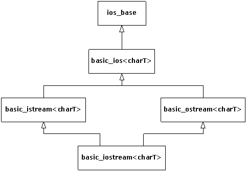
The ios_base class declares everything that is common to all streams, independent of the type of character the stream handles. These declarations are mostly constants and functions to manage them, some of which you’ll see throughout this chapter. The rest of the classes are templates that have the underlying character type as a parameter. The istream class, for example, is defined as follows:
All the classes mentioned earlier are defined via similar type definitions. There are also type definitions for all stream classes using wchar_t (the wide character type discussed in Chapter 3) instead of char. We’ll look at these at the end of this chapter. The basic_ios template defines functions common to both input and output, but that depends on the underlying character type (we won’t use these much). The template basic_istream defines generic functions for input, and basic_ostream does the same for output. The classes for file and string streams introduced later add functionality for their specific stream types.
In the iostreams library, two operators are overloaded to simplify the use of iostreams. The operator << is often referred to as an inserter for iostreams, and the operator >> is often referred to as an extractor.
Extractors parse the information that’s expected by the destination object according to its type. To see an example of this, you can use the cin object, which is the iostream equivalent of stdin in C, that is, redirectable standard input. This object is predefined whenever you include the <iostream> header.
There’s an overloaded operator >> for every built-in data type. You can also overload your own, as you’ll see later.
To find out what you have in the various variables, you can use the cout object (corresponding to standard output; there’s also a cerr object corresponding to standard error) with the inserter <<:
This is tedious and doesn’t seem like much of an improvement over printf( ), despite improved type checking. Fortunately, the overloaded inserters and extractors are designed to be chained into a more complex expression that is much easier to write (and read):
Defining inserters and extractors for your own classes is just a matter of overloading the associated operators to do the right things, namely:
· Make the first parameter a non-const reference to the stream (istream for input, ostream for output).
· Perform the operation by inserting/extracting data to/from the stream (by processing the components of the object).
· Return a reference to the stream.
The stream should be non-const because processing stream data changes the state of the stream. By returning the stream, you allow for chaining stream operations in a single statement, as shown earlier.
As an example, consider how to output the representation of a Date object in MM-DD-YYYY format. The following inserter does the job:
This function cannot be a member of the Date class because the left operand of the << operator must be the output stream. The fill( ) member function of ostream changes the padding character used when the width of an output field, determined by the manipulator setw( ), is greater than needed for the data. We use a ‘0’ character so that months preceding October will display a leading zero, such as “09” for September. The fill( ) function also returns the previous fill character (which defaults to a single space) so that we can restore it later with the manipulator setfill( ). We discuss manipulators in depth later in this chapter.
Extractors require a little more care because things can go wrong with input data. The way to signal a stream error is to set the stream’s fail bit, as follows:
When an error bit is set in a stream, all further streams operations are ignored until the stream is restored to a good state (explained shortly). That’s why the code above continues extracting even if ios::failbit gets set. This implementation is somewhat forgiving in that it allows white space between the numbers and dashes in a date string (because the >> operator skips white space by default when reading built-in types). The following are valid date strings for this extractor:
but these are not:
We’ll discuss stream state in more depth in the section “Handling stream errors” later in this chapter.
As the Date extractor illustrated, you must be on guard for erroneous input. If the input produces an unexpected value, the process is skewed, and it’s difficult to recover. In addition, formatted input defaults to white space delimiters. Consider what happens when we collect the code fragments from earlier in this chapter into a single program:
and give it the following input:
We expect the same output as if we gave it
but the output is, somewhat unexpectedly
Notice that buf got only the first word because the input routine looked for a space to delimit the input, which it saw after “this.” In addition, if the continuous input string is longer than the storage allocated for buf, we overrun the buffer.
In practice, you’ll usually want to get input from interactive programs a line at a time as a sequence of characters, scan them, and then perform conversions once they’re safely in a buffer. This way you don’t need to worry about the input routine choking on unexpected data.
Another consideration is the whole concept of a command-line interface. This made sense in the past when the console was little more than a glass typewriter, but the world is rapidly changing to one where the graphical user interface (GUI) dominates. What is the meaning of console I/O in such a world? It makes much more sense to ignore cin altogether, other than for simple examples or tests, and take the following approaches:
1. If your program requires input, read that input from a file—you’ll soon see that it’s remarkably easy to use files with iostreams. Iostreams for files still works fine with a GUI.
2. Read the input without attempting to convert it, as we just suggested. When the input is some place where it can’t foul things up during conversion, you can safely scan it.
3. Output is different. If you’re using a GUI, cout doesn’t necessarily work, and you must send it to a file (which is identical to sending it to cout) or use the GUI facilities for data display. Otherwise it often makes sense to send it to cout. In both cases, the output formatting functions of iostreams are highly useful.
Another common practice saves compile time on large projects. Consider, for example, how you would declare the Date stream operators introduced earlier in the chapter in a header file. You only need to include the prototypes for the functions, so it’s not really necessary to include the entire <iostream> header in Date.h. The standard practice is to only declare classes, something like this:
This is an age-old technique for separating interface from implementation and is often called a forward declaration (and ostream at this point would be considered an incomplete type, since the class definition has not yet been seen by the compiler).
This will not work as is, however, for two reasons:
1. The stream classes are defined in the std namespace.
2. They are templates.
The proper declaration would be:
(As you can see, like the string class, the streams classes use the character traits classes mentioned in Chapter 3). Since it would be terribly tedious to type all that for every stream class you want to reference, the standard provides a header that does it for you: <iosfwd>. The Date header would then look something like this:
To grab input a line at a time, you have three choices:
· The member function get( )
· The member function getline( )
· The global function getline( ) defined in the <string> header
The first two functions take three arguments:
1. A pointer to a character buffer in which to store the result.
2. The size of that buffer (so it’s not overrun).
3. The terminating character, to know when to stop reading input.
The terminating character has a default value of '\n', which is what you’ll usually use. Both functions store a zero in the result buffer when they encounter the terminating character in the input.
So what’s the difference? Subtle, but important: get( ) stops when it sees the delimiter in the input stream, but it doesn’t extract it from the input stream. Thus, if you did another get( ) using the same delimiter, it would immediately return with no fetched input. (Presumably, you either use a different delimiter in the next get( ) statement or a different input function.) The getline( ) function, on the other hand, extracts the delimiter from the input stream, but still doesn’t store it in the result buffer.
The getline( ) function defined in <string> is convenient. It is not a member function, but rather a stand-alone function declared in the namespace std. It takes only two non-default arguments, the input stream and the string object to populate. Like its namesake, it reads characters until it encounters the first occurrence of the delimiter ('\n' by default) and consumes and discards the delimiter. The advantage of this function is that it reads into a string object, so you don’t need to worry about buffer size.
Generally, when you’re processing a text file that you read a line at a time, you’ll want to use one of the getline( ) functions.
The get( ) function also comes in three other overloaded versions: one with no arguments that returns the next character using an int return value; one that stuffs a character into its char argument using a reference; and one that stores directly into the underlying buffer structure of another iostream object. The latter is explored later in the chapter.
If you know exactly what you’re dealing with and want to move the bytes directly into a variable, an array, or a structure in memory, you can use the unformatted I/O function read( ). The first argument for this function is a pointer to the destination memory, and the second is the number of bytes to read. This is especially useful if you’ve previously stored the information to a file, for example, in binary form using the complementary write( ) member function for an output stream (using the same compiler, of course). You’ll see examples of all these functions later.
The Date extractor shown earlier sets a stream’s fail bit under certain conditions. How does the user know when such a failure occurs? You can detect stream errors by either calling certain stream member functions to see if an error state has occurred, or if you don’t care what the particular error was, you can just evaluate the stream in a Boolean context. Both techniques derive from the state of a stream’s error bits.
The ios_base class, from which ios derives,[42] defines four flags that you can use to test the state of a stream:
|
Flag |
Meaning |
|
badbit |
Some fatal (perhaps physical) error occurred. The stream should be considered unusable. |
|
eofbit |
End-of-input has occurred (either by encountering the physical end of a file stream or by the user terminating a console stream, such as with Ctrl-Z or Ctrl‑D). |
|
failbit |
An I/O operation failed, most likely because of invalid data (e.g., letters were found when trying to read a number). The stream is still usable. The failbit flag is also set when end-of-input occurs. |
|
goodbit |
All is well; no errors. End-of-input has not yet occurred. |
You can test whether any of these conditions have occurred by calling corresponding member functions that return a Boolean value indicating whether any of these have been set. The good( ) stream member function returns true if none of the other three bits are set. The eof( ) function returns true if eofbit is set, which happens with an attempt to read from a stream that has no more data (usually a file). Because end-of-input happens in C++ when trying to read past the end of the physical medium, failbit is also set to indicate that the “expected” data was not successfully read. The fail( ) function returns true if either failbit or badbit is set, and bad( ) returns true only if the badbit is set.
Once any of the error bits in a stream’s state are set, they remain set, which is not always what you want. When reading a file, you might want to reposition to an earlier place in the file before end-of-file occurred. Just moving the file pointer doesn’t automatically reset eofbit or failbit; you must do it yourself with the clear( ) function, like this:
After calling clear( ), good( ) will return true if called immediately. As you saw in the Date extractor earlier, the setstate( ) function sets the bits you pass it. It turns out that setstate( ) doesn’t affect any other bits—if they’re already set, they stay set. If you want to set certain bits but at the same time reset all the rest, you can call an overloaded version of clear( ), passing it a bitwise expression representing the bits you want to set, as in:
Most of the time you won’t be interested in checking the stream state bits individually. Usually you just want to know if everything is okay. This is the case when you read a file from beginning to end; you just want to know when the input data is exhausted. You can use a conversion function defined for void* that is automatically called when a stream occurs in a Boolean expression. Reading a stream until end-of-input using this idiom looks like the following:
Remember that operator>>( ) returns its stream argument, so the while statement above tests the stream as a Boolean expression. This particular example assumes that the input stream myStream contains integers separated by white space. The function ios_base::operator void*( ) simply calls good( ) on its stream and returns the result.[43] Because most stream operations return their stream, using this idiom is convenient.
Iostreams existed as part of C++ long before there were exceptions, so checking stream state manually was just the way things were done. For backward compatibility, this is still the status quo, but modern iostreams can throw exceptions instead. The exceptions( ) stream member function takes a parameter representing the state bits for which you want exceptions to be thrown. Whenever the stream encounters such a state, it throws an exception of type std::ios_base::failure, which inherits from std::exception.
Although you can trigger a failure exception for any of the four stream states, it’s not necessarily a good idea to enable exceptions for all of them. As Chapter 1 explains, use exceptions for truly exceptional conditions, but end-of-file is not only not exceptional—it’s expected! For that reason, you might want to enable exceptions only for the errors represented by badbit, which you would do like this:
You enable exceptions on a stream-by-stream basis, since exceptions( ) is a member function for streams. The exceptions( ) function returns a bitmask[44] (of type iostate, which is some compiler-dependent type convertible to int) indicating which stream states will cause exceptions. If those states have already been set, an exception is thrown immediately. Of course, if you use exceptions in connection with streams, you had better be ready to catch them, which means that you need to wrap all stream processing with a try block that has an ios::failure handler. Many programmers find this tedious and just check states manually where they expect errors to occur (since, for example, they don’t expect bad( ) to return true most of the time anyway). This is another reason that having streams throw exceptions is optional and not the default. In any case, you can choose how you want to handle stream errors. For the same reasons that we recommend using exceptions for error handling in other contexts, we do so here.
Manipulating files with iostreams is much easier and safer than using stdio in C. All you do to open a file is create an object—the constructor does the work. You don’t need to explicitly close a file (although you can, using the close( ) member function) because the destructor will close it when the object goes out of scope. To create a file that defaults to input, make an ifstream object. To create one that defaults to output, make an ofstream object. An fstream object can do both input and output.
The file stream classes fit into the iostreams classes as shown in the following figure:
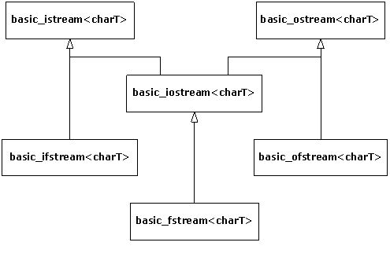
As before, the classes you actually use are template specializations defined by type definitions. For example, ifstream, which processes files of char, is defined as
Here’s an example that shows many of the features discussed so far. Notice the inclusion of <fstream> to declare the file I/O classes. Although on many platforms this will also include <iostream> automatically, compilers are not required to do so. If you want portable code, always include both headers.
The creation of both the ifstream and ofstream are followed by an assure( ) to guarantee the file was successfully opened. Here again the object, used in a situation where the compiler expects a Boolean result, produces a value that indicates success or failure.
The first while loop demonstrates the use of two forms of the get( ) function. The first gets characters into a buffer and puts a zero terminator in the buffer when either SZ-1 characters have been read or the third argument (defaulted to '\n') is encountered. The get( ) function leaves the terminator character in the input stream, so this terminator must be thrown away via in.get( ) using the form of get( ) with no argument, which fetches a single byte and returns it as an int. You can also use the ignore( ) member function, which has two default arguments. The first argument is the number of characters to throw away and defaults to one. The second argument is the character at which the ignore( ) function quits (after extracting it) and defaults to EOF.
Next, you see two output statements that look similar: one to cout and one to the file out. Notice the convenience here—you don’t need to worry about the object type because the formatting statements work the same with all ostream objects. The first one echoes the line to standard output, and the second writes the line out to the new file and includes a line number.
To demonstrate getline( ), open the file we just created and strip off the line numbers. To ensure the file is properly closed before opening it to read, you have two choices. You can surround the first part of the program with braces to force the out object out of scope, thus calling the destructor and closing the file, which is done here. You can also call close( ) for both files; if you do this, you can even reuse the in object by calling the open( ) member function.
The second while loop shows how getline( ) removes the terminator character (its third argument, which defaults to '\n') from the input stream when it’s encountered. Although getline( ), like get( ), puts a zero in the buffer, it still doesn’t insert the terminating character.
This example, as well as most of the examples in this chapter, assumes that each call to any overload of getline( ) will encounter a newline character. If this is not the case, the eofbit state of the stream will be set and the call to getline( ) will return false, causing the program to lose the last line of input.
You can control the way a file is opened by overriding the constructor’s default arguments. The following table shows the flags that control the mode of the file:
|
Flag |
Function |
|
ios::in |
Opens an input file. Use this as an open mode for an ofstream to prevent truncating an existing file. |
|
ios::out |
Opens an output file. When used for an ofstream without ios::app, ios::ate or ios::in, ios::trunc is implied. |
|
ios::app |
Opens an output file for appending only. |
|
ios::ate |
Opens an existing file (either input or output) and seeks to the end. |
|
ios::trunc |
Truncates the old file if it already exists. |
|
ios::binary |
Opens a file in binary mode. The default is text mode. |
You can combine these flags using a bitwise or operation.
The binary flag, while portable, only has an effect on some non-UNIX systems, such as operating systems derived from MS-DOS, that have special conventions for storing end-of-line delimiters. For example, on MS-DOS systems in text mode (which is the default), every time you output a newline character ('\n'), the file system actually outputs two characters, a carriage-return/linefeed pair (CRLF), which is the pair of ASCII characters 0x0D and 0x0A. Conversely, when you read such a file back into memory in text mode, each occurrence of this pair of bytes causes a '\n' to be sent to the program in its place. If you want to bypass this special processing, you open files in binary mode. Binary mode has nothing whatsoever to do with whether you can write raw bytes to a file—you always can (by calling write( )) . You should, however, open a file in binary mode when you’ll be using read( ) or write( ), because these functions take a byte count parameter. Having the extra '\r' characters will throw your byte count off in those instances. You should also open a file in binary mode if you’re going to use the stream-positioning commands discussed later in this chapter.
You can open a file for both input and output by declaring an fstream object. When declaring an fstream object, you must use enough of the open mode flags mentioned earlier to let the file system know whether you want to input, output, or both. To switch from output to input, you need to either flush the stream or change the file position. To change from input to output, change the file position. To create a file via an fstream object, use the ios::trunc open mode flag in the constructor call to do both input and output.
Good design practice dictates that, whenever you create a new class, you should endeavor to hide the details of the underlying implementation as much as possible from the user of the class. You show them only what they need to know and make the rest private to avoid confusion. When using inserters and extractors, you normally don’t know or care where the bytes are being produced or consumed, whether you’re dealing with standard I/O, files, memory, or some newly created class or device.
A time comes, however, when it is important to communicate with the part of the iostream that produces and consumes bytes. To provide this part with a common interface and still hide its underlying implementation, the standard library abstracts it into its own class, called streambuf. Each iostream object contains a pointer to some kind of streambuf. (The type depends on whether it deals with standard I/O, files, memory, and so on.) You can access the streambuf directly; for example, you can move raw bytes into and out of the streambuf without formatting them through the enclosing iostream. This is accomplished by calling member functions for the streambuf object.
Currently, the most important thing for you to know is that every iostream object contains a pointer to a streambuf object, and the streambuf object has some member functions you can call if necessary. For file and string streams, there are specialized types of stream buffers, as the following figure illustrates:
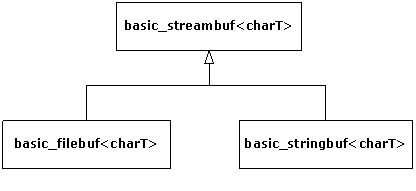
To allow you to access the streambuf, every iostream object has a member function called rdbuf( ) that returns the pointer to the object’s streambuf. This way you can call any member function for the underlying streambuf. However, one of the most interesting things you can do with the streambuf pointer is to connect it to another iostream object using the << operator. This drains all the characters from your object into the one on the left side of the <<. If you want to move all the characters from one iostream to another, you don’t need to go through the tedium (and potential coding errors) of reading them one character or one line at a time. This is a much more elegant approach.
Here’s a simple program that opens a file and sends the contents to standard output (similar to the previous example):
An ifstream is created using the source code file for this program as an argument. The assure( ) function reports a failure if the file cannot be opened. All the work really happens in the statement
which sends the entire contents of the file to cout. This is not only more succinct to code, it is often more efficient than moving the bytes one at a time.
A form of get( ) writes directly into the streambuf of another object. The first argument is a reference to the destination streambuf, and the second is the terminating character (‘\n’ by default), which stops the get( ) function. So there is yet another way to print a file to standard output:
The rdbuf( ) function returns a pointer, so it must be dereferenced to satisfy the function’s need to see an object. Stream buffers are not meant to be copied (they have no copy constructor), so we define sb as a reference to cout’s stream buffer. We need the calls to fail( ) and clear( ) in case the input file has a blank line (this one does). When this particular overloaded version of get( ) sees two newlines in a row (evidence of a blank line), it sets the input stream’s fail bit, so we must call clear( ) to reset it so that the stream can continue to be read. The second call to get( ) extracts and echoes each newline delimiter. (Remember, the get( ) function doesn’t extract its delimiter like getline( ) does.)
You probably won’t need to use a technique like this often, but it’s nice to know it exists.[45]
Each type of iostream has a concept of where its “next” character will come from (if it’s an istream) or go (if it’s an ostream). In some situations, you might want to move this stream position. You can do so using two models: one uses an absolute location in the stream called the streampos; the second works like the Standard C library functions fseek( ) for a file and moves a given number of bytes from the beginning, end, or current position in the file.
The streampos approach requires that you first call a “tell” function: tellp( ) for an ostream or tellg( ) for an istream. (The “p” refers to the “put pointer,” and the “g” refers to the “get pointer.”) This function returns a streampos you can later use in calls to seekp( ) for an ostream or seekg( ) for an istream when you want to return to that position in the stream.
The second approach is a relative seek and uses overloaded versions of seekp( ) and seekg( ). The first argument is the number of characters to move: it can be positive or negative. The second argument is the seek direction:
|
ios::beg |
From beginning of stream |
|
ios::cur |
Current position in stream |
|
ios::end |
From end of stream |
Here’s an example that shows the movement through a file, but remember, you’re not limited to seeking within files as you are with C’s stdio. With C++, you can seek in any type of iostream (although the standard stream objects, such as cin and cout, explicitly disallow it):
This program writes a poem to a file using a binary output stream. Since we reopen it as an ifstream, we use seekg( ) to position the “get pointer.” As you can see, you can seek from the beginning or end of the file or from the current file position. Obviously, you must provide a positive number to move from the beginning of the file and a negative number to move back from the end.
Now that you know about the streambuf and how to seek, you can understand an alternative method (besides using an fstream object) for creating a stream object that will both read and write a file. The following code first creates an ifstream with flags that say it’s both an input and an output file. You can’t write to an ifstream, so you need to create an ostream with the underlying stream buffer:
You might wonder what happens when you write to one of these objects. Here’s an example:
The first five lines copy the source code for this program into a file called iofile.out and then close the files. This gives us a safe text file to play with. Then the aforementioned technique is used to create two objects that read and write to the same file. In cout << in2.rdbuf( ), you can see the “get” pointer is initialized to the beginning of the file. The “put” pointer, however, is set to the end of the file because “Where does this end up?” appears appended to the file. However, if the put pointer is moved to the beginning with a seekp( ), all the inserted text overwrites the existing text. Both writes are seen when the get pointer is moved back to the beginning with a seekg( ), and the file is displayed. The file is automatically saved and closed when out2 goes out of scope and its destructor is called.
A string stream works directly with memory instead of a file or standard output. It uses the same reading and formatting functions that you use with cin and cout to manipulate bytes in memory. On old computers, the memory was referred to as core, so this type of functionality is often called in-core formatting.
The class names for string streams echo those for file streams. If you want to create a string stream to extract characters from, you create an istringstream. If you want to put characters into a string stream, you create an ostringstream. All declarations for string streams are in the standard header <sstream>. As usual, there are class templates that fit into the iostreams hierarchy, as shown in the following figure:
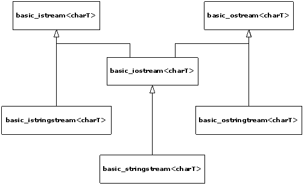
To read from a string using stream operations, you create an istringstream object initialized with the string. The following program shows how to use an istringstream object:
You can see that this is a more flexible and general approach to transforming character strings to typed values than the standard C library functions such as atof( ) or atoi( ), even though the latter may be more efficient for single conversions.
In the expression s >> i >> f, the first number is extracted into i, and the second into f. This isn’t “the first whitespace-delimited set of characters” because it depends on the data type it’s being extracted into. For example, if the string were instead, “1.414 47 This is a test,” then i would get the value 1 because the input routine would stop at the decimal point. Then f would get 0.414. This could be useful if you want to break a floating-point number into a whole number and a fraction part. Otherwise it would seem to be an error. The second assert( ) calculates the relative error between what we read and what we expected; it’s always better to do this than to compare floating-point numbers for equality. The constant returned by epsilon( ), defined in <limits>, represents the machine epsilon for double-precision numbers, which is the best tolerance you can expect comparisons of doubles to satisfy.[46]
As you may already have guessed, buf2 doesn’t get the rest of the string, just the next white-space-delimited word. In general, it’s best to use the extractor in iostreams when you know the exact sequence of data in the input stream and you’re converting to some type other than a character string. However, if you want to extract the rest of the string all at once and send it to another iostream, you can use rdbuf( ) as shown.
To test the Date extractor at the beginning of this chapter, we used an input string stream with the following test program:
Each string literal in main( ) is passed by reference to testDate( ), which in turn wraps it in an istringstream so we can test the stream extractor we wrote for Date objects. The function testDate( ) also begins to test the inserter, operator<<( ).
To create an output string stream, you just create an ostringstream object, which manages a dynamically sized character buffer to hold whatever you insert. To get the formatted result as a string object, you call the str( ) member function. Here’s an example:
This is similar to the Istring.cpp example earlier that fetched an int and a float. A sample execution follows (the keyboard input is in bold type).
You can see that, like the other output streams, you can use the ordinary formatting tools, such as the << operator and endl, to send bytes to the ostringstream. The str( ) function returns a new string object every time you call it so the underlying stringbuf object owned by the string stream is left undisturbed.
In the previous chapter, we presented a program, HTMLStripper.cpp, that removed all HTML tags and special codes from a text file. As promised, here is a more elegant version using string streams.
In this program we read the entire file into a string by inserting a rdbuf( ) call to the file stream into an ostringstream. Now it’s an easy matter to search for HTML delimiter pairs and erase them without having to worry about crossing line boundaries like we had to with the previous version in Chapter 3.
The following example shows how to use a bidirectional (that is, read/write) string stream:
As always, to move the put pointer, you call seekp( ), and to reposition the get pointer, you call seekg( ). Even though we didn’t show it with this example, string streams are a little more forgiving than file streams in that you can switch from reading to writing or vice-versa at any time. You don’t need to reposition the get or put pointers or flush the stream. This program also illustrates the overload of str( ) that replaces the stream’s underlying stringbuf with a new string.
The goal of the iostreams design is to allow you to easily move and/or format characters. It certainly wouldn’t be useful if you couldn’t do most of the formatting provided by C’s printf( ) family of functions. In this section, you’ll learn all the output formatting functions that are available for iostreams, so you can format your bytes the way you want them.
The formatting functions in iostreams can be somewhat confusing at first because there’s often more than one way to control the formatting: through both member functions and manipulators. To further confuse things, a generic member function sets state flags to control formatting, such as left or right justification, to use uppercase letters for hex notation, to always use a decimal point for floating-point values, and so on. On the other hand, separate member functions set and read values for the fill character, the field width, and the precision.
In an attempt to clarify all this, we’ll first examine the internal formatting data of an iostream, along with the member functions that can modify that data. (Everything can be controlled through the member functions, if desired.) We’ll cover the manipulators separately.
The class ios contains data members to store all the formatting information pertaining to a stream. Some of this data has a range of values and is stored in variables: the floating-point precision, the output field width, and the character used to pad the output (normally a space). The rest of the formatting is determined by flags, which are usually combined to save space and are referred to collectively as the format flags. You can find out the value of the format flags with the ios::flags( ) member function, which takes no arguments and returns an object of type fmtflags (usually a synonym for long) that contains the current format flags. All the rest of the functions make changes to the format flags and return the previous value of the format flags.
The first function forces all the flags to change, which is sometimes what you want. More often, you change one flag at a time using the remaining three functions.
The use of setf( ) can seem somewhat confusing. To know which overloaded version to use, you must know what type of flag you’re changing. There are two types of flags: those that are simply on or off, and those that work in a group with other flags. The on/off flags are the simplest to understand because you turn them on with setf(fmtflags) and off with unsetf(fmtflags). These flags are shown in the following table:
|
on/off flag |
Effect |
|
ios::skipws |
Skip white space. (For input; this is the default.) |
|
ios::showbase |
Indicate the numeric base (as set, for example, by dec, oct, or hex) when printing an integral value. Input streams also recognize the base prefix when showbase is on. |
|
ios::showpoint |
Show decimal point and trailing zeros for floating-point values. |
|
ios::uppercase |
Display uppercase A-F for hexadecimal values and E for scientific values. |
|
ios::showpos |
Show plus sign (+) for positive values. |
|
ios::unitbuf |
“Unit buffering.” The stream is flushed after each insertion. |
For example, to show the plus sign for cout, you say cout.setf(ios::showpos). To stop showing the plus sign, you say cout.unsetf(ios::showpos).
The unitbuf flag controls unit buffering, which means that each insertion is flushed to its output stream immediately. This is handy for error tracing, so that in case of a program crash, your data is still written to the log file. The following program illustrates unit buffering:
It is necessary to turn on unit buffering before any insertions are made to the stream. When we commented out the call to setf( ), one particular compiler had written only the letter ‘o’ to the file log.txt. With unit buffering, no data was lost.
The standard error output stream cerr has unit buffering turned on by default. There is a cost for unit buffering, so if an output stream is heavily used, don’t enable unit buffering unless efficiency is not a consideration.
The second type of formatting flags work in a group. Only one of these flags can be set at a time, like the buttons on old car radios—you push one in, the rest pop out. Unfortunately this doesn’t happen automatically, and you must pay attention to what flags you’re setting so that you don’t accidentally call the wrong setf( ) function. For example, there’s a flag for each of the number bases: hexadecimal, decimal, and octal. Collectively, these flags are referred to as the ios::basefield. If the ios::dec flag is set and you call setf(ios::hex), you’ll set the ios::hex flag, but you won’t clear the ios::dec bit, resulting in undefined behavior. Instead, call the second form of setf( ) like this: setf(ios::hex, ios::basefield). This function first clears all the bits in the ios::basefield and then sets ios::hex. Thus, this form of setf( ) ensures that the other flags in the group “pop out” whenever you set one. The ios::hex manipulator does all this for you, automatically, so you don’t need to concern yourself with the internal details of the implementation of this class or to even care that it’s a set of binary flags. Later you’ll see that there are manipulators to provide equivalent functionality in all the places you would use setf( ).
Here are the flag groups and their effects:
|
ios::basefield |
Effect |
|
ios::dec |
Format integral values in base 10 (decimal) (the default radix—no prefix is visible). |
|
ios::hex |
Format integral values in base 16 (hexadecimal). |
|
ios::oct |
Format integral values in base 8 (octal). |
|
ios::floatfield |
Effect |
|
ios::scientific |
Display floating-point numbers in scientific format. Precision field indicates number of digits after the decimal point. |
|
ios::fixed |
Display floating-point numbers in fixed format. Precision field indicates number of digits after the decimal point. |
|
“automatic” (Neither bit is set.) |
Precision field indicates the total number of significant digits. |
|
ios::adjustfield |
Effect |
|
ios::left |
Left-align values; pad on the right with the fill character. |
|
ios::right |
Right-align values. Pad on the left with the fill character. This is the default alignment. |
|
ios::internal |
Add fill characters after any leading sign or base indicator, but before the value. (In other words, the sign, if printed, is left-justified while the number is right-justified.) |
The internal variables that control the width of the output field, the fill character used to pad an output field, and the precision for printing floating-point numbers are read and written by member functions of the same name.
|
Function |
Effect |
|
int ios::width( ) |
Returns the current width. Default is 0. Used for both insertion and extraction. |
|
int ios::width(int n) |
Sets the width, returns the previous width. |
|
int ios::fill( ) |
Returns the current fill character. Default is space. |
|
int ios::fill(int n) |
Sets the fill character, returns the previous fill character. |
|
int ios::precision( ) |
Returns current floating-point precision. Default is 6. |
|
int ios::precision(int n) |
Sets floating-point precision, returns previous precision. See ios::floatfield table for the meaning of “precision.” |
The fill and precision values are fairly straightforward, but width requires some explanation. When the width is zero, inserting a value produces the minimum number of characters necessary to represent that value. A positive width means that inserting a value will produce at least as many characters as the width; if the value has fewer than width characters, the fill character pad the field. However, the value will never be truncated, so if you try to print 123 with a width of two, you’ll still get 123. The field width specifies a minimum number of characters; there’s no way to specify a maximum number.
The width is also distinctly different because it’s reset to zero by each inserter or extractor that could be influenced by its value. It’s really not a state variable, but rather an implicit argument to the inserters and extractors. If you want a constant width, call width( ) after each insertion or extraction.
To make sure you know how to call all the functions previously discussed, here’s an example that calls them all:
This example uses a trick to create a trace file so that you can monitor what’s happening. The macro D(a) uses the preprocessor “stringizing” to turn a into a string to display. Then it reiterates a so the statement is executed. The macro sends all the information to a file called T, which is the trace file. The output is
Studying this output should clarify your understanding of the iostream formatting member functions.
As you can see from the previous program, calling the member functions for stream formatting operations can get a bit tedious. To make things easier to read and write, a set of manipulators is supplied to duplicate the actions provided by the member functions. Manipulators are a convenience because you can insert them for their effect within a containing expression; you don’t need to create a separate function-call statement.
Manipulators change the state of the stream instead of (or in addition to) processing data. When you insert endl in an output expression, for example, it not only inserts a newline character, but it also flushes the stream (that is, puts out all pending characters that have been stored in the internal stream buffer but not yet output). You can also just flush a stream like this:
which causes a call to the flush( ) member function, as in:
as a side effect (nothing is inserted into the stream). Additional basic manipulators will change the number base to oct (octal), dec (decimal) or hex (hexadecimal):
In this case, numeric output will continue in hexadecimal mode until you change it by inserting either dec or oct in the output stream.
There’s also a manipulator for extraction that “eats” white space:
Manipulators with no arguments are provided in <iostream>. These include dec, oct, and hex, which perform the same action as, respectively, setf(ios::dec, ios::basefield), setf(ios::oct, ios::basefield), and setf(ios::hex, ios::basefield), albeit more succinctly. The <iostream> header also includes ws, endl, and flush and the additional set shown here:
|
Manipulator |
Effect |
|
showbase |
Indicate the numeric base (dec, oct, or hex) when printing an integral value. |
|
showpos |
Show plus sign (+) for positive values. |
|
uppercase |
Display uppercase A-F for hexadecimal values, and display E for scientific values. |
|
showpoint |
Show decimal point and trailing zeros for floating-point values. |
|
skipws |
Skip white space on input. |
|
left |
Left-align, pad on right. |
|
scientific |
Indicates the display preference for floating-point output (scientific notation vs. fixed-point decimal). |
There are six standard manipulators, such as setw( ), that take arguments. These are defined in the header file <iomanip>, and are summarized in the following table:
|
Manipulator |
effect |
|
setiosflags(fmtflags n) |
Equivalent to a call to setf(n). The setting remains in effect until the next change, such as ios::setf( ). |
|
resetiosflags(fmtflags n) |
Clears only the format flags specified by n. The setting remains in effect until the next change, such as ios::unsetf( ). |
|
setbase(base n) |
Changes base to n, where n is 10, 8, or 16. (Anything else results in 0.) If n is zero, output is base 10, but input uses the C conventions: 10 is 10, 010 is 8, and 0xf is 15. You might as well use dec, oct, and hex for output. |
|
setfill(char n) |
Changes the fill character to n, such as ios::fill( ). |
|
setprecision(int n) |
Changes the precision to n, such as ios::precision( ). |
|
setw(int n) |
Changes the field width to n, such as ios::width( ). |
If you’re doing a lot of formatting, you can see how using manipulators instead of calling stream member functions can clean up your code. As an example, here’s the program from the previous section rewritten to use the manipulators. (The D( ) macro is removed to make it easier to read.)
You can see that a lot of the multiple statements have been condensed into a single chained insertion. Notice the call to setiosflags( ) in which the bitwise-OR of the flags is passed. This could also have been done with setf( ) and unsetf( ) as in the previous example.
When using setw( ) with an output stream, the output expression is formatted into a temporary string that is padded with the current fill character if needed, as determined by comparing the length of the formatted result to the argument of setw( ). In other words, setw( ) affects the result string of a formatted output operation. Likewise, using setw( ) with input streams only is meaningful when reading strings, as the following example makes clear:
If you attempt to read a string, setw( ) will control the number of characters extracted quite nicely… up to a point. The first extraction gets two characters, but the second only gets one, even though we asked for two. That is because operator>>( ) uses white space as a delimiter (unless you turn off the skipws flag). When trying to read a number, however, such as x, you cannot use setw( ) to limit the characters read. With input streams, use only setw( ) for extracting strings.
Sometimes you’d like to create your own manipulators, and it turns out to be remarkably simple. A zero-argument manipulator such as endl is simply a function that takes as its argument an ostream reference and returns an ostream reference. The declaration for endl is
Now, when you say:
the endl produces the address of that function. So the compiler asks, “Is there a function that can be applied here that takes the address of a function as its argument?” Predefined functions in <iostream> do this; they’re called applicators (because they apply a function to a stream). The applicator calls its function argument, passing it the ostream object as its argument. You don’t need to know how applicators work to create your own manipulator; you only need to know that they exist. Here’s the (simplified) code for an ostream applicator:
The actual definition is a little more complicated since it involves templates, but this code illustrates the technique. When a function such as *pf (that takes a stream parameter and returns a stream reference) is inserted into a stream, this applicator function is called, which in turn executes the function to which pf points. Applicators for ios_base, basic_ios, basic_ostream, and basic_istream are predefined in the Standard C++ library.
To illustrate the process, here’s a trivial example that creates a manipulator called nl that is equivalent to just inserting a newline into a stream (i.e., no flushing of the stream occurs, as with endl):
When you insert nl into an output stream, such as cout, the following sequence of calls ensues:
The expression
inside nl( ) calls ostream::operator(char), which returns the stream, which is what is ultimately returned from nl( ).[47]
As you’ve seen, zero-argument manipulators are easy to create. But what if you want to create a manipulator that takes arguments? If you inspect the <iomanip> header, you’ll see a type called smanip, which is what the manipulators with arguments return. You might be tempted to somehow use that type to define your own manipulators, but don’t do it. The smanip type is implementation-dependent and thus not portable. Fortunately, you can define such manipulators in a straightforward way without any special machinery, based on a technique introduced by Jerry Schwarz, called an effector.[48] An effector is a simple class whose constructor formats a string representing the desired operation, along with an overloaded operator<< to insert that string into a stream. Here’s an example with two effectors. The first outputs a truncated character string, and the second prints a number in binary.
The constructor for Fixw creates a shortened copy of its char* argument, and the destructor releases the memory created for this copy. The overloaded operator<< takes the contents of its second argument, the Fixw object, inserts it into the first argument, the ostream, and then returns the ostream so that it can be used in a chained expression. When you use Fixw in an expression like this:
a temporary object is created by the call to the Fixw constructor, and that temporary object is passed to operator<<. The effect is that of a manipulator with arguments. The temporary Fixw object persists until the end of the statement.
The Bin effector relies on the fact that shifting an unsigned number to the right shifts zeros into the high bits. We use numeric_limits<unsigned long>::max( ) (the largest unsigned long value, from the standard header <limits>) to produce a value with the high bit set, and this value is moved across the number in question (by shifting it to the right), masking each bit in turn. We’ve juxtaposed string literals in the code for readability; the separate strings are concatenated into a single string by the compiler.
Historically, the problem with this technique was that once you created a class called Fixw for char* or Bin for unsigned long, no one else could create a different Fixw or Bin class for their type. However, with namespaces, this problem is eliminated. Effectors and manipulators aren’t equivalent, although they can often be used to solve the same problem. If you find that an effector isn’t enough, you will need to conquer the complexity of manipulators.
In this section you’ll see examples that use what you’ve learned in this chapter. Although many tools exist to manipulate bytes (stream editors such as sed and awk from UNIX are perhaps the most well known, but a text editor also fits this category), they generally have some limitations. Both sed and awk can be slow and can only handle lines in a forward sequence, and text editors usually require human interaction, or at least learning a proprietary macro language. The programs you write with iostreams have none of these limitations: they’re fast, portable, and flexible.
Generally, when you create a class, you think in library terms: you make a header file Name.h for the class declaration, and then create a file called Name.cpp where the member functions are implemented. These files have certain requirements: a particular coding standard (the program shown here uses the coding format for this book), and preprocessor statements surrounding the code in the header file to prevent multiple declarations of classes. (Multiple declarations confuse the compiler—it doesn’t know which one you want to use. They could be different, so it throws up its hands and gives an error message.)
This example creates a new header/implementation pair of files or modifies an existing pair. If the files already exist, it checks and potentially modifies the files, but if they don’t exist, it creates them using the proper format.
First notice the useful function startsWith( ), which does just what its name says—it returns true if the first string argument starts with the second argument. This is used when looking for the expected comments and include-related statements. Having the array of strings, part, allows for easy looping through the series of expected statements in source code. If the source file doesn’t exist, we merely write the statements to a new file of the given name. If the file does exist, we search a line at a time, verifying that the expected lines occur. If they are not present, they are inserted. Special care must be taken to make sure we don’t drop existing lines (see where we use the Boolean variable lineUsed). Notice that we use a stringstream for an existing file, so we can first write the contents of the file to it and then read from and search it.
The names in the enumeration are BASE, the capitalized base file name without extension; HEADER, the header file name; IMPLEMENT, the implementation file (cpp) name; HLINE1, the skeleton first line of the header file; GUARD1, GUARD2, and GUARD3, the “guard” lines in the header file (to prevent multiple inclusion); CPPLINE1, the skeleton first line of the cpp file; and INCLUDE, the line in the cpp file that includes the header file.
If you run this program without any arguments, the following two files are created:
(We removed the colon after the double-slash in the first comment lines so as not to confuse the book’s code extractor. It will appear in the actual output produced by cppCheck.)
You can experiment by removing selected lines from these files and re-running the program. Each time you will see that the correct lines are added back in. When a file is modified, the string “//@//” is placed as the first line of the file to bring the change to your attention. You will need to remove this line before you process the file again (otherwise cppcheck will assume the initial comment line is missing).
All the code in this book is designed to compile as shown without errors. Lines of code that should generate a compile-time error may be commented out with the special comment sequence “//!”. The following program will remove these special comments and append a numbered comment to the line. When you run your compiler, it should generate error messages, and you will see all the numbers appear when you compile all the files. This program also appends the modified line to a special file so that you can easily locate any lines that don’t generate errors.
You can replace the marker with one of your choice.
Each file is read a line at a time, and each line is searched for the marker appearing at the head of the line; the line is modified and put into the error line list and into the string stream, edited. When the whole file is processed, it is closed (by reaching the end of a scope), it is reopened as an output file, and edited is poured into the file. Also notice the counter is saved in an external file. The next time this program is invoked, it continues to increment the counter.
This example shows an approach you might take to log data to disk and later retrieve it for processing. It is meant to produce a temperature-depth profile of the ocean at various points. The DataPoint class holds the data:
A DataPoint consists of a time stamp, which is stored as a time_t value as defined in <ctime>, longitude and latitude coordinates, and values for depth and temperature. We use inserters for easy formatting. Here’s the implementation file:
The Coord::toString( ) function is necessary because the DataPoint inserter calls setw( ) before it prints the latitude and longitude. If we used the stream inserter for Coord instead, the width would only apply to the first insertion (that is, to Coord::deg), since width changes are always reset immediately. The call to setf( ) causes the floating-point output to be fixed-precision, and precision( ) sets the number of decimal places to four. Notice how we restore the fill character and precision to whatever they were before the inserter was called.
To get the values from the time encoding stored in DataPoint::timestamp, we call the function std::localtime( ), which returns a static pointer to a tm object. The tm struct has the following layout:
Here’s a program that creates a file of test data in binary form (using write( )) and a second file in ASCII form using the DataPoint inserter. You can also print it out to the screen, but it’s easier to inspect in file form.
The file data.txt is created in the ordinary way as an ASCII file, but data.bin has the flag ios::binary to tell the constructor to set it up as a binary file. To illustrate the formatting used for the text file, here is the first line of data.txt (the line wraps because it’s longer than this page will allow):
The Standard C library function time( ) updates the time_t value its argument points to with an encoding of the current time, which on most platforms is the number of seconds elapsed since 00: 00: 00 GMT, January 1 1970 (the dawning of the age of Aquarius?). The current time is also a convenient way to seed the random number generator with the Standard C library function srand( ), as is done here.
After this, the timer is incremented by 55 seconds to give an interesting interval between readings in this simulation.
The latitude and longitude used are fixed values to indicate a set of readings at a single location. Both the depth and the temperature are generated with the Standard C library rand( ) function, which returns a pseudorandom number between zero and a platform-dependent constant, RAND_MAX, defined in <cstdlib> (usually the value of the platform’s largest unsigned integer). To put this in a desired range, use the remainder operator % and the upper end of the range. These numbers are integral; to add a fractional part, a second call to rand( ) is made, and the value is inverted after adding one (to prevent divide-by-zero errors).
In effect, the data.bin file is being used as a container for the data in the program, even though the container exists on disk and not in RAM. write( ) sends the data out to the disk in binary form. The first argument is the starting address of the source block—notice it must be cast to a char* because that’s what write( ) expects for narrow streams. The second argument is the number of characters to write, which in this case is the size of the DataPoint object (again, because we’re using narrow streams). Because no pointers are contained in DataPoint, there is no problem in writing the object to disk. If the object is more sophisticated, you must implement a scheme for serialization, which writes the data referred to by pointers and defines new pointers when read back in later. (We don’t talk about serialization in this volume—most vendor class libraries have some sort of serialization structure built into them.)
To check the validity of the data stored in binary format, you can read it into memory with the read( ) member function for input streams, and compare it to the text file created earlier by Datagen.cpp. The following example just writes the formatted results to cout, but you can redirect this to a file and then use a file comparison utility to verify that it is identical to the original:
The software industry is now a healthy, worldwide economic market, with demand for applications that can run in various languages and cultures. As early as the late 1980s, the C Standards Committee added support for non-U.S. formatting conventions with their locale mechanism. A locale is a set of preferences for displaying certain entities such as dates and monetary quantities. In the 1990s, the C Standards Committee approved an addendum to Standard C that specified functions to handle wide characters (denoted by the type wchar_t), which allow support for character sets other than ASCII and its commonly used Western European extensions. Although the size of a wide character is not specified, some platforms implement them as 32-bit quantities, so they can hold the encodings specified by the Unicode Consortium, as well as mappings to multi-byte characters sets defined by Asian standards bodies. C++ has integrated support for both wide characters and locales into the iostreams library.
A wide stream is a stream class that handles wide characters. All the examples so far (except for the last traits example in Chapter 3) have used narrow streams that hold instances of char. Since stream operations are essentially the same no matter the underlying character type, they are encapsulated generically as templates. So all input streams, for example, are connected to the basic_istream class template:
In fact, all input stream types are specializations of this template, according to the following type definitions:
All other stream types are defined in similar fashion.
In a perfect world, this is all you’d need to create streams of different character types. But things aren’t that simple. The reason is that the character-processing functions provided for char and wchar_t don’t have the same names. To compare two narrow strings, for example, you use the strcmp( ) function. For wide characters, that function is named wcscmp( ). (Remember these originated in C, which does not have function overloading, hence unique names are required.) For this reason, a generic stream can’t just call strcmp( ) in response to a comparison operator. There needs to be a way for the correct low-level functions to be called automatically.
The solution is to factor out the differences into a new abstraction. The operations you can perform on characters have been abstracted into the char_traits template, which has predefined specializations for char and wchar_t, as we discussed at the end of the previous chapter. To compare two strings, then, basic_string just calls traits::compare( ) (remember that traits is the second template parameter), which in turn calls either strcmp( ) or wcscmp( ), depending on which specialization is being used (transparent to basic_string).
You only need to be concerned about char_traits if you access the low-level character processing functions; most of the time you don’t care. Consider, however, making your inserters and extractors more robust by defining them as templates, just in case someone wants to use them on a wide stream.
To illustrate, recall again the Date class inserter from the beginning of this chapter. We originally declared it as:
This accommodates only narrow streams. To make it generic, we simply make it a template based on basic_ostream:
Notice that we also have to replace char with the template parameter charT in the declaration of fillc, since it could be either char or wchar_t, depending on the template instantiation being used.
Since you don’t know when you’re writing the template which type of stream you have, you need a way to automatically convert character literals to the correct size for the stream. This is the job of the widen( ) member function. The expression widen('-'), for example, converts its argument to L’-’ (the literal syntax equivalent to the conversion wchar_t(‘-’)) if the stream is a wide stream and leaves it alone otherwise. There is also a narrow( ) function that converts to a char if needed.
We can use widen( ) to write a generic version of the nl manipulator we presented earlier in the chapter.
Perhaps the most notable difference in typical numeric computer output from country to country is the punctuator used to separate the integer and fractional parts of a real number. In the United States, a period denotes a decimal point, but in much of the world, a comma is expected instead. It would be quite inconvenient to do all your own formatting for locale-dependent displays. Once again, creating an abstraction that handles these differences solves the problem.
That abstraction is the locale. All streams have an associated locale object that they use for guidance on how to display certain quantities for different cultural environments. A locale manages the categories of culture-dependent display rules, which are defined as follows:
|
Category |
Effect |
|
collate |
Allows comparing strings according to different, supported collating sequences. |
|
ctype |
Abstracts the character classification and conversion facilities found in <cctype>. |
|
monetary |
Supports different displays of monetary quantities. |
|
numeric |
Supports different display formats of real numbers, including radix (decimal point) and grouping (thousands) separators. |
|
time |
Supports various international formats for display of date and time. |
|
messages |
Scaffolding to implement context-dependent message catalogs (such as for error messages in different languages). |
The following program illustrates basic locale behavior:
Here’s the output:
The default locale is the “C” locale, which is what C and C++ programmers have been used to all these years (basically, English language and American culture). All streams are initially “imbued” with the “C” locale. The imbue( ) member function changes the locale that a stream uses. Notice that the full ISO name for the “French” locale is displayed (that is, French used in France vs. French used in another country). This example shows that this locale uses a comma for a radix point in numeric display. We have to change cin to the same locale if we want to do input according to the rules of this locale.
Each locale category is divided into number of facets, which are classes encapsulating the functionality that pertains to that category. For example, the time category has the facets time_put and time_get, which contain functions for doing time and date input and output respectively. The monetary category has facets money_get, money_put, and moneypunct. (The latter facet determines the currency symbol.) The following program illustrates the moneypunct facet. (The time facet requires a sophisticated use of iterators which is beyond the scope of this chapter.)
The output shows the French currency symbol and decimal separator:
You can also define your own facets to construct customized locales.[49] Be aware that the overhead for locales is considerable. In fact, some library vendors provide different “flavors” of the Standard C++ library to accommodate environments that have limited space.[50]
This chapter has given you a fairly thorough introduction to the iostream class library. What you’ve seen here is likely to be all you need to create programs using iostreams. However, be aware that some additional features in iostreams are not used often, but you can discover them by looking at the iostream header files and by reading your compiler’s documentation on iostreams or the references mentioned in this chapter and in the appendices.
Solutions to selected exercises can be found in the electronic document The Thinking in C++ Volume 2 Annotated Solution Guide, available for a small fee from www.MindView.net.
1. Open a file by creating an ifstream object. Make an ostringstream object and read the entire contents into the ostringstream using the rdbuf( ) member function. Extract a string copy of the underlying buffer and capitalize every character in the file using the Standard C toupper( ) macro defined in <cctype>. Write the result out to a new file.
2. Create a program that opens a file (the first argument on the command line) and searches it for any one of a set of words (the remaining arguments on the command line). Read the input a line at a time, and write out the lines (with line numbers) that match to the new file.
3. Write a program that adds a copyright notice to the beginning of all source-code files indicated by the program’s command-line arguments.
4. Use your favorite text-searching program (grep, for example) to output the names (only) of all the files that contain a particular pattern. Redirect the output into a file. Write a program that uses the contents of that file to generate a batch file that invokes your editor on each of the files found by the search program.
5. We know that setw( ) allows for a minimum of characters read in, but what if you wanted to read a maximum? Write an effector that allows the user to specify a maximum number of characters to extract. Have your effector also work for output, in such a way that output fields are truncated, if necessary, to stay within width limits.
6. Demonstrate to yourself that if the fail or bad bit is set, and you subsequently turn on stream exceptions, that the stream will immediately throw an exception.
7. String streams accommodate easy conversions, but they come with a price. Write a program that races atoi( ) against the stringstream conversion system to see the effect of the overhead involved with stringstream.
8. Make a Person struct with fields such as name, age, address, etc. Make the string fields fixed-size arrays. The social security number will be the key for each record. Implement the following Database class:
Write some Person records to disk (do not keep them all in memory). When the user requests a record, read it off the disk and return it. The I/O operations in the DataBase class use read( ) and write( ) to process all Person records.
9. Write an operator<< inserter for the Person struct that can be used to display records in a format for easy reading. Demonstrate it by writing data out to a file.
10. Suppose the database for your Person structs was lost but that you have the file you wrote from the previous exercise. Recreate your database using this file. Be sure to use error checking.
11. Write size_t(-1) (the largest unsigned int on your platform) to a text file 1,000,000 times. Repeat, but write to a binary file. Compare the size of the two files, and see how much room is saved using the binary format. (You may first want to calculate how much will be saved on your platform.)
12. Discover the maximum number of digits of precision your implementation of iostreams will print by repeatedly increasing the value of the argument to precision( ) when printing a transcendental number such as sqrt(2.0).
13. Write a program that reads real numbers from a file and prints their sum, average, minimum, and maximum.
14. Determine the output of the following program before it is executed:
15. Suppose you are given line-oriented data in a file formatted as follows:
The heading of each section is a region, and every line under that heading is a seller in that region. Each comma-separated field represents the data about each seller. The first field in a line is the SELLER_ID which unfortunately was written out in hexadecimal format. The second is the PHONE_NUMBER (notice that some are missing area codes). LAST_NAME and FIRST_NAME then follow. TOTAL_SALES is the second to the last column. The last column is the decimal amount of the total sales that the seller represents for the company. You are to format the data on the terminal window so that an executive can easily interpret the trends. Sample output is given below.
Australia
---------------------------------
*Last Name* *First Name* *ID* *Phone* *Sales* *Percent*
Langler Tyson 24150 766-723-0284 31.24 4.21E-02
Oneill Zeke 11159 XXX-758-6701 553.43 7.47E-01
(etc.)
The C++ template facility goes far beyond simple “containers of T.” Although the original motivation was to enable type–safe, generic containers, in modern C++, templates are also used to generate custom code and to optimize program execution through compile–time programming constructs.
In this chapter we offer a practical look at the power (and pitfalls) of programming with templates in modern C++. For a more complete analysis of template-related language issues and pitfalls, we recommend the superb book by Daveed Vandevoorde and Nico Josuttis.[51]
As illustrated in Volume 1, templates come in two flavors: function templates and class templates. Both are wholly characterized by their parameters. Each template parameter can represent one of the following:
1. Types (either built-in or user-defined).
2. Compile-time constant values (for example, integers, and pointers and references to static entities; often referred to as non-type parameters).
3. Other templates.
The examples in Volume 1 all fall into the first category and are the most common. The canonical example for simple container-like templates nowadays seems to be a Stack class. Being a container, a Stack object is not concerned with the type of object it stores; the logic of holding objects is independent of the type of objects being held. For this reason you can use a type parameter to represent the contained type:
The actual type to be used for a particular Stack instance is determined by the argument for the parameter T:
The compiler then provides an int-version of Stack by substituting int for T and generating the corresponding code. The name of the class instance generated from the template in this case is Stack<int>.
A non-type template parameter must be an integral value that is known at compile time. You can make a fixed-size Stack, for instance, by specifying a non-type parameter to be used as the dimension for the underlying array, as follows.
You must provide a compile-time constant value for the parameter N when you request an instance of this template, such as
Because the value of N is known at compile time, the underlying array (data) can be placed on the runtime stack instead of on the free store. This can improve runtime performance by avoiding the overhead associated with dynamic memory allocation. Following the pattern mentioned earlier, the name of the class above is Stack<int, 100>. This means that each distinct value of N results in a unique class type. For example, Stack<int, 99> is a distinct class from Stack<int, 100>.
The bitset class template, discussed in detail in Chapter 7, is the only class in the Standard C++ library that uses a non-type template parameter (which specifies the number of bits the bitset object can hold). The following random number generator example uses a bitset to track numbers so all the numbers in its range are returned in random order without repetition before starting over. This example also overloads operator( ) to produce a familiar function-call syntax.
The numbers generated by Urand are unique because the bitset used tracks all the possible numbers in the random space (the upper bound is set with the template argument) and records each used number by setting the corresponding position bit. When the numbers are all used up, the bitset is cleared to start over. Here’s a simple driver that illustrates how to use a Urand object:
As we explain later in this chapter, non-type template arguments are also important in the optimization of numeric computations.
You can provide default arguments for template parameters in class templates, but not function templates. As with default function arguments, they should only be defined once, the first time a template declaration or definition is seen by the compiler. Once you introduce a default argument, all the subsequent template parameters must also have defaults. To make the fixed-size Stack template shown earlier a little friendlier, for example, you can add a default argument like this:
Now, if you omit the second template argument when declaring a Stack object, the value for N will default to 100.
You can choose to provide defaults for all arguments, but you must use an empty set of brackets when declaring an instance so that the compiler knows that a class template is involved:
Default arguments are used heavily in the Standard C++ library. The vector class template, for instance, is declared as follows:
Note the space between the last two right angle bracket characters. This prevents the compiler from interpreting those two characters (>>) as the right-shift operator.
This declaration reveals that vector takes two arguments: the type of the contained objects it holds, and a type that represents the allocator used by the vector. Whenever you omit the second argument, the standard allocator template is used, parameterized by the first template parameter. This declaration also shows that you can use template parameters in subsequent template parameters, as T is used here.
Although you cannot use default template arguments in function templates, you can use template parameters as default arguments to normal functions. The following function template adds the elements in a sequence:
The third argument to sum( ) is the initial value for the accumulation of the elements. Since we omitted it, this argument defaults to T( ), which in the case of int and other built-in types invokes a pseudo-constructor that performs zero-initialization.
The third type of parameter a template can accept is another class template. If you are going to use a template type parameter itself as a template in your code, the compiler needs to know that the parameter is a template in the first place. The following example illustrates a template template parameter:
The Array class template is a trivial sequence container. The Container template takes two parameters: the type that it holds, and a sequence data structure to do the holding. The following line in the implementation of the Container class requires that we inform the compiler that Seq is a template:
If we hadn’t declared Seq to be a template template parameter, the compiler would complain here that Seq is not a template, since we’re using it as such. In main( ) a Container is instantiated to use an Array to hold integers, so Seq stands for Array in this example.
Note that it is not necessary in this case to name the parameter for Seq inside Container’s declaration. The line in question is:
Although we could have written
the parameter U is not needed anywhere. All that matters is that Seq is a class template that takes a single type parameter. This is analogous to omitting the names of function parameters when they’re not needed, such as when you overload the post-increment operator:
The int here is merely a placeholder and so needs no name.
The following program uses a fixed-size array, which has an extra template parameter representing the array length:
Once again, parameter names are not needed in the declaration of Seq inside Container’s declaration, but we need two parameters to declare the data member seq, hence the appearance of the non-type parameter N at the top level.
Combining default arguments with template template parameters is slightly more problematic. When the compiler looks at the inner parameters of a template template parameter, default arguments are not considered, so you have to repeat the defaults in order to get an exact match. The following example uses a default argument for the fixed-size Array template and shows how to accommodate this quirk in the language:
The default dimension of 10 is required in the line:
Both the definition of seq in Container and container in main( ) use the default. The only way to use something other than the default value was shown in TempTemp2.cpp. This is the only exception to the rule stated earlier that default arguments should appear only once in a compilation unit.
Since the standard sequence containers (vector, list, and deque, discussed in depth in Chapter 7) have a default allocator argument, the technique shown above is helpful should you ever want to pass one of these sequences as a template parameter. The following program passes a vector and then a list to two instances of Container:
Here we name the first parameter of the inner template Seq (with the name U) because the allocators in the standard sequences must themselves be parameterized with the same type as the contained objects in the sequence. Also, since the default allocator parameter is known, we can omit it in the subsequent references to Seq<T>, as we did in the previous program. To fully explain this example, however, we have to discuss the semantics of the typename keyword.
Consider the following:
The template definition assumes that the class T that you hand it must have a nested identifier of some kind called id. Yet id could also be a static data member of T, in which case you can perform operations on id directly, but you can’t “create an object” of “the type id.” In this example, the identifier id is being treated as if it were a nested type inside T. In the case of class Y, id is in fact a nested type, but (without the typename keyword) the compiler can’t know that when it’s compiling X.
If the compiler has the option of treating an identifier as a type or as something other than a type when it sees an identifier in a template, it will assume that the identifier refers to something other than a type. That is, it will assume that the identifier refers to an object (including variables of primitive types), an enumeration, or something similar. However, it will not—cannot—just assume that it is a type.
Because the default behavior of the compiler is to assume that a name that fits the above two points is not a type, you must use typename for nested names (except in constructor initializer lists, where it is neither needed nor allowed). In the above example, when the compiler sees typename T::id, it knows (because of the typename keyword) that id refers to a nested type and thus it can create an object of that type.
The short version of the rule is: if a type referred to inside template code is qualified by a template type parameter, you must use the typename keyword as a prefix, unless it appears in a base class specification or initializer list in the same scope (in which case you must not).
The above explains the use of the typename keyword in the program TempTemp4.cpp. Without it, the compiler would assume that the expression Seq<T>::iterator is not a type, but we were using it to define the return type of the begin( ) and end( ) member functions.
The following example, which defines a function template that can print any Standard C++ sequence, shows a similar use of typename:
Once again, without the typename keyword the compiler will interpret iterator as a static data member of Seq<T>, which is a syntax error, since a type is required.
It’s important not to assume that the typename keyword creates a new type name. It doesn’t. Its purpose is to inform the compiler that the qualified identifier is to be interpreted as a type. A line that reads:
causes a variable named It to be declared of type Seq<T>::iterator. If you mean to create a new type name, you should use typedef, as usual, as in:
Another role of the typename keyword is to provide you the option of using typename instead of class in the template argument list of a template definition:
To some, this produces clearer code.
Just as the typename keyword helps the compiler when a type identifier is not expected, there is also a potential difficulty with tokens that are not identifiers, such as the < and > characters. Sometimes these represent the less-than or greater-than symbols, and sometimes they delimit template parameter lists. As an example, we’ll once more use the bitset class:
The bitset class supports conversion to string object via its to_string member function. To support multiple string classes, to_string is itself a template, following the pattern established by the basic_string template discussed in Chapter 3. The declaration of to_string inside of bitset looks like this:
Our bitsetToString( ) function template above requests different types of string representations of a bitset. To get a wide string, for instance, you change the call to the following:
Note that basic_string uses default template arguments, so we don’t need to repeat the char_traits and allocator arguments in the return value. Unfortunately, bitset::to_string does not use default arguments. Using bitsetToString<char>( bs) is more convenient than typing a fully-qualified call to bs.template to_string<char, char_traits, allocator<char> >( ) every time.
The return statement in bitsetToString( ) contains the template keyword in an odd place—right after the dot operator applied to the bitset object bs. This is because when the template is parsed, the < character after the to_string token would be interpreted as a less-than operation instead of the beginning of a template argument list. The template keyword used in this context tells the compiler that what follows is the name of a template, causing the < character to be interpreted correctly. The same reasoning applies to the -> and ::operators when applied to templates. As with the typename keyword, this template disambiguation technique can only be used within template code.[52]
The bitset::to_string( ) function template is an example of a member template: a template declared within another class or class template. This allows many combinations of independent template arguments to be combined. A useful example is found in the complex class template in the Standard C++ library. The complex template has a type parameter meant to represent an underlying floating-point type to hold the real and imaginary parts of a complex number. The following code snippet from the standard library shows a member-template constructor in the complex class template:
The standard complex template comes ready-made with specializations that use float, double, and long double for the parameter T. The member-template constructor above creates a new complex number that uses a different floating-point type as its base type, as seen in the code below:
In the declaration of w, the complex template parameter T is double and X is float. Member templates make this kind of flexible conversion easy.
Defining a template within a template is a nesting operation, so the prefixes that introduce the templates must reflect this nesting if you define the member template outside the outer class definition. For example, if you implement the complex class template, and if you define the member-template constructor outside the complex template class definition, you do it like this:
Another use of member function templates in the standard library is in the initialization of containers. Suppose we have a vector of ints and we want to initialize a new vector of doubles with it, like this:
As long as the elements in v1 are assignment-compatible with the elements in v2 (as double and int are here), all is well. The vector class template has the following member template constructor:
This constructor is used twice in the vector declarations above. When v1 is initialized from the array of ints, the type InputIterator is int*. When v2 is initialized from v1, an instance of the member template constructor is used with InputIterator representing vector<int>::iterator.
Member templates can also be classes. (They don’t need to be functions.) The following example shows a member class template inside an outer class template:
The typeid operator, covered in Chapter 8, takes a single argument and returns a type_info object whose name( ) function yields a string representing the argument type. For example, typeid(int).name( ) might return the string “int.” (The actual string is platform-dependent.) The typeid operator can also take an expression and return a type_info object representing the type of that expression. For example, with int i, typeid(i).name( ) returns something like “int,” and typeid(&i).name( ) returns something like “int *.”
The output of the program above should be something like this:
The declaration of the variable inner in the main program instantiates both Inner<bool> and Outer<int>.
Member template functions cannot be declared virtual. Current compiler technology expects to be able to determine the size of a class’s virtual function table when the class is parsed. Allowing virtual member template functions would require knowing all calls to such member functions everywhere in the program ahead of time. This is not feasible, especially for multi-file projects.
Just as a class template describes a family of classes, a function template describes a family of functions. The syntax for creating either type of template is virtually identical, but they differ somewhat in how they are used. You must always use angle brackets when instantiating class templates and you must supply all non-default template arguments. However, with function templates you can often omit the template arguments, and default template arguments are not even allowed. Consider a typical implementation of the min( ) function template declared in the <algorithm> header, which looks something like this:
You could invoke this template by providing the type of the arguments in angle brackets, just like you do with class templates, as in:
This syntax tells the compiler that a specialization of the min( ) template is needed with int used in place of the parameter T, whereupon the compiler generates the corresponding code. Following the pattern of naming the classes generated from class templates, you can think of the name of the instantiated function as min<int>( ).
You can always use such explicit function template specification as in the example above, but it is often convenient to leave off the template arguments and let the compiler deduce them from the function arguments, like this:
If both i and j are ints, the compiler knows that you need min<int>( ), which it then instantiates automatically. The types must be identical because the template was originally specified with only one template type argument used for both function parameters. No standard conversions are applied for function arguments whose type is specified by a template parameter. For example, if you wanted to find the minimum of an int and a double, the following attempt at a call to min( ) would fail:
Since x and j are distinct types, no single parameter matches the template parameter T in the definition of min( ), so the call does not match the template declaration. You can work around this difficulty by casting one argument to the other’s type or by reverting to the fully-specified call syntax, as in:
This tells the compiler to generate the double version of min( ), after which j can be promoted to a double by normal standard conversion rules (because the function min<double>(const double&, const double&) would then exist).
You might be tempted to require two parameters for min( ), allowing the types of the arguments to be independent, like this:
This is often a good strategy, but here it is problematic because min( ) must return a value, and there is no satisfactory way to determine which type it should be (T or U?).
If the return type of a function template is an independent template parameter, you must always specify its type explicitly when you call it, since there is no argument from which to deduce it. Such is the case with the fromString template below.
These function templates provide conversions to and from std::string for any types that provide a stream inserter or extractor, respectively. Here’s a test program that includes the use of the standard library complex number type:
The output is what you’d expect:
Notice that in each of the instantiations of fromString( ), the template parameter is specified in the call. If you have a function template with template parameters for the parameter types as well as the return types, it is important to declare the return type parameter first, otherwise you won’t be able to omit the type parameters for the function parameters. As an illustration, consider the following well-known function template:[53]
If you interchange R and P in the template parameter list near the top of the file, it will be impossible to compile this program because the return type will remain unspecified (the first template parameter would be the function’s parameter type). The last line (which is commented out) is illegal because there is no standard conversion from int to char*. implicit_cast is for revealing conversions in your code that are allowed naturally.
With a little care you can even deduce array dimensions. This example has an array-initialization function template (init2) that performs such a deduction:
Array dimensions are not passed as part of a function parameter’s type unless that parameter is passed by pointer or reference. The function template init2 declares a to be a reference to a two-dimensional array, so its dimensions R and C are deduced by the template facility, making init2 a handy way to initialize a two-dimensional array of any size. The template init1 does not pass the array by reference, so the sizes must be explicitly specified, although the type parameter can still be deduced.
As with ordinary functions, you can overload function templates that have the same name. When the compiler processes a function call in a program, it has to decide which template or ordinary function is the “best” fit for the call. Along with the min( ) function template introduced earlier, let’s add some ordinary functions to the mix:
In addition to the function template, this program defines two non-template functions: a C-style string version of min( ) and a double version. If the template doesn’t exist, the call in line 1 above invokes the double version of min( ) because of the standard conversion from int to double. The template can generate an int version which is considered a better match, so that’s what happens. The call in line 2 is an exact match for the double version, and the call in line 3 also invokes the same function, implicitly converting 1 to 1.0. In line 4 the const char* version of min( ) is called directly. In line 5 we force the compiler to use the template facility by appending empty angle brackets to the function name, whereupon it generates a const char* version from the template and uses it (which is verified by the wrong answer—it’s just comparing addresses![54]). If you’re wondering why we have using declarations in lieu of the using namespace std directive, it’s because some compilers include headers behind the scenes that bring in std::min( ), which would conflict with our declarations of the name min( ).
As stated above, you can overload templates of the same name, as long as they can be distinguished by the compiler. You could, for example, declare a min( ) function template that processes three arguments:
Versions of this template will be generated only for calls to min( ) that have three arguments of the same type.
In some situations you need to take the address of a function. For example, you may have a function that takes an argument of a pointer to another function. It’s possible that this other function might be generated from a template function, so you need some way to take that kind of address:[55]
This example demonstrates a number of issues. First, even though you’re using templates, the signatures must match. The function h( ) takes a pointer to a function that takes an int* and returns void, and that’s what the template f( ) produces. Second, the function that wants the function pointer as an argument can itself be a template, as in the case of the template g( ).
In main( ) you can see that type deduction works here, too. The first call to h( ) explicitly gives the template argument for f( ), but since h( ) says that it will only take the address of a function that takes an int*, that part can be deduced by the compiler. With g( ) the situation is even more interesting because two templates are involved. The compiler cannot deduce the type with nothing to go on, but if either f( ) or g( ) is given int, the rest can be deduced.
An obscure issue arises when trying to pass the functions tolower or toupper, declared in <cctype>, as parameters. It is possible to use these, for example, with the transform algorithm (which is covered in detail in the next chapter) to convert a string to lower or upper case. You must be careful because there are multiple declarations for these functions. A naive approach would be something like this:
The transform algorithm applies its fourth parameter (tolower( ) in this case) to each character in the string s and places the result in s itself, thus overwriting each character in s with its lower-case equivalent. As it is written, this statement may or may not work! It fails in the following context:
Even if your compiler lets you get away with this, it is illegal. The reason is that the <iostream> header also makes available a two-argument version of tolower( ) and toupper( ):
These function templates take a second argument of type locale. The compiler has no way of knowing whether it should use the one-argument version of tolower( ) defined in <cctype> or the one mentioned above. You can solve this problem (almost!) with a cast in the call to transform, as follows:
(Recall that tolower( ) and toupper( ) work with int instead of char.) The cast above makes clear that the single-argument version of tolower( ) is desired. This works with some compilers, but it is not required to. The reason, albeit obscure, is that a library implementation is allowed to give “C linkage” (meaning that the function name does not contain all the auxiliary information[56] that normal C++ functions do) to functions inherited from the C language. If this is the case, the cast fails because transform is a C++ function template and expects its fourth argument to have C++ linkage—and a cast is not allowed to change the linkage. What a predicament!
The solution is to place tolower( ) calls in an unambiguous context. For example, you could write a function named strTolower( ) and place it in its own file without including <iostream>, like this:
The header <iostream> is not involved here, and the compilers we use do not introduce the two-argument version of tolower( ) in this context,[57] so there’s no problem. You can then use this function normally:
Another solution is to write a wrapper function template that calls the correct version of tolower( ) explicitly:
This version has the advantage that it can process both wide and narrow strings since the underlying character type is a template parameter. The C++ Standards Committee is working on modifying the language so that the first example (without the cast) will work, and some day these workarounds can be ignored.[58]
Suppose you want to take an STL sequence container (which you’ll learn more about in subsequent chapters; for now we can just use the familiar vector) and apply a member function to all the objects it contains. Because a vector can contain any type of object, you need a function that works with any type of vector:
The apply( ) function template above takes a reference to the container class and a pointer-to-member for a member function of the objects contained in the class. It uses an iterator to move through the sequence and apply the function to every object. We have overloaded on the const-ness of the function so you can use it with both const and non-const functions.
Notice that there are no STL header files (or any header files, for that matter) included in applySequence.h, so it is not limited to use with an STL container. However, it does make assumptions (primarily, the name and behavior of the iterator) that apply to STL sequences, and it also assumes that the elements of the container be of pointer type.
You can see there is more than one version of apply( ), further illustrating overloading of function templates. Although these templates allow any type of return value (which is ignored, but the type information is required to match the pointer-to-member), each version takes a different number of arguments, and because it’s a template, those arguments can be of any type. The only limitation here is that there’s no “super template” to create templates for you; you must decide how many arguments will ever be required and make the appropriate definitions.
To test the various overloaded versions of apply( ), the class Gromit[59] is created containing functions with different numbers of arguments, and both const and non-const member functions:
Now you can use the apply( ) template functions to apply the Gromit member functions to a vector<Gromit*>, like this:
The purge( ) function is a small utility that calls delete on every element of sequence. You’ll find it defined in Chapter 7, and used various places in this book.
Although the definition of apply( ) is somewhat complex and not something you’d ever expect a novice to understand, its use is remarkably clean and simple, and a novice could use it knowing only what it is intended to accomplish, not how. This is the type of division you should strive for in all your program components. The tough details are all isolated on the designer’s side of the wall. Users are concerned only with accomplishing their goals and don’t see, know about, or depend on details of the underlying implementation. We’ll explore even more flexible ways to apply functions to sequences in the next chapter.
We mentioned earlier that an ordinary function overload of min( ) is preferable to using the template. If a function already exists to match a function call, why generate another? In the absence of ordinary functions, however, it is possible that overloaded function templates can lead to ambiguities. To minimize the chances of this, an ordering is defined for function templates, which chooses the most specialized template, if such exists. A function template is considered more specialized than another if every possible list of arguments that matches it also matches the other, but not the other way around. Consider the following function template declarations, taken from an example in the C++ Standard document:
The first template can be matched with any type. The second template is more specialized than the first because only pointer types match it. In other words, you can look upon the set of possible calls that match the second template as a subset of the first. A similar relationship exists between the second and third template declarations above: the third can only be called for pointers to const, but the second accommodates any pointer type. The following program illustrates these rules:
The call f(&i) certainly matches the first template, but since the second is more specialized, it is called. The third can’t be called here since the pointer is not a pointer to const. The call f(&j) matches all three templates (for example, T would be const int in the second template), but again, the third template is more specialized, so it is used instead.
If there is no “most specialized” template among a set of overloaded function templates, an ambiguity remains, and the compiler will report an error. That is why this feature is called a “partial ordering”—it may not be able to resolve all possibilities. Similar rules exist for class templates (see the section “Partial specialization” below).
The term specialization has a specific, template-related meaning in C++. A template definition is, by its very nature, a generalization, because it describes a family of functions or classes in general terms. When template arguments are supplied, the result is a specialization of the template because it determines a unique instance out of the many possible instances of the family of functions or classes. The min( ) function template seen at the beginning of this chapter is a generalization of a minimum-finding function because the type of its parameters is not specified. When you supply the type for the template parameter, whether explicitly or implicitly via argument deduction, the resultant code generated by the compiler (for example, min<int>( )) is a specialization of the template. The code generated is also considered an instantiation of the template, as are all code bodies generated by the template facility.
You can also provide the code yourself for a given template specialization, should the need arise. Providing your own template specializations is often needed with class templates, but we will begin with the min( ) function template to introduce the syntax.
Recall that in MinTest.cpp earlier in this chapter we introduced the following ordinary function:
This was so that a call to min( ) would compare strings and not addresses. Although it would provide no advantage here, we could instead define a const char* specialization for min( ), as in the following program:
The “template<>” prefix tells the compiler that what follows is a specialization of a template. The type for the specialization must appear in angle brackets immediately following the function name, as it normally would in an explicitly specified call. Note that we carefully substitute const char* for T in the explicit specialization. Whenever the original template specifies const T, that const modifies the whole type T. It is the pointer to a const char* that is const. So we must write const char* const in place of const T in the specialization. When the compiler sees a call to min( ) with const char* arguments in the program, it will instantiate our const char* version of min( ) so it can be called. The two calls to min( ) in this program call the same specialization of min( ).
Explicit specializations tend to be more useful for class templates than for function templates. When you provide a full specialization for a class template, though, you may need to implement all the member functions. This is because you are providing a separate class, and client code may expect the complete interface to be implemented.
The standard library has an explicit specialization for vector when it holds objects of type bool. The purpose for vector<bool> is to allow library implementations to save space by packing bits into integers.[60]
As you saw earlier in this chapter, the declaration for the primary vector class template is:
To specialize for objects of type bool, you could declare an explicit specialization as follows:
Again, this is quickly recognized as a full, explicit specialization because of the template<> prefix and because all the primary template’s parameters are satisfied by the argument list appended to the class name.
It turns out that vector<bool> is a little more flexible than we have described, as seen in the next section.
Class templates can also be partially specialized, meaning that at least one of the template parameters is left “open” in some way in the specialization. vector<bool> specifies the object type (bool), but leaves the allocator type unspecified. Here is the actual declaration of vector<bool>:
You can recognize a partial specialization because non-empty parameter lists appear in angle brackets both after the template keyword (the unspecified parameters) and after the class (the specified arguments). Because of the way vector<bool> is defined, a user can provide a custom allocator type, even though the contained type of bool is fixed. In other words, specialization, and partial specialization in particular, constitute a sort of “overloading” for class templates.
The rules that determine which template is selected for instantiation are similar to the partial ordering for function templates—the “most specialized” template is selected. The string in each f( ) member function in the illustration below explains the role of each template definition:
As you can see, you can partially specify template parameters according to whether they are pointer types, or whether they are equal. When the T* specialization is used, such as is the case in line 5, T itself is not the top-level pointer type that was passed—it is the type that the pointer refers to (float, in this case). The T* specification is a pattern to allow matching against pointer types. If you use int** as the first template argument, T becomes int*. Line 8 is ambiguous because having the first parameter as an int versus having the two parameters equal are independent issues—one is not more specialized than the other. Similar logic applies to lines 9 through 12.
You can easily derive from a class template, and you can create a new template that instantiates and inherits from an existing template. If the vector template does most everything you want, for example, but in a certain application you’d also like a version that can sort itself, you can easily reuse the vector code. The following example derives from vector<T> and adds sorting. Note that deriving from vector, which doesn’t have a virtual destructor, would be dangerous if we needed to perform cleanup in our destructor.
The Sortable template imposes a restriction on all but one of the classes for which it is instantiated: they must contain a > operator. It works correctly only with non-pointer objects (including objects of built-in types). The full specialization compares the elements using strcmp( ) to sort vectors of char* according to the null-terminated strings to which they refer. The use of “this->” above is mandatory[61] and is explained in the section entitled “Name lookup issues” later in this chapter.[62]
Here’s a driver for Sortable.h that uses the randomizer introduced earlier in the chapter:
Each of the template instantiations above uses a different version of the template. Sortable<int> uses the primary template. Sortable<string*> uses the partial specialization for pointers. Last, Sortable<char*> uses the full specialization for char*. Without this full specialization, you could be fooled into thinking that things were working correctly because the words array would still sort out to “a big dog is running” since the partial specialization would end up comparing the first character of each array. However, words2 would not sort correctly.
Whenever a class template is instantiated, the code from the class definition for the particular specialization is generated, along with all the member functions that are called in the program. Only the member functions that are called are generated. This is good, as you can see in the following program:
Here, even though the template Z purports to use both f( ) and g( ) member functions of T, the fact that the program compiles shows you that it only generates Z<X>::a( ) when it is explicitly called for zx. (If Z<X>::b( ) were also generated at the same time, a compile-time error message would be generated because it would attempt to call X::g( ), which doesn’t exist.) Similarly, the call to zy.b( ) doesn’t generate Z<Y>::a( ). As a result, the Z template can be used with X and Y, whereas if all the member functions were generated when the class was first instantiated the use of many templates would become significantly limited.
Suppose you have a templatized Stack container and you use specializations for int, int*, and char*. Three versions of Stack code will be generated and linked as part of your program. One of the reasons for using a template in the first place is so you don’t need to replicate code by hand; but code still gets replicated—it’s just the compiler that does it instead of you. You can factor the bulk of the implementation for storing pointer types into a single class by using a combination of full and partial specialization. The key is to fully specialize for void* and then derive all other pointer types from the void* implementation so the common code can be shared. The program below illustrates this technique:
This simple stack expands as it fills its capacity. The void* specialization stands out as a full specialization by virtue of the template<> prefix (that is, the template parameter list is empty). As mentioned earlier, it is necessary to implement all member functions in a class template specialization. The savings occurs with all other pointer types. The partial specialization for other pointer types derives from Stack<void*> privately, since we are merely using Stack<void*> for implementation purposes, and do not wish to expose any of its interface directly to the user. The member functions for each pointer instantiation are small forwarding functions to the corresponding functions in Stack<void*>. Hence, whenever a pointer type other than void* is instantiated, it is a fraction of the size it would have been had the primary template alone been used.[63] Here is a driver program:
For convenience we include two emptyStack function templates. Since function templates don’t support partial specialization, we provide overloaded templates. The second version of emptyStack is more specialized than the first, so it is chosen whenever pointer types are used. Three class templates are instantiated in this program: Stack<int>, Stack<void*>, and Stack<int*>. Stack<void*> is implicitly instantiated because Stack<int*> derives from it. A program using instantiations for many pointer types can produce substantial savings in code size over just using a single Stack template.
When the compiler encounters an identifier it must determine the type and scope (and in the case of variables, the lifetime) of the entity the identifier represents. Templates add complexity to the situation. Because the compiler doesn’t know everything about a template when it first sees the definition, it can’t tell whether the template is being used properly until it sees the template instantiation. This predicament leads to a two-phase process for template compilation.
In the first phase, the compiler parses the template definition looking for obvious syntax errors and resolving all the names it can. It can resolve names that do not depend on template parameters using normal name lookup, and if necessary through argument-dependent lookup (discussed below). The names it can’t resolve are the so-called dependent names, which depend on template parameters in some way. These can’t be resolved until the template is instantiated with its actual arguments. So instantiation is the second phase of template compilation. Here, the compiler determines whether to use an explicit specialization of the template instead of the primary template.
Before you see an example, you must understand two more terms. A qualified name is a name with a class-name prefix, a name with an object name and a dot operator, or a name with a pointer to an object and an arrow operator. Examples of qualified names are:
We use qualified names many times in this book, and most recently in connection with the typename keyword. These are called qualified names because the target names (like f above) are explicitly associated with a class or namespace, which tells the compiler where to look for the declarations of those names.
The other term is argument-dependent lookup[64] (ADL), a mechanism originally designed to simplify non-member function calls (including operators) declared in namespaces. Consider the following:
Note that, following the typical practice in header files, there is no using namespace std directive. Without such a directive, you must use the “std::” qualifier on the items that are in the std namespace. We have, however, not qualified everything from std that we are using. Can you see what is unqualified?
We have not specified which operator functions to use. We want the following to happen, but we don’t want to have to type it!
To make the original output statement work as desired, ADL specifies that when an unqualified function call appears and its declaration is not in (normal) scope, the namespaces of each of its arguments are searched for a matching function declaration. In the original statement, the first function call is:
Since there is no such function in scope in our original excerpt, the compiler notes that this function’s first argument (std::cout) is in the namespace std; so it adds that namespace to the list of scopes to search for a unique function that best matches the signature operator<<(std::ostream&, std::string). It finds this function declared in the std namespace via the <string> header.
Namespaces would be very inconvenient without ADL. Note that ADL generally brings in all declarations of the name in question from all eligible namespaces—if there is no single best match, an ambiguity will result.
To turn off ADL, you can enclose the function name in parentheses:
Now consider the following program:[65]
The only compiler we have that produces correct behavior without modification is the Edison Design Group front end,[66] although some compilers, such as Metrowerks, have an option to enable the correct lookup behavior. The output should be:
because f is a non-dependent name that can be resolved early by looking in the context where the template is defined, when only f(double) is in scope. Unfortunately, there is a lot of existing code in the industry that depends on the non-standard behavior of binding the call to f(1) inside g( ) to the latter f(int), so compiler writers have been reluctant to make the change.
Here is a more detailed example:[67]
The output from this program should be:
Looking at the declarations inside of X::f( ):
· E, the return type of X::f( ), is not a dependent name, so it is looked up when the template is parsed, and the typedef naming E as a double is found. This may seem strange, since with non-template classes the declaration of E in the base class would be found first, but those are the rules. (The base class, Y, is a dependent base class, so it can’t be searched at template definition time).
· The call to g( ) is also non-dependent, since there is no mention of T. If g had parameters that were of class type of defined in another namespace, ADL would take over, since there is no g with parameters in scope. As it is, this call matches the global declaration of g( ).
· The call this->h( ) is a qualified name, and the object that qualifies it (this) refers to the current object, which is of type X, which in turn depends on the name Y<T> by inheritance. There is no function h( ) inside of X, so the lookup will search the scope of X’s base class, Y<T>. Since this is a dependent name, it is looked up at instantiation time, when Y<T> are reliably known (including any potential specializations that might have been written after the definition of X), so it calls Y<int>::h( ).
· The declarations of t1 and t2 are dependent.
· The call to operator<<(cout, t1) is dependent, since t1 is of type T. This is looked up later when T is int, and the inserter for int is found in std.
· The unqualified call to swap( ) is dependent because its arguments are of type T. This ultimately causes a global swap(int&, int&) to be instantiated.
· The qualified call to std::swap( ) is not dependent, because std is a fixed namespace. The compiler knows to look in std for the proper declaration. (The qualifier on the left of the “::” must mention a template parameter for a qualified name to be considered dependent.) The std::swap( ) function template later generates std::swap(int&, int&), at instantiation time. No more dependent names remain in X<T>::f( ).
To clarify and summarize: name lookup is done at the point of instantiation if the name is dependent, except that for unqualified dependent names the normal name lookup is also attempted early, at the point of definition. All non-dependent names in templates are looked up early, at the time the template definition is parsed. (If necessary, another lookup occurs at instantiation time, when the type of the actual argument is known.)
If you have studied this example to the point that you understand it, prepare yourself for yet another surprise in the following section on friend declarations.
A friend function declaration inside a class allows a non-member function to access non-public members of that class. If the friend function name is qualified, it will be found in the namespace or class that qualifies it. If it is unqualified, however, the compiler must make an assumption about where the definition of the friend function will be, since all identifiers must have a unique scope. The expectation is that the function will be defined in the nearest enclosing namespace (non-class) scope that contains the class granting friendship. Often this is just the global scope. The following non-template example clarifies this issue:
The declaration of f( ) inside the Friendly class is unqualified, so the compiler will expect to be able to eventually link that declaration to a definition at file scope (the namespace scope that contains Friendly in this case). That definition appears after the definition of the function h( ). The linking of the call to f( ) inside h( ) to the same function is a separate matter, however. This is resolved by ADL. Since the argument of f( ) inside h( ) is a Friendly object, the Friendly class is searched for a declaration of f( ), which succeeds. If the call were f(1) instead (which makes some sense since 1 can be implicitly converted to Friendly(1)), the call should fail, since there is no hint of where the compiler should look for the declaration of f( ). The EDG compiler correctly complains that f is undefined in that case.
Now suppose that Friendly and f are both templates, as in the following program:
First notice that angle brackets in the declaration of f inside Friendly. This is necessary to tell the compiler that f is a template. Otherwise, the compiler will look for an ordinary function named f and not find it. We could have inserted the template parameter (<T>) in the brackets, but it is easily deduced from the declaration.
The forward declaration of the function template f before the class definition is necessary, even though it wasn’t in the previous example when f was a not a template; the language specifies that friend function templates must be previously declared. To properly declare f, Friendly must also have been declared, since f takes a Friendly argument, hence the forward declaration of Friendly in the beginning. We could have placed the full definition of f right after the initial declaration of Friendly instead of separating its definition and declaration, but we chose instead to leave it in a form that more closely resembles the previous example.
One last option remains for using friends inside templates: fully define them inside the host class template definition itself. Here is how the previous example would appear with that change:
There is an important difference between this and the previous example: f is not a template here, but is an ordinary function. (Remember that angle brackets were necessary before to imply that f( ) was a template.) Every time the Friendly class template is instantiated, a new, ordinary function overload is created that takes an argument of the current Friendly specialization. This is what Dan Saks has called “making new friends.”[68] This is the most convenient way to define friend functions for templates.
To clarify, suppose you want to add non-member friend operators to a class template. Here is a class template that simply holds a generic value:
Without understanding the previous examples in this section, novices find themselves frustrated because they can’t get a simple stream output inserter to work. If you don’t define your operators inside the definition of Box, you must provide the forward declarations we showed earlier:
Here we are defining both an addition operator and an output stream operator. The main program reveals a disadvantage of this approach: you can’t depend on implicit conversions (the expression b1 + 2) because templates do not provide them. Using the in-class, non-template approach is shorter and more robust:
Because the operators are normal functions (overloaded for each specialization of Box—just int in this case), implicit conversions are applied as normal; so the expression b1 + 2 is valid.
Note that there’s one type in particular that cannot be made a friend of Box, or any other class template for that matter, and that type is T—or rather, the type that the class template is parameterized upon. To the best of our knowledge, there are really no good reasons why this shouldn’t be allowed, but as is, the declaration friend class T is illegal, and should not compile.
You can be precise as to which specializations of a template are friends of a class. In the examples in the previous section, only the specialization of the function template f with the same type that specialized Friendly was a friend. For example, only the specialization f<int>(const Friendly<int>&) is a friend of the class Friendly<int>. This was accomplished by using the template parameter for Friendly to specialize f in its friend declaration. If we had wanted to, we could have made a particular, fixed specialization of f a friend to all instances of Friendly, like this:
By using double instead of T, the double specialization of f has access to the non-public members of any Friendly specialization. The specialization f<double>( ) still isn’t instantiated unless it is explicitly called.
Likewise, if you declare a non-template function with no parameters dependent on T, that single function is a friend to all instances of Friendly:
As always, since g(int) is unqualified, it must be defined at file scope (the namespace scope containing Friendly).
It is also possible to arrange for all specializations of f to be friends for all specializations of Friendly, with a so-called friend template, as follows:
Since the template argument for the friend declaration is independent of T, any combination of T and U is allowed, achieving the friendship objective. Like member templates, friend templates can appear within non-template classes as well.
Since language is a tool of thought, new language features tend to spawn new programming techniques. In this section we cover some commonly used template programming idioms that have emerged in the years since templates were added to the C++ language.[69]
The traits template technique, pioneered by Nathan Myers, is a means of bundling type-dependent declarations together. In essence, using traits you can “mix and match” certain types and values with contexts that use them in a flexible manner, while keeping your code readable and maintainable.
The simplest example of a traits template is the numeric_limits class template defined in <limits>. The primary template is defined as follows:
The <limits> header defines specializations for all fundamental, numeric types (when the member is_specialized is set to true). To obtain the base for the double version of your floating-point number system, for example, you can use the expression numeric_limits<double>::radix. To find the smallest integer value available, you can use numeric_limits<int>::min( ). Not all members of numeric_limits apply to all fundamental types. (For example, epsilon( ) is only meaningful for floating-point types.)
The values that will always be integral are static data members of numeric_limits. Those that may not be integral, such as the minimum value for float, are implemented as static inline member functions. This is because C++ allows only integral static data member constants to be initialized inside a class definition.
In Chapter 3 you saw how traits are used to control the character-processing functionality used by the string classes. The classes std::string and std::wstring are specializations of the std::basic_string template, which is defined as follows:
The template parameter charT represents the underlying character type, which is usually either char or wchar_t. The primary char_traits template is typically empty, and specializations for char and wchar_t are provided by the standard library. Here is the specification of the specialization char_traits<char> according to the C++ Standard:
These functions are used by the basic_string class template for character-based operations common to string processing. When you declare a string variable, such as:
you are actually declaring s as follows (because of the default template arguments in the specification of basic_string):
Because the character traits have been separated from the basic_string class template, you can supply a custom traits class to replace std::char_traits. The following example illustrates this flexibility:
In this program, instances of the guest classes Boy and Bear are served items appropriate to their tastes. Boys like milk and cookies, and Bears like condensed milk and honey. This association of guests to items is done via specializations of a primary (empty) traits class template. The default arguments to BearCorner ensure that guests get their proper items, but you can override this by simply providing a class that meets the requirements of the traits class, as we do with the MixedUpTraits class above. The output of this program is:
Using traits provides two key advantages: (1) it allows flexibility and extensibility in pairing objects with associated attributes or functionality, and (2) it keeps template parameter lists small and readable. If 30 types were associated with a guest, it would be inconvenient to have to specify all 30 arguments directly in each BearCorner declaration. Factoring the types into a separate traits class simplifies things considerably.
The traits technique is also used in implementing streams and locales, as we showed in Chapter 4. An example of iterator traits is found in the header file PrintSequence.h in Chapter 6.
If you inspect the char_traits specialization for wchar_t, you’ll see that it is practically identical to its char counterpart:
The only real difference between the two versions is the set of types involved (char and int vs. wchar_t and wint_t). The functionality provided is the same.[70] This highlights the fact that traits classes are indeed for traits, and the things that change between related traits classes are usually types and constant values, or fixed algorithms that use type-related template parameters. Traits classes tend to be templates themselves, since the types and constants they contain are seen as characteristics of the primary template parameter(s) (for example, char and wchar_t).
It is also useful to be able to associate functionality with template arguments, so that client programmers can easily customize behavior when they code. The following version of the BearCorner program, for instance, supports different types of entertainment:
The Action template parameter in the BearCorner class expects to have a static member function named doAction( ), which is used in BearCorner<>::entertain( ). Users can choose Feed or Stuff at will, both of which provide the required function. Classes that encapsulate functionality in this way are referred to as policy classes. The entertainment “policies” are provided above through Feed::doAction( ) and Stuff::doAction( ). These policy classes happen to be ordinary classes, but they can be templates, and can be combined with inheritance to great advantage. For more in-depth information on policy-based design, see Andrei Alexandrescu’s book,[71] the definitive source on the subject.
Any novice C++ programmer can figure out how to modify a class to keep track of the number of objects of that class that currently exist. All you have to do is to add static members, and modify constructor and destructor logic, as follows:
All constructors of CountedClass increment the static data member count, and the destructor decrements it. The static member function getCount( ) yields the current number of objects.
It would be tedious to manually add these members every time you wanted to add object counting to a class. The usual object-oriented device used to repeat or share code is inheritance, which is only half a solution in this case. Observe what happens when we collect the counting logic into a base class.
All classes that derive from Counted share the same, single static data member, so the number of objects is tracked collectively across all classes in the Counted hierarchy. What is needed is a way to automatically generate a different base class for each derived class. This is accomplished by the curious template construct illustrated below:
Each derived class derives from a unique base class that is determined by using itself (the derived class) as a template parameter! This may seem like a circular definition, and it would be, had any base class members used the template argument in a computation. Since no data members of Counted are dependent on T, the size of Counted (which is zero!) is known when the template is parsed. So it doesn’t matter which argument is used to instantiate Counted because the size is always the same. Any derivation from an instance of Counted can be completed when it is parsed, and there is no recursion. Since each base class is unique, it has its own static data, thus constituting a handy technique for adding counting to any class whatsoever. Jim Coplien was the first to mention this interesting derivation idiom in print, which he cited in an article, entitled “Curiously Recurring Template Patterns.” [72]
In 1993 compilers were beginning to support simple template constructs so that users could define generic containers and functions. About the same time that the STL was being considered for adoption into Standard C++, clever and surprising examples such as the following were passed around among members of the C++ Standards Committee:[73]
That this program prints the correct value of 12! is not alarming. What is alarming is that the computation is complete before the program even runs!
When the compiler attempts to instantiate Factorial<12>, it finds it must also instantiate Factorial<11>, which requires Factorial<10>, and so on. Eventually the recursion ends with the specialization Factorial<1>, and the computation unwinds. Eventually, Factorial<12>::val is replaced by the integral constant 479001600, and compilation ends. Since all the computation is done by the compiler, the values involved must be compile-time constants, hence the use of enum. When the program runs, the only work left to do is print that constant followed by a newline. To convince yourself that a specialization of Factorial results in the correct compile-time value, you could use it as an array dimension, such as:
So what was meant to be a convenient way to perform type parameter substitution turned out to be a mechanism to support compile-time programming. Such a program is called a template metaprogram (since you’re in effect “programming a program”), and it turns out that you can do quite a lot with it. In fact, template metaprogramming is Turing complete because it supports selection (if-else) and looping (through recursion). Theoretically, then, you can perform any computation with it.[74] The factorial example above shows how to implement repetition: write a recursive template and provide a stopping criterion via a specialization. The following example shows how to compute Fibonacci numbers at compile time by the same technique:
Fibonacci numbers are defined mathematically as:
The first two cases lead to the template specializations above, and the rule in the third line becomes the primary template.
To compute any loop in a template metaprogram, it must first be reformulated recursively. For example, to raise the integer n to the power p, instead of using a loop such as in the following lines:
you cast it as a recursive procedure:
This can now be easily rendered as a template metaprogram:
We need to use a partial specialization for the stopping condition, since the value N is still a free template parameter. Note that this program only works for non-negative powers.
The following metaprogram adapted from Czarnecki and Eisenecker[75] is interesting in that it uses a template template parameter, and simulates passing a function as a parameter to another function, which “loops through” the numbers 0..n:
The primary Accumulate template attempts to compute the sum F(n)+F(n‑1)…F(0). The stopping criterion is obtained by a partial specialization, which “returns” F(0). The parameter F is itself a template, and acts like a function as in the previous examples in this section. The templates Identity, Square, and Cube compute the corresponding functions of their template parameter that their names suggest. The first instantiation of Accumulate in main( ) computes the sum 4+3+2+1+0, because the Identity function simply “returns” its template parameter. The second line in main( ) adds the squares of those numbers (16+9+4+1+0), and the last computes the sum of the cubes (64+27+8+1+0).
Algorithm designers have always endeavored to optimize their programs. One time-honored optimization, especially for numeric programming, is loop unrolling, a technique that minimizes loop overhead. The quintessential loop-unrolling example is matrix multiplication. The following function multiplies a matrix and a vector. (Assume that the constants ROWS and COLS have been previously defined.):
If COLS is an even number, the overhead of incrementing and comparing the loop control variable j can be cut in half by “unrolling” the computation into pairs in the inner loop:
In general, if COLS is a factor of k, k operations can be performed each time the inner loop iterates, greatly reducing the overhead. The savings is only noticeable on large arrays, but that is precisely the case with industrial-strength mathematical computations.
Function inlining also constitutes a form of loop unrolling. Consider the following approach to computing powers of integers:
Conceptually, the compiler must generate three specializations of power<>, one each for the template parameters 3, 2, and 1. Because the code for each of these functions can be inlined, the actual code that is inserted into main( ) is the single expression m*m*m. Thus, a simple template specialization coupled with inlining provides a way to totally avoid loop control overhead.[76] This approach to loop unrolling is limited by your compiler’s inlining depth.
To simulate conditionals at compile time, you can use the conditional ternary operator in an enum declaration. The following program uses this technique to calculate the maximum of two integers at compile time:
If you want to use compile-time conditions to govern custom code generation, you can use specializations of the values true and false:
This program is equivalent to the expression:
except that the condition cond is evaluated at compile time, and the appropriate versions of execute<>( ) and Select<> are instantiated by the compiler. The function Select<>::f( ) executes at runtime. A switch statement can be emulated in similar fashion, but specializing on each case value instead of the values true and false.
In Chapter 2 we touted the virtues of using assertions as part of an overall defensive programming strategy. An assertion is basically an evaluation of a Boolean expression followed by a suitable action: do nothing if the condition is true, or halt with a diagnostic message otherwise. It’s best to discover assertion failures as soon as possible. If you can evaluate an expression at compile time, use a compile-time assertion. The following example uses a technique that maps a Boolean expression to an array declaration:
The do loop creates a temporary scope for the definition of an array, a, whose size is determined by the condition in question. It is illegal to define an array of size -1, so when the condition is false the statement should fail.
The previous section showed how to evaluate compile-time Boolean expressions. The remaining challenge in emulating assertions at compile time is to print a meaningful error message and halt. All that is required to halt the compiler is a compile error; the trick is to insert helpful text in the error message. The following example from Alexandrescu[77] uses template specialization, a local class, and a little macro magic to do the job:
This example defines a function template, safe_cast<>( ), that checks to see if the object it is casting from is no larger than the type of object it casts to. If the size of the target object type is smaller, then the user will be notified at compile time that a narrowing conversion was attempted. Notice that the StaticCheck class template has the curious feature that anything can be converted to an instance of StaticCheck<true> (because of the ellipsis in its constructor[78]), and nothing can be converted to a StaticCheck<false> because no conversions are supplied for that specialization. The idea is to attempt to create an instance of a new class and attempt to convert it to StaticCheck<true> at compile time whenever the condition of interest is true, or to a StaticCheck<false> object when the condition being tested is false. Since the sizeof operator does its work at compile time, it is used to attempt the conversion. If the condition is false, the compiler will complain that it doesn’t know how to convert from the new class type to StaticCheck<false>. (The extra parentheses inside the sizeof invocation in STATIC_CHECK( ) are to prevent the compiler from thinking that we’re trying to invoke sizeof on a function, which is illegal.) To get some meaningful information inserted into the error message, the new class name carries key text in its name.
The best way to understand this technique is to walk through a specific case. Consider the line in main( ) above which reads:
The call to safe_cast<int>(p) contains the following macro expansion replacing its first line of code:
(Recall that the token-pasting preprocessing operator, ##, concatenates its operand into a single token, so Error_##NarrowingConversion becomes the token Error_NarrowingConversion after preprocessing). The class Error_NarrowingConversion is a local class (meaning that it is declared inside a non-namespace scope) because it is not needed elsewhere in the program. The application of the sizeof operator here attempts to determine the size of an instance of StaticCheck<true> (because sizeof(void*) <= sizeof(int) is true on our platforms), created implicitly from the temporary object returned by the call Error_NarrowingConversion( ). The compiler knows the size of the new class Error_NarrowingConversion (it’s empty), and so the compile-time use of sizeof at the outer level in STATIC_CHECK( ) is valid. Since the conversion from the Error_NarrowingConversion temporary to StaticCheck<true> succeeds, so does this outer application of sizeof, and execution continues.
Now consider what would happen if the comment were removed from the last line of main( ):
Here the STATIC_CHECK( ) macro inside safe_cast<char>(p) expands to:
Since the expression sizeof(void*) <= sizeof(char) is false, a conversion from an Error_NarrowingConversion temporary to StaticCheck<false> is attempted, as follows:
which fails, so the compiler halts with a message something like the following:
The class name Error_NarrowingConversion is the meaningful message judiciously arranged by the coder. In general, to perform a static assertion with this technique, you just invoke the STATIC_CHECK macro with the compile-time condition to check and with a meaningful name to describe the error.
Perhaps the most powerful application of templates is a technique discovered independently in 1994 by Todd Veldhuizen[79] and Daveed Vandevoorde:[80] expression templates. Expression templates enable extensive compile-time optimization of certain computations that result in code that is at least as fast as hand-optimized Fortran, and yet preserves the natural notation of mathematics via operator overloading. Although you wouldn’t be likely to use this technique in everyday programming, it is the basis for a number of sophisticated, high-performance mathematical libraries written in C++.[81]
To motivate the need for expression templates, consider typical numerical linear algebra operations, such as adding together two matrices or vectors,[82] such as in the following:
In naive implementations, this expression would result in a number of temporaries—one for A+B, and one for (A+B)+C. When these variables represent immense matrices or vectors, the coincident drain on resources is unacceptable. Expression templates allow you to use the same expression without temporaries.
The following program defines a MyVector class to simulate mathematical vectors of any size. We use a non-type template argument for the length of the vector. We also define a MyVectorSum class to act as a proxy class for a sum of MyVector objects. This allows us to use lazy evaluation, so the addition of vector components is performed on demand without the need for temporaries.
The MyVectorSum class does no computation when it is created; it merely holds references to the two vectors to be added. Calculations happen only when you access a component of a vector sum (see its operator[ ]( )). The overload of the assignment operator for MyVector that takes a MyVectorSum argument is for an expression such as:
When the expression v1+v2 is evaluated, a MyVectorSum object is returned (or actually, inserted inline, since that operator+( ) is declared inline). This is a small, fixed-size object (it holds only two references). Then the assignment operator mentioned above is invoked:
This assigns to each element of v3 the sum of the corresponding elements of v1 and v2, computed in real time. No temporary MyVector objects are created.
This program does not support an expression that has more than two operands, however, such as
The reason is that, after the first addition, a second addition is attempted:
which would require an operator+( ) with a first argument of MyVectorSum and a second argument of type MyVector. We could attempt to provide a number of overloads to meet all situations, but it is better to let templates do the work, as in the following version of the program:
The template facility deduces the argument types of a sum using the template arguments, Left and Right, instead of committing to those types ahead of time. The MyVectorSum template takes these extra two parameters so it can represent a sum of any combination of pairs of MyVector and MyVectorSum.
The assignment operator is now a member function template. This allows any <T, N> pair to be coupled with any <Left, Right> pair, so a MyVector object can be assigned from a MyVectorSum holding references to any possible pair of the types MyVector and MyVectorSum.
As we did before, let’s trace through a sample assignment to understand exactly what takes place, beginning with the expression
Since the resulting expressions become quite unwieldy, in the explanation that follows, we will use MVS as shorthand for MyVectorSum, and will omit the template arguments.
The first operation is v1+v2, which invokes the inline operator+( ), which in turn inserts MVS(v1, v2) into the compilation stream. This is then added to v3, which results in a temporary object according to the expression MVS(MVS(v1, v2), v3). The final representation of the entire statement is
This transformation is all arranged by the compiler and explains why this technique carries the moniker “expression templates.” The template MyVectorSum represents an expression (an addition, in this case), and the nested calls above are reminiscent of the parse tree of the left-associative expression v1+v2+v3.
An excellent article by Angelika Langer and Klaus Kreft explains how this technique can be extended to more complex computations.[83]
You may have noticed that all our template examples place fully-defined templates within each compilation unit. (For example, we place them completely within single-file programs, or in header files for multi-file programs.) This runs counter to the conventional practice of separating ordinary function definitions from their declarations by placing the latter in header files and the function implementations in separate (that is, .cpp) files.
The reasons for this traditional separation are:
· Non-inline function bodies in header files lead to multiple function definitions, resulting in linker errors.
· Hiding the implementation from clients helps reduce compile-time coupling.
· Vendors can distribute pre-compiled code (for a particular compiler) along with headers so that users cannot see the function implementations.
· Compile times are shorter since header files are smaller.
Templates, on the other hand, are not code per se, but instructions for code generation. Only template instantiations are real code. When a compiler has seen a complete template definition during a compilation and then encounters a point of instantiation for that template in the same translation unit, it must deal with the fact that an equivalent point of instantiation may be present in another translation unit. The most common approach consists of generating the code for the instantiation in every translation unit and letting the linker weed out duplicates. That particular approach also works well with inline functions that cannot be inlined and with virtual function tables, which is one of the reasons for its popularity. Nonetheless, several compilers prefer instead to rely on more complex schemes to avoid generating a particular instantiation more than once. Either way, it is the responsibility of the C++ translation system to avoid errors due to multiple equivalent points of instantiation.
A drawback of this approach is that all template source code is visible to the client, so there is little opportunity for library vendors to hide their implementation strategies. Another disadvantage of the inclusion model is that header files are much larger than they would be if function bodies were compiled separately. This can increase compile times dramatically over traditional compilation models.
To help reduce the large headers required by the inclusion model, C++ offers two (non-exclusive) alternative code organization mechanisms: you can manually instantiate each specialization using explicit instantiation or you can use exported templates, which support a large degree of separate compilation.
You can manually direct the compiler to instantiate any template specializations of your choice. When you use this technique, there must be one and only one such directive for each such specialization; otherwise you might get multiple definition errors, just as you would with ordinary, non-inline functions with identical signatures. To illustrate, we first (erroneously) separate the declaration of the min( ) template from earlier in this chapter from its definition, following the normal pattern for ordinary, non-inline functions. The following example consists of five files:
· OurMin.h: contains the declaration of the min( ) function template.
· OurMin.cpp: contains the definition of the min( ) function template.
· UseMin1.cpp: attempts to use an int-instantiation of min( ).
· UseMin2.cpp: attempts to use a double-instantiation of min( ).
· MinMain.cpp: calls usemin1( ) and usemin2( ).
When we attempt to build this program, the linker reports unresolved external references for min<int>( ) and min<double>( ). The reason is that when the compiler encounters the calls to specializations of min( ) in UseMin1 and UseMin2, only the declaration of min( ) is visible. Since the definition is not available, the compiler assumes it will come from some other translation unit, and the needed specializations are thus not instantiated at that point, leaving the linker to eventually complain that it cannot find them.
To solve this problem, we will introduce a new file, MinInstances.cpp, that explicitly instantiates the needed specializations of min( ):
To manually instantiate a particular template specialization, you precede the specialization’s declaration with the template keyword. Note that we must include OurMin.cpp, not OurMin.h, here, because the compiler needs the template definition to perform the instantiation. This is the only place where we have to do this in this program,[84] however, since it gives us the unique instantiations of min( ) that we need—the declarations alone suffice for the other files. Since we are including OurMin.cpp with the macro preprocessor, we add include guards:
Now when we compile all the files together into a complete program, the unique instances of min( ) are found, and the program executes correctly, giving the output:
You can also manually instantiate classes and static data members. When explicitly instantiating a class, all member functions for the requested specialization are instantiated, except any that may have been explicitly instantiated previously. This is important, as it will render many templates useless when using this mechanism—specifically, templates that implement different functionality depending on their parameterization type. Implicit instantiation has the advantage here: only member functions that get called are instantiated.
Explicit instantiation is intended for large projects where a hefty chunk of compilation time can be avoided. Whether you use implicit or explicit instantiation is independent of which template compilation you use. You can use manual instantiation with either the inclusion model or the separation model (discussed in the next section).
The separation model of template compilation separates function template definitions or static data member definitions from their declarations across translation units, just like you do with ordinary functions and data, by exporting templates. After reading the preceding two sections, this must sound strange. Why bother to have the inclusion model in the first place if you can just adhere to the status quo? The reasons are both historical and technical.
Historically, the inclusion model was the first to experience widespread commercial use—all C++ compilers support the inclusion model. Part of the reason for that was that the separation model was not well specified until late in the standardization process, but also that the inclusion model is easier to implement. A lot of working code was in existence long before the semantics of the separation model were finalized.
The separation model is so difficult to implement that, as of Summer 2003, only one compiler front end (EDG) supports the separation model, and at the moment it still requires that template source code be available at compile time to perform instantiation on demand. Plans are in place to use some form of intermediate code instead of requiring that the original source be at hand, at which point you will be able to ship “pre-compiled” templates without shipping source code. Because of the lookup complexities explained earlier in this chapter (about dependent names being looked up in the template definition context), a full template definition still has to be available in some form when you compile a program that instantiates it.
The syntax to separate the source code of a template definition from its declaration is easy enough. You use the export keyword:
Similar to inline or virtual, the export keyword need only be mentioned once in a compilation stream, where an exported template is introduced. For this reason, we need not repeat it in the implementation file, but it is considered good practice to do so:
The UseMin files used previously only need to include the correct header file (OurMin2.h), and the main program doesn’t change. Although this appears to give true separation, the file with the template definition (OurMin2.cpp) must still be shipped to users (because it must be processed for each instantiation of min( )) until such time as some form of intermediate code representation of template definitions is supported. So while the standard does provide for a true separation model, not all of its benefits can be reaped today. Only one family of compilers currently supports export (those based on the EDG front end), and these compilers currently do not exploit the potential ability to distribute template definitions in compiled form.
Templates go far beyond simple type parameterization. When you combine argument type deduction, custom specialization, and template metaprogramming, C++ templates emerge as a powerful code generation mechanism.
One of the weaknesses of C++ templates that we did not mention is the difficulty in interpreting compile-time error messages. The quantity of inscrutable text spewed out by the compiler can be quite overwhelming. C++ compilers have improved their template error messages, and Leor Zolman has written a tool called STLFilt that renders these error messages much more readable by extracting the useful information and throwing away the rest.[85]
Another important idea to take away from this chapter is that a template implies an interface. That is, even though the template keyword says “I’ll take any type,” the code in a template definition requires that certain operators and member functions be supported—that’s the interface. So in reality, a template definition is saying, “I’ll take any type that supports this interface.” Things would be much nicer if the compiler could simply say, “Hey, this type that you’re trying to instantiate the template with doesn’t support that interface—can’t do it.” Using templates constitutes a sort of “latent type checking” that is more flexible than the pure object-oriented practice of requiring all types to derive from certain base classes.
In Chapters 6 and 7 we explore in depth the most famous application of templates, the subset of the Standard C++ library commonly known as the Standard Template Library (STL). Chapters 9 and 10 also use template techniques not found in this chapter.
Solutions to selected exercises can be found in the electronic document The Thinking in C++ Volume 2 Annotated Solution Guide, available for a small fee from www.MindView.net.
1. Write a unary function template that takes a single type template parameter. Create a full specialization for the type int. Also create a non-template overload for this function that takes a single int parameter. Have your main program invoke three function variations.
2. Write a class template that uses a vector to implement a stack data structure.
3. Modify your solution to the previous exercise so that the type of the container used to implement the stack is a template template parameter.
4. In the following code, the class NonComparable does not have an operator=( ). Why would the presence of the class HardLogic cause a compile error, but SoftLogic would not?
5. Write a function template that takes a single type parameter (T) and accepts four function arguments: an array of T, a start index, a stop index (inclusive), and an optional initial value. The function returns the sum of all the array elements in the specified range and the initial value. Use the default constructor of T for the default initial value.
6. Repeat the previous exercise but use explicit instantiation to manually create specializations for int and double, following the technique explained in this chapter.
7. Why does the following code not compile? (Hint: what do class member functions have access to?)
8. Why does the following code not compile?
9. Write templates that take non-type parameters of the following variety: an int, a pointer to an int, a pointer to a static class member of type int, and a pointer to a static member function.
10. Write a class template that takes two type parameters. Define a partial specialization for the first parameter, and another partial specialization that specifies the second parameter. In each specialization, introduce members that are not in the primary template.
11. Define a class template named Bob that takes a single type parameter. Make Bob a friend of all instances of a template class named Friendly, and a friend of a class template named Picky only when the type parameter of Bob and Picky are identical. Give Bob member functions that demonstrate its friendship.
Algorithms are at the core of computing. To be able to write an algorithm that works with any type of sequence makes your programs both simpler and safer. The ability to customize algorithms at runtime has revolutionized software development.
The subset of the Standard C++ library known as the Standard Template Library (STL) was originally designed around generic algorithms—code that processes sequences of any type of values in a type-safe manner. The goal was to use predefined algorithms for almost every task, instead of hand-coding loops every time you need to process a collection of data. This power comes with a bit of a learning curve, however. By the time you get to the end of this chapter, you should be able to decide for yourself whether you find the algorithms addictive or too confusing to remember. If you’re like most people, you’ll resist them at first but then tend to use them more and more as time goes on.
Among other things, the generic algorithms in the standard library provide a vocabulary with which to describe solutions. Once you become familiar with the algorithms, you’ll have a new set of words with which to discuss what you’re doing, and these words are at a higher level than what you had before. You don’t need to say, “This loop moves through and assigns from here to there … oh, I see, it’s copying!” Instead, you just say copy( ). This is what we’ve been doing in computer programming from the beginning—creating high-level abstractions to express what you’re doing and spending less time saying how you’re doing it. The how has been solved once and for all and is hidden in the algorithm’s code, ready to be reused on demand.
Here’s an example of how to use the copy algorithm:
The copy( ) algorithm’s first two parameters represent the range of the input sequence—in this case the array a. Ranges are denoted by a pair of pointers. The first points to the first element of the sequence, and the second points one position past the end of the array (right after the last element). This may seem strange at first, but it is an old C idiom that comes in quite handy. For example, the difference of these two pointers yields the number of elements in the sequence. More important, in implementing copy, the second pointer can act as a sentinel to stop the iteration through the sequence. The third argument refers to the beginning of the output sequence, which is the array b in this example. It is assumed that the array that b represents has enough space to receive the copied elements.
The copy( ) algorithm wouldn’t be very exciting if it could only process integers. It can copy any kind of sequence. The following example copies string objects:
This example introduces another algorithm, equal( ), which returns true only if each element in the first sequence is equal (using its operator==( )) to the corresponding element in the second sequence. This example traverses each sequence twice, once for the copy, and once for the comparison, without a single explicit loop!
Generic algorithms achieve this flexibility because they are function templates. If you think that the implementation of copy( ) looks like the following, you’re almost right:
We say “almost” because copy( ) can process sequences delimited by anything that acts like a pointer, such as an iterator. In this way, copy( ) can be used to duplicate a vector:
The first vector, v1, is initialized from the sequence of integers in the array a. The definition of the vector v2 uses a different vector constructor that makes room for SIZE elements, initialized to zero (the default value for integers).
As with the array example earlier, it’s important that v2 have enough space to receive a copy of the contents of v1. For convenience, a special library function, back_inserter( ), returns a special type of iterator that inserts elements instead of overwriting them, so memory is expanded automatically by the container as needed. The following example uses back_inserter( ), so it doesn’t have to establish the size of the output vector, v2, ahead of time:
The back_inserter( ) function is defined in the <iterator> header. We’ll explain how insert iterators work in depth in the next chapter.
Since iterators are identical to pointers in all essential ways, you can write the algorithms in the standard library in such a way as to allow both pointer and iterator arguments. For this reason, the implementation of copy( ) looks more like the following code:
Whichever argument type you use in the call, copy( ) assumes it properly implements the indirection and increment operators. If it doesn’t, you’ll get a compile-time error.
At times, you might want to copy only a well-defined subset of one sequence to another, such as only those elements that satisfy a particular condition. To achieve this flexibility, many algorithms have alternate calling sequences that allow you to supply a predicate, which is simply a function that returns a Boolean value based on some criterion. Suppose, for example, that you only want to extract from a sequence of integers those numbers that are less than or equal to 15. A version of copy( ) called remove_copy_if( ) can do the job, like this:
The remove_copy_if( ) function template takes the usual range-delimiting pointers, followed by a predicate of your choosing. The predicate must be a pointer to a function[86] that takes a single argument of the same type as the elements in the sequence, and it must return a bool. Here, the function gt15 returns true if its argument is greater than 15. The remove_copy_if( ) algorithm applies gt15( ) to each element in the input sequence and ignores those elements where the predicate yields true when writing to the output sequence.
The following program illustrates yet another variation of the copy algorithm:
Instead of just ignoring elements that don’t satisfy the predicate, replace_copy_if( ) substitutes a fixed value for such elements when populating the output sequence. The output is:
because the original occurrence of “read,” the only input string containing the letter e, is replaced by the word “kiss,” as specified in the last argument in the call to replace_copy_if( ).
The replace_if( ) algorithm changes the original sequence in place, instead of writing to a separate output sequence, as the following program shows:
Like any good software library, the Standard C++ Library attempts to provide convenient ways to automate common tasks. We mentioned in the beginning of this chapter that you can use generic algorithms in place of looping constructs. So far, however, our examples have still used an explicit loop to print their output. Since printing output is one of the most common tasks, you would hope for a way to automate that too.
That’s where stream iterators come in. A stream iterator uses a stream as either an input or an output sequence. To eliminate the output loop in the CopyInts2.cpp program, for instance, you can do something like the following:
In this example we’ve replaced the output sequence b in the third argument of remove_copy_if( ) with an output stream iterator, which is an instance of the ostream_iterator class template declared in the <iterator> header. Output stream iterators overload their copy-assignment operators to write to their stream. This particular instance of ostream_iterator is attached to the output stream cout. Every time remove_copy_if( ) assigns an integer from the sequence a to cout through this iterator, the iterator writes the integer to cout and also automatically writes an instance of the separator string found in its second argument, which in this case contains the newline character.
It is just as easy to write to a file by providing an output file stream, instead of cout:
An input stream iterator allows an algorithm to get its input sequence from an input stream. This is accomplished by having both the constructor and operator++( ) read the next element from the underlying stream and by overloading operator*( ) to yield the value previously read. Since algorithms require two pointers to delimit an input sequence, you can construct an istream_iterator in two ways, as you can see in the program that follows.
The first argument to replace_copy_if( ) in this program attaches an istream_iterator object to the input file stream containing ints. The second argument uses the default constructor of the istream_iterator class. This call constructs a special value of istream_iterator that indicates end-of-file, so that when the first iterator finally encounters the end of the physical file, it compares equal to the value istream_iterator<int>( ), allowing the algorithm to terminate correctly. Note that this example avoids using an explicit array altogether.
Using a software library is a matter of trust. You trust the implementers to not only provide correct functionality, but you also hope that the functions execute as efficiently as possible. It’s better to write your own loops than to use algorithms that degrade performance.
To guarantee quality library implementations, the C++ Standard not only specifies what an algorithm should do, but how fast it should do it and sometimes how much space it should use. Any algorithm that does not meet the performance requirements does not conform to the standard. The measure of an algorithm’s operational efficiency is called its complexity.
When possible, the standard specifies the exact number of operation counts an algorithm should use. The count_if( ) algorithm, for example, returns the number of elements in a sequence satisfying a given predicate. The following call to count_if( ), if applied to a sequence of integers similar to the examples earlier in this chapter, yields the number of integer elements that are greater than 15:
Since count_if( ) must look at every element exactly once, it is specified to make a number of comparisons exactly equal to the number of elements in the sequence. The copy( ) algorithm has the same specification.
Other algorithms can be specified to take at most a certain number of operations. The find( ) algorithm searches through a sequence in order until it encounters an element equal to its third argument:
It stops as soon as the element is found and returns a pointer to that first occurrence. If it doesn’t find one, it returns a pointer one position past the end of the sequence (a+SIZE in this example). So find() makes at most a number of comparisons equal to the number of elements in the sequence.
Sometimes the number of operations an algorithm takes cannot be measured with such precision. In such cases, the standard specifies the algorithm’s asymptotic complexity, which is a measure of how the algorithm behaves with large sequences compared to well-known formulas. A good example is the sort( ) algorithm, which the standard says takes “approximately n log n comparisons on average” (n is the number of elements in the sequence).[87] Such complexity measures give a “feel” for the cost of an algorithm and at least give a meaningful basis for comparing algorithms. As you’ll see in the next chapter, the find( ) member function for the set container has logarithmic complexity, which means that the cost of searching for an element in a set will, for large sets, be proportional to the logarithm of the number of elements. This is much smaller than the number of elements for large n, so it is always better to search a set by using its find( ) member function rather than by using the generic find( ) algorithm.
As you study some of the examples earlier in this chapter, you will probably notice the limited utility of the function gt15( ). What if you want to use a number other than 15 as a comparison threshold? You may need a gt20( ) or gt25( ) or others as well. Having to write a separate function is time consuming, but also unreasonable because you must know all required values when you write your application code.
The latter limitation means that you can’t use runtime values[88] to govern your searches, which is unacceptable. Overcoming this difficulty requires a way to pass information to predicates at runtime. For example, you would need a greater-than function that you can initialize with an arbitrary comparison value. Unfortunately, you can’t pass that value as a function parameter because unary predicates, such as our gt15( ), are applied to each value in a sequence individually and must therefore take only one parameter.
The way out of this dilemma is, as always, to create an abstraction. Here, we need an abstraction that can act like a function as well as store state, without disturbing the number of function parameters it accepts when used. This abstraction is called a function object.[89]
A function object is an instance of a class that overloads operator( ), the function call operator. This operator allows an object to be used with function call syntax. As with any other object, you can initialize it via its constructors. Here is a function object that can be used in place of gt15( ):
The fixed value to compare against (4) is passed when the function object f is created. The expression f(3) is then evaluated by the compiler as the following function call:
which returns the value of the expression 3 > value, which is false when value is 4, as it is in this example.
Since such comparisons apply to types other than int, it would make sense to define gt_n( ) as a class template. It turns out you don’t need to do it yourself, though—the standard library has already done it for you. The following descriptions of function objects should not only make that topic clear, but also give you a better understanding of how the generic algorithms work.
The Standard C++ library classifies a function object based on the number of arguments its operator( ) takes and the kind of value it returns. This classification is based on whether a function object’s operator( ) takes zero, one, or two arguments:
Generator: A type of function object that takes no arguments and returns a value of an arbitrary type. A random number generator is an example of a generator. The standard library provides one generator, the function rand( ) declared in <cstdlib>, and has some algorithms, such as generate_n( ), which apply generators to a sequence.
Unary Function: A type of function object that takes a single argument of any type and returns a value that may be of a different type (which may be void).
Binary Function: A type of function object that takes two arguments of any two (possibly distinct) types and returns a value of any type (including void).
Unary Predicate: A Unary Function that returns a bool.
Binary Predicate: A Binary Function that returns a bool.
Strict Weak Ordering: A binary predicate that allows for a more general interpretation of “equality.” Some of the standard containers consider two elements equivalent if neither is less than the other (using operator<( )). This is important when comparing floating-point values, and objects of other types where operator==( ) is unreliable or unavailable. This notion also applies if you want to sort a sequence of data records (structs) on a subset of the struct’s fields. That comparison scheme is considered a strict weak ordering because two records with equal keys are not really “equal” as total objects, but they are equal as far as the comparison you’re using is concerned. The importance of this concept will become clearer in the next chapter.
In addition, certain algorithms make assumptions about the operations available for the types of objects they process. We will use the following terms to indicate these assumptions:
LessThanComparable: A class that has a less-than operator<.
Assignable: A class that has a copy-assignment operator= for its own type.
EqualityComparable: A class that has an equivalence operator== for its own type.
We will use these terms later in this chapter to describe the generic algorithms in the standard library.
The <functional> header defines a number of useful generic function objects. They are admittedly simple, but you can use them to compose more complicated function objects. Consequently, in many instances, you can construct complicated predicates without writing a single function. You do so by using function object adaptors[90] to take the simple function objects and adapt them for use with other function objects in a chain of operations.
To illustrate, let’s use only standard function objects to accomplish what gt15( ) did earlier. The standard function object, greater, is a binary function object that returns true if its first argument is greater than its second argument. We cannot apply this directly to a sequence of integers through an algorithm such as remove_copy_if( ) because remove_copy_if( ) expects a unary predicate. We can construct a unary predicate on the fly that uses greater to compare its first argument to a fixed value. We fix the value of the second parameter at 15 using the function object adaptor bind2nd, like this:
This program produces the same result as CopyInts3.cpp, but without writing our own predicate function gt15( ). The function object adaptor bind2nd( ) is a template function that creates a function object of type binder2nd, which simply stores the two arguments passed to bind2nd( ), the first of which must be a binary function or function object (that is, anything that can be called with two arguments). The operator( ) function in binder2nd, which is itself a unary function, calls the binary function it stored, passing it its incoming parameter and the fixed value it stored.
To make the explanation concrete for this example, let’s call the instance of binder2nd created by bind2nd( ) by the name b. When b is created, it receives two parameters (greater<int>( ) and 15) and stores them. Let’s call the instance of greater<int> by the name g, and call the instance of the output stream iterator by the name o. Then the call to remove_copy_if( ) earlier conceptually becomes the following:
As remove_copy_if( ) iterates through the sequence, it calls b on each element, to determine whether to ignore the element when copying to the destination. If we denote the current element by the name e, that call inside remove_copy_if( ) is equivalent to
but binder2nd’s function call operator just turns around and calls g(e,15), so the earlier call is the same as
which is the comparison we were seeking. There is also a bind1st( ) adaptor that creates a binder1st object, which fixes the first argument of the associated input binary function.
As another example, let’s count the number of elements in the sequence not equal to 20. This time we’ll use the algorithm count_if( ), introduced earlier. There is a standard binary function object, equal_to, and also a function object adaptor, not1( ), that takes a unary function object as a parameter and invert its truth value. The following program will do the job:
As remove_copy_if( ) did in the previous example, count_if( ) calls the predicate in its third argument (let’s call it n) for each element of its sequence and increments its internal counter each time true is returned. If, as before, we call the current element of the sequence by the name e, the statement
in the implementation of count_if is interpreted as
which ends up as
because not1( ) returns the logical negation of the result of calling its unary function argument. The first argument to equal_to is 20 because we used bind1st( ) instead of bind2nd( ). Since testing for equality is symmetric in its arguments, we could have used either bind1st( ) or bind2nd( ) in this example.
The following table shows the templates that generate the standard function objects, along with the kinds of expressions to which they apply:
|
Name |
Type |
Result produced |
|
plus |
BinaryFunction |
arg1 + arg2 |
|
minus |
BinaryFunction |
arg1 - arg2 |
|
multiplies |
BinaryFunction |
arg1 * arg2 |
|
divides |
BinaryFunction |
arg1 / arg2 |
|
modulus |
BinaryFunction |
arg1 % arg2 |
|
negate |
UnaryFunction |
- arg1 |
|
equal_to |
BinaryPredicate |
arg1 == arg2 |
|
not_equal_to |
BinaryPredicate |
arg1 != arg2 |
|
greater |
BinaryPredicate |
arg1 > arg2 |
|
less |
BinaryPredicate |
arg1 < arg2 |
|
greater_equal |
BinaryPredicate |
arg1 >= arg2 |
|
less_equal |
BinaryPredicate |
arg1 <= arg2 |
|
logical_and |
BinaryPredicate |
arg1 && arg2 |
|
Logical_or |
BinaryPredicate |
arg1 || arg2 |
|
logical_not |
UnaryPredicate |
!arg1 |
|
unary_negate |
Unary Logical |
!(UnaryPredicate(arg1)) |
|
binary_negate |
Binary Logical |
!(BinaryPredicate(arg1, arg2)) |
Standard function adaptors such as bind1st( ) and bind2nd( ) make some assumptions about the function objects they process. Consider the following expression from the last line of the earlier CountNotEqual.cpp program:
The bind1st( ) adaptor creates a unary function object of type binder1st, which simply stores an instance of equal_to<int> and the value 20. The binder1st::operator( ) function needs to know its argument type and its return type; otherwise, it will not have a valid declaration. The convention to solve this problem is to expect all function objects to provide nested type definitions for these types. For unary functions, the type names are argument_type and result_type; for binary function objects they are first_argument_type, second_argument_type, and result_type. Looking at the implementation of bind1st( ) and binder1st in the <functional> header reveals these expectations. First inspect bind1st( ), as it might appear in a typical library implementation:
Note that the template parameter, Op, which represents the type of the binary function being adapted by bind1st( ), must have a nested type named first_argument_type. (Note also the use of typename to inform the compiler that it is a member type name, as explained in Chapter 5.) Now see how binder1st uses the type names in Op in its declaration of its function call operator:
Function objects whose classes provide these type names are called adaptable function objects.
Since these names are expected of all standard function objects as well as of any function objects you create to use with function object adaptors, the <functional> header provides two templates that define these types for you: unary_function and binary_function. You simply derive from these classes while filling in the argument types as template parameters. Suppose, for example, that we want to make the function object gt_n, defined earlier in this chapter, adaptable. All we need to do is the following:
All unary_function does is to provide the appropriate type definitions, which it infers from its template parameters as you can see in its definition:
These types become accessible through gt_n because it derives publicly from unary_function. The binary_function template behaves in a similar manner.
The following FunctionObjects.cpp example provides simple tests for most of the built-in basic function object templates. This way, you can see how to use each template, along with the resulting behavior. This example uses one of the following generators for convenience:
We’ll be using these generating functions in various examples throughout this chapter. The SkipGen function object returns the next number of an arithmetic sequence whose common difference is held in its skp data member. A URandGen object generates a unique random number in a specified range. (It uses a set container, which we’ll discuss in the next chapter.) A CharGen object returns a random alphabetic character. Here is a sample program using UrandGen:
This example uses a handy function template, print( ), which is capable of printing a sequence of any type along with an optional message. This template appears in the header file PrintSequence.h, and is explained later in this chapter.
The two template functions automate the process of testing the various function object templates. There are two because the function objects are either unary or binary. The testUnary( ) function takes a source vector, a destination vector, and a unary function object to apply to the source vector to produce the destination vector. In testBinary( ), two source vectors are fed to a binary function to produce the destination vector. In both cases, the template functions simply turn around and call the transform( ) algorithm, which applies the unary function or function object found in its fourth parameter to each sequence element, writing the result to the sequence indicated by its third parameter, which in this case is the same as the input sequence.
For each test, you want to see a string describing the test, followed by the results of the test. To automate this, the preprocessor comes in handy; the T( ) and B( ) macros each take the expression you want to execute. After evaluating the expression, they pass the appropriate range to print( ). To produce the message the expression is “stringized” using the preprocessor. That way you see the code of the expression that is executed followed by the result vector.
The last little tool, BRand, is a generator object that creates random bool values. To do this, it gets a random number from rand( ) and tests to see if it’s greater than (RAND_MAX+1)/2. If the random numbers are evenly distributed, this should happen half the time.
In main( ), three vectors of int are created: x and y for source values, and r for results. To initialize x and y with random values no greater than 50, a generator of type URandGen from Generators.h is used. The standard generate_n( ) algorithm populates the sequence specified in its first argument by invoking its third argument (which must be a generator) a given number of times (specified in its second argument). Since there is one operation where elements of x are divided by elements of y, we must ensure that there are no zero values of y. This is accomplished by once again using the transform( ) algorithm, taking the source values from y and putting the results back into y. The function object for this is created with the expression:
This expression uses the plus function object to add 1 to its first argument. As we did earlier in this chapter, we use a binder adaptor to make this a unary function so it can applied to the sequence by a single call to transform( ).
Another test in the program compares the elements in the two vectors for equality, so it is interesting to guarantee that at least one pair of elements is equivalent; here element zero is chosen.
Once the two vectors are printed, T( ) tests each of the function objects that produces a numeric value, and then B( ) tests each function object that produces a Boolean result. The result is placed into a vector<bool>, and when this vector is printed, it produces a ‘1’ for a true value and a ‘0’ for a false value. Here is the output from an execution of FunctionObjects.cpp:
If you want the Boolean values to display as “true” and “false” instead of 1 and 0, call cout.setf(ios::boolalpha).
A binder doesn’t have to produce a unary predicate; it can also create any unary function (that is, a function that returns something other than bool). For example, you can to multiply every element in a vector by 10 using a binder with the transform( ) algorithm:
Since the third argument to transform( ) is the same as the first, the resulting elements are copied back into the source vector. The function object created by bind2nd( ) in this case produces an int result.
The “bound” argument to a binder cannot be a function object, but it does not have to be a compile-time constant. For example:
Here, an array is filled with 20 random numbers between 0 and 100, and the user provides a value on the command line. In the remove_copy_if( ) call, you can see that the bound argument to bind2nd( ) is random number in the same range as the sequence. Here is the output from one run:
Wherever a function-like entity is expected by an algorithm, you can supply either a pointer to an ordinary function or a function object. When the algorithm issues a call, if it is through a function pointer, than the native function-call mechanism is used. If it is through a function object, then that object’s operator( ) member executes. In CopyInts2.cpp, we passed the raw function gt15( ) as a predicate to remove_copy_if( ). We also passed pointers to functions returning random numbers to generate( ) and generate_n( ).
You cannot use raw functions with function object adaptors such as bind2nd( ) because they assume the existence of type definitions for the argument and result types. Instead of manually converting your native functions into function objects yourself, the standard library provides a family of adaptors to do the work for you. The ptr_fun( ) adaptors take a pointer to a function and turn it into a function object. They are not designed for a function that takes no arguments—they must only be used with unary functions or binary functions.
The following program uses ptr_fun( ) to wrap a unary function:
We can’t simply pass isEven to not1, because not1 needs to know the actual argument type and return type its argument uses. The ptr_fun( ) adaptor deduces those types through template argument deduction. The definition of the unary version of ptr_fun( ) looks something like this:
As you can see, this version of ptr_fun( ) deduces the argument and result types from fptr and uses them to initialize a pointer_to_unary_function object that stores fptr. The function call operator for pointer_to_unary_function just calls fptr, as you can see by the last line of its code:
Since pointer_to_unary_function derives from unary_function, the appropriate type definitions come along for the ride and are available to not1.
There is also a binary version of ptr_fun( ), which returns a pointer_to_binary_function object (which derives from binary_function) that behaves analogously to the unary case. The following program uses the binary version of ptr_fun( ) to raise numbers in a sequence to a power. It also reveals a pitfall when passing overloaded functions to ptr_fun( ).
The pow( ) function is overloaded in the Standard C++ header <cmath> for each of the floating-point data types, as follows:
Since there are multiple versions of pow( ), the compiler has no way of knowing which to choose. Here, we have to help the compiler by using explicit function template specialization, as explained in the previous chapter.[91]
It’s even trickier to convert a member function into a function object suitable for using with the generic algorithms. As a simple example, suppose we have the classical “shape” problem and want to apply the draw( ) member function to each pointer in a container of Shape:
The for_each( ) algorithm passes each element in a sequence to the function object denoted by its third argument. Here, we want the function object to wrap one of the member functions of the class itself, and so the function object’s “argument” becomes the pointer to the object for the member function call. To produce such a function object, the mem_fun( ) template takes a pointer to a member as its argument.
The mem_fun( ) functions are for producing function objects that are called using a pointer to the object that the member function is called for, while mem_fun_ref( ) calls the member function directly for an object. One set of overloads of both mem_fun( ) and mem_fun_ref( ) is for member functions that take zero arguments and one argument, and this is multiplied by two to handle const vs. non-const member functions. However, templates and overloading take care of sorting all that out—all you need to remember is when to use mem_fun( ) vs. mem_fun_ref( ).
Suppose you have a container of objects (not pointers), and you want to call a member function that takes an argument. The argument you pass should come from a second container of objects. To accomplish this, use the second overloaded form of the transform( ) algorithm:
Because the container is holding objects, mem_fun_ref( ) must be used with the pointer-to-member function. This version of transform( ) takes the start and end point of the first range (where the objects live); the starting point of the second range, which holds the arguments to the member function; the destination iterator, which in this case is standard output; and the function object to call for each object. This function object is created with mem_fun_ref( ) and the desired pointer to member. Notice that the transform( ) and for_each( ) template functions are incomplete; transform( ) requires that the function it calls return a value, and there is no for_each( ) that passes two arguments to the function it calls. Thus, you cannot call a member function that returns void and takes an argument using transform( ) or for_each( ).
Most any member function works with mem_fun_ref( ). You can also use standard library member functions, if your compiler doesn’t add any default arguments beyond the normal arguments specified in the standard.[92] For example, suppose you’d like to read a file and search for blank lines. Your compiler may allow you to use the string::empty( ) member function like this:
This example uses find_if( ) to locate the first blank line in the given range using mem_fun_ref( ) with string::empty( ). After the file is opened and read into the vector, the process is repeated to find every blank line in the file. Each time a blank line is found, it is replaced with the characters “A BLANK LINE.” All you have to do to accomplish this is dereference the iterator to select the current string.
Consider how to write a program that converts strings representing floating-point numbers to their actual numeric values. To get things started, here’s a generator that creates the strings:
You tell it how big the strings should be when you create the NumStringGen object. The random number generator selects digits, and a decimal point is placed in the middle.
The following program uses NumStringGen to fill a vector<string>. However, to use the standard C library function atof( ) to convert the strings to floating-point numbers, the string objects must first be turned into char pointers, since there is no automatic type conversion from string to char*. The transform( ) algorithm can be used with mem_fun_ref( ) and string::c_str( ) to convert all the strings to char*, and then these can be transformed using atof.
This program does two transformations: one to convert strings to C-style strings (arrays of characters), and one to convert the C-style strings to numbers via atof( ). It would be nice to combine these two operations into one. After all, we can compose functions in mathematics, so why not C++?
The obvious approach takes the two functions as arguments and applies them in the proper order:
The unary_composer object in this example stores the function pointers atof and string::c_str such that the latter function is applied first when its operator( ) is called. The compose( ) function adaptor is a convenience, so we don’t need to supply all four template arguments explicitly—F1 and F2 are deduced from the call.
It would be much better if we didn’t need to supply any template arguments. This is achieved by adhering to the convention for type definitions for adaptable function objects. In other words, we will assume that the functions to be composed are adaptable. This requires that we use ptr_fun( ) for atof( ). For maximum flexibility, we also make unary_composer adaptable in case it gets passed to a function adaptor. The following program does so and easily solves the original problem:
Once again we must use typename to let the compiler know that the member we are referring to is a nested type.
Some implementations[93] support composition of function objects as an extension, and the C++ Standards Committee is likely to add these capabilities to the next version of Standard C++.
This section provides a quick reference when you’re searching for the appropriate algorithm. We leave the full exploration of all the STL algorithms to other references (see the end of this chapter, and Appendix A), along with the more intimate details of issues like performance. Our goal here is for you to rapidly become comfortable with the algorithms, and we’ll assume you will look into the more specialized references if you need more detail.
Although you will often see the algorithms described using their full template declaration syntax, we’re not doing that here because you already know they are templates, and it’s quite easy to see what the template arguments are from the function declarations. The type names for the arguments provide descriptions for the types of iterators required. We think you’ll find this form is easier to read, and you can quickly find the full declaration in the template header file if you need it.
The reason for all the fuss about iterators is to accommodate any type of container that meets the requirements in the standard library. So far we have illustrated the generic algorithms with only arrays and vectors as sequences, but in the next chapter you’ll see a broad range of data structures that support less robust iteration. For this reason, the algorithms are categorized in part by the types of iteration facilities they require.
The names of the iterator classes describe the iterator type to which they must conform. There are no interface base classes to enforce these iteration operations—they are just expected to be there. If they are not, your compiler will complain. The various flavors of iterators are described briefly as follows.
InputIterator. An input iterator only allows reading elements of its sequence in a single, forward pass using operator++ and operator*. Input iterators can also be tested with operator== and operator!=. That’s the extent of the constraints.
OutputIterator. An output iterator only allows writing elements to a sequence in a single, forward pass using operator++ and operator*. OutputIterators cannot be tested with operator== and operator!=, however, because you assume that you can just keep sending elements to the destination and that you don’t need to see if the destination’s end marker was reached. That is, the container that an OutputIterator references can take an infinite number of objects, so no end-checking is necessary. This requirement is important so that an OutputIterator can be used with ostreams (via ostream_iterator), but you’ll also commonly use the “insert” iterators such as are the type of iterator returned by back_inserter( )).
There is no way to determine whether multiple InputIterators or OutputIterators point within the same range, so there is no way to use such iterators together. Just think in terms of iterators to support istreams and ostreams, and InputIterator and OutputIterator will make perfect sense. Also note that algorithms that use InputIterators or OutputIterators put the weakest restrictions on the types of iterators they will accept, which means that you can use any “more sophisticated” type of iterator when you see InputIterator or OutputIterator used as STL algorithm template arguments.
ForwardIterator. Because you can only read from an InputIterator and write to an OutputIterator, you can’t use either of them to simultaneously read and modify a range, and you can’t dereference such an iterator more than once. With a ForwardIterator these restrictions are relaxed; you can still only move forward using operator++, but you can both write and read, and you can compare such iterators in the same range for equality. Since forward iterators can both read and write, they can be used in place of an InputIterator or OutputIterator.
BidirectionalIterator. Effectively, this is a ForwardIterator that can also go backward. That is, a BidirectionalIterator supports all the operations that a ForwardIterator does, but in addition it has an operator--.
RandomAccessIterator. This type of iterator supports all the operations that a regular pointer does: you can add and subtract integral values to move it forward and backward by jumps (rather than just one element at a time), you can subscript it with operator[ ], you can subtract one iterator from another, and you can compare iterators to see which is greater using operator<, operator>, and so on. If you’re implementing a sorting routine or something similar, random access iterators are necessary to be able to create an efficient algorithm.
The names used for the template parameter types in the algorithm descriptions later in this chapter consist of the listed iterator types (sometimes with a ‘1’ or ‘2’ appended to distinguish different template arguments) and can also include other arguments, often function objects.
When describing the group of elements passed to an operation, mathematical “range” notation is often used. In this, the square bracket means “includes the end point,” and the parenthesis means “does not include the end point.” When using iterators, a range is determined by the iterator pointing to the initial element and by the “past-the-end” iterator, pointing past the last element. Since the past-the-end element is never used, the range determined by a pair of iterators can be expressed as [first, last), where first is the iterator pointing to the initial element, and last is the past-the-end iterator.
Most books and discussions of the STL algorithms arrange them according to side-effects: non-mutating algorithms don’t change the elements in the range, mutating algorithms do change the elements, and so on. These descriptions are based primarily on the underlying behavior or implementation of the algorithm—that is, on the designer’s perspective. In practice, we don’t find this a useful categorization, so instead we’ll organize them according to the problem you want to solve: Are you searching for an element or set of elements, performing an operation on each element, counting elements, replacing elements, and so on? This should help you find the algorithm you want more easily.
If you do not see a different header such as <utility> or <numeric> above the function declarations, it appears in <algorithm>. Also, all the algorithms are in the namespace std.
It’s useful to create some basic tools to test the algorithms. In the examples that follow we’ll use the generators mentioned earlier in Generators.h, as well as what appears below.
Displaying a range is a frequent task, so here is a function template to print any sequence, regardless of the type contained in that sequence:
By default this function template prints to cout with newlines as separators, but you can change that by modifying the default argument. You can also provide a message to print at the head of the output. Since print( ) uses the copy( ) algorithm to send objects to cout via an ostream_iterator, the ostream_iterator must know the type of object it is printing, which we infer from the value_type member of the iterator passed.
The std::iterator_traits template enables the print( ) function template to process sequences delimited by any type of iterator. The iterator types returned by the standard containers such as vector define a nested type, value_type, which represents the element type, but when using arrays, the iterators are just pointers, which can have no nested types. To supply the conventional types associated with iterators in the standard library, std::iterator_traits provides the following partial specialization for pointer types:
This makes the type of the elements pointed at (namely, T) available via the type name value_type.
A number of the STL algorithms that move elements of a sequence around distinguish between stable and unstable reordering of a sequence. A stable sort preserves the original relative order of the elements that are equivalent as far as the comparison function is concerned. For example, consider a sequence { c(1), b(1), c(2), a(1), b(2), a(2) }. These elements are tested for equivalence based on their letters, but their numbers indicate how they first appeared in the sequence. If you sort (for example) this sequence using an unstable sort, there’s no guarantee of any particular order among equivalent letters, so you could end up with { a(2), a(1), b(1), b(2), c(2), c(1) }. However, if you use a stable sort, you will get { a(1), a(2), b(1), b(2), c(1), c(2) }. The STL sort( ) algorithm uses a variation of quicksort and is thus unstable, but a stable_sort( ) is also provided.[94]
To demonstrate the stability versus instability of algorithms that reorder a sequence, we need some way to keep track of how the elements originally appeared. The following is a kind of string object that keeps track of the order in which that particular object originally appeared, using a static map that maps NStrings to Counters. Each NString then contains an occurrence field that indicates the order in which this NString was discovered.
We would normally use a map container to associate a string with its number of occurrences, but maps don’t appear until the next chapter, so we use a vector of pairs instead. You’ll see plenty of similar examples in Chapter 7.
The only operator necessary to perform an ordinary ascending sort is NString::operator<( ). To sort in reverse order, the operator>( ) is also provided so that the greater template can call it.
These algorithms let you automatically fill a range with a particular value or generate a set of values for a particular range. The “fill” functions insert a single value multiple times into the container. The “generate” functions use generators such as those described earlier to produce values to insert into the container.
void fill(ForwardIterator
first, ForwardIterator last,
const T& value);
void fill_n(OutputIterator first, Size n, const T& value);
fill( ) assigns value to every element in the range [first, last). fill_n( ) assigns value to n elements starting at first.
void generate(ForwardIterator
first, ForwardIterator last,
Generator gen);
void generate_n(OutputIterator first, Size n, Generator
gen);
generate( ) makes a call to gen( ) for each element in the range [first, last), presumably to produce a different value for each element. generate_n( ) calls gen( ) n times and assigns each result to n elements starting at first.
The following example fills and generates into vectors. It also shows the use of print( ):
A vector<string> is created with a predefined size. Since storage has already been created for all the string objects in the vector, fill( ) can use its assignment operator to assign a copy of “howdy” to each space in the vector. Also, the default newline separator is replaced with a space.
The second vector<string> v2 is not given an initial size, so back_inserter( ) must be used to force new elements in instead of trying to assign to existing locations.
The generate( ) and generate_n( ) functions have the same form as the “fill” functions except that they use a generator instead of a constant value. Here, both generators are demonstrated.
All containers have a member function size( ) that tells you how many elements they hold. The return type of size( ) is the iterator’s difference_type[95] (usually ptrdiff_t), which we denote by IntegralValue in the following. The following two algorithms count objects that satisfy certain criteria.
IntegralValue count(InputIterator
first, InputIterator
last, const EqualityComparable& value);
Produces the number of elements in [first, last) that are equivalent to value (when tested using operator==).
IntegralValue count_if(InputIterator
first, InputIterator
last, Predicate pred);
Produces the number of elements in [first, last) that each cause pred to return true.
Here, a vector<char> v is filled with random characters (including some duplicates). A set<char> is initialized from v, so it holds only one of each letter represented in v. This set counts all the instances of all the characters, which are then displayed:
The count_if( ) algorithm is demonstrated by counting all the lowercase letters; the predicate is created using the bind2nd( ) and greater function object templates.
These algorithms let you move sequences around.
OutputIterator copy(InputIterator
first, InputIterator
last, OutputIterator destination);
Using assignment, copies from [first, last) to destination, incrementing destination after each assignment. This is essentially a “shuffle-left” operation, and so the source sequence must not contain the destination. Because assignment is used, you cannot directly insert elements into an empty container or at the end of a container, but instead you must wrap the destination iterator in an insert_iterator (typically by using back_inserter( ) or by using inserter( ) in the case of an associative container).
BidirectionalIterator2 copy_backward(BidirectionalIterator1
first, BidirectionalIterator1 last,
BidirectionalIterator2 destinationEnd);
Like copy( ), but copies the elements in reverse order. This is essentially a “shuffle-right” operation, and, like copy( ), the source sequence must not contain the destination. The source range [first, last) is copied to the destination, but the first destination element is destinationEnd - 1. This iterator is then decremented after each assignment. The space in the destination range must already exist (to allow assignment), and the destination range cannot be within the source range.
void reverse(BidirectionalIterator
first,
BidirectionalIterator last);
OutputIterator reverse_copy(BidirectionalIterator first,
BidirectionalIterator last, OutputIterator destination);
Both forms of this function reverse the range [first, last). reverse( ) reverses the range in place, and reverse_copy( ) leaves the original range alone and copies the reversed elements into destination, returning the past-the-end iterator of the resulting range.
ForwardIterator2 swap_ranges(ForwardIterator1
first1,
ForwardIterator1 last1, ForwardIterator2 first2);
Exchanges the contents of two ranges of equal size by swapping corresponding elements.
void rotate(ForwardIterator
first, ForwardIterator middle,
ForwardIterator last);
OutputIterator rotate_copy(ForwardIterator first,
ForwardIterator middle, ForwardIterator last,
OutputIterator destination);
Moves the contents of [first, middle) to the end of the sequence, and the contents of [middle, last) to the beginning. With rotate( ), the swap is performed in place; and with rotate_copy( ) the original range is untouched, and the rotated version is copied into destination, returning the past-the-end iterator of the resulting range. Note that while swap_ranges( ) requires that the two ranges be exactly the same size, the “rotate” functions do not.
bool next_permutation(BidirectionalIterator
first,
BidirectionalIterator last);
bool next_permutation(BidirectionalIterator first,
BidirectionalIterator last, StrictWeakOrdering
binary_pred);
bool prev_permutation(BidirectionalIterator first,
BidirectionalIterator last);
bool prev_permutation(BidirectionalIterator first,
BidirectionalIterator last, StrictWeakOrdering
binary_pred);
A permutation is one unique ordering of a set of elements. If you have n unique elements, there are n! (n factorial) distinct possible combinations of those elements. All these combinations can be conceptually sorted into a sequence using a lexicographical (dictionary-like) ordering and thus produce a concept of a “next” and “previous” permutation. So whatever the current ordering of elements in the range, there is a distinct “next” and “previous” permutation in the sequence of permutations.
The next_permutation( ) and prev_permutation( ) functions rearrange the elements into their next or previous permutation and, if successful, return true. If there are no more “next” permutations, the elements are in sorted order so next_permutation( ) returns false. If there are no more “previous” permutations, the elements are in descending sorted order so previous_permutation( ) returns false.
The versions of the functions that have a StrictWeakOrdering argument perform the comparisons using binary_pred instead of operator<.
void random_shuffle(RandomAccessIterator
first,
RandomAccessIterator last);
void random_shuffle(RandomAccessIterator first,
RandomAccessIterator last RandomNumberGenerator& rand);
This function randomly rearranges the elements in the range. It yields uniformly distributed results if the random-number generator does. The first form uses an internal random number generator, and the second uses a user-supplied random-number generator. The generator must return a value in the range [0, n) for some positive n.
BidirectionalIterator partition(BidirectionalIterator
first, BidirectionalIterator last, Predicate pred);
BidirectionalIterator stable_partition(BidirectionalIterator first,
BidirectionalIterator last, Predicate pred);
The “partition” functions move elements that satisfy pred to the beginning of the sequence. An iterator pointing one past the last of those elements is returned (which is, in effect, an “end” iterator” for the initial subsequence of elements that satisfy pred). This location is often called the “partition point.”
With partition( ), the order of the elements in each resulting subsequence after the function call is not specified, but with stable_partition( ), the relative order of the elements before and after the partition point will be the same as before the partitioning process.
This gives a basic demonstration of sequence manipulation:
The best way to see the results of this program is to run it. (You’ll probably want to redirect the output to a file.)
The vector<int> v1 is initially loaded with a simple ascending sequence and printed. You’ll see that the effect of copy_backward( ) (which copies into v2, which is the same size as v1) is the same as an ordinary copy. Again, copy_backward( ) does the same thing as copy( )—it just performs the operations in reverse order.
reverse_copy( ) actually does create a reversed copy, and reverse( ) performs the reversal in place. Next, swap_ranges( ) swaps the upper half of the reversed sequence with the lower half. The ranges could be smaller subsets of the entire vector, as long as they are of equivalent size.
After re-creating the ascending sequence, rotate( ) is demonstrated by rotating one third of v1 multiple times. A second rotate( ) example uses characters and just rotates two characters at a time. This also demonstrates the flexibility of both the STL algorithms and the print( ) template, since they can both be used with arrays of char as easily as with anything else.
To demonstrate next_permutation( ) and prev_permutation( ), a set of four characters “abcd” is permuted through all n! (n factorial) possible combinations. You’ll see from the output that the permutations move through a strictly defined order (that is, permuting is a deterministic process).
A quick-and-dirty demonstration of random_shuffle( ) is to apply it to a string and see what words result. Because a string object has begin( ) and end( ) member functions that return the appropriate iterators, it too can be easily used with many of the STL algorithms. An array of char could also have been used.
Finally, the partition( ) and stable_partition( ) are demonstrated, using an array of NString. You’ll note that the aggregate initialization expression uses char arrays, but NString has a char* constructor that is automatically used.
You’ll see from the output that with the unstable partition, the objects are correctly above and below the partition point, but in no particular order; whereas with the stable partition, their original order is maintained.
All these algorithms are used for searching for one or more objects within a range defined by the first two iterator arguments.
InputIterator find(InputIterator
first, InputIterator last,
const EqualityComparable& value);
Searches for value within a range of elements. Returns an iterator in the range [first, last) that points to the first occurrence of value. If value isn’t in the range, find( ) returns last. This is a linear search; that is, it starts at the beginning and looks at each sequential element without making any assumptions about the way the elements are ordered. In contrast, a binary_search( ) (defined later) works on a sorted sequence and can thus be much faster.
InputIterator find_if(InputIterator
first, InputIterator
last, Predicate pred);
Just like find( ), find_if( ) performs a linear search through the range. However, instead of searching for value, find_if( ) looks for an element such that the Predicate pred returns true when applied to that element. Returns last if no such element can be found.
ForwardIterator adjacent_find(ForwardIterator first,
ForwardIterator last);
ForwardIterator adjacent_find(ForwardIterator first,
ForwardIterator last, BinaryPredicate binary_pred);
Like find( ), performs a linear search through the range, but instead of looking for only one element, it searches for two adjacent elements that are equivalent. The first form of the function looks for two elements that are equivalent (via operator==). The second form looks for two adjacent elements that, when passed together to binary_pred, produce a true result. An iterator to the first of the two elements is returned if a pair is found; otherwise, last is returned.
ForwardIterator1 find_first_of(ForwardIterator1 first1,
ForwardIterator1 last1, ForwardIterator2 first2,
ForwardIterator2 last2);
ForwardIterator1 find_first_of(ForwardIterator1 first1,
ForwardIterator1 last1, ForwardIterator2 first2,
ForwardIterator2 last2, BinaryPredicate binary_pred);
Like find( ), performs a linear search through the range. Both forms search for an element in the second range that’s equivalent to one in the first, the first form using operator==, and the second using the supplied predicate. In the second form, the current element from the first range becomes the first argument to binary_pred, and the element from the second range becomes the second argument.
ForwardIterator1 search(ForwardIterator1 first1,
ForwardIterator1 last1, ForwardIterator2 first2,
ForwardIterator2 last2);
ForwardIterator1 search(ForwardIterator1 first1,
ForwardIterator1 last1, ForwardIterator2 first2,
ForwardIterator2 last2 BinaryPredicate binary_pred);
Checks to see if the second range occurs (in the exact order of the second range) within the first range, and if so returns an iterator pointing to the place in the first range where the second range begins. Returns last1 if no subset can be found. The first form performs its test using operator==, and the second checks to see if each pair of objects being compared causes binary_pred to return true.
ForwardIterator1 find_end(ForwardIterator1 first1,
ForwardIterator1 last1, ForwardIterator2 first2,
ForwardIterator2 last2);
ForwardIterator1 find_end(ForwardIterator1 first1,
ForwardIterator1 last1, ForwardIterator2 first2,
ForwardIterator2 last2, BinaryPredicate binary_pred);
The forms and arguments are just like search( ) in that they look for the second range appearing as a subset of the first range, but while search( ) looks for the first occurrence of the subset, find_end( ) looks for the last occurrence and returns an iterator to its first element.
ForwardIterator search_n(ForwardIterator first,
ForwardIterator last, Size count, const T& value);
ForwardIterator search_n(ForwardIterator first,
ForwardIterator last, Size count, const T& value,
BinaryPredicate binary_pred);
Looks for a group of count consecutive values in [first, last) that are all equal to value (in the first form) or that all cause a return value of true when passed into binary_pred along with value (in the second form). Returns last if such a group cannot be found.
ForwardIterator min_element(ForwardIterator first,
ForwardIterator last);
ForwardIterator min_element(ForwardIterator first,
ForwardIterator last, BinaryPredicate binary_pred);
Returns an iterator pointing to the first occurrence of the “smallest” value in the range (as explained below—there may be multiple occurrences of this value.) Returns last if the range is empty. The first version performs comparisons with operator<, and the value r returned is such that *e < *r is false for every element e in the range [first, r). The second version compares using binary_pred, and the value r returned is such that binary_pred(*e, *r) is false for every element e in the range [first, r).
ForwardIterator max_element(ForwardIterator first,
ForwardIterator last);
ForwardIterator max_element(ForwardIterator first,
ForwardIterator last, BinaryPredicate binary_pred);
Returns an iterator pointing to the first occurrence of the largest value in the range. (There may be multiple occurrences of the largest value.) Returns last if the range is empty. The first version performs comparisons with operator<, and the value r returned is such that *r < *e is false for every element e in the range [first, r). The second version compares using binary_pred, and the value r returned is such that binary_pred(*r, *e) is false for every element e in the range [first, r).
void replace(ForwardIterator first, ForwardIterator last,
const T& old_value, const T& new_value);
void replace_if(ForwardIterator first, ForwardIterator
last, Predicate pred, const T& new_value);
OutputIterator replace_copy(InputIterator first,
InputIterator last, OutputIterator result, const T&
old_value, const T& new_value);
OutputIterator replace_copy_if(InputIterator first,
InputIterator last, OutputIterator result, Predicate
pred, const T& new_value);
Each of the “replace” forms moves through the range [first, last), finding values that match a criterion and replacing them with new_value. Both replace( ) and replace_copy( ) simply look for old_value to replace; replace_if( ) and replace_copy_if( ) look for values that satisfy the predicate pred. The “copy” versions of the functions do not modify the original range but instead make a copy with the replacements into result (incrementing result after each assignment).
To provide easy viewing of the results, this example manipulates vectors of int. Again, not every possible version of each algorithm is shown. (Some that should be obvious have been omitted.)
The example begins with two predicates: PlusOne, which is a binary predicate that returns true if the second argument is equivalent to one plus the first argument; and MulMoreThan, which returns true if the first argument times the second argument is greater than a value stored in the object. These binary predicates are used as tests in the example.
In main( ), an array a is created and fed to the constructor for vector<int> v. This vector is the target for the search and replace activities, and you’ll note that there are duplicate elements—these are discovered by some of the search/replace routines.
The first test demonstrates find( ), discovering the value 4 in v. The return value is the iterator pointing to the first instance of 4, or the end of the input range (v.end( )) if the search value is not found.
The find_if( ) algorithm uses a predicate to determine if it has discovered the correct element. In this example, this predicate is created on the fly using greater<int> (that is, “see if the first int argument is greater than the second”) and bind2nd( ) to fix the second argument to 8. Thus, it returns true if the value in v is greater than 8.
Since two identical objects appear next to each other in a number of cases in v, the test of adjacent_find( ) is designed to find them all. It starts looking from the beginning and then drops into a while loop, making sure that the iterator it has not reached the end of the input sequence (which would mean that no more matches can be found). For each match it finds, the loop prints the matches and then performs the next adjacent_find( ), this time using it + 1 as the first argument (this way, it will still find two pairs in a triple).
You might look at the while loop and think that you can do it a bit more cleverly, like this:
This is exactly what we tried first. However, we did not get the output we expected, on any compiler. This is because there is no guarantee about when the increments occur in this expression.
The next test uses adjacent_find( ) with the PlusOne predicate, which discovers all the places where the next number in the sequence v changes from the previous by one. The same while approach finds all the cases.
The find_first_of( ) algorithm requires a second range of objects for which to hunt; this is provided in the array b. Because the first range and the second range in find_first_of( ) are controlled by separate template arguments, those ranges can refer to two different types of containers, as seen here. The second form of find_first_of( ) is also tested, using PlusOne.
The search( ) algorithm finds exactly the second range inside the first one, with the elements in the same order. The second form of search( ) uses a predicate, which is typically just something that defines equivalence, but it also presents some interesting possibilities—here, the PlusOne predicate causes the range { 4, 5, 6 } to be found.
The find_end( ) test discovers the last occurrence of the entire sequence { 11, 11, 11 }. To show that it has in fact found the last occurrence, the rest of v starting from it is printed.
The first search_n( ) test looks for 3 copies of the value 7, which it finds and prints. When using the second version of search_n( ), the predicate is ordinarily meant to be used to determine equivalence between two elements, but we’ve taken some liberties and used a function object that multiplies the value in the sequence by (in this case) 15 and checks to see if it’s greater than 100. That is, the search_n( ) test says “find me 6 consecutive values that, when multiplied by 15, each produce a number greater than 100.” Not exactly what you normally expect to do, but it might give you some ideas the next time you have an odd searching problem.
The min_element( ) and max_element( ) algorithms are straightforward, but they look odd, as if the function is being dereferenced with a ‘*’. Actually, the returned iterator is being dereferenced to produce the value for printing.
To test replacements, replace_copy( ) is used first (so it doesn’t modify the original vector) to replace all values of 8 with the value 47. Notice the use of back_inserter( ) with the empty vector v2. To demonstrate replace_if( ), a function object is created using the standard template greater_equal along with bind2nd to replace all the values that are greater than or equal to 7 with the value -1.
These algorithms provide ways to compare two ranges. At first glance, the operations they perform seem similar to the search( ) function. However, search( ) tells you where the second sequence appears within the first, and equal( ) and lexicographical_compare( ) simply tell you how two sequences compare. On the other hand, mismatch( ) does tell you where the two sequences go out of sync, but those sequences must be exactly the same length.
bool equal(InputIterator first1, InputIterator last1,
InputIterator first2);
bool equal(InputIterator first1, InputIterator last1,
InputIterator first2 BinaryPredicate binary_pred);
In both these functions, the first range is the typical one, [first1, last1). The second range starts at first2, but there is no “last2” because its length is determined by the length of the first range. The equal( ) function returns true if both ranges are exactly the same (the same elements in the same order). In the first case, the operator== performs the comparison, and in the second case binary_pred decides if two elements are the same.
bool lexicographical_compare(InputIterator1 first1,
InputIterator1 last1, InputIterator2 first2,
InputIterator2 last2);
bool lexicographical_compare(InputIterator1 first1,
InputIterator1 last1, InputIterator2 first2,
InputIterator2 last2, BinaryPredicate binary_pred);
These two functions determine if the first range is “lexicographically less” than the second. (They return true if range 1 is less than range 2, and false otherwise.) Lexicographical comparison, or “dictionary” comparison, means that the comparison is done in the same way that we establish the order of strings in a dictionary: one element at a time. The first elements determine the result if these elements are different, but if they’re equal, the algorithm moves on to the next elements and looks at those, and so on until it finds a mismatch. At that point, it looks at the elements, and if the element from range 1 is less than the element from range two, lexicographical_compare( ) returns true; otherwise, it returns false. If it gets all the way through one range or the other (the ranges may be different lengths for this algorithm) without finding an inequality, range 1 is not less than range 2, so the function returns false.
If the two ranges are different lengths, a missing element in one range acts as one that “precedes” an element that exists in the other range, so “abc” precedes “abcd.” If the algorithm reaches the end of one of the ranges without a mismatch, then the shorter range comes first. In that case, if the shorter range is the first range, the result is true, otherwise it is false.
In the first version of the function, operator< performs the comparisons, and in the second version, binary_pred is used.
pair<InputIterator1,
InputIterator2>
mismatch(InputIterator1 first1, InputIterator1 last1,
InputIterator2 first2);
pair<InputIterator1, InputIterator2>
mismatch(InputIterator1 first1, InputIterator1 last1,
InputIterator2 first2, BinaryPredicate binary_pred);
As in equal( ), the length of both ranges is exactly the same, so only the first iterator in the second range is necessary, and the length of the first range is used as the length of the second range. Whereas equal( ) just tells you whether the two ranges are the same, mismatch( ) tells you where they begin to differ. To accomplish this, you must be told (1) the element in the first range where the mismatch occurred and (2) the element in the second range where the mismatch occurred. These two iterators are packaged together into a pair object and returned. If no mismatch occurs, the return value is last1 combined with the past-the-end iterator of the second range. The pair template class is a struct with two elements denoted by the member names first and second and is defined in the <utility> header.
As in equal( ), the first function tests for equality using operator== while the second one uses binary_pred.
Because the Standard C++ string class is built like a container (it has begin( ) and end( ) member functions that produce objects of type string::iterator), it can be used to conveniently create ranges of characters to test with the STL comparison algorithms. However, note that string has a fairly complete set of native operations, so look at the string class before using the STL algorithms to perform operations.
Note that the only difference between s1 and s2 is the capital ‘T’ in s2’s “Test.” Comparing s1 and s1 for equality yields true, as expected, while s1 and s2 are not equal because of the capital ‘T’.
To understand the output of the lexicographical_compare( ) tests, remember two things: first, the comparison is performed character-by-character, and second, on our platform capital letters “precede” lowercase letters. In the first test, s1 is compared to s1. These are exactly equivalent. One is not lexicographically less than the other (which is what the comparison is looking for), and thus the result is false. The second test is asking “does s1 precede s2?” When the comparison gets to the ‘t’ in “test”, it discovers that the lowercase ‘t’ in s1 is “greater” than the uppercase ‘T’ in s2, so the answer is again false. However, if we test to see whether s2 precedes s1, the answer is true.
To further examine lexicographical comparison, the next test in this example compares s1 with s2 again (which returned false before). But this time it repeats the comparison, trimming one character off the end of s1 (which is first copied into s3) each time through the loop until the test evaluates to true. What you’ll see is that, as soon as the uppercase ‘T’ is trimmed off s3 (the copy of s1), the characters, which are exactly equal up to that point, no longer count. Because s3 is shorter than s2, it lexicographically precedes s2.
The final test uses mismatch( ). To capture the return value, create the appropriate pair p, constructing the template using the iterator type from the first range and the iterator type from the second range (in this case, both string::iterators). To print the results, the iterator for the mismatch in the first range is p.first, and for the second range is p.second. In both cases, the range is printed from the mismatch iterator to the end of the range so you can see exactly where the iterator points.
Because of the genericity of the STL, the concept of removal is a bit constrained. Since elements can only be “removed” via iterators, and iterators can point to arrays, vectors, lists, and so on, it is not safe or reasonable to try to destroy the elements that are being removed and to change the size of the input range [first, last). (An array, for example, cannot have its size changed.) So instead, what the STL “remove” functions do is rearrange the sequence so that the “removed” elements are at the end of the sequence, and the “un-removed” elements are at the beginning of the sequence (in the same order that they were before, minus the removed elements—that is, this is a stable operation). Then the function will return an iterator to the “new last” element of the sequence, which is the end of the sequence without the removed elements and the beginning of the sequence of the removed elements. In other words, if new_last is the iterator that is returned from the “remove” function, [first, new_last) is the sequence without any of the removed elements, and [new_last, last) is the sequence of removed elements.
If you are simply using your sequence, including the removed elements, with more STL algorithms, you can just use new_last as the new past-the-end iterator. However, if you’re using a resizable container c (not an array) and you want to eliminate the removed elements from the container, you can use erase( ) to do so, for example:
You can also use the resize( ) member function that belongs to all standard sequences (more on this in the next chapter).
The return value of remove( ) is the new_last iterator, so erase( ) deletes all the removed elements from c.
The iterators in [new_last, last) are dereferenceable, but the element values are unspecified and should not be used.
ForwardIterator remove(ForwardIterator first,
ForwardIterator last, const T& value);
ForwardIterator remove_if(ForwardIterator first,
ForwardIterator last, Predicate pred);
OutputIterator remove_copy(InputIterator first,
InputIterator last, OutputIterator result, const T&
value);
OutputIterator remove_copy_if(InputIterator first,
InputIterator last, OutputIterator result, Predicate
pred);
Each of the “remove” forms moves through the range [first, last), finding values that match a removal criterion and copying the unremoved elements over the removed elements (thus effectively removing them). The original order of the unremoved elements is maintained. The return value is an iterator pointing past the end of the range that contains none of the removed elements. The values that this iterator points to are unspecified.
The “if” versions pass each element to pred( ) to determine whether it should be removed. (If pred( ) returns true, the element is removed.) The “copy” versions do not modify the original sequence, but instead copy the unremoved values into a range beginning at result and return an iterator indicating the past-the-end value of this new range.
ForwardIterator unique(ForwardIterator first,
ForwardIterator last);
ForwardIterator unique(ForwardIterator first,
ForwardIterator last, BinaryPredicate binary_pred);
OutputIterator unique_copy(InputIterator first,
InputIterator last, OutputIterator result);
OutputIterator unique_copy(InputIterator first,
InputIterator last, OutputIterator result,
BinaryPredicate binary_pred);
Each of the “unique” functions moves through the range [first, last), finding adjacent values that are equivalent (that is, duplicates) and “removing” the duplicate elements by copying over them. The original order of the unremoved elements is maintained. The return value is an iterator pointing past the end of the range that has the adjacent duplicates removed.
Because only duplicates that are adjacent are removed, it’s likely that you’ll want to call sort( ) before calling a “unique” algorithm, since that will guarantee that all the duplicates are removed.
For each iterator value i in the input range, the versions containing binary_pred call:
and if the result is true, *i is considered a duplicate.
The “copy” versions do not modify the original sequence, but instead copy the unremoved values into a range beginning at result and return an iterator indicating the past-the-end value of this new range.
This example gives a visual demonstration of the way the “remove” and “unique” functions work.
The string v is a container of characters filled with randomly generated characters. Each character is used in a remove statement, but the entire string v is displayed each time so you can see what happens to the rest of the range, after the resulting endpoint (which is stored in cit).
To demonstrate remove_if( ), the standard C library function isupper( ) (in <cctype>) is called inside the function object class IsUpper, an object of which is passed as the predicate for remove_if( ). This returns true only if a character is uppercase, so only lowercase characters will remain. Here, the end of the range is used in the call to print( ) so only the remaining elements will appear. The copying versions of remove( ) and remove_if( ) are not shown because they are a simple variation on the noncopying versions, which you should be able to use without an example.
The range of lowercase letters is sorted in preparation for testing the “unique” functions. (The “unique” functions are not undefined if the range isn’t sorted, but it’s probably not what you want.) First, unique_copy( ) puts the unique elements into a new vector using the default element comparison, and then uses the form of unique( ) that takes a predicate. The predicate is the built-in function object equal_to( ), which produces the same results as the default element comparison.
A significant category of STL algorithms must operate on a sorted range. STL provides a number of separate sorting algorithms, depending on whether the sort should be stable, partial, or just regular (non-stable). Oddly enough, only the partial sort has a copying version. If you’re using another sort and you need to work on a copy, you’ll have to make your own copy before sorting.
Once your sequence is sorted, you can perform many operations on that sequence, from simply locating an element or group of elements to merging with another sorted sequence or manipulating sequences as mathematical sets.
Each algorithm involved with sorting or operations on sorted sequences has two versions. The first uses the object’s own operator< to perform the comparison, and the second uses operator( )(a, b) to determine the relative order of a and b. Other than this, there are no differences, so this distinction will not be pointed out in the description of each algorithm.
The sort algorithms require ranges delimited by random-access iterators, such as a vector or deque. The list container has its own built-in sort( ) function, since it only supports bi-directional iteration.
void sort(RandomAccessIterator first, RandomAccessIterator
last);
void sort(RandomAccessIterator first, RandomAccessIterator
last, StrictWeakOrdering binary_pred);
Sorts [first, last) into ascending order. The first form uses operator< and the second form uses the supplied comparator object to determine the order.
void stable_sort(RandomAccessIterator first,
RandomAccessIterator last);
void stable_sort(RandomAccessIterator first,
RandomAccessIterator last, StrictWeakOrdering
binary_pred);
Sorts [first, last) into ascending order, preserving the original ordering of equivalent elements. (This is important if elements can be equivalent but not identical.)
void partial_sort(RandomAccessIterator first,
RandomAccessIterator middle, RandomAccessIterator last);
void partial_sort(RandomAccessIterator first,
RandomAccessIterator middle, RandomAccessIterator last,
StrictWeakOrdering binary_pred);
Sorts the number of elements from [first, last) that can be placed in the range [first, middle). The rest of the elements end up in [middle, last) and have no guaranteed order.
RandomAccessIterator partial_sort_copy(InputIterator first,
InputIterator last, RandomAccessIterator result_first,
RandomAccessIterator result_last);
RandomAccessIterator partial_sort_copy(InputIterator first,
InputIterator last, RandomAccessIterator result_first,
RandomAccessIterator result_last, StrictWeakOrdering
binary_pred);
Sorts the number of elements from [first, last) that can be placed in the range [result_first, result_last) and copies those elements into [result_first, result_last). If the range [first, last) is smaller than [result_first, result_last), the smaller number of elements is used.
void nth_element(RandomAccessIterator first,
RandomAccessIterator nth, RandomAccessIterator last);
void nth_element(RandomAccessIterator first,
RandomAccessIterator nth, RandomAccessIterator last,
StrictWeakOrdering binary_pred);
Just like partial_sort( ), nth_element( ) partially orders a range of elements. However, it’s much “less ordered” than partial_sort( ). The only guarantee from nth_element( ) is that whatever location you choose will become a dividing point. All the elements in the range [first, nth) will pair-wise satisfy the binary predicate (operator< by default, as usual), and all the elements in the range (nth, last] will not. However, neither subrange is in any particular order, unlike partial_sort( ) which has the first range in sorted order.
If all you need is this very weak ordering (if, for example, you’re determining medians, percentiles, and so on), this algorithm is faster than partial_sort( ).
Once a range is sorted, you can use a group of operations to find elements within those ranges. In the following functions, there are always two forms. One assumes that the intrinsic operator< performs the sort, and the second operator must be used if some other comparison function object performs the sort. You must use the same comparison for locating elements as you do to perform the sort; otherwise, the results are undefined. In addition, if you try to use these functions on unsorted ranges, the results will be undefined.
bool binary_search(ForwardIterator first, ForwardIterator
last, const T& value);
bool binary_search(ForwardIterator first, ForwardIterator
last, const T& value, StrictWeakOrdering binary_pred);
Tells you whether value appears in the sorted range [first, last).
ForwardIterator lower_bound(ForwardIterator first,
ForwardIterator last, const T& value);
ForwardIterator lower_bound(ForwardIterator first,
ForwardIterator last, const T& value, StrictWeakOrdering
binary_pred);
Returns an iterator indicating the first occurrence of value in the sorted range [first, last). If value is not present, an iterator to where it would fit in the sequence is returned.
ForwardIterator upper_bound(ForwardIterator first,
ForwardIterator last, const T& value);
ForwardIterator upper_bound(ForwardIterator first,
ForwardIterator last, const T& value, StrictWeakOrdering
binary_pred);
Returns an iterator indicating one past the last occurrence of value in the sorted range [first, last). If value is not present, an iterator to where it would fit in the sequence is returned.
pair<ForwardIterator,
ForwardIterator> equal_range(ForwardIterator first, ForwardIterator last,
const T& value);
pair<ForwardIterator, ForwardIterator> equal_range(ForwardIterator
first, ForwardIterator last,
const T& value, StrictWeakOrdering binary_pred);
Essentially combines lower_bound( ) and upper_bound( ) to return a pair indicating the first and one-past-the-last occurrences of value in the sorted range [first, last). Both iterators indicate the location where value would fit if it is not found.
You may find it surprising that the binary search algorithms take a forward iterator instead of a random access iterator. (Most explanations of binary search use indexing.) Remember that a random access iterator “is-a” forward iterator, and can be used wherever the latter is specified. If the iterator passed to one of these algorithms in fact supports random access, then the efficient logarithmic-time procedure is used, otherwise a linear search is performed.[96]
The following example turns each input word into an NString and adds it to a vector<NString>. The vector is then used to demonstrate the various sorting and searching algorithms.
This example uses the NString class seen earlier, which stores an occurrence number with copies of a string. The call to stable_sort( ) shows how the original order for objects with equal strings is preserved. You can also see what happens during a partial sort (the remaining unsorted elements are in no particular order). There is no “partial stable sort.”
Notice in the call to nth_element( ) that, whatever the nth element turns out to be (which will vary from one run to another because of URandGen), the elements before that are less, and after that are greater, but the elements have no particular order other than that. Because of URandGen, there are no duplicates, but if you use a generator that allows duplicates, you’ll see that the elements before the nth element will be less than or equal to the nth element.
This example also illustrates all three binary search algorithms. As advertised, lower_bound( ) refers to the first element in the sequence equal to a given key, upper_bound( ) points one past the last, and equal_range( ) returns both results as a pair.
As before, the first form of each function assumes that the intrinsic operator< performs the sort. The second form must be used if some other comparison function object performs the sort. You must use the same comparison for locating elements as you do to perform the sort; otherwise, the results are undefined. In addition, if you try to use these functions on unsorted ranges, the results will be undefined.
OutputIterator merge(InputIterator1 first1, InputIterator1
last1, InputIterator2 first2, InputIterator2 last2,
OutputIterator result);
OutputIterator merge(InputIterator1 first1, InputIterator1
last1, InputIterator2 first2, InputIterator2 last2,
OutputIterator result, StrictWeakOrdering binary_pred);
Copies elements from [first1, last1) and [first2, last2) into result, such that the resulting range is sorted in ascending order. This is a stable operation.
void inplace_merge(BidirectionalIterator first,
BidirectionalIterator middle, BidirectionalIterator
last);
void inplace_merge(BidirectionalIterator first,
BidirectionalIterator middle, BidirectionalIterator last,
StrictWeakOrdering binary_pred);
This assumes that [first, middle) and [middle, last) are each sorted ranges in the same sequence. The two ranges are merged so that the resulting range [first, last) contains the combined ranges in sorted order.
It’s easier to see what goes on with merging if ints are used. The following example also emphasizes how the algorithms (and our own print template) work with arrays as well as containers:
In main( ), instead of creating two separate arrays, both ranges are created end to end in the array a. (This will come in handy for the inplace_merge.) The first call to merge( ) places the result in a different array, b. For comparison, set_union( ) is also called, which has the same signature and similar behavior, except that it removes duplicates from the second set. Finally, inplace_merge( ) combines both parts of a.
Once ranges have been sorted, you can perform mathematical set operations on them.
bool includes(InputIterator1 first1, InputIterator1 last1,
InputIterator2 first2, InputIterator2 last2);
bool includes(InputIterator1 first1, InputIterator1 last1,
InputIterator2 first2, InputIterator2 last2,
StrictWeakOrdering binary_pred);
Returns true if [first2, last2) is a subset of [first1, last1). Neither range is required to hold only unique elements, but if [first2, last2) holds n elements of a particular value, [first1, last1) must also hold at least n elements if the result is to be true.
OutputIterator set_union(InputIterator1 first1,
InputIterator1 last1, InputIterator2 first2,
InputIterator2 last2, OutputIterator result);
OutputIterator set_union(InputIterator1 first1,
InputIterator1 last1, InputIterator2 first2,
InputIterator2 last2, OutputIterator result,
StrictWeakOrdering binary_pred);
Creates the mathematical union of two sorted ranges in the result range, returning the end of the output range. Neither input range is required to hold only unique elements, but if a particular value appears multiple times in both input sets, the resulting set will contain the larger number of identical values.
OutputIterator set_intersection(InputIterator1 first1,
InputIterator1 last1, InputIterator2 first2,
InputIterator2 last2, OutputIterator result);
OutputIterator set_intersection(InputIterator1 first1,
InputIterator1 last1, InputIterator2 first2,
InputIterator2 last2, OutputIterator result,
StrictWeakOrdering binary_pred);
Produces, in result, the intersection of the two input sets, returning the end of the output range—that is, the set of values that appear in both input sets. Neither input range is required to hold only unique elements, but if a particular value appears multiple times in both input sets, the resulting set will contain the smaller number of identical values.
OutputIterator set_difference(InputIterator1 first1,
InputIterator1 last1, InputIterator2 first2,
InputIterator2 last2, OutputIterator result);
OutputIterator set_difference(InputIterator1 first1,
InputIterator1 last1, InputIterator2 first2,
InputIterator2 last2, OutputIterator result,
StrictWeakOrdering binary_pred);
Produces, in result, the mathematical set difference, returning the end of the output range. All the elements that are in [first1, last1) but not in [first2, last2) are placed in the result set. Neither input range is required to hold only unique elements, but if a particular value appears multiple times in both input sets (n times in set 1 and m times in set 2), the resulting set will contain max(n-m, 0) copies of that value.
OutputIterator set_symmetric_difference(InputIterator1
first1, InputIterator1 last1, InputIterator2 first2,
InputIterator2 last2, OutputIterator result);
OutputIterator set_symmetric_difference(InputIterator1
first1, InputIterator1 last1, InputIterator2 first2,
InputIterator2 last2, OutputIterator result,
StrictWeakOrdering binary_pred);
Constructs, in result, the set containing:
1. All the elements in set 1 that are not in set 2.
2. All the elements in set 2 that are not in set 1.
Neither input range is required to hold only unique elements, but if a particular value appears multiple times in both input sets (n times in set 1 and m times in set 2), the resulting set will contain abs(n-m) copies of that value, where abs( ) is the absolute value. The return value is the end of the output range.
It’s easiest to see the set operations demonstrated using simple vectors of characters. These characters are randomly generated and then sorted, but the duplicates are retained so that you can see what the set operations do when there are duplicates.
After v and v2 are generated, sorted, and printed, the includes( ) algorithm is tested by seeing if the entire range of v contains the last half of v. It does, so the result should always be true. The array v3 holds the output of set_union( ), set_intersection( ), set_difference( ), and set_symmetric_difference( ), and the results of each are displayed so you can ponder them and convince yourself that the algorithms work as promised.
A heap is an array-like data structure used to implement a “priority queue,” which is just a range that is organized in a way that accommodates retrieving elements by priority according to some comparison function. The heap operations in the standard library allow a sequence to be treated as a “heap” data structure, which always efficiently returns the element of highest priority, without fully ordering the entire sequence.
As with the “sort” operations, there are two versions of each function. The first uses the object’s own operator< to perform the comparison; the second uses an additional StrictWeakOrdering object’s operator( )(a, b) to compare two objects for a < b.
void make_heap(RandomAccessIterator first,
RandomAccessIterator last);
void make_heap(RandomAccessIterator first,
RandomAccessIterator last,
StrictWeakOrdering binary_pred);
Turns an arbitrary range into a heap.
void push_heap(RandomAccessIterator first,
RandomAccessIterator last);
void push_heap(RandomAccessIterator first,
RandomAccessIterator last,
StrictWeakOrdering binary_pred);
Adds the element *(last-1) to the heap determined by the range [first, last-1). In other words, it places the last element in its proper location in the heap.
void pop_heap(RandomAccessIterator first,
RandomAccessIterator last);
void pop_heap(RandomAccessIterator first,
RandomAccessIterator last,
StrictWeakOrdering binary_pred);
Places the largest element (which is actually in *first, before the operation, because of the way heaps are defined) into the position *(last-1) and reorganizes the remaining range so that it’s still in heap order. If you simply grabbed *first, the next element would not be the next-largest element; so you must use pop_heap( ) if you want to maintain the heap in its proper priority-queue order.
void sort_heap(RandomAccessIterator first,
RandomAccessIterator last);
void sort_heap(RandomAccessIterator first,
RandomAccessIterator last,
StrictWeakOrdering binary_pred);
This could be thought of as the complement to make_heap( ). It takes a range that is in heap order and turns it into ordinary sorted order, so it is no longer a heap. That means that if you call sort_heap( ), you can no longer use push_heap( ) or pop_heap( ) on that range. (Rather, you can use those functions, but they won’t do anything sensible.) This is not a stable sort.
These algorithms move through the entire range and perform an operation on each element. They differ in what they do with the results of that operation: for_each( ) discards the return value of the operation, and transform( ) places the results of each operation into a destination sequence (which can be the original sequence).
UnaryFunction for_each(InputIterator first, InputIterator
last, UnaryFunction f);
Applies the function object f to each element in [first, last), discarding the return value from each individual application of f. If f is just a function pointer, you are typically not interested in the return value; but if f is an object that maintains some internal state, it can capture the combined return value of being applied to the range. The final return value of for_each( ) is f.
OutputIterator transform(InputIterator first, InputIterator
last, OutputIterator result, UnaryFunction f);
OutputIterator transform(InputIterator1 first,
InputIterator1 last, InputIterator2 first2,
OutputIterator result, BinaryFunction f);
Like for_each( ), transform( ) applies a function object f to each element in the range [first, last). However, instead of discarding the result of each function call, transform( ) copies the result (using operator=) into *result, incrementing result after each copy. (The sequence pointed to by result must have enough storage; otherwise, use an inserter to force insertions instead of assignments.)
The first form of transform( ) simply calls f(*first), where first ranges through the input sequence. Similarly, the second form calls f(*first1, *first2). (Note that the length of the second input range is determined by the length of the first.) The return value in both cases is the past-the-end iterator for the resulting output range.
Since much of what you do with objects in a container is to apply an operation to all those objects, these are fairly important algorithms and merit several illustrations.
First, consider for_each( ). This sweeps through the range, pulling out each element and passing it as an argument as it calls whatever function object it’s been given. Thus, for_each( ) performs operations that you might normally write out by hand. If you look in your compiler’s header file at the template defining for_each( ), you’ll see something like this:
The following example shows several ways this template can be expanded. First, we need a class that keeps track of its objects so we can know that it’s being properly destroyed:
The class Counted keeps a static count of the number of Counted objects that have been created, and notifies you as they are destroyed.[97] In addition, each Counted keeps a char* identifier to make tracking the output easier.
The CountedVector is derived from vector<Counted*>, and in the constructor it creates some Counted objects, handing each one your desired char*. The CountedVector makes testing quite simple, as you can see here:
Since this is obviously something you might want to do a lot, why not create an algorithm to delete all the pointers in a container? You could use transform( ). The value of transform( ) over for_each( ) is that transform( ) assigns the result of calling the function object into a resulting range, which can actually be the input range. That case means a literal transformation for the input range, since each element would be a modification of its previous value. In this example, this approach would be especially useful since it’s more appropriate to assign to each pointer the safe value of zero after calling delete for that pointer. Transform( ) can easily do this:
This shows both approaches: using a template function or a templatized function object. After the call to transform( ), the vector contains five null pointers, which is safer since any duplicate deletes will have no effect.
One thing you cannot do is delete every pointer in a collection without wrapping the call to delete inside a function or an object. That is, you do the following:
This has the same problem as the call to destroy( ) did earlier: operator delete( ) takes a void*, but iterators aren’t pointers. Even if you could make it compile, what you’d get is a sequence of calls to the function that releases the storage. You will not get the effect of calling delete for each pointer in a, however—the destructor will not be called. This is typically not what you want, so you will need to wrap your calls to delete.
In the previous example of for_each( ), the return value of the algorithm was ignored. This return value is the function that is passed into for_each( ). If the function is just a pointer to a function, the return value is not very useful, but if it is a function object, that function object may have internal member data that it uses to accumulate information about all the objects that it sees during for_each( ).
For example, consider a simple model of inventory. Each Inventory object has the type of product it represents (here, single characters will be used for product names), the quantity of that product, and the price of each item:
Member functions get the item name and get and set quantity and value. An operator<< prints the Inventory object to an ostream. A generator creates objects that have sequentially labeled items and random quantities and values.
To find out the total number of items and total value, you can create a function object to use with for_each( ) that has data members to hold the totals:
InvAccum’s operator( ) takes a single argument, as required by for_each( ). As for_each( ) moves through its range, it takes each object in that range and passes it to InvAccum::operator( ), which performs calculations and saves the result. At the end of this process, for_each( ) returns the InvAccum object, which is printed.
You can do most things to the Inventory objects using for_each( ). For example, for_each( ) can handily increase all the prices by 10%. But you’ll notice that the Inventory objects have no way to change the item value. The programmers who designed Inventory thought this was a good idea. After all, why would you want to change the name of an item? But marketing has decided that they want a “new, improved” look by changing all the item names to uppercase. They’ve done studies and determined that the new names will boost sales (well, marketing needs to have something to do…). So for_each( ) will not work here, but transform( ) will:
Notice that the resulting range is the same as the input range; that is, the transformation is performed in place.
Now suppose that the sales department needs to generate special price lists with different discounts for each item. The original list must stay the same, and any number of special lists need to be generated. Sales will give you a separate list of discounts for each new list. To solve this problem, we can use the second version of transform( ):
Given an Inventory object and a discount percentage, the Discounter function object produces a new Inventory with the discounted price. The DiscGen function object just generates random discount values between 1% and 10% to use for testing. In main( ), two vectors are created, one for Inventory and one for discounts. These are passed to transform( ) along with a Discounter object, and transform( ) fills a new vector<Inventory> called discounted.
These algorithms are all tucked into the header <numeric>, since they are primarily useful for performing numeric calculations.
T accumulate(InputIterator first, InputIterator last, T
result);
T accumulate(InputIterator first, InputIterator last, T
result, BinaryFunction f);
The first form is a generalized summation; for each element pointed to by an iterator i in [first, last), it performs the operation result = result + *i, where result is of type T. However, the second form is more general; it applies the function f(result, *i) on each element *i in the range from beginning to end.
Note the similarity between the second form of transform( ) and the second form of accumulate( ).
T inner_product(InputIterator1 first1, InputIterator1
last1, InputIterator2 first2, T init);
T inner_product(InputIterator1 first1, InputIterator1
last1, InputIterator2 first2, T init, BinaryFunction1
op1, BinaryFunction2 op2);
Calculates a generalized inner product of the two ranges [first1, last1) and [first2, first2 + (last1 - first1)). The return value is produced by multiplying the element from the first sequence by the “parallel” element in the second sequence and then adding it to the sum. Thus, if you have two sequences {1, 1, 2, 2} and {1, 2, 3, 4}, the inner product becomes
which is 17. The init argument is the initial value for the inner product—this is probably zero but may be anything and is especially important for an empty first sequence, because then it becomes the default return value. The second sequence must have at least as many elements as the first.
The second form simply applies a pair of functions to its sequence. The op1 function is used in place of addition and op2 is used instead of multiplication. Thus, if you applied the second version of inner_product( ) to the sequence, the result would be the following operations:
Thus, it’s similar to transform( ), but two operations are performed instead of one.
OutputIterator partial_sum(InputIterator first,
InputIterator last, OutputIterator result);
OutputIterator partial_sum(InputIterator first,
InputIterator last, OutputIterator result,
BinaryFunction op);
Calculates a generalized partial sum. A new sequence is created, beginning at result. Each element is the sum of all the elements up to the currently selected element in [first, last). For example, if the original sequence is {1, 1, 2, 2, 3}, the generated sequence is {1, 1 + 1, 1 + 1 + 2, 1 + 1 + 2 + 2, 1 + 1 + 2 + 2 + 3}, that is, {1, 2, 4, 6, 9}.
In the second version, the binary function op is used instead of the + operator to take all the “summation” up to that point and combine it with the new value. For example, if you use multiplies<int>( ) as the object for the sequence, the output is {1, 1, 2, 4, 12}. Note that the first output value is always the same as the first input value.
The return value is the end of the output range [result, result + (last - first) ).
OutputIterator adjacent_difference(InputIterator first,
InputIterator last, OutputIterator result);
OutputIterator adjacent_difference(InputIterator first,
InputIterator last, OutputIterator result, BinaryFunction
op);
Calculates the differences of adjacent elements throughout the range [first, last). This means that in the new sequence, the value is the value of the difference of the current element and the previous element in the original sequence (the first value is unchanged). For example, if the original sequence is {1, 1, 2, 2, 3}, the resulting sequence is {1, 1 – 1, 2 – 1, 2 – 2, 3 – 2}, that is: {1, 0, 1, 0, 1}.
The second form uses the binary function op instead of the ‘–’ operator to perform the “differencing.” For example, if you use multiplies<int>( ) as the function object for the sequence, the output is {1, 1, 2, 4, 6}.
The return value is the end of the output range [result, result + (last - first) ).
This program tests all the algorithms in <numeric> in both forms, on integer arrays. You’ll notice that in the test of the form where you supply the function or functions, the function objects used are the ones that produce the same result as form one, so the results will be exactly the same. This should also demonstrate a bit more clearly the operations that are going on and how to substitute your own operations.
Note that the return value of inner_product( ) and partial_sum( ) is the past-the-end iterator for the resulting sequence, so it is used as the second iterator in the print( ) function.
Since the second form of each function allows you to provide your own function object, only the first form of the function is purely “numeric.” You could conceivably do things that are not intuitively numeric with inner_product( ).
Finally, here are some basic tools that are used with the other algorithms; you may or may not use them directly yourself.
(Templates in the <utility>
header)
template<class T1, class T2> struct pair;
template<class T1, class T2> pair<T1, T2>
make_pair(const T1&, const T2&);
These were described and used earlier in this chapter. A pair is simply a way to package two objects (which may be of different types) into a single object. This is typically used when you need to return more than one object from a function, but it can also be used to create a container that holds pair objects or to pass more than one object as a single argument. You access the elements by saying p.first and p.second, where p is the pair object. The function equal_range( ), described in this chapter, returns its result as a pair of iterators, for example. You can insert( ) a pair directly into a map or multimap; a pair is the value_type for those containers.
If you want to create a pair “on the fly,” you typically use the template function make_pair( ) rather than explicitly constructing a pair object. make_pair( ) deduces the types of the arguments it receives, relieving you of the typing as well as increasing robustness.
(From <iterator>)
difference_type distance(InputIterator first, InputIterator last);
Tells you the number of elements between first and last. More precisely, it returns an integral value that tells you the number of times first must be incremented before it is equal to last. No dereferencing of the iterators occurs during this process.
(From <iterator>)
Moves the iterator i forward by the value of n. (It can also be
moved backward for negative values of n if the iterator is
bidirectional.) This algorithm is aware of the different types of iterators and
will use the most efficient approach. For example, random iterators can be
incremented directly using ordinary arithmetic (i+=n), whereas a
bidirectional iterator must be incremented n times.
(From <iterator>)
back_insert_iterator<Container>
back_inserter(Container& x);
front_insert_iterator<Container>
front_inserter(Container& x);
insert_iterator<Container>
inserter(Container& x, Iterator i);
These functions are used to create iterators for the given containers that will insert elements into the container, rather than overwrite the existing elements in the container using operator= (which is the default behavior). Each type of iterator uses a different operation for insertion: back_insert_iterator uses push_back( ), front_insert_iterator uses push_front( ), and insert_iterator uses insert( ) (and thus it can be used with the associative containers, while the other two can be used with sequence containers). These will be shown in some detail in the next chapter.
const
LessThanComparable& min(const LessThanComparable& a,
const LessThanComparable& b);
const T& min(const T& a, const T& b,
BinaryPredicate binary_pred);
Returns the lesser of its two arguments, or returns the first argument if the two are equivalent. The first version performs comparisons using operator<, and the second passes both arguments to binary_pred to perform the comparison.
const
LessThanComparable& max(const LessThanComparable& a,
const LessThanComparable& b);
const T& max(const T& a, const T& b,
BinaryPredicate binary_pred);
Exactly like min( ), but returns the greater of its two arguments.
void swap(Assignable& a, Assignable& b);
void iter_swap(ForwardIterator1 a, ForwardIterator2 b);
Exchanges the values of a and b using assignment. Note that all container classes use specialized versions of swap( ) that are typically more efficient than this general version.
The iter_swap( ) function swaps the values that its two arguments reference.
Once you become comfortable with the style of STL algorithms, you can begin to create your own generic algorithms. Because these will conform to the conventions of all the other algorithms in the STL, they’re easy to use for programmers who are familiar with the STL, and thus they become a way to “extend the STL vocabulary.”
The easiest way to approach the problem is to go to the <algorithm> header file, find something similar to what you need, and pattern your code after that.[98] (Virtually all STL implementations provide the code for the templates directly in the header files.)
If you take a close look at the list of algorithms in the Standard C++ library, you might notice a glaring omission: there is no copy_if( ) algorithm. Although it’s true that you can accomplish the same effect with remove_copy_if( ), this is not quite as convenient because you have to invert the condition. (Remember, remove_copy_if( ) only copies those elements that don’t match its predicate, in effect removing those that do.) You might be tempted to write a function object adaptor that negates its predicate before passing it to remove_copy_if( ), by including a statement something like this:
This seems reasonable, but when you remember that you want to be able to use predicates that are pointers to raw functions, you see why this won’t work—not1 expects an adaptable function object. The only solution is to write a copy_if( ) algorithm from scratch. Since you know from inspecting the other copy algorithms that conceptually you need separate iterators for input and output, the following example will do the job:
Notice that the increment of begin cannot be integrated into the copy expression.
The goal of this chapter is to give you a practical understanding of the algorithms in the Standard Template Library. That is, to make you aware of and comfortable enough with the STL that you begin to use it on a regular basis (or, at least, to think of using it so you can come back here and hunt for the appropriate solution). The STL is powerful not only because it’s a reasonably complete library of tools, but also because it provides a vocabulary for thinking about problem solutions and it is a framework for creating additional tools.
Although this chapter did show some examples of creating your own tools, we did not go into the full depth of the theory of the STL necessary to completely understand all the STL nooks and crannies. Such understanding will allow you to create tools more sophisticated than those shown here. This omission was in part because of space limitations, but mostly because it is beyond the charter of this book—our goal here is to give you practical understanding that will improve your day-to-day programming skills.
A number of books are dedicated solely to the STL (these are listed in the appendices), but we especially recommend Scott Meyers’ Effective STL (Addison Wesley, 2002).
Solutions to selected exercises can be found in the electronic document The Thinking in C++ Volume 2 Annotated Solution Guide, available for a small fee from www.MindView.net.
1. Create a generator that returns the current value of clock( ) (in <ctime>). Create a list<clock_t>, and fill it with your generator using generate_n( ). Remove any duplicates in the list and print it to cout using copy( ).
2. Using transform( ) and toupper( ) (in <cctype>), write a single function call that will convert a string to all uppercase letters.
3. Create a Sum function object template that will accumulate all the values in a range when used with for_each( ).
4. Write an anagram generator that takes a word as a command-line argument and produces all possible permutations of the letters.
5. Write a “sentence anagram generator” that takes a sentence as a command-line argument and produces all possible permutations of the words in the sentence. (It leaves the words alone and just moves them around.)
6. Create a class hierarchy with a base class B and a derived class D. Put a virtual member function void f( ) in B such that it will print a message indicating that B’s f( ) was called, and redefine this function for D to print a different message. Create a vector<B*>, and fill it with B and D objects. Use for_each( ) to call f( ) for each of the objects in your vector.
7. Modify FunctionObjects.cpp so that it uses float instead of int.
8. Modify FunctionObjects.cpp so that it templatizes the main body of tests so you can choose which type you’re going to test. (You’ll have to pull most of main( ) out into a separate template function.)
9. Write a program that takes an integer as a command line argument and finds all of its factors.
10. Write a program that takes as a command-line argument the name of a text file. Open this file and read it a word at a time (hint: use >>). Store each word into a vector<string>. Force all the words to lowercase, sort them, remove all the duplicates, and print the results.
11. Write a program that finds all the words that are in common between two input files, using set_intersection( ). Change it to show the words that are not in common, using set_symmetric_difference( ).
12. Create a program that, given an integer on the command line, creates a “factorial table” of all the factorials up to and including the number on the command line. To do this, write a generator to fill a vector<int>, and then use partial_sum( ) with a standard function object.
13. Modify CalcInventory.cpp so that it will find all the objects that have a quantity that’s less than a certain amount. Provide this amount as a command-line argument, and use copy_if( ) and bind2nd( ) to create the collection of values less than the target value.
14. Use UrandGen( ) to generate 100 numbers. (The size of the numbers does not matter.) Find which numbers in your range are congruent mod 23 (meaning they have the same remainder when divided by 23). Manually pick a random number yourself, and determine whether that number is in your range by dividing each number in the list by your number and checking if the result is 1 instead of just using find( ) with your value.
15. Fill a vector<double> with numbers representing angles in radians. Using function object composition, take the sine of all the elements in your vector (see <cmath>).
16. Test the speed of your computer. Call srand(time(0)), then make an array of random numbers. Call srand(time(0)) again and generate the same number of random numbers in a second array. Use equal( ) to see if the arrays are the same. (If your computer is fast enough, time(0) will return the same value both times it is called.) If the arrays are not the same, sort them and use mismatch( ) to see where they differ. If they are the same, increase the length of your array and try again.
17. Create an STL-style algorithm transform_if( ) following the first form of transform( ) that performs transformations only on objects that satisfy a unary predicate. Objects that don’t satisfy the predicate are omitted from the result. It needs to return a new “end” iterator.
18. Create an STL-style algorithm that is an overloaded version of for_each( ) which follows the second form of transform( ) and takes two input ranges so it can pass the objects of the second input range a to a binary function that it applies to each object of the first range.
19. Create a Matrix class template that is made from a vector<vector<T> >. Provide it with a friend ostream& operator<<(ostream&, const Matrix&) to display the matrix. Create the following binary operations using the STL function objects where possible: operator+(const Matrix&, const Matrix&) for matrix addition, operator*(const Matrix&, const vector<int>&) for multiplying a matrix by a vector, and operator*(const Matrix&, const Matrix&) for matrix multiplication. (You might need to look up the mathematical meanings of the matrix operations if you don’t remember them.) Test your Matrix class template using int and float.
20. Using the characters
"~`!@#$%^&*( )_-+=}{[]|\:;"'<.>,?/",
generate a codebook using an input file given on the command line as a
dictionary of words. Don’t worry about stripping off the non-alphabetic
characters nor worry about case of the words in the dictionary file. Map each
permutation of the character string to a word such as the following:
"=')/%[}]|{*@?!"`,;>&^-~_:$+.#(<\" apple
"|]\~>#.+%(/-_[`':;=}{*"$^!&?),@<" carrot
"@=~['].\/<-`>#*)^%+,";&?!_{:|$}(" Carrot
etc.
Make sure that no duplicate codes or words exist in your code
book. Use lexicographical_compare( ) to perform a sort on the
codes. Use your code book to encode the dictionary file. Decode your encoding
of the dictionary file, and make sure you get the same contents back.
21. Using the following names:
Jon Brittle
Jane Brittle
Mike Brittle
Sharon Brittle
George Jensen
Evelyn Jensen
Find all the possible ways to arrange them for a wedding picture.
22. After being separated for one picture, the bride and groom decided they wanted to be together for all of them. Find all the possible ways to arrange the people for the picture if the bride and groom (Jon Brittle and Jane Brittle) are to be next to each other.
23. A travel company wants to find out the average number of days people take to travel from one end of the continent to another. The problem is that in the survey, some people did not take a direct route and took much longer than is needed (such unusual data points are called “outliers”). Using the following generator, generate travel days into a vector. Use remove_if( ) to remove all the outliers in your vector. Take the average of the data in the vector to find out how long people generally take to travel.
int travelTime() {
// The "outlier"
if(rand() % 10 == 0)
return rand() % 100;
// Regular route
return rand() % 10 + 10;
}
24. Determine how much faster binary_search( ) is to find( ) when it comes to searching sorted ranges.
25. The army wants to recruit people from its selective service list. They have decided to recruit those that signed up for the service in 1997 starting from the oldest down to the youngest. Generate an arbitrary amount of people (give them data members such as age and yearEnrolled) into a vector. Partition the vector so that those who enrolled in 1997 are ordered at the beginning of the list, starting from the youngest to the oldest, and leave the remaining part of the list sorted according to age.
26. Make a class called Town with population, altitude, and weather data members. Make the weather an enum with { RAINY, SNOWY, CLOUDY, CLEAR }. Make a class that generates Town objects. Generate town names (whether they make sense or not it doesn’t matter) or pull them off the Internet. Ensure that the whole town name is lower case and there are no duplicate names. For simplicity, we recommend keeping your town names to one word. For the population, altitudes, and weather fields, make a generator that will randomly generate weather conditions, populations within the range [100 to 1,000,000) and altitudes between [0, 8000) feet. Fill a vector with your Town objects. Rewrite the vector out to a new file called Towns.txt.
27. There was a baby boom, resulting in a 10% population increase in every town. Update your town data using transform( ), rewrite your data back out to file.
28. Find the towns with the highest and lowest population. For this exercise, implement operator< for your Town class. Also try implementing a function that returns true if its first parameter is less than its second. Use it as a predicate to call the algorithm you use.
29. Find all the towns within the altitudes 2500-3500 feet inclusive. Implement equality operators for the Town class as needed.
30. We need to place an airport in a certain altitude, but location is not a problem. Organize your list of towns so that there are no duplicate (duplicate meaning that no two altitudes are within the same 100 ft range. Such classes would include [100, 199), [200, 199), etc. altitudes. Sort this list in ascending order in at least two different ways using the function objects in <functional>. Do the same for descending order. Implement relational operators for Town as needed.
31. Generate an arbitrary number of random numbers in a stack-based array. Use max_element( ) to find the largest number in array. Swap it with the number at the end of your array. Find the next largest number and place it in the array in the position before the previous number. Continue doing this until all elements have been moved. When the algorithm is complete, you will have a sorted array. (This is a “selection sort”.)
32. Write a program that will take phone numbers from a file (that also contains names and other suitable information) and change the numbers that begin with 222 to 863. Be sure to save the old numbers. The file format is as follows:
222 8945
756 3920
222 8432
etc.
33. Write a program that, given a last name, will find everyone with that last name with his or her corresponding phone number. Use the algorithms that deal with ranges (lower_bound, upper_bound, equal_range, etc.). Sort with the last name acting as a primary key and the first name acting as a secondary key. Assume that you will read the names and numbers from a file where the format will be as follows. (Be sure to order them so that the last names are ordered, and the first names are ordered within the last names.):
John Doe 345 9483
Nick Bonham 349 2930
Jane Doe 283 2819
34. Given a file with data similar to the following, pull all the state acronyms from the file and put them in a separate file. (Note that you can’t depend on the line number for the type of data. The data is on random lines.)
ALABAMA
AL
AK
ALASKA
ARIZONA
AZ
ARKANSAS
AR
CA
CALIFORNIA
CO
COLORADO
etc.
When complete, you should have a file with all the state acronyms which are:
AL AK AZ AR CA CO CT DE FL GA HI ID IL IN IA KS KY LA ME MD MA MI MN MS MO MT NE NV NH NJ NM NY NC ND OH OK OR PA RI SC SD TN TX UT VT VA WA WV WI WY
35. Make an Employee class with two data members: hours and hourlyPay. Employee shall also have a calcSalary( ) function which returns the pay for that employee. Generate random hourly pay and hours for an arbitrary amount of employees. Keep a vector<Employee*>. Find out how much money the company is going to spend for this pay period.
36. Race sort( ), partial_sort( ), and nth_element( ) against each other and find out if it’s really worth the time saved to use one of the weaker sorts if they’re all that’s needed.
Container classes are the solution to a specific kind of code reuse problem. They are building blocks used to create object–oriented programs, and they make the internals of a program much easier to construct.
A container class describes an object that holds other objects. Container classes are so important that they were considered fundamental to early object-oriented languages. In Smalltalk, for example, programmers think of the language as the program translator together with the class library, and a critical part of that library is the set of container classes. It became natural, therefore, for C++ compiler vendors to also include a container class library. You’ll note that the vector is so useful that it was introduced in its simplest form early in Volume 1 of this book.
Like many other early C++ libraries, early container class libraries followed Smalltalk’s object-based hierarchy, which worked well for Smalltalk, but turned out to be awkward and difficult to use in C++. Another approach was required.
The C++ approach to containers is based on templates. The containers in the Standard C++ library represent a broad range of data structures designed to work well with the standard algorithms and to meet common software development needs.
If you don’t know how many objects you’re going to need to solve a particular problem, or how long they will last, you also don’t know ahead of time how to store those objects. How can you know how much space to create? The answer is you don’t—until run time.
The solution to most problems in object-oriented design seems simple; you create another type of object. For the storage problem, the new type of object holds other objects or pointers to objects. This new type of object, which is typically referred to in C++ as a container (also called a collection in some languages), expands itself whenever necessary to accommodate everything you place inside it. You don’t need to know ahead of time how many objects you’re going to place in a container; you just create a container object and let it take care of the details.
Fortunately, a good object-oriented programming language comes with a set of containers. In C++, it’s the Standard Template Library (STL). In some libraries, a generic container is considered good enough for all needs, and in others (C++ in particular) the library has different types of containers for different needs: a vector for efficient access to all elements, and a linked list for efficient insertion at all positions, and several more, so you can choose the particular type that fits your needs.
All containers have some way to put things in and get things out. The way you place something into a container is fairly obvious; there’s a function called “push” or “add” or a similar name. The way you retrieve things from a container is not always as apparent; if an entity is array-like, such as a vector, you might be able to use an indexing operator or function. But in many situations this doesn’t make sense. Also, a single-selection function is restrictive. What if you want to manipulate or compare a group of elements in the container?
The solution for flexible element access is the iterator, an object whose job is to select the elements within a container and present them to the user of the iterator. As a class, an iterator also provides a level of abstraction, which you can use to separate the details of the container from the code that’s accessing that container. The container, via the iterator, is seen as a sequence. The iterator lets you traverse the sequence without worrying about the underlying structure—that is, whether it’s a vector, a linked list, a set, or something else. This gives you the flexibility to easily change the underlying data structure without disturbing the code in your program that traverses the container. Separating iteration from the container’s control also allows multiple simultaneous iterators.
From a design standpoint, all you really want is a sequence that can be manipulated to solve your problem. If a single type of sequence satisfied all your needs, there would be no reason to have different types. You need a choice of containers for two reasons. First, containers provide different types of interfaces and external behavior. A stack has an interface and a behavior that is different from that of a queue, which is different from that of a set or a list. One of these might provide a more flexible solution to your problem than the other, or it might provide a clearer abstraction that conveys your design intent. Second, different containers have different efficiencies for certain operations. Compare a vector to a list, for example. Both are simple sequences that can have nearly identical interfaces and external behaviors. But certain operations can have radically different costs. Randomly accessing elements in a vector is a constant-time operation; it takes the same amount of time regardless of the element you select. However, it is expensive to move through a linked list to randomly access an element, and it takes longer to find an element if it is farther down the list. On the other hand, if you want to insert an element in the middle of a sequence, it’s cheaper with a list than with a vector. The efficiencies of these and other operations depend on the underlying structure of the sequence. In the design phase, you might start with a list and, when tuning for performance, change to a vector, or vice-versa. Because of iterators, code that merely traverses sequences is insulated from changes in the underlying sequence implementation.
Remember that a container is only a storage cabinet that holds objects. If that cabinet solves all your needs, it probably doesn’t really matter how it is implemented. If you’re working in a programming environment that has built-in overhead due to other factors, the cost difference between a vector and a linked list might not matter. You might need only one type of sequence. You can even imagine the “perfect” container abstraction, which can automatically change its underlying implementation according to the way it is used.[99]
As in the previous chapter, you will notice that this chapter does not contain exhaustive documentation describing each of the member functions in each STL container. Although we describe the member functions we use, we’ve left the full descriptions to others. We recommend the online resources available for the Dinkumware, Silicon Graphics, and STLPort STL implementations.[100]
Here’s an example using the set class template, a container modeled after a traditional mathematical set and which does not accept duplicate values. The following set was created to work with ints:
The insert( ) member does all the work: it attempts to insert an element and ignores it if it’s already there. Often the only activities involved in using a set are simply insertion and testing to see whether it contains the element. You can also form a union, an intersection, or a difference of sets and test to see if one set is a subset of another. In this example, the values 0–9 are inserted into the set 25 times, but only the 10 unique instances are accepted.
Now consider taking the form of Intset.cpp and modifying it to display a list of the words used in a document. The solution becomes remarkably simple.
The only substantive difference here is that the set holds strings instead of integers. The words are pulled from a file, but the other operations are similar to those in Intset.cpp. Not only does the output reveal that duplicates have been ignored, but because of the way set is implemented, the words are automatically sorted.
A set is an example of an associative container, one of the three categories of containers provided by the Standard C++ library. The containers and their categories are summarized in the following table:
|
Category |
Containers |
|
Sequence Containers |
vector, list, deque |
|
Container Adaptors |
queue, stack, priority_queue |
|
Associative Containers |
set, map, multiset, multimap |
These categories represent different models that are used for different needs. The Sequence Containers simply organize their elements linearly, and are the most fundamental type of containers. For some problems, special properties need to be attached to these sequences, and that’s exactly what the Container Adaptors do—they model abstractions such as a queue or stack. The associative containers organize their data based on keys, allowing for fast retrieval of that data.
All the containers in the standard library hold copies of the objects you place in them, and expand their resources as needed, so your objects must be copy-constructible (have an accessible copy constructor) and assignable (have an accessible assignment operator). The key difference between one container and another is the way the objects are stored in memory and what operations are available to the user.
A vector, as you already know, is a linear sequence that allows rapid random access to its elements. However, it’s expensive to insert an element in the middle of a co-located sequence like a vector, just as it is with an array. A deque (double-ended-queue, pronounced “deck”) also allows random access that’s nearly as fast as vector, but it’s significantly faster when it needs to allocate new storage, and you can easily add new elements at the front as well as the back of the sequence. A list is a doubly linked list, so it’s expensive to move around randomly but cheap to insert an element anywhere. Thus list, deque and vector are similar in their basic functionality (they all hold linear sequences), but different in the cost of their activities. For your first attempt at a program, you could choose any one and experiment with the others only if you’re tuning for efficiency.
Many of the problems you set out to solve will only require a simple linear sequence such as a vector, deque, or list. All three have a member function push_back( ) that you use to insert a new element at the back of the sequence (deque and list also have push_front( ), which inserts elements at the beginning of the sequence).
But how do you retrieve the elements stored in a sequence container? With a vector or deque, it is possible to use the indexing operator[ ], but that doesn’t work with list. You can use iterators on all three sequences to access elements. Each container provides the appropriate type of iterator for accessing its elements.
Even though the containers hold objects by value (that is, they hold copies of whole objects), sometimes you’ll want to store pointers so that you can refer to objects from a hierarchy and thus take advantage of the polymorphic behavior of the classes represented. Consider the classic “shape” example where shapes have a set of common operations, and you have different types of shapes. Here’s what it looks like using the STL vector to hold pointers to various Shape types created on the heap:
The creation of Shape, Circle, Square, and Triangle should be fairly familiar. Shape is an abstract base class (because of the pure specifier =0) that defines the interface for all types of Shapes. The derived classes override the virtual function draw( ) to perform the appropriate operation. Now we’d like to create a bunch of different types of Shape objects, and the natural place to store them is in an STL container. For convenience, this typedef:
creates an alias for a vector of Shape*, and this typedef:
uses that alias to create another one, for vector<Shape*>::iterator. Notice that the container type name must be used to produce the appropriate iterator, which is defined as a nested class. Although there are different types of iterators (forward, bidirectional, random, and so on), they all have the same basic interface: you can increment them with ++, you can dereference them to produce the object they’re currently selecting, and you can test them to see if they’re at the end of the sequence. That’s what you’ll want to do 90 percent of the time. And that’s what is done in the previous example: after a container is created, it’s filled with different types of Shape pointers. Notice that the upcast happens as the Circle, Square, or Rectangle pointer is added to the Shapes container, which doesn’t know about those specific types but instead holds only Shape*. As soon as the pointer is added to the container, it loses its specific identity and becomes an anonymous Shape*. This is exactly what we want: toss them all in and let polymorphism sort it out.
The first for loop creates an iterator and sets it to the beginning of the sequence by calling the begin( ) member function for the container. All containers have begin( ) and end( ) member functions that produce an iterator selecting, respectively, the beginning of the sequence and one past the end of the sequence. To test to see if you’re done, you make sure the iterator is not equal to the iterator produced by end( ); don’t use < or <=. The only tests that work are != and ==, so it’s common to write a loop like:
This says “take me through every element in the sequence.”
What do you do with the iterator to produce the element it’s selecting? You dereference it using (what else?) the ‘*’ (which is actually an overloaded operator). What you get back is whatever the container is holding. This container holds Shape*, so that’s what *i produces. If you want to call a Shape member function, you must do so with the -> operator, so you write the line:
This calls the draw( ) function for the Shape* the iterator is currently selecting. The parentheses are ugly but necessary to produce the desired operator precedence.
As they are destroyed or in other cases where the pointers are removed, the STL containers do not automatically call delete for the pointers they contain. If you create an object on the heap with new and place its pointer in a container, the container can’t tell if that pointer is also placed inside another container, nor if it refers to heap memory in the first place. As always, you are responsible for managing your own heap allocations. The last lines in the program move through and delete every object in the container so that proper cleanup occurs. The easiest and safest way to handle pointers in containers is to use smart pointers. It should be noted that auto_ptr can’t be used for this purpose, so you will need to look outside of the C++ Standard Library for a suitable smart pointers.[101]
You can change the type of container that this program uses with two lines. Instead of including <vector>, you include <list>, and in the first typedef you say:
instead of using a vector. Everything else goes untouched. This is possible not because of an interface enforced by inheritance (there is little inheritance in the STL), but because the interface is enforced by a convention adopted by the designers of the STL, precisely so you could perform this kind of interchange. Now you can easily switch between vector and list or any other container that supports the same interface (both syntactically and semantically) and see which one works fastest for your needs.
In the previous example, at the end of main( ) it was necessary to move through the whole list and delete all the Shape pointers:
STL containers make sure that each object they contain has its destructor called when the container itself is destroyed. Pointers, however, have no destructor, so we have to delete them ourselves.
This highlights what could be seen as an oversight in the STL: there’s no facility in any of the STL containers to automatically delete the pointers they contain, so you must do it manually. It’s as if the assumption of the STL designers was that containers of pointers weren’t an interesting problem, but that’s not the case.
Automatically deleting a pointer turns out to be problematic because of the multiple membership problem. If a container holds a pointer to an object, it’s not unlikely that pointer could also be in another container. A pointer to an Aluminum object in a list of Trash pointers could also reside in a list of Aluminum pointers. If that happens, which list is responsible for cleaning up that object—that is, which list “owns” the object?
This question is virtually eliminated if the object rather than a pointer resides in the list. Then it seems clear that when the list is destroyed, the objects it contains must also be destroyed. Here, the STL shines, as you can see when creating a container of string objects. The following example stores each incoming line as a string in a vector<string>:
Once the vector<string> called strings is created, each line in the file is read into a string and put in the vector:
The operation that’s being performed on this file is to add line numbers. A stringstream provides easy conversion from an int to a string of characters representing that int.
Assembling string objects is quite easy, since operator+ is overloaded. Sensibly enough, the iterator w can be dereferenced to produce a string that can be used as both an rvalue and an lvalue:
You may be surprised that you can assign back into the container via the iterator, but it’s a tribute to the careful design of the STL.
Because the vector<string> contains the objects, two things are worthy of note. First, as explained before, you don’t need to explicitly clean up the string objects. Even if you put addresses of the string objects as pointers into other containers, it’s clear that strings is the “master list” and maintains ownership of the objects.
Second, you are effectively using dynamic object creation, and yet you never use new or delete! It’s all taken care of for you by the vector because it stores copies of the objects you give it. Thus your coding is significantly cleaned up.
The power of instantly creating a sequence of elements is amazing, and it makes you realize how much time you may have lost in the past solving this particular problem. For example, many utility programs involve reading a file into memory, modifying the file, and writing it back out to disk. You might as well take the functionality in StringVector.cpp and package it into a class for later reuse.
Now the question is: do you create a member object of type vector, or do you inherit? A general object-oriented design guideline is to prefer composition (member objects) over inheritance, but the standard algorithms expect sequences that implement a particular interface, so inheritance is often necessary.
The constructor opens the file and reads it into the FileEditor, and write( ) puts the vector of string onto any ostream. Notice in write( ) that you can have a default argument for the reference.
The implementation is quite simple:
The functions from StringVector.cpp are simply repackaged. Often this is the way classes evolve—you start by creating a program to solve a particular application and then discover some commonly used functionality within the program that can be turned into a class.
The line-numbering program can now be rewritten using FileEditor:
Now the operation of reading the file is in the constructor:
(or in the open( ) member function), and writing happens in the single line (which defaults to sending the output to cout):
The bulk of the program is involved with modifying the file in memory.
An iterator is an abstraction for genericity. It works with different types of containers without knowing the underlying structure of those containers. Most containers support iterators,[102] so you can say:
to produce the iterator types for a container. Every container has a begin( ) member function that produces an iterator indicating the beginning of the elements in the container, and an end( ) member function that produces an iterator which is the past-the-end marker of the container. If the container is const¸ begin( ) and end( ) produce const iterators, which disallow changing the elements pointed to (because the appropriate operators are const).
All iterators can advance within their sequence (via operator++) and allow == and != comparisons. Thus, to move an iterator it forward without running it off the end, you say something like:
where pastEnd is the past-the-end marker produced by the container’s end( ) member function.
An iterator can be used to produce the container element that it is currently selecting via the dereferencing operator (operator*). This can take two forms. If it is an iterator traversing a container, and f( ) is a member function of the type of objects held in the container, you can say either:
or
Knowing this, you can create a template that works with any container. Here, the apply( ) function template calls a member function for every object in the container, using a pointer to member that is passed as an argument:
You can’t use operator-> here because the resulting statement would be:
which attempts to use the iterator’s operator->*, which is not provided by the iterator classes.[103]
It is much easier to use either for_each( ) or transform( ) to apply functions to sequences, as you saw in the previous chapter.
A container may also be reversible, which means that it can produce iterators that move backward from the end, as well as iterators that move forward from the beginning. All standard containers support such bidirectional iteration.
A reversible container has the member functions rbegin( ) (to produce a reverse_iterator selecting the end) and rend( ) (to produce a reverse_iterator indicating “one past the beginning”). If the container is const, rbegin( ) and rend( ) will produce const_reverse_iterators.
The following example uses vector but will work with all containers that support iteration:
You move backward through the container using the same syntax as you do when moving forward through a container with an ordinary iterator.
The iterators in the Standard C++ library are classified into “categories” that describe their capabilities. The order in which they are generally described moves from the categories with the most restricted behavior to those with the most powerful behavior.
The only predefined implementations of input iterators are istream_iterator and istreambuf_iterator, to read from an istream. As you can imagine, an input iterator can only be dereferenced once for each element that’s selected, just as you can only read a particular portion of an input stream once. They can only move forward. A special constructor defines the past-the-end value. In summary, you can dereference it for reading (once only for each value) and move it forward.
This is the complement of an input iterator, but for writing rather than reading. The only predefined implementations of output iterators are ostream_iterator and ostreambuf_iterator, to write to an ostream, and the less commonly used raw_storage_iterator. Again, these can only be dereferenced once for each written value, and they can only move forward. There is no concept of a terminal past-the-end value for an output iterator. Summarizing, you can dereference it for writing (once only for each value) and move it forward.
The forward iterator contains all the functionality of both the input iterator and the output iterator, plus you can dereference an iterator location multiple times, so you can read and write to a value multiple times. As the name implies, you can only move forward. There are no predefined iterators that are only forward iterators.
The bidirectional iterator has all the functionality of the forward iterator, and in addition it can be moved backward one location at a time
using
operator--. The iterators returned by the list container are
bidirectional.
Finally, the random-access iterator has all the functionality of the bidirectional iterator plus all the functionality of a pointer (a pointer is a random-access iterator), except that there is no “null” iterator analogue to a null pointer. Basically, anything you can do with a pointer you can do with a random-access iterator, including indexing with operator[ ], adding integral values to a pointer to move it forward or backward by a number of locations, or comparing one iterator to another with comparison operators.
Why do you care about this categorization? When you’re just using containers in a straightforward way (for example, just hand-coding all the operations you want to perform on the objects in the container), it usually doesn’t matter. Things either work or they don’t. The iterator categories become important when:
1. You use some of the fancier built-in iterator types that will be demonstrated shortly, or you “graduate” to creating your own iterators (demonstrated later in this chapter).
2. You use the STL algorithms (the subject of the previous chapter). Each of the algorithms places requirements on its iterators. Knowledge of the iterator categories is even more important when you create your own reusable algorithm templates, because the iterator category required by your algorithm determines how flexible the algorithm will be. If you require only the most primitive iterator category (input or output), your algorithm will work with everything (copy( ) is an example of this).
An iterator’s category is identified by a hierarchy of iterator tag classes. The class names correspond to the iterator categories, and their derivation reflects the relationship between them:
The class forward_iterator_tag derives only from input_iterator_tag, not from output_iterator_tag, because we need to have past-the-end iterator values in algorithms that use forward iterators, but algorithms that use output iterators always assume that operator* can be dereferenced. For this reason, it is important to make sure that a past-the-end value is never passed to an algorithm that expects an output iterator.
For efficiency, certain algorithms provide different implementations for different iterator types, which they infer from the iterator tag defined by the iterator. We will use some of these tag classes later in this chapter when we define our own iterator types.
The STL has a predefined set of iterators that can be quite handy. For example, you’ve already seen the reverse_iterator objects produced by calling rbegin( ) and rend( ) for all the basic containers.
The insertion iterators are necessary because some of the STL algorithms—copy( ), for example—use the assignment operator= to place objects in the destination container. This is a problem when you’re using the algorithm to fill the container rather than to overwrite items that are already in the destination container—that is, when the space isn’t already there. What the insert iterators do is change the implementation of operator= so that instead of doing an assignment, it calls a “push” or “insert” function for that container, thus causing it to allocate new space. The constructors for both back_insert_iterator and front_insert_iterator take a basic sequence container object (vector, deque or list) as their argument and produce an iterator that calls push_back( ) or push_front( ), respectively, to perform assignment. The helper functions back_inserter( ) and front_inserter( ) produce these insert-iterator objects with a little less typing. Since all the basic sequence containers support push_back( ), you will probably find yourself using back_inserter( ) with some regularity.
An insert_iterator lets you insert elements in the middle of the sequence, again replacing the meaning of operator=, but this time by automatically calling insert( ) instead of one of the “push” functions. The insert( ) member function requires an iterator indicating the place to insert before, so the insert_iterator requires this iterator in addition to the container object. The shorthand function inserter( ) produces the same object.
The following example shows the use of the different types of inserters:
Since vector does not support push_front( ), it cannot produce a front_insert_iterator. However, you can see that vector does support the other two types of insertions (even though, as you shall see later, insert( ) is not an efficient operation for vector). Note the use of the nested type Cont::value_type instead of hard-coding int.
We introduced the use of the stream iterators ostream_iterator (an output iterator) and istream_iterator (an input iterator) in conjunction with copy( ) in the previous chapter. Remember that an output stream doesn’t have any concept of an “end,” since you can always just keep writing more elements. However, an input stream eventually terminates (for example, when you reach the end of a file), so you need a way to represent that. An istream_iterator has two constructors, one that takes an istream and produces the iterator you actually read from, and the other which is the default constructor and produces an object that is the past-the-end sentinel. In the following program this object is named end:
When in runs out of input (in this case when the end of the file is reached), init becomes equivalent to end, and the copy( ) terminates.
Because out is an ostream_iterator<string>, you can simply assign any string object to the dereferenced iterator using operator=, and that string will be placed on the output stream, as seen in the two assignments to out. Because out is defined with a newline as its second argument, these assignments also insert a newline along with each assignment.
Although it is possible to create an istream_iterator<char> and ostream_iterator<char>, these actually parse the input and thus will, for example, automatically eat whitespace (spaces, tabs, and newlines), which is not desirable if you want to manipulate an exact representation of an istream. Instead, you can use the special iterators istreambuf_iterator and ostreambuf_iterator, which are designed strictly to move characters.[104] Although these are templates, they are meant to be used with template arguments of either char or wchar_t.[105] The following example lets you compare the behavior of the stream iterators with the streambuf iterators:
The stream iterators use the parsing defined by istream::operator>>, which is probably not what you want if you are parsing characters directly—it’s fairly rare that you want all the whitespace stripped out of your character stream. You’ll virtually always want to use a streambuf iterator when using characters and streams, rather than a stream iterator. In addition, istream::operator>> adds significant overhead for each operation, so it is only appropriate for higher-level operations such as parsing numbers.[106]
The raw_storage_iterator is defined in <memory> and is an output iterator. It is provided to enable algorithms to store their results in uninitialized memory. The interface is quite simple: the constructor takes an output iterator that is pointing to the raw memory (typically a pointer), and the operator= assigns an object into that raw memory. The template parameters are the type of the output iterator pointing to the raw storage and the type of object that will be stored. Here’s an example that creates Noisy objects, which print trace statements for their construction, assignment, and destruction (we’ll show the Noisy class definition later):
To make the raw_storage_iterator template happy, the raw storage must be of the same type as the objects you’re creating. That’s why the pointer from the new array of char is cast to a Noisy*. The assignment operator forces the objects into the raw storage using the copy-constructor. Note that the explicit destructor call must be made for proper cleanup, and this also allows the objects to be deleted one at a time during container manipulation. The expression delete np would be invalid anyway since the static type of a pointer in a delete expression must be the same as the type assigned to in the new expression.
Sequences keep objects in whatever order you store them. They differ in the efficiency of their operations, however, so if you are going to manipulate a sequence in a particular fashion, choose the appropriate container for those types of manipulations. So far in this book we’ve been using vector as the container of choice. This is quite often the case in applications. When you start making more sophisticated uses of containers, however, it becomes important to know more about their underlying implementations and behavior so that you can make the right choices.
Using a template, the following example shows the operations supported by all the basic sequences: vector, deque, and list:
The first function template, print( ), demonstrates the basic information you can get from any sequence container: whether it’s empty, its current size, the size of the largest possible container, the element at the beginning, and the element at the end. You can also see that every container has begin( ) and end( ) member functions that return iterators.
The basicOps( ) function tests everything else (and in turn calls print( )), including a variety of constructors: default, copy-constructor, quantity and initial value, and beginning and ending iterators. There are an assignment operator= and two kinds of assign( ) member functions. One takes a quantity and an initial value, and the other takes a beginning and ending iterator.
All the basic sequence containers are reversible containers, as shown by the use of the rbegin( ) and rend( ) member functions. A sequence container can be resized, and the entire contents of the container can be removed with clear( ). When you call resize( ) to expand a sequence, the new elements use the default constructor of the type of element in the sequence, or if they are built-in types, they are zero-initialized.
Using an iterator to indicate where you want to start inserting into any sequence container, you can insert( ) a single element, a number of elements that all have the same value, and a group of elements from another container using the beginning and ending iterators of that group.
To erase( ) a single element from the middle, use an iterator; to erase( ) a range of elements, use a pair of iterators. Notice that since a list supports only bidirectional iterators, all the iterator motion must be performed with increments and decrements. (If the containers were limited to vector and deque, which produce random-access iterators, operator+ and operator- could have been used to move the iterators in bigger jumps.)
Although both list and deque support push_front( ) and pop_front( ), vector does not, but push_back( ) and pop_back( ) work with all three.
The naming of the member function swap( ) is a little confusing, since there’s also a nonmember swap( ) algorithm that interchanges the values of any two objects of same type. The member swap( ) swaps everything in one container for another (if the containers hold the same type), effectively swapping the containers themselves. It does this efficiently by swapping the contents of each container, which consists mostly of pointers. The nonmember swap( ) algorithm normally uses assignment to interchange its arguments (an expensive operation for an entire container), but it is customized through template specialization to call the member swap( ) for the standard containers. There is also an iter_swap algorithm that uses iterators to interchange two elements in the same container.
The following sections discuss the particulars of each type of sequence container.
The vector class template is intentionally made to look like a souped-up array, since it has array-style indexing, but also can expand dynamically. The vector class template is so fundamentally useful that it was introduced in a primitive way early in this book and was used regularly in previous examples. This section will give a more in-depth look at vector.
To achieve maximally-efficient indexing and iteration, vector maintains its storage as a single contiguous array of objects. This is a critical point to observe in understanding the behavior of vector. It means that indexing and iteration are lightning-fast, being basically the same as indexing and iterating over an array of objects. But it also means that inserting an object anywhere but at the end (that is, appending) is not really an acceptable operation for a vector. In addition, when a vector runs out of preallocated storage, to maintain its contiguous array it must allocate a whole new (larger) chunk of storage elsewhere and copy the objects to the new storage. This approach produces a number of unpleasant side-effects.
A vector starts by grabbing a block of storage, as if it’s taking a guess at how many objects you plan to put in it. As long as you don’t try to put in more objects than can be held in the initial block of storage, everything proceeds rapidly. (If you do know how many objects to expect, you can preallocate storage using reserve( ).) But eventually you will put in one too many objects, and the vector responds by:
1. Allocating a new, bigger piece of storage.
2. Copying all the objects from the old storage to the new (using the copy-constructor).
3. Destroying all the old objects (the destructor is called for each one).
4. Releasing the old memory.
For complex objects, this copy-construction and destruction can end up being expensive if you often overfill your vector, which is why vectors (and STL containers in general) are designed for value types (i.e. types that are cheap to copy). This includes pointers.
To see what happens when you’re filling a vector, here is the Noisy class mentioned earlier. It prints information about its creations, destructions, assignments, and copy-constructions:
Each Noisy object has its own identifier, and static variables keep track of all the creations, assignments (using operator=), copy-constructions, and destructions. The id is initialized using the create counter inside the default constructor; the copy-constructor and assignment operator take their id values from the rvalue. With operator= the lvalue is already an initialized object, so the old value of id is printed before it is overwritten with the id from the rvalue.
To support certain operations such as sorting and searching (which are used implicitly by some of the containers), Noisy must have an operator< and operator==. These simply compare the id values. The ostream inserter follows the usual form and simply prints the id.
Objects of type NoisyGen are function objects (since there is an operator( )) that produce Noisy objects during testing.
NoisyReport is a Singleton object[107] because we only want one report printed at program termination. It has a private constructor so no additional NoisyReport objects can be created, it disallows assignment and copy-construction, and it has a single static instance of NoisyReport called nr. The only executable statements are in the destructor, which is called as the program exits and static destructors are called. This destructor prints the statistics captured by the static variables in Noisy.
Using Noisy.h, the following program shows a vector overflowing its allocated storage:
You can use the default value of 1000, or you can use your own value by putting it on the command line.
When you run this program, you’ll see a single default constructor call (for n), then a lot of copy-constructor calls, then some destructor calls, then some more copy-constructor calls, and so on. When the vector runs out of space in the linear array of bytes it has allocated, it must (to maintain all the objects in a linear array, which is an essential part of its job) get a bigger piece of storage and move everything over, first copying and then destroying the old objects. You can imagine that if you store a lot of large and complex objects, this process could rapidly become prohibitive.
There are two solutions to this problem. The nicest one requires that you know beforehand how many objects you’re going to make. In that case, you can use reserve( ) to tell the vector how much storage to preallocate, thus eliminating all the copies and destructions and making everything very fast (especially random access to the objects with operator[ ]). Note that the use of reserve( ) is different from using the vector constructor with an integral first argument; the latter initializes a prescribed number of elements using the element type’s default constructor.
Generally you won’t know how many objects you’ll need. If vector reallocations are slowing things down, you can change sequence containers. You could use a list, but as you’ll see, the deque allows speedy insertions at either end of the sequence and never needs to copy or destroy objects as it expands its storage. The deque also allows random access with operator[ ], but it’s not quite as fast as vector’s operator[ ]. So if you’re creating all your objects in one part of the program and randomly accessing them in another, you may find yourself filling a deque and then creating a vector from the deque and using the vector for rapid indexing. You don’t want to program this way habitually—just be aware of these issues (that is, avoid premature optimization).
There is a darker side to vector’s reallocation of memory, however. Because vector keeps its objects in a nice, neat array, the iterators used by vector can be simple pointers. This is good—of all the sequence containers, these pointers allow the fastest selection and manipulation. Whether they are simple pointers, or whether they are iterator objects that hold an internal pointer into their container, consider what happens when you add the one additional object that causes the vector to reallocate storage and move it elsewhere. The iterator’s pointer is now pointing off into nowhere:
This illustrates the concept of iterator invalidation. Certain operations cause internal changes to a container’s underlying data, so any iterators in effect before such changes may no longer be valid afterward. If your program is breaking mysteriously, look for places where you hold onto an iterator while adding more objects to a vector. You’ll need to get a new iterator after adding elements or use operator[ ] instead for element selections. If you combine this observation with the awareness of the potential expense of adding new objects to a vector, you may conclude that the safest way to use a vector is to fill it up all at once (ideally, knowing first how many objects you’ll need) and then just use it (without adding more objects) elsewhere in the program. This is the way vector has been used in the book up to this point. The Standard C++ library documents the container operations that invalidate iterators.
You may observe that using vector as the “basic” container in the earlier chapters of this book might not be the best choice in all cases. This is a fundamental issue in containers and in data structures in general—the “best” choice varies according to the way the container is used. The reason vector has been the “best” choice up until now is that it looks a lot like an array and was thus familiar and easy for you to adopt. But from now on it’s also worth thinking about other issues when choosing containers.
The vector is most efficient if:
1. You reserve( ) the correct amount of storage at the beginning so the vector never has to reallocate.
2. You only add and remove elements from the back end.
It is possible to insert and erase elements from the middle of a vector using an iterator, but the following program demonstrates what a bad idea this is:
When you run the program, you’ll see that the call to reserve( ) really does only allocate storage—no constructors are called. The generate_n( ) call is busy: each call to NoisyGen::operator( ) results in a construction, a copy-construction (into the vector), and a destruction of the temporary. But when an object is inserted into the vector in the middle, it must shift everything down to maintain the linear array, and, since there is enough space, it does this with the assignment operator. (If the argument of reserve( ) is 10 instead of 11, it must reallocate storage.) When an object is erased from the vector, the assignment operator is once again used to move everything up to cover the place that is being erased. (Notice that this requires that the assignment operator properly clean up the lvalue.) Last, the object on the end of the array is deleted.
The deque container is a basic sequence optimized for adding and removing elements from either end. It also allows for reasonably fast random access—it has an operator[ ] like vector. However, it does not have vector’s constraint of keeping everything in a single sequential block of memory. Instead, a typical implementation of deque uses multiple blocks of sequential storage (keeping track of all the blocks and their order in a mapping structure). For this reason, the overhead for a deque to add or remove elements at either end is low. In addition, it never needs to copy and destroy contained objects during a new storage allocation (like vector does), so it is far more efficient than vector if you are adding an unknown quantity of objects at either end. This means that vector is the best choice only if you have a good idea of how many objects you need. In addition, many of the programs shown earlier in this book that use vector and push_back( ) might have been more efficient had we used a deque instead. The interface to deque differs only slightly from vector (deque has a push_front( ) and pop_front( ) while vector does not, for example), so converting code from using vector to using deque is trivial. Consider StringVector.cpp, which can be changed to use deque by replacing the word “vector” with “deque” everywhere. The following program adds parallel deque operations to the vector operations in StringVector.cpp and performs timing comparisons:
Knowing now what you do about the inefficiency of adding things to vector because of storage reallocation, you might expect dramatic differences between the two. However, on a 1.7 MB text file, one compiler’s program produced the following (measured in platform/compiler specific clock ticks, not seconds):
A different compiler and platform roughly agreed with this. It’s not so dramatic, is it? This points out some important issues:
1. We (programmers and authors) are typically bad at guessing where inefficiencies occur in our programs.
2. Efficiency comes from a combination of effects. Here, reading the lines in and converting them to strings may dominate over the cost of vector vs. deque.
3. The string class is probably fairly well designed in terms of efficiency.
This doesn’t mean you shouldn’t use a deque rather than a vector when you know that an uncertain number of objects will be pushed onto the end of the container. On the contrary, you should—when you’re tuning for performance. But also be aware that performance issues are usually not where you think they are, and the only way to know for sure where your bottlenecks are is by testing. Later in this chapter, you’ll see a more “pure” comparison of performance between vector, deque, and list.
Sometimes you need the behavior or efficiency of one kind of container for one part of your program, and you need a different container’s behavior or efficiency in another part of the program. For example, you may need the efficiency of a deque when adding objects to the container but the efficiency of a vector when indexing them. Each of the basic sequence containers (vector, deque, and list) has a two-iterator constructor (indicating the beginning and ending of the sequence to read from when creating a new object) and an assign( ) member function to read into an existing container, so you can easily move objects from one sequence container to another.
The following example reads objects into a deque and then converts to a vector:
You can try various sizes, but note that it makes no difference—the objects are simply copy-constructed into the new vectors. What’s interesting is that v1 does not cause multiple allocations while building the vector, no matter how many elements you use. You might initially think that you must follow the process used for v2 and preallocate the storage to prevent messy reallocations, but this is unnecessary because the constructor used for v1 determines the memory requirement ahead of time.
It’s illuminating to see what happens with a deque when it overflows a block of storage, in contrast with VectorOverflow.cpp:
Here you will have relatively few (if any) destructors called before the words “cleaning up” appear in the output. Since the deque allocates all its storage in blocks instead of a contiguous array like vector, it never needs to move existing storage of each of its data blocks. (Thus, no additional copy-constructions and destructions occur.) The deque simply allocates a new block. For the same reason, the deque can just as efficiently add elements to the beginning of the sequence, since if it runs out of storage, it (again) just allocates a new block for the beginning. (The index block that holds the data blocks together may need to be reallocated, however.) Insertions in the middle of a deque, however, could be even messier than for vector (but not as costly).
Because of deque’s clever storage management, an existing iterator is not invalidated after you add new things to either end of a deque, as it was demonstrated to do with vector (in VectorCoreDump.cpp). If you stick to what deque is best at—insertions and removals from either end, reasonably rapid traversals and fairly fast random-access using operator[ ]—you’ll be in good shape.
Both vector and deque provide two random access functions: the indexing operator (operator[ ]), which you’ve seen already, and at( ), which checks the boundaries of the container that’s being indexed and throws an exception if you go out of bounds. It does cost more to use at( ):
As you saw in Chapter 1, different systems may handle the uncaught exception in different ways, but you’ll know one way or another that something went wrong with the program when using at( ), whereas it’s possible to remain ignorant when using operator[ ].
A list is implemented as a doubly linked list data structure and is thus designed for rapid insertion and removal of elements anywhere in the sequence, whereas for vector and deque this is a much more costly operation. A list is so slow when randomly accessing elements that it does not have an operator[ ]. It’s best used when you’re traversing a sequence, in order, from beginning to end (or vice-versa), rather than choosing elements randomly from the middle. Even then the traversal can be slower than with a vector, but if you aren’t doing a lot of traversals, that won’t be your bottleneck.
The memory overhead of each link in a list requires a forward and backward pointer on top of the storage for the actual object. Thus, a list is a better choice when you have larger objects that you’ll be inserting and removing from the middle of the list.
It’s better not to use a list if you think you might be traversing it a lot, looking for objects, since the amount of time it takes to get from the beginning of the list—which is the only place you can start unless you’ve already got an iterator to somewhere you know is closer to your destination—to the object of interest is proportional to the number of objects between the beginning and that object.
The objects in a list never move after they are created. “Moving” a list element means changing the links, but never copying or assigning the actual objects. This means that iterators aren’t invalidated when items are added to the list as it was demonstrated earlier to be the case vector. Here’s an example using a list of Noisy objects:
Operations as seemingly radical as reversing and sorting the list require no copying of objects because, instead of moving the objects, the links are simply changed. However, notice that sort( ) and reverse( ) are member functions of list, so they have special knowledge of the internals of list and can rearrange the elements instead of copying them. On the other hand, the swap( ) function is a generic algorithm and doesn’t know about list in particular, so it uses the copying approach for swapping two elements. In general, use the member version of an algorithm if that is supplied instead of its generic algorithm equivalent. In particular, use the generic sort( ) and reverse( ) algorithms only with arrays, vectors, and deques.
If you have large, complex objects, you might want to choose a list first, especially if construction, destruction, copy-construction, and assignment are expensive and if you are doing things like sorting the objects or otherwise reordering them a lot.
The list has some special built-in operations to make the best use of the structure of the list. You’ve already seen reverse( ) and sort( ). Here are some of the others:
After filling four lists with Noisy objects, one list is spliced into another in three ways. In the first, the entire list l2 is spliced into l1 at the iterator it1. Notice that after the splice, l2 is empty—splicing means removing the elements from the source list. The second splice inserts elements from l3 starting at it2 into l1 starting at it1. The third splice starts at it1 and uses elements from l4 starting at it3 and ending at it4. The seemingly redundant mention of the source list is because the elements must be erased from the source list as part of the transfer to the destination list.
The output from the code that demonstrates remove( ) shows that the list does not have to be sorted in order for all the elements of a particular value to be removed.
Finally, if you merge( ) one list with another, the merge only works sensibly if the lists have been sorted. What you end up with in that case is a sorted list containing all the elements from both lists (the source list is erased—that is, the elements are moved to the destination list).
A unique( ) member function removes all duplicates, but only if you sort the list first:
The list constructor used here takes the starting and past-the-end iterator from another container and copies all the elements from that container into itself. Here, the “container” is just an array, and the “iterators” are pointers into that array, but because of the design of the STL, the list constructor works with arrays just as easily as with any other container.
The unique( ) function will remove only adjacent duplicate elements, and thus sorting is typically necessary before calling unique( ). The exception is when the problem you’re trying to solve includes eliminating adjacent duplicates according to the current ordering.
Four additional list member functions are not demonstrated here: a remove_if( ) that takes a predicate, which decides whether an object should be removed; a unique( ) that takes a binary predicate to perform uniqueness comparisons; a merge( ) that takes an additional argument which performs comparisons; and a sort( ) that takes a comparator (to provide a comparison or override the existing one).
Looking at the previous example, you might note that if you want a sorted sequence with no duplicates, you could get that result with a set. It’s interesting to compare the performance of the two containers:
When you run the program, you should discover that set is much faster than list. This is reassuring—after all, it is set’s primary job description to hold only unique elements in sorted order!
This example uses the header PrintContainer.h, which contains a function template that prints any sequence container to an output stream. PrintContainer.h is defined as follows:
The print( ) template defined here just calls the print( ) function template we defined in the previous chapter in PrintSequence.h.
We mentioned earlier that all basic sequences have a member function swap( ) that’s designed to switch one sequence with another (but only for sequences of the same type). The member swap( ) makes use of its knowledge of the internal structure of the particular container in order to be efficient:
When you run this, you’ll discover that each type of sequence container can swap one sequence for another without any copying or assignments, even if the sequences are of different sizes. In effect, you’re completely swapping the resources of one object for another.
The STL algorithms also contain a swap( ), and when this function is applied to two containers of the same type, it uses the member swap( ) to achieve fast performance. Consequently, if you apply the sort( ) algorithm to a container of containers, you will find that the performance is very fast—it turns out that fast sorting of a container of containers was a design goal of the STL.
The set container accepts only one copy of each element. It also sorts the elements. (Sorting isn’t intrinsic to the conceptual definition of a set, but the STL set stores its elements in a balanced tree data structure to provide rapid lookups, thus producing sorted results when you traverse it.) The first two examples in this chapter used sets.
Consider the problem of creating an index for a book. You might like to start with all the words in the book, but you only want one instance of each word, and you want them sorted. A set is perfect for this and solves the problem effortlessly. However, there’s also the problem of punctuation and any other nonalpha characters, which must be stripped off to generate proper words. One solution to this problem is to use the Standard C library functions isalpha( ) and isspace( ) to extract only the characters you want. You can replace all unwanted characters with spaces so that you can easily extract valid words from each line you read:
The call to transform( ) replaces each character to be ignored with a space. The set container not only ignores duplicate words, but compares the words it keeps according to the function object less<string> (the default second template argument for the set container), which in turn uses string::operator<( ), so the words emerge in alphabetical order.
You don’t need to use a set just to get a sorted sequence. You can use the sort( ) function (along with a multitude of other functions in the STL) on different STL containers. However, it’s likely that set will be faster here. Using a set is particularly handy when you just want to do lookup, since its find( ) member function has logarithmic complexity and so is much faster than the generic find( ) algorithm. As you recall, the generic find( ) algorithm needs to traverse the whole range until it finds the search element (resulting in a worst-case complexity of N, and an average complexity of N/2). However, if you have a sequence container that is already sorted, use equal_range( ) for logarithmic complexity when finding elements.
The following version shows how to build the list of words with an istreambuf_iterator that moves the characters from one place (the input stream) to another (a string object), depending on whether the Standard C library function isalpha( ) returns true:
This example was suggested by Nathan Myers, who invented the istreambuf_iterator and its relatives. This iterator extracts information character by character from a stream. Although the istreambuf_iterator template argument might imply that you could extract, for example, ints instead of char, that’s not the case. The argument must be of some character type—a regular char or a wide character.
After the file is open, an istreambuf_iterator called p is attached to the istream so characters can be extracted from it. The set<string> called wordlist will hold the resulting words.
The while loop reads words until it finds the end of the input stream. This is detected using the default constructor for istreambuf_iterator, which produces the past-the-end iterator object end. Thus, if you want to test to make sure you’re not at the end of the stream, you simply say p != end.
The second type of iterator that’s used here is the insert_iterator, which you saw previously. This inserts objects into a container. Here, the “container” is the string called word, which, for the purposes of insert_iterator, behaves like a container. The constructor for insert_iterator requires the container and an iterator indicating where it should start inserting the characters. You could also use a back_insert_iterator, which requires that the container have a push_back( ) (string does).
After the while loop sets everything up, it begins by looking for the first alpha character, incrementing start until that character is found. It then copies characters from one iterator to the other, stopping when a nonalpha character is found. Each word, assuming it is nonempty, is added to wordlist.
The word list examples use different approaches to extract tokens from a stream, neither of which is very flexible. Since the STL containers and algorithms all revolve around iterators, the most flexible solution will itself use an iterator. You could think of the TokenIterator as an iterator that wraps itself around any other iterator that can produce characters. Because it is certainly a type of input iterator (the most primitive type of iterator), it can provide input to any STL algorithm. Not only is it a useful tool in itself, the following TokenIterator is also a good example of how you can design your own iterators.[108]
The TokenIterator class is doubly flexible. First, you can choose the type of iterator that will produce the char input. Second, instead of just saying what characters represent the delimiters, TokenIterator will use a predicate that is a function object whose operator( ) takes a char and decides whether it should be in the token. Although the two examples given here have a static concept of what characters belong in a token, you could easily design your own function object to change its state as the characters are read, producing a more sophisticated parser.
The following header file contains two basic predicates, Isalpha and Delimiters, along with the template for TokenIterator:
The TokenIterator class derives from the std::iterator template. It might appear that some kind of functionality comes with std::iterator, but it is purely a way of tagging an iterator, to tell a container that uses it what it can do. Here, you can see input_iterator_tag as the iterator_category template argument—this tells anyone who asks that a TokenIterator only has the capabilities of an input iterator and cannot be used with algorithms requiring more sophisticated iterators. Apart from the tagging, std::iterator doesn’t do anything beyond providing several useful type definitions. You must implement all other functionality yourself.
The TokenIterator class may look a little strange at first, because the first constructor requires both a “begin” and an “end” iterator as arguments, along with the predicate. Remember, this is a “wrapper” iterator that has no idea how to tell when it’s at the end of its input, so the ending iterator is necessary in the first constructor. The reason for the second (default) constructor is that the STL algorithms (and any algorithms you write) need a TokenIterator sentinel to be the past-the-end value. Since all the information necessary to see if the TokenIterator has reached the end of its input is collected in the first constructor, this second constructor creates a TokenIterator that is merely used as a placeholder in algorithms.
The core of the behavior happens in operator++. This erases the current value of word using string::resize( ) and then finds the first character that satisfies the predicate (thus discovering the beginning of the new token) using find_if( ). The resulting iterator is assigned to first, thus moving first forward to the beginning of the token. Then, as long as the end of the input is not reached and the predicate is satisfied, input characters are copied into word. Finally, the TokenIterator object is returned and must be dereferenced to access the new token.
The postfix increment requires an object of type CaptureState to hold the value before the increment, so it can be returned. Producing the actual value is a straightforward operator*. The only other functions to define for an output iterator are the operator== and operator!= to indicate whether the TokenIterator has reached the end of its input. You can see that the argument for operator== is ignored—it only cares about whether it has reached its internal last iterator. Notice that operator!= is defined in terms of operator==.
A good test of TokenIterator includes a number of different sources of input characters, including a streambuf_iterator, a char*, and a deque<char>::iterator. Finally, the original word list problem is solved:
When using an istreambuf_iterator, you create one to attach to the istream object and one with the default constructor as the past-the-end marker. Both are used to create the TokenIterator that will produce the tokens; the default constructor produces the faux TokenIterator past-the-end sentinel. (This is just a placeholder and is ignored.) The TokenIterator produces strings that are inserted into a container of string—here a vector<string> is used in all cases except the last. (You could also concatenate the results onto a string.) Other than that, a TokenIterator works like any other input iterator.
When defining a bidirectional (and therefore also a random access) iterator, you can get reverse iterators “for free” by using the std::reverse_iterator adaptor. If you have already defined an iterator for a container with bidirectional capabilities, you can get a reverse iterator from your forward-traversing iterator with lines like the following inside your container class:
The std::reverse_iterator adaptor does all the work for you. For example, if you use the * operator to dereference your reverse iterator, it automatically decrements a temporary copy of the forward iterator it is holding in order to return the correct element, since reverse iterators logically point one position past the element they refer to.
The stack container, along with queue and priority_queue, are classified as adaptors, which means they adapt one of the basic sequence containers to store their data. This is an unfortunate case of confusing what something does with the details of its underlying implementation—the fact that these are called “adaptors” is of primary value only to the creator of the library. When you use them, you generally don’t care that they’re adaptors, but instead that they solve your problem. Admittedly it’s useful at times to know that you can choose an alternate implementation or build an adaptor from an existing container object, but that’s generally one level removed from the adaptor’s behavior. So, while you may see it emphasized elsewhere that a particular container is an adaptor, we’ll only point out that fact when it’s useful. Note that each type of adaptor has a default container that it’s built upon, and this default is the most sensible implementation. In most cases you won’t need to concern yourself with the underlying implementation.
The following example shows stack<string> implemented in the three ways: the default (which uses deque), then with a vector, and finally with a list:
The top( ) and pop( ) operations will probably seem non-intuitive if you’ve used other stack classes. When you call pop( ), it returns void rather than the top element that you might have expected. If you want the top element, you get a reference to it with top( ). It turns out this is more efficient, since a traditional pop( ) must return a value rather than a reference and thus invokes the copy-constructor. More important, it is exception safe, as we discussed in Chapter 1. If pop( ) both changed the state of the stack and attempted to return the top element, an exception in the element’s copy-constructor could cause the element to be lost. When you’re using a stack (or a priority_queue, described later), you can efficiently refer to top( ) as many times as you want and then discard the top element explicitly using pop( ). (Perhaps if some term other than the familiar “pop” had been used, this would have been a bit clearer.)
The stack template has a simple interface—essentially the member functions you saw earlier. Since it only makes sense to access a stack at its top, no iterators are available for traversing it. Nor are there sophisticated forms of initialization, but if you need that, you can use the underlying container upon which the stack is implemented. For example, suppose you have a function that expects a stack interface, but in the rest of your program you need the objects stored in a list. The following program stores each line of a file along with the leading number of spaces in that line. (You might imagine it as a starting point for performing some kind of source-code reformatting.)
The function that requires the stack interface just sends each top( ) object to an ostream and then removes it by calling pop( ). The Line class determines the number of leading spaces and then stores the contents of the line without the leading spaces. The ostream operator<< re-inserts the leading spaces so the line prints properly, but you can easily change the number of spaces by changing the value of lspaces. (The member functions to do this are not shown here.) In main( ), the input file is read into a list<Line>, and then each line in the list is copied into a stack that is sent to stackOut( ).
You cannot iterate through a stack; this emphasizes that you only want to perform stack operations when you create a stack. You can get equivalent “stack” functionality using a vector and its back( ), push_back( ), and pop_back( ) member functions, and then you have all the additional functionality of the vector. The program Stack1.cpp can be rewritten to show this:
This produces the same output as Stack1.cpp, but you can now perform vector operations as well. A list can also push things at the front, but it’s generally less efficient than using push_back( ) with vector. (In addition, deque is usually more efficient than list for pushing things at the front.)
The queue container is a restricted form of a deque—you can only enter elements at one end and pull them off the other end. Functionally, you could use a deque anywhere you need a queue, and you would then also have the additional functionality of the deque. The only reason you need to use a queue rather than a deque, then, is when you want to emphasize that you will only be performing queue-like behavior.
The queue class is an adaptor like stack, in that it is built on top of another sequence container. As you might guess, the ideal implementation for a queue is a deque, and that is the default template argument for the queue; you’ll rarely need a different implementation.
Queues are often used if you want to model a system where some elements are waiting to be served by other elements in the system. A classic example of this is the “bank-teller problem.” Customers arrive at random intervals, get into a line, and then are served by a set of tellers. Since the customers arrive randomly and each takes a random amount of time to be served, there’s no way to deterministically know how long the line will be at any time. However, it’s possible to simulate the situation and see what happens.
In a realistic simulation each customer and teller should be run by a separate thread. What we’d like is a multithreaded environment so that each customer or teller would have his own thread. However, Standard C++ has no support for multithreading. On the other hand, with a little adjustment to the code, it’s possible to simulate enough multithreading to provide a satisfactory solution.[109]
In multithreading, multiple threads of control run simultaneously, sharing the same address space. Quite often you have fewer CPUs than you do threads (and often only one CPU). To give the illusion that each thread has its own CPU, a time-slicing mechanism says “OK, current thread, you’ve had enough time. I’m going to stop you and give time to some other thread.” This automatic stopping and starting of threads is called preemptive, and it means you (the programmer) don’t need to manage the threading process.
An alternative approach has each thread voluntarily yield the CPU to the scheduler, which then finds another thread that needs running. Instead, we’ll build the “time-slicing” into the classes in the system. Here, it will be the tellers that represent the “threads,” (the customers will be passive). Each teller will have an infinite-looping run( ) member function that will execute for a certain number of “time units” and then simply return. By using the ordinary return mechanism, we eliminate the need for any swapping. The resulting program, although small, provides a remarkably reasonable simulation:
Each customer requires a certain amount of service time, which is the number of time units that a teller must spend on the customer to serve that customer’s needs. The amount of service time will be different for each customer and will be determined randomly. In addition, you won’t know how many customers will be arriving in each interval, so this will also be determined randomly.
The Customer objects are kept in a queue<Customer>, and each Teller object keeps a reference to that queue. When a Teller object is finished with its current Customer object, that Teller will get another Customer from the queue and begin working on the new Customer, reducing the Customer’s service time during each time slice that the Teller is allotted. All this logic is in the run( ) member function, which is basically a three-way if statement based on whether the amount of time necessary to serve the customer is less than, greater than, or equal to the amount of time left in the teller’s current time slice. Notice that if the Teller has more time after finishing with a Customer, it gets a new customer and recurses into itself.
Just as with a stack, when you use a queue, it’s only a queue and doesn’t have any of the other functionality of the basic sequence containers. This includes the ability to get an iterator in order to step through the stack. However, the underlying sequence container (that the queue is built upon) is held as a protected member inside the queue, and the identifier for this member is specified in the C++ Standard as ‘c’, which means that you can derive from queue to access the underlying implementation. The CustomerQ class does exactly that, for the sole purpose of defining an ostream operator<< that can iterate through the queue and display its members.
The driver for the simulation is the while loop in main( ), which uses processor ticks (defined in <ctime>) to determine if the simulation has run for at least 5 seconds. At the beginning of each pass through the loop, a random number of customers is added, with random service times. Both the number of tellers and the queue contents are displayed so you can see the state of the system. After running each teller, the display is repeated. At this point, the system adapts by comparing the number of customers and the number of tellers. If the line is too long, another teller is added, and if it is short enough, a teller can be removed. In this adaptation section of the program you can experiment with policies regarding the optimal addition and removal of tellers. If this is the only section that you’re modifying, you might want to encapsulate policies inside different objects.
We’ll revisit this example in a multithreaded exercise in Chapter 11.
When you push( ) an object onto a priority_queue, that object is sorted into the queue according to a comparison function or function object. (You can allow the default less template to supply this, or you can provide one of your own.) The priority_queue ensures that when you look at the top( ) element, it will be the one with the highest priority. When you’re done with it, you call pop( ) to remove it and bring the next one into place. Thus, the priority_queue has nearly the same interface as a stack, but it behaves differently.
Like stack and queue, priority_queue is an adaptor that is built on top of one of the basic sequences—the default sequence being vector.
It’s trivial to make a priority_queue that works with ints:
This pushes into the priority_queue 100 random values from 0 to 24. When you run this program you’ll see that duplicates are allowed, and the highest values appear first. To show how you can change the ordering by providing your own function or function object, the following program gives lower-valued numbers the highest priority:
A more interesting problem is a to-do list, where each object contains a string and a primary and secondary priority value:
The ToDoItem’s operator< must be a nonmember function for it to work with less< >. Other than that, everything happens automatically. The output is
You cannot iterate through a priority_queue, but it’s possible to simulate the behavior of a priority_queue using a vector, thus allowing you access to that vector. You can do this by looking at the implementation of priority_queue, which uses make_heap( ), push_heap( ), and pop_heap( ). (These are the soul of the priority_queue—in fact you could say that the heap is the priority queue and that priority_queue is just a wrapper around it.) This turns out to be reasonably straightforward, but you might think that a shortcut is possible. Since the container used by priority_queue is protected (and has the identifier, according to the Standard C++ specification, named c), you can inherit a new class that provides access to the underlying implementation:
However, if you run this program, you’ll discover that the vector doesn’t contain the items in the descending order that you get when you call pop( ), the order that you want from the priority queue. It would seem that if you want to create a vector that is a priority queue, you have to do it by hand, like this:
But this program behaves in the same way as the previous one! What you are seeing in the underlying vector is called a heap. This heap data structure represents the tree of the priority queue (stored in the linear structure of the vector), but when you iterate through it, you do not get a linear priority-queue order. You might think that you can simply call sort_heap( ), but that only works once, and then you don’t have a heap anymore, but instead a sorted list. This means that to go back to using it as a heap, the user must remember to call make_heap( ) first. This can be encapsulated into your custom priority queue:
If sorted is true, the vector is not organized as a heap but instead as a sorted sequence. The assureHeap( ) function guarantees that it’s put back into heap form before performing any heap operations on it. The first for loop in main( ) now has the additional quality that it displays the heap as it is being built.
In the previous two programs we had to introduce a seemingly extraneous usage of the “this->” prefix. Although some compilers do not require it, the standard definition of C++ does. Note that the class PQV derives from vector<T>, therefore begin( ) and end( ), inherited from vector<T>, are dependent names.[110] Compilers can’t look up names from dependent base classes in the definition of a template (vector, in this case) because for a given instantiation an explicitly specialized version of the template might be used that does not have a given member. The special naming requirement guarantees that you won’t end up calling a base class member in some cases and possibly a function from an enclosing scope (such as a global one) in other cases. The compiler has no way of knowing that a call to begin( ) is dependent, so we must give it a clue with a “this‑>” qualification.[111] This tells the compiler that begin( ) is in the scope of PQV, so it waits until an instance of PQV is fully instantiated. If this qualifying prefix is left out, the compiler will attempt an early lookup for the names begin and end (at template definition time, and will fail to find them because there are no such names declared in enclosing lexical scopes in this example). In the code above, however, the compiler waits until the point of instantiation of pqi, and then finds the correct specializations of begin( ) and end( ) in vector<int>.
The only drawback to this solution is that the user must remember to call sort( ) before viewing it as a sorted sequence (although one could conceivably redefine all the member functions that produce iterators so that they guarantee sorting). Another solution is to create a priority queue that is not a vector, but will build you a vector whenever you want one:
The PQV class template follows the same form as the STL’s priority_queue, but has the additional member getVector( ), which creates a new vector that’s a copy of the one in PQV (which means that it’s already a heap). It then sorts that copy (leaving PQV’s vector untouched), and reverses the order so that traversing the new vector produces the same effect as popping the elements from the priority queue.
You may observe that the approach of deriving from priority_queue used in PriorityQueue4.cpp could be used with the above technique to produce more succinct code:
The brevity of this solution makes it the simplest and most desirable, plus it’s guaranteed that the user will not have a vector in the unsorted state. The only potential problem is that the getVector( ) member function returns the vector<T> by value, which might cause some overhead issues with complex values of the parameter type T.
Because C is a language that purports to be “close to the hardware,” many have found it dismaying that there is no native binary representation for numbers. Decimal, of course, and hexadecimal (tolerable only because it’s easier to group the bits in your mind), but octal? Ugh. Whenever you read specs for chips you’re trying to program, they don’t describe the chip registers in octal or even hexadecimal—they use binary. And yet C won’t let you say 0b0101101, which is the obvious solution for a language close to the hardware.
Although there’s still no native binary representation in C++, things have improved with the addition of two classes: bitset and vector<bool>, both of which are designed to manipulate a group of on-off values.[112] The primary differences between these types are:
· Each bitset holds a fixed number of bits. You establish the quantity of bits in the bitset template argument. The vector<bool> can, like a regular vector, expand dynamically to hold any number of bool values.
· The bitset template is explicitly designed for performance when manipulating bits, and is not a “regular” STL container. As such, it has no iterators. The number of bits, being a template parameter, is known at compile time and allows the underlying integral array to be stored on the runtime stack. The vector<bool> container, on the other hand, is a specialization of a vector and so has all the operations of a normal vector—the specialization is just designed to be space efficient for bool.
There is no trivial conversion between a bitset and a vector<bool>, which implies that the two are for very different purposes. Furthermore, neither is a traditional “STL container.” The bitset template class has an interface for bit-level operations and in no way resembles the STL containers we’ve discussed up to this point. The vector<bool> specialization of vector is similar to an STL-like container, but it differs as discussed below.
The template for bitset accepts an unsigned integral template argument that is the number of bits to represent. Thus, bitset<10> is a different type than bitset<20>, and you cannot perform comparisons, assignments, and so on between the two.
A bitset provides the most commonly used bitwise operations in an efficient form. However, each bitset is implemented by logically packing bits in an array of integral types (typically unsigned longs, which contain at least 32 bits). In addition, the only conversion from a bitset to a numerical value is to an unsigned long (via the function to_ulong( )).
The following example tests almost all the functionality of the bitset (the missing operations are redundant or trivial). You’ll see the description of each of the bitset outputs to the right of the output so that the bits all line up and you can compare them to the source values. If you still don’t understand bitwise operations, running this program should help.
To generate interesting random bitsets, the randBitset( ) function is created. This function demonstrates operator<<= by shifting each 16 random bits to the left until the bitset (which is templatized in this function for size) is full. The generated number and each new 16 bits are combined using the operator|=.
The main( ) function first shows the unit size of a bitset. If it is less than 32 bits, sizeof produces 4 (4 bytes = 32 bits), which is the size of a single long on most implementations. If it’s between 32 and 64, it requires two longs, greater than 64 requires 3 longs, and so on. Thus, you make the best use of space if you use a bit quantity that fits in an integral number of longs. However, notice there’s no extra overhead for the object—it’s as if you were hand-coding for a long.
Although there are no other numerical conversions from bitset besides to_ulong( ), there is a stream inserter that produces a string containing ones and zeros, and this can be as long as the actual bitset.
There’s still no primitive format for binary values, but bitset supports the next best thing: a string of ones and zeros with the least-significant bit (lsb) on the right. The three constructors demonstrated take the entire string, the string starting at character 2, and the string from character 2 through 11. You can write to an ostream from a bitset using operator<<, and it comes out as ones and zeros. You can also read from an istream using operator>> (not shown here).
You’ll notice that bitset only has three nonmember operators: and (&), or (|), and exclusive-or (^). Each of these creates a new bitset as its return value. All the member operators opt for the more efficient &=, |=, and so on, where a temporary is not created. However, these forms change the bitset’s value (which is a in most of the tests in the above example). To prevent this, we created a temporary to be used as the lvalue by invoking the copy-constructor on a; this is why you see the form BS(a). The result of each test is displayed, and occasionally a is reprinted so you can easily look at it for reference.
The rest of the example should be self-explanatory when you run it; if not you can find the details in your compiler’s documentation or in the other documentation mentioned earlier in this chapter.
The vector<bool> container is a specialization of the vector template. A normal bool variable requires at least one byte, but since a bool only has two states, the ideal implementation of vector<bool> is such that each bool value only requires one bit. Since typical library implementations pack the bits into integral arrays, the iterator must be specially defined and cannot be a pointer to bool.
The bit-manipulation functions for vector<bool> are much more limited than those of bitset. The only member function that was added to those already in vector is flip( ), to invert all the bits. There is no set( ) or reset( ) as in bitset. When you use operator[ ], you get back an object of type vector<bool>::reference, which also has a flip( ) to invert that individual bit.
The last part of this example takes a vector<bool> and converts it to a bitset by first turning it into a string of ones and zeros. Here, you must know the size of the bitset at compile time. You can see that this conversion is not the kind of operation you’ll want to do on a regular basis.
The vector<bool> specialization is a “crippled” STL container in the sense that certain guarantees that other containers provide are missing. For example, with the other containers the following relationships hold:
For all other containers, the front( ) function yields an lvalue (something you can get a non-const reference to), and begin( ) must yield something you can dereference and then take the address of. Neither is possible because bits are not addressable. Both vector<bool> and bitset use a proxy class (the nested reference class, mentioned earlier) to read and set bits as necessary.
The set, map, multiset, and multimap are called associative containers because they associate keys with values. Well, at least maps and multimaps associate keys with values, but you can look at a set as a map that has no values, only keys (and they can in fact be implemented this way), and the same for the relationship between multiset and multimap. So, because of the structural similarity, sets and multisets are lumped in with associative containers.
The most important basic operations with associative containers are putting things in and, in the case of a set, seeing if something is in the set. In the case of a map, you want to first see if a key is in the map, and if it exists, you want the associated value for that key. There are many variations on this theme, but that’s the fundamental concept. The following example shows these basics:
The set<Noisy> object ns is created using two iterators into an array of Noisy objects, but there is also a default constructor and a copy-constructor, and you can pass in an object that provides an alternate scheme for doing comparisons. Both sets and maps have an insert( ) member function to put things in, and you can check to see if an object is already in an associative container in two ways. The count( ) member function, when given a key, will tell you how many times that key occurs. (This can only be zero or one in a set or map, but it can be more than one with a multiset or multimap.) The find( ) member function will produce an iterator indicating the first occurrence (with set and map, the only occurrence) of the key that you give it or will produce the past-the-end iterator if it can’t find the key. The count( ) and find( ) member functions exist for all the associative containers, which makes sense. The associative containers also have member functions lower_bound( ), upper_bound( ), and equal_range( ), which only make sense for multiset and multimap, as you will see. (But don’t try to figure out how they would be useful for set and map, since they are designed for dealing with a range of duplicate keys, which those containers don’t allow.)
Designing an operator[ ] always presents a bit of a dilemma. Because it’s intended to be treated as an array-indexing operation, people don’t tend to think about performing a test before they use it. But what happens if you decide to index out of the bounds of the array? One option is to throw an exception, but with a map, “indexing out of the array” could mean that you want to create a new entry at that location, and that’s the way the STL map treats it. The first for loop after the creation of the map<int, Noisy> nm just “looks up” objects using the operator[ ], but this is actually creating new Noisy objects! The map creates a new key-value pair (using the default constructor for the value) if you look up a value with operator[ ] and it isn’t there. This means that if you really just want to look something up and not create a new entry, you must use the member functions count( ) (to see if it’s there) or find( ) (to get an iterator to it).
A number of problems are associated with the for loop that prints the values of the container using operator[ ]. First, it requires integral keys (which we happen to have here). Next and worse, if all the keys are not sequential, you’ll end up counting from zero to the size of the container, and if some spots don’t have key-value pairs, you’ll automatically create them and miss some of the higher values of the keys. Finally, if you look at the output from the for loop, you’ll see that things are very busy, and it’s quite puzzling at first why there are so many constructions and destructions for what appears to be a simple lookup. The answer only becomes clear when you look at the code in the map template for operator[ ], which will be something like this:
The map::insert( ) function takes a key-value pair and does nothing if there is already an entry in the map with the given key—otherwise it inserts an entry for the key. In either case, it returns a new key-value pair holding an iterator to the inserted pair as its first element and holding true as the second element if an insertion took place. The members first and second give the key and value, respectively, because map::value_type is really just a typedef for a std::pair:
You’ve seen the std::pair template before. It’s a simple holder for two values of independent types, as you can see by its definition:
The pair template class is very useful, especially when you want to return two objects from a function (since a return statement only takes one object). There’s even a shorthand for creating a pair called make_pair( ), which is used in AssociativeBasics.cpp.
So to retrace the steps, map::value_type is a pair of the key and the value of the map—actually, it’s a single entry for the map. But notice that pair packages its objects by value, which means that copy-constructions are necessary to get the objects into the pair. Thus, the creation of tmp in map::operator[ ] will involve at least a copy-constructor call and destructor call for each object in the pair. Here, we’re getting off easy because the key is an int. But if you want to really see what kind of activity can result from map::operator[ ], try running this:
You’ll see that both the insertion and lookup generate a lot of extra objects, and that’s because of the creation of the tmp object. If you look back up at map::operator[ ], you’ll see that the second line calls insert( ), passing it tmp—that is, operator[ ] does an insertion every time. The return value of insert( ) is a different kind of pair, where first is an iterator pointing to the key-value pair that was just inserted, and second is a bool indicating whether the insertion took place. You can see that operator[ ] grabs first (the iterator), dereferences it to produce the pair, and then returns the second, which is the value at that location.
So on the upside, map has this fancy “make a new entry if one isn’t there” behavior, but the downside is that you always get a lot of extra object creations and destructions when you use map::operator[ ]. Fortunately, AssociativeBasics.cpp also demonstrates how to reduce the overhead of insertions and deletions, by avoiding operator[ ] if you don’t need it. The insert( ) member function is slightly more efficient than operator[ ]. With a set, you hold only one object, but with a map, you hold key-value pairs; so insert( ) requires a pair as its argument. Here’s where make_pair( ) comes in handy, as you can see.
For looking objects up in a map, you can use count( ) to see whether a key is in the map, or you can use find( ) to produce an iterator pointing directly at the key-value pair. Again, since the map contains pairs, that’s what the iterator produces when you dereference it, so you have to select first and second. When you run AssociativeBasics.cpp, you’ll notice that the iterator approach involves no extra object creations or destructions. It’s not as easy to write or read, though.
You’ve seen how useful the fill( ), fill_n( ), generate( ), and generate_n( ) function templates in <algorithm> have been for filling the sequential containers (vector, list, and deque) with data. However, these are implemented by using operator= to assign values into the sequential containers, and the way that you add objects to associative containers is with their respective insert( ) member functions. Thus, the default “assignment” behavior causes a problem when trying to use the “fill” and “generate” functions with associative containers.
One solution is to duplicate the “fill” and “generate” functions, creating new ones that can be used with associative containers. It turns out that only the fill_n( ) and generate_n( ) functions can be duplicated (fill( ) and generate( ) copy sequences, which doesn’t make sense with associative containers), but the job is fairly easy, since you have the <algorithm> header file to work from:
You can see that instead of using iterators, the container class itself is passed (by reference, of course).
This code demonstrates two valuable lessons. The first is that if the algorithms don’t do what you want, copy the nearest thing and modify it. You have the example at hand in the STL header, so most of the work has already been done.
The second lesson is more pointed: if you look long enough, there’s probably a way to do it in the STL without inventing anything new. The present problem can instead be solved by using an insert_iterator (produced by a call to inserter( )), which calls insert( ) to place items in the container instead of operator=. This is not simply a variation of front_insert_iterator or back_insert_iterator because those iterators use push_front( ) and push_back( ), respectively. Each of the insert iterators is different by virtue of the member function it uses for insertion, and insert( ) is the one we need. Here’s a demonstration that shows filling and generating both a map and a set. (It can also be used with multimap and multiset.) First, some templatized generators are created. (This may seem like overkill, but you never know when you’ll need them. For that reason they’re placed in a header file.)
Both generators expect that T can be incremented, and they simply use operator++ to generate new values from whatever you used for initialization. PairGen creates an STL pair object as its return value, and that’s what can be placed into a map or multimap using insert( ).
The last function is a generalization of operator<< for ostreams, so that any pair can be printed, assuming each element of the pair supports a stream operator<<. (It is in namespace std for the strange name lookup reasons discussed in Chapter 5, and explained once again after Thesaurus.cpp later on in this chapter.) As you can see in the following, this allows the use of copy( ) to output the map:
The second argument to inserter is an iterator, which is an optimization hint to help the insertion go faster (instead of always starting the search at the root of the underlying tree). Since an insert_iterator can be used with many different types of containers, with non-associative containers it is more than a hint—it is required.
Note how the ostream_iterator is created to output a pair. This won’t work if the operator<< isn’t created. Since it’s a template, it is automatically instantiated for pair<int, int>.
An ordinary array uses an integral value to index into a sequential set of elements of some type. A map is an associative array, which means you associate one object with another in an array-like fashion. Instead of selecting an array element with a number as you do with an ordinary array, you look it up with an object! The example that follows counts the words in a text file, so the index is the string object representing the word, and the value being looked up is the object that keeps count of the strings.
In a single-item container such as a vector or a list, only one thing is being held. But in a map, you’ve got two things: the key (what you look up by, as in mapname[key]) and the value that results from the lookup with the key. If you simply want to move through the entire map and list each key-value pair, you use an iterator, which when dereferenced produces a pair object containing both the key and the value. You access the members of a pair by selecting first or second.
This same philosophy of packaging two items together is also used to insert elements into the map, but the pair is created as part of the instantiated map and is called value_type, containing the key and the value. So one option for inserting a new element is to create a value_type object, loading it with the appropriate objects and then calling the insert( ) member function for the map. Instead, the following example uses the aforementioned special feature of map: if you’re trying to find an object by passing in a key to operator[ ] and that object doesn’t exist, operator[ ] will automatically insert a new key-value pair for you, using the default constructor for the value object. With that in mind, consider an implementation of a word-counting program:
This example shows the power of zero-initialization. Consider this line of code from the program:
This expression increments the int associated with word. If there isn’t such a word in the map, a key-value pair for the word is automatically inserted, with the value initialized to zero by a call to the pseudo-constructor int( ), which returns a 0.
Printing the entire list requires traversing it with an iterator. (There’s no copy( ) shortcut for a map unless you want to write an operator<< for the pair in the map.) As previously mentioned, dereferencing this iterator produces a pair object, with the first member the key and the second member the value.
If you want to find the count for a particular word, you can use the array index operator, like this:
You can see that one of the great advantages of the map is the clarity of the syntax; an associative array makes intuitive sense to the reader. (Note, however, that if “the” isn’t already in the wordmap, a new entry will be created!)
A multimap is a map that can contain duplicate keys. At first this may seem like a strange idea, but it can occur surprisingly often. A phone book, for example, can have many entries with the same name.
Suppose you are monitoring wildlife, and you want to keep track of where and when each type of animal is spotted. Thus, you may see many animals of the same kind, all in different locations and at different times. So if the type of animal is the key, you’ll need a multimap. Here’s what it looks like:
All the data about a sighting is encapsulated into the class DataPoint, which is simple enough that it can rely on the synthesized assignment and copy-constructor. It uses the Standard C library time functions to record the time of the sighting.
In the array of string, animal, notice that the char* constructor is automatically used during initialization, which makes initializing an array of string quite convenient. Since it’s easier to use the animal names in a vector, the length of the array is calculated, and a vector<string> is initialized using the vector(iterator, iterator) constructor.
The key-value pairs that make up a Sighting are the string, which names the type of animal, and the DataPoint, which says where and when it was sighted. The standard pair template combines these two types and is typedefed to produce the Sighting type. Then an ostream operator<< is created for Sighting; this will allow you to iterate through a map or multimap of Sightings and display it.
SightingGen generates random sightings at random data points to use for testing. It has the usual operator( ) necessary for a function object, but it also has a constructor to capture and store a reference to a vector<string>, which is where the aforementioned animal names are stored.
A DataMap is a multimap of string-DataPoint pairs, which means it stores Sightings. It is filled with 50 Sightings using generate_n( ) and displayed. (Notice that because there is an operator<< that takes a Sighting, an ostream_iterator can be created.) At this point the user is asked to select the animal for which they want to see all the sightings. If you press q, the program will quit, but if you select an animal number, the equal_range( ) member function is invoked. This returns an iterator (DMIter) to the beginning of the set of matching pairs and an iterator indicating past-the-end of the set. Since only one object can be returned from a function, equal_range( ) makes use of pair. Since the range pair has the beginning and ending iterators of the matching set, those iterators can be used in copy( ) to print all the sightings for a particular type of animal.
You’ve seen the set, which allows only one object of each value to be inserted. The multiset is odd by comparison since it allows more than one object of each value to be inserted. This seems to go against the whole idea of “setness,” where you can ask, “Is ‘it’ in this set?” If there can be more than one “it,” what does that question mean?
With some thought, you can see that it makes little sense to have more than one object of the same value in a set if those duplicate objects are exactly the same (with the possible exception of counting occurrences of objects, but as seen earlier in this chapter that can be handled in an alternative, more elegant fashion). Thus, each duplicate object will have something that makes it “different” from the other duplicates—most likely different state information that is not used in the calculation of the key during the comparison. That is, to the comparison operation, the objects look the same, but they contain some differing internal state.
Like any STL container that must order its elements, the multiset template uses the less function object by default to determine element ordering. This uses the contained class’s operator<, but you can always substitute your own comparison function.
Consider a simple class that contains one element that is used in the comparison and another that is not:
In X, all the comparisons are made with the char c. The comparison is performed with operator<, which is all that is necessary for the multiset, since in this example the default less comparison object is used. The class Xgen randomly generates X objects, but the comparison value is restricted to the span from ‘A’ to ‘E’. In main( ), a multiset<X> is created and filled with 25 X objects using Xgen, guaranteeing that there will be duplicate keys. So that we know what the unique values are, a regular set<X> is created from the multiset (using the iterator, iterator constructor). These values are displayed, and then each one produces the equal_range( ) in the multiset (equal_range( ) has the same meaning here as it does with multimap: all the elements with matching keys). Each set of matching keys is then printed.
As a second example, a (possibly) more elegant version of WordCount.cpp can be created using multiset:
The setup in main( ) is identical to WordCount.cpp, but then each word is simply inserted into the multiset<string>. An iterator is created and initialized to the beginning of the multiset; dereferencing this iterator produces the current word. The equal_range( ) member function (not generic algorithm) produces the starting and ending iterators of the word that’s currently selected, and the algorithm distance( ) (defined in <iterator>) counts the number of elements in that range. The iterator it is then moved forward to the end of the range, which puts it at the next word. If you’re unfamiliar with the multiset, this code can seem more complex. The density of it and the lack of need for supporting classes such as Count has a lot of appeal.
In the end, is this really a “set,” or should it be called something else? An alternative is the generic “bag” that is defined in some container libraries, since a bag holds anything, without discrimination—including duplicate objects. This is close, but it doesn’t quite fit since a bag has no specification about how elements should be ordered. A multiset (which requires that all duplicate elements be adjacent to each other) is even more restrictive than the concept of a set. A set implementation might use a hashing function to order its elements, which would not put them in sorted order. Besides, if you want to store a bunch of objects without any special criteria, you will probably just use a vector, deque, or list.
When using a thesaurus, you want to know all the words that are similar to a particular word. When you look up a word, then, you want a list of words as the result. Here, the “multi” containers (multimap or multiset) are not appropriate. The solution is to combine containers, which is easily done using the STL. Here, we need a tool that turns out to be a powerful general concept, which is a map that associates a string with a vector:
A Thesaurus maps a string (the word) to a vector<string> (the synonyms). A TEntry is a single entry in a Thesaurus. By creating an ostream operator<< for a TEntry, a single entry from the Thesaurus can easily be printed (and the whole Thesaurus can easily be printed with copy( )). Notice the very strange placement of the stream inserter: we put it inside the std namespace![113] This operator<<( ) function is used by ostream_iterator in the first call to copy( ) in main( ) above. When the compiler instantiates the needed ostream_iterator specialization, according to the rules of argument-dependent lookup (ADL) it only looks in std because that is where all the arguments to copy( ) are declared. If we declared our inserter in the global namespace (by removing the namespace block around it), then it would not be found. By placing it in std we enable ADL to find it.
The ThesaurusGen creates “words” (which are just single letters) and “synonyms” for those words (which are just other randomly chosen single letters) to be used as thesaurus entries. It randomly chooses the number of synonym entries to make, but there must be at least two. All the letters are chosen by indexing into a static string that is part of ThesaurusGen.
In main( ), a Thesaurus is created, filled with 10 entries and printed using the copy( ) algorithm. The menu( ) function asks the user to choose a “word” to look up by typing the letter of that word. The find( ) member function discovers whether the entry exists in the map. (Remember, you don’t want to use operator[ ], which will automatically make a new entry if it doesn’t find a match!) If so, operator[ ] fetches out the vector<string> that is displayed. The selection of the reply string is generated randomly, to allow automated testing.
Because templates make the expression of powerful concepts easy, you can take this concept much further, creating a map of vectors containing maps, and so on. For that matter, you can combine any of the STL containers this way.
In Stlshape.cpp, the pointers did not clean themselves up automatically. It would be convenient to be able to do this easily, rather than writing out the code each time. Here is a function template that will clean up the pointers in any sequence container. Note that it is placed in the book’s root directory for easy access:
In the first version of purge( ), note that typename is absolutely necessary. This is exactly the case that keyword was designed to solve: Seq is a template argument, and iterator is something that is nested within that template. So what does Seq::iterator refer to? The typename keyword specifies that it refers to a type, and not something else.
Although the container version of purge( ) must work with an STL-style container, the iterator version of purge( ) will work with any range, including an array.
Here is a rewrite of Stlshape.cpp, modified to use the purge( ) function:
When using purge( ), carefully consider ownership issues. If an object pointer is held in more than one container, be sure not to delete it twice, and you don’t want to destroy the object in the first container before the second one is finished with it. Purging the same container twice is not a problem because purge( ) sets the pointer to zero once it deletes that pointer, and calling delete for a zero pointer is a safe operation.
With the STL as a foundation, you can create your own containers. Assuming you follow the same model of providing iterators, your new container will behave as if it were a built-in STL container.
Consider the “ring” data structure, which is a circular sequence container. If you reach the end, it just wraps around to the beginning. This can be implemented on top of a list as follows:
You can see that most of the coding is in the iterator. The Ring iterator must know how to loop back to the beginning, so it must keep a reference to the list of its “parent” Ring object in order to know if it’s at the end and how to get back to the beginning.
You’ll notice that the interface for Ring is quite limited; in particular, there is no end( ), since a ring just keeps looping. This means that you won’t be able to use a Ring in any STL algorithms that require a past-the-end iterator, which are many. (It turns out that adding this feature is a nontrivial exercise.) Although this can seem limiting, consider stack, queue, and priority_queue, which don’t produce any iterators at all!
Although the STL containers may provide all the functionality you’ll ever need, they are not complete. For example, the standard implementations of set and map use trees, and although these are reasonably fast, they may not be fast enough for your needs. In the C++ Standards Committee it was generally agreed that hashed implementations of set and map should have been included in Standard C++, however, there was not enough time to add these components, and thus they were left out.[114]
Fortunately, alternatives are freely available. One of the nice things about the STL is that it establishes a basic model for creating STL-like classes, so anything built using the same model is easy to understand if you are already familiar with the STL.
The SGI STL from Silicon Graphics[115] is one of the most robust implementations of the STL and can be used to replace your compiler’s STL if that is found wanting. In addition, SGI has added a number of extensions including hash_set, hash_multiset, hash_map, hash_multimap, slist (a singly linked list), and rope (a variant of string optimized for very large strings and fast concatenation and substring operations).
Let’s consider a performance comparison between a tree-based map and the SGI hash_map. To keep things simple, the mappings will be from int to int:
The performance test we ran showed a speed improvement of roughly 4: 1 for the hash_map over the map in all operations (and as expected, find( ) is slightly faster than operator[ ] for lookups for both types of map). If a profiler shows a bottleneck in your map, consider a hash_map.
There are two “non-STL” containers in the standard library: bitset and valarray.[116] We say “non-STL” because neither of these containers fulfills all the requirements of STL containers. The bitset container, which we covered earlier in this chapter, packs bits into integers and does not allow direct addressing of its members. The valarray template class is a vector-like container that is optimized for efficient numeric computation. Neither container provides iterators. Although you can instantiate a valarray with nonnumeric types, it has mathematical functions that are intended to operate with numeric data, such as sin, cos, tan, and so on.
Here’s a tool to print elements in a valarray:
Most of valarray’s functions and operators operate on a valarray as a whole, as the following example illustrates:
The valarray class provides a constructor that takes an array of the target type and the count of elements in the array to initialize the new valarray. The shift( ) member function shifts each valarray element one position to the left (or to the right, if its argument is negative) and fills in holes with the default value for the type (zero in this case). There is also a cshift( ) member function that does a circular shift (or “rotate”). All mathematical operators and functions are overloaded to operate on valarrays, and binary operators require valarray arguments of the same type and size. The apply( ) member function, like the transform( ) algorithm, applies a function to each element, but the result is collected into a result valarray. The relational operators return suitably-sized instances of valarray<bool> that indicate the result of element-by-element comparisons, such as with eq above. Most operations return a new result array, but a few, such as min( ), max( ), and sum( ), return a single scalar value, for obvious reasons.
The most interesting thing you can do with valarrays is reference subsets of their elements, not only for extracting information, but also for updating it. A subset of a valarray is called a slice, and certain operators use slices to do their work. The following sample program uses slices:
A slice object takes three arguments: the starting index, the number of elements to extract, and the “stride,” which is the gap between elements of interest. Slices can be used as indexes into an existing valarray, and a new valarray containing the extracted elements is returned. A valarray of bool, such as is returned by the expression v > 6, can be used as an index into another valarray; the elements corresponding to the true slots are extracted. As you can see, you can also use slices and masks as indexes on the left side of an assignment. A gslice object (for “generalized slice”) is like a slice, except that the counts and strides are themselves arrays, which means you can interpret a valarray as a multidimensional array. The example above extracts a 2 by 3 array from v, where the numbers start at zero and the numbers for the first dimension are found six slots apart in v, and the others two apart, which effectively extracts the matrix
Here is the complete output for this program:
A practical example of slices is found in matrix multiplication. Consider how you would write a function to multiply two matrices of integers with arrays.
This function multiplies the m-by-n matrix a by the p-by-q matrix b, where n and p are expected to be equal. As you can see, without something like valarray, you need to fix the maximum value for the second dimension of each matrix, since locations in arrays are statically determined. It is also difficult to return a result array by value, so the caller usually passes the result array as an argument.
Using valarray, you can not only pass any size matrix, but you can also easily process matrices of any type, and return the result by value. Here’s how:
Each entry in the result matrix c is the dot product of a row in a with a column in b. By taking slices, you can extract these rows and columns as valarrays and use the global * operator and sum( ) function provided by valarray to do the work succinctly. The result valarray is computed at runtime; there’s no need to worry about the static limitations of array dimensions. You do have to compute linear offsets of the position [i][j] yourself (see the formula i*bcols + j above), but the size and type freedom is worth it.
The goal of this chapter was not just to introduce the STL containers in some considerable depth. Although every detail could not be covered here, you now know enough that you can look up further information in the other resources. Our hope is that this chapter has helped you grasp the power available in the STL and shown you how much faster and more efficient your programming activities can be by understanding and using the STL.
Solutions to selected exercises can be found in the electronic document The Thinking in C++ Volume 2 Annotated Solution Guide, available for a small fee from www.MindView.net.
1. Create a set<char>, open a file (whose name is provided on the command line), and read that file in a char at a time, placing each char in the set. Print the results, and observe the organization. Are there any letters in the alphabet that are not used in that particular file?
2. Create three sequences of Noisy objects, a vector, deque, and list. Sort them. Now write a function template to receive the vector and deque sequences as a parameter to sort them and record the sorting time. Write a specialized template function to do the same for list (ensure to call its member sort( ) instead of the generic algorithm). Compare the performance of the different sequence types.
3. Write a program to compare the speed of sorting a list using list::sort( ) vs. using std::sort( ) (the STL algorithm version of sort( )).
4. Create a generator that produces random int values between 0 and 20 inclusive, and use it to fill a multiset<int>. Count the occurrences of each value, following the example given in MultiSetWordCount.cpp.
5. Change StlShape.cpp so that it uses a deque instead of a vector.
6. Modify Reversible.cpp so it works with deque and list instead of vector.
7. Use a stack<int> and populate it with a Fibonacci sequence. The program’s command line should take the number of Fibonacci elements desired, and you should have a loop that looks at the last two elements on the stack and pushes a new one for every pass through the loop.
8. Using only three stacks (source, sorted, and losers), sort a random sequence of numbers by first placing the numbers on the source stack. Assume the number on the top of the source is the largest, and push it on the sorted stack. Continue to pop the source stack comparing it with the top of the sorted stack. Whichever number is the smallest, pop it from its stack and push it onto the on the losers’ stack. Once the source stack is empty, repeat the process using the losers’ stack as the source stack, and use the source stack as the losers’ stack. The algorithm completes when all the numbers have been placed into the winners’ stack.
9. Open a text file whose name is provided on the command line. Read the file a word at a time, and use a multiset<string> to create a word count for each word.
10. Modify WordCount.cpp so that it uses insert( ) instead of operator[ ] to insert elements in the map.
11. Create a class that has an operator< and an ostream& operator<<. The class should contain a priority number. Create a generator for your class that makes a random priority number. Fill a priority_queue using your generator, and then pull the elements out to show they are in the proper order.
12. Rewrite Ring.cpp so it uses a deque instead of a list for its underlying implementation.
13. Modify Ring.cpp so that the underlying implementation can be chosen using a template argument. (Let that template argument default to list.)
14. Create an iterator class called BitBucket that just absorbs whatever you send to it without writing it anywhere.
15. Create a kind of “hangman” game. Create a class that contains a char and a bool to indicate whether that char has been guessed yet. Randomly select a word from a file, and read it into a vector of your new type. Repeatedly ask the user for a character guess, and after each guess, display the characters in the word that have been guessed, and display underscores for the characters that haven’t. Allow a way for the user to guess the whole word. Decrement a value for each guess, and if the user can get the whole word before the value goes to zero, they win.
16. Open a file and read it into a single string. Turn the string into a stringstream. Read tokens from the stringstream into a list<string> using a TokenIterator.
17. Compare the performance of stack based on whether it is implemented with vector, deque, or list.
18. Create a template that implements a singly-linked list called SList. Provide a default constructor and begin( ) and end( ) functions (via an appropriate nested iterator), insert( ), erase( ) and a destructor.
19. Generate a sequence of random integers, storing them into an array of int. Initialize a valarray<int> with its contents. Compute the sum, minimum value, maximum value, average, and median of the integers using valarray operations.
20. Create a valarray<int> with 12 random values. Create another valarray<int> with 20 random values. You will interpret the first valarray as a 3 x 4 matrix of ints and the second as a 4 x 5 matrix of ints, and multiply them by the rules of matrix multiplication. Store the result in a valarray<int> of size 15, representing the 3 x 5 result matrix. Use slices to multiply the rows of the first matrix time the columns of the second. Print the result in rectangular matrix form.
The mark of a professional appears in his or her attention to the finer points of the craft. In this section of the book we discuss advanced features of C++ along with development techniques used by polished C++ professionals.
Sometimes you may need to depart from the conventional wisdom of sound object-oriented design by inspecting the runtime type of an object. Most of the time you should let virtual functions do that job for you, but when writing special-purpose software tools, such as debuggers, database viewers, or class browsers, you’ll need to determine type information at runtime. This is where the runtime type identification (RTTI) mechanism becomes useful. RTTI is the topic of Chapter 8.
Multiple inheritance has taken abuse over the years, and some languages don’t even support it. Nonetheless, when used properly, it can be a powerful tool for crafting elegant, efficient code. A number of standard practices involving multiple inheritance have evolved over the years, which we present in Chapter 9.
Perhaps the most notable innovation in software development since object-oriented techniques is the use of design patterns. A design pattern describes solutions for many of the common problems involved in designing software, and can be applied in many situations and implemented in any language. In chapter 10 we describe a selected number of design patterns and implement them in C++.
Chapter 11 explains the benefits and challenges of multithreaded programming. The current version of Standard C++ does not specify support for threads, even though most operating systems provide them. We use a portable, freely available threading library to illustrate how C++ programmers can take advantage of threads to build more usable and responsive applications.
Runtime type identification (RTTI) lets you find the dynamic type of an object when you have only a pointer or a reference to the base type.
This can be thought of as a “secondary” feature in C++, pragmatism to help out when you get into rare difficult situations. Normally, you’ll want to intentionally ignore the exact type of an object and let the virtual function mechanism implement the correct behavior for that type. On occasion, however, it’s useful to know the exact runtime (that is, most derived) type of an object for which you only have a base pointer. With this information, you may perform a special-case operation more efficiently or prevent a base-class interface from becoming ungainly. It happens enough that most class libraries contain virtual functions to produce runtime type information. When exception handling was added to C++, that feature required information about the runtime type of objects, so it became an easy next step to build in access to that information. This chapter explains what RTTI is for and how to use it.
One way to determine the runtime type of an object through a pointer or reference is to employ a runtime cast, which verifies that the attempted conversion is valid. This is useful when you need to cast a base-class pointer to a derived type. Since inheritance hierarchies are typically depicted with base classes above derived classes, such a cast is called a downcast.
Consider the following class hierarchy:
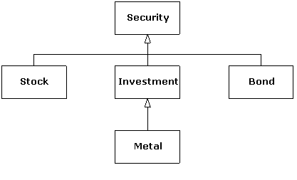
In the code that follows, the Investment class has an extra operation that the other classes do not, so it is important to be able to know at runtime whether a Security pointer refers to a Investment object or not. To implement checked runtime casts, each class keeps an integral identifier to distinguish it from other classes in the hierarchy.
The polymorphic isA( ) function checks to see if its argument is compatible with its type argument (id), which means that either id matches the object’s typeID exactly or it matches one of the object’s ancestors (hence the call to Super::isA( ) in that case). The dynacast( ) function, which is static in each class, calls isA( ) for its pointer argument to check if the cast is valid. If isA( ) returns true, the cast is valid, and a suitably cast pointer is returned. Otherwise, the null pointer is returned, which tells the caller that the cast is not valid, meaning that the original pointer is not pointing to an object compatible with (convertible to) the desired type. All this machinery is necessary to be able to check intermediate casts, such as from a Security pointer that refers to a Metal object to a Investment pointer in the previous example program.[117]
For most programs downcasting is unnecessary, and is actually discouraged, since everyday polymorphism solves most problems in object-oriented application programs. However, the ability to check a cast to a more derived type is important for utility programs such as debuggers, class browsers, and databases. C++ provides such a checked cast with the dynamic_cast operator. The following program is a rewrite of the previous example using dynamic_cast:
This example is much shorter, since most of the code in the original example was just the overhead for checking the casts. The target type of a dynamic_cast is placed in angle brackets, like the other new-style C++ casts (static_cast, and so on), and the object to cast appears as the operand. dynamic_cast requires that the types you use it with be polymorphic if you want safe downcasts.[118] This in turn requires that the class must have at least one virtual function. Fortunately, the Security base class has a virtual destructor, so we didn’t have to invent an extra function to get the job done. Because dynamic_cast does its work at runtime, using the virtual table, it tends to be more expensive than the other new-style casts.
You can also use dynamic_cast with references instead of pointers, but since there is no such thing as a null reference, you need another way to know if the cast fails. That “other way” is to catch a bad_cast exception, as follows:
The bad_cast class is defined in the <typeinfo> header, and, like most of the standard library, is declared in the std namespace.
The other way to get runtime information for an object is through the typeid operator. This operator returns an object of class type_info, which yields information about the type of object to which it was applied. If the type is polymorphic, it gives information about the most derived type that applies (the dynamic type); otherwise it yields static type information. One use of the typeid operator is to get the name of the dynamic type of an object as a const char*, as you can see in the following example:
The output from this program using one particular compiler is
The first output line just echoes the static type of ppb because it is a pointer. To get RTTI to kick in, you need to look at the pointer or reference destination object, which is illustrated in the second line. Notice that RTTI ignores top-level const and volatile qualifiers. With non-polymorphic types, you just get the static type (the type of the pointer itself). As you can see, built-in types are also supported.
It turns out that you can’t store the result of a typeid operation in a type_info object, because there are no accessible constructors and assignment is disallowed. You must use it as we have shown. In addition, the actual string returned by type_info::name( ) is compiler dependent. For a class named C, for example, some compilers return “class C” instead of just “C.” Applying typeid to an expression that dereferences a null pointer will cause a bad_typeid exception (also defined in <typeinfo>) to be thrown.
The following example shows that the class name that type_info::name( ) returns is fully qualified:
Since Nested is a member type of the One class, the result is One::Nested.
You can also ask a type_info object if it precedes another type_info object in the implementation-defined “collation sequence” (the native ordering rules for text), using before(type_info&), which returns true or false. When you say,
you’re asking if me occurs before you in the current collation sequence. This is useful if you use type_info objects as keys.
As you saw in the earlier program that used the hierarchy of Security classes, dynamic_cast can detect both exact types and, in an inheritance hierarchy with multiple levels, intermediate types. Here is another example.
This example has the extra complication of multiple inheritance (you’ll learn more about multiple inheritance later in this chapter, and in Chapter 9). If you create an Mi2 and upcast it to the root (in this case, one of the two possible roots is chosen), the dynamic_cast back to either of the derived levels MI or Mi2 is successful.
You can even cast from one root to the other:
This is successful because B2 is actually pointing to a Mi2 object, which contains a subobject of type B1.
Casting to intermediate levels brings up an interesting difference between dynamic_cast and typeid. The typeid operator always produces a reference to a static type_info object that describes the dynamic type of the object. Thus, it doesn’t give you intermediate-level information. In the following expression (which is true), typeid doesn’t see b2 as a pointer to the derived type, like dynamic_cast does:
The type of b2 is simply the exact type of the pointer:
RTTI only works for complete types, meaning that all class information must be available when typeid is used. In particular, it doesn’t work with void pointers:
A void* truly means “no type information.”[119]
Class templates work well with RTTI, since all they do is generate classes. As usual, RTTI provides a convenient way to obtain the name of the class you’re in. The following example prints the order of constructor and destructor calls:
This template uses a constant int to differentiate one class from another, but type arguments would work as well. Inside both the constructor and destructor, RTTI information produces the name of the class to print. The class X uses both inheritance and composition to create a class that has an interesting order of constructor and destructor calls. The output is
Of course, you may get different output depending on how your compiler represents its name( ) information.
The RTTI mechanisms must work properly with all the complexities of multiple inheritance, including virtual base classes (discussed in depth in the next chapter—you may want to come back here after reading Chapter 9):
The typeid( ) operator properly detects the name of the actual object, even through the virtual base class pointer. The dynamic_cast also works correctly. But the compiler won’t even allow you to try to force a cast the old way:
The compiler knows this is never the right thing to do, so it requires that you use a dynamic_cast.
Because you can discover type information from an anonymous polymorphic pointer, RTTI is ripe for misuse by the novice, because RTTI may make sense before virtual functions do. For many people coming from a procedural background, it’s difficult not to organize programs into sets of switch statements. They could accomplish this with RTTI and thus lose the important value of polymorphism in code development and maintenance. The intent of C++ is that you use virtual functions throughout your code and that you only use RTTI when you must.
However, using virtual functions as they are intended requires that you have control of the base-class definition, because at some point in the extension of your program you may discover the base class doesn’t include the virtual function you need. If the base class comes from a library or is otherwise controlled by someone else, one solution to the problem is RTTI; you can derive a new type and add your extra member function. Elsewhere in the code you can detect your particular type and call that member function. This doesn’t destroy the polymorphism and extensibility of the program, because adding a new type will not require you to hunt for switch statements. However, when you add new code in the main body that requires your new feature, you’ll have to detect your particular type.
Putting a feature in a base class might mean that, for the benefit of one particular class, all the other classes derived from that base require some meaningless stub for a pure virtual function. This makes the interface less clear and annoys those who must override pure virtual functions when they derive from that base class.
Finally, RTTI will sometimes solve efficiency problems. If your code uses polymorphism in a nice way, but it turns out that one of your objects reacts to this general-purpose code in a horribly inefficient way, you can pick that type out using RTTI and write case-specific code to improve the efficiency.
To further illustrate a practical use of RTTI, the following program simulates a trash recycler. Different kinds of “trash” are inserted into a single container and then later sorted according to their dynamic types.
The static values representing the price per unit of the trash types are defined in the implementation file:
The sumValue( ) template iterates through a container, displaying and calculating results:
The trash is thrown unclassified into a single bin, so the specific type information is “lost.” But later the specific type information must be recovered to properly sort the trash, and so RTTI is used.
We can improve this solution by using a map that associates pointers to type_info objects with a vector of Trash pointers. Since a map requires an ordering predicate, we provide one named TInfoLess that calls type_info::before( ). As we insert Trash pointers into the map, they are automatically associated with their type_info key. Notice that sumValue( ) must be defined differently here:
We’ve modified sumValue( ) to call type_info::name( ) directly, since the type_info object is now available as the first member of the TrashMap::value_type pair. This avoids the extra call to typeid to get the name of the type of Trash being processed that was necessary in the previous version of this program.
Typically, RTTI is implemented by placing an additional pointer in a class’s virtual function table. This pointer points to the type_info structure for that particular type. The effect of a typeid( ) expression is quite simple: the virtual function table pointer fetches the type_info pointer, and a reference to the resulting type_info structure is produced. Since this is just a two-pointer dereference operation, it is a constant time operation.
For a dynamic_cast<destination*>(source_pointer), most cases are quite straightforward: source_pointer’s RTTI information is retrieved, and RTTI information for the type destination* is fetched. A library routine then determines whether source_pointer’s type is of type destination* or a base class of destination*. The pointer it returns may be adjusted because of multiple inheritance if the base type isn’t the first base of the derived class. The situation is more complicated with multiple inheritance because a base type may appear more than once in an inheritance hierarchy and virtual base classes are used.
Because the library routine used for dynamic_cast must check through a list of base classes, the overhead for dynamic_cast may be higher than typeid( ) (but you get different information, which may be essential to your solution), and it may take more time to discover a base class than a derived class. In addition, dynamic_cast compares any type to any other type; you aren’t restricted to comparing types within the same hierarchy. This adds extra overhead to the library routine used by dynamic_cast.
Although normally you upcast a pointer to a base class and then use the generic interface of that base class (via virtual functions), occasionally you get into a corner where things can be more effective if you know the dynamic type of the object pointed to by a base pointer, and that’s what RTTI provides. The most common misuse may come from the programmer who doesn’t understand virtual functions and uses RTTI to do type-check coding instead. The philosophy of C++ seems to be to provide you with powerful tools and guard for type violations and integrity, but if you want to deliberately misuse or get around a language feature, there’s nothing to stop you. Sometimes a slight burn is the fastest way to gain experience.
Solutions to selected exercises can be found in the electronic document The Thinking in C++ Volume 2 Annotated Solution Guide, available for a small fee from www.MindView.net.
1. Create a Base class with a virtual destructor and a Derived class that inherits from Base. Create a vector of Base pointers that point to Base and Derived objects randomly. Using the contents your vector, fill a second vector with all the Derived pointers. Compare execution times between typeid( ) and dynamic_cast to see which is faster.
2. Modify C16:AutoCounter.h in Volume 1 of this book so that it becomes a useful debugging tool. It will be used as a nested member of each class that you are interested in tracing. Turn AutoCounter into a template that takes the class name of the surrounding class as the template argument, and in all the error messages use RTTI to print the name of the class.
3. Use RTTI to assist in program debugging by printing out the exact name of a template using typeid( ). Instantiate the template for various types and see what the results are.
4. Modify the Instrument hierarchy from Chapter 14 of Volume 1 by first copying Wind5.cpp to a new location. Now add a virtual clearSpitValve( ) function to the Wind class, and redefine it for all the classes inherited from Wind. Instantiate a vector to hold Instrument pointers, and fill it with various types of Instrument objects created using the new operator. Now use RTTI to move through the container looking for objects in class Wind, or derived from Wind. Call the clearSpitValve( ) function for these objects. Notice that it would unpleasantly confuse the Instrument base class if it contained a clearSpitValve( ) function.
5. Modify the previous exercise to place a prepareInstrument( ) function in the base class, which calls appropriate functions (such as clearSpitValve( ), when it fits). Note that prepareInstrument( ) is a sensible function to place in the base class, and it eliminates the need for RTTI in the previous exercise.
6. Create a vector of pointers to 10 random Shape objects (at least Squares and Circles, for example). The draw( ) member function should be overridden in each concrete class to print the dimensions of the object being drawn (the length or the radius, whichever applies). Write a main( ) program that draws all the Squares in your container first, sorted by length, and then draws all Circles, sorted by radius.
7. Create a large vector of pointers to random Shape objects. Write a non-virtual draw( ) function in Shape that uses RTTI to determine the dynamic type of each object and executes the appropriate code to “draw” the object with a switch statement. Then rewrite your Shape hierarchy the “right way,” using virtual functions. Compare the code sizes and execution times of the two approaches.
8. Create a hierarchy of Pet classes, including Dog, Cat, and Horse. Also create a hierarchy of Food classes: Beef, Fish, and Oats. The Dog class has a member function, eat( ), that takes a Beef parameter, likewise, Cat::eat( ) takes a Fish object, and Oats objects are passed to Horse::eat( ). Create a vector of pointers to random Pet objects, and visit each Pet, passing the correct type of Food object to its eat( ) function.
9. Create a global function named drawQuad( ) that takes a reference to a Shape object. It calls the draw( ) function of its Shape parameter if it has four sides (that is, if it’s a Square or Rectangle). Otherwise, it prints the message “Not a quadrilateral”. Traverse a vector of pointers to random Shapes, calling drawQuad( ) for each one. Place Squares, Rectangles, Circles and Triangles in your vector.
10. Sort a vector of random Shape objects by class name. Use type_info::before( ) as the comparison function for sorting.
The basic concept of multiple inheritance (MI) sounds simple enough: you create a new type by inheriting from more than one base class. The syntax is exactly what you’d expect, and as long as the inheritance diagrams are simple, MI can be simple as well.
However, MI can introduce a number of ambiguities and strange situations, which are covered in this chapter. But first, it is helpful to get some perspective on the subject.
Before C++, the most successful object-oriented language was Smalltalk. Smalltalk was created from the ground up as an object-oriented language. It is often referred to as pure, whereas C++ is called a hybrid language because it supports multiple programming paradigms, not just the object-oriented paradigm. One of the design decisions made with Smalltalk was that all classes would be derived in a single hierarchy, rooted in a single base class (called Object—this is the model for the object-based hierarchy).[120] You cannot create a new class in Smalltalk without deriving it from an existing class, which is why it takes a certain amount of time to become productive in Smalltalk: you must learn the class library before you can start making new classes. The Smalltalk class hierarchy is therefore a single monolithic tree.
Classes in Smalltalk usually have a number of things in common, and they always have some things in common (the characteristics and behaviors of Object), so you don’t often run into a situation where you need to inherit from more than one base class. However, with C++ you can create as many distinct inheritance trees as you want. So for logical completeness the language must be able to combine more than one class at a time—thus the need for multiple inheritance.
It was not obvious, however, that programmers required multiple inheritance, and there was (and still is) a lot of disagreement about whether it is essential in C++. MI was added in AT&T cfront release 2.0 in 1989 and was the first significant change to the language over version 1.0.[121] Since then, a number of other features have been added to Standard C++ (notably templates) that change the way we think about programming and place MI in a much less important role. You can think of MI as a “minor” language feature that is seldom involved in your daily design decisions.
One of the most pressing arguments for MI involved containers. Suppose you want to create a container that everyone can easily use. One approach is to use void* as the type inside the container. The Smalltalk approach, however, is to make a container that holds Objects, since Object is the base type of the Smalltalk hierarchy. Because everything in Smalltalk is ultimately derived from Object, a container that holds Objects can hold anything.
Now consider the situation in C++. Suppose vendor A creates an object-based hierarchy that includes a useful set of containers including one you want to use called Holder. Next you come across vendor B’s class hierarchy that contains some other class that is important to you, a BitImage class, for example, that holds graphic images. The only way to make a Holder of BitImages is to derive a new class from both Object, so it can be held in the Holder, and BitImage:
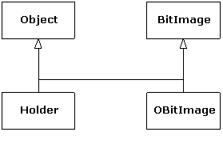
This was seen as an important reason for MI, and a number of class libraries were built on this model. However, as you saw in Chapter 5, the addition of templates has changed the way containers are created, so this situation is no longer a driving issue for MI.
The other reason you may need MI is related to design. You can intentionally use MI to make a design more flexible or useful (or at least seemingly so). An example of this is in the original iostream library design (which still persists in today’s template design, as you saw in Chapter 4):
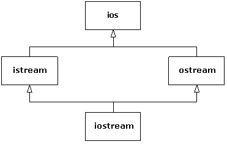
Both istream and ostream are useful classes by themselves, but they can also be derived from simultaneously by a class that combines both their characteristics and behaviors. The class ios provides what is common to all stream classes, and so in this case MI is a code-factoring mechanism.
Regardless of what motivates you to use MI, it’s harder to use than it might appear.
One use of multiple inheritance that is not controversial pertains to interface inheritance. In C++, all inheritance is implementation inheritance, because everything in a base class, interface and implementation, becomes part of a derived class. It is not possible to inherit only part of a class (the interface alone, say). As Chapter 14 of Volume 1 explains, private and protected inheritance make it possible to restrict access to members inherited from base classes when used by clients of a derived class object, but this doesn’t affect the derived class; it still contains all base class data and can access all non-private base class members.
Interface inheritance, on the other hand, only adds member function declarations to a derived class interface and is not directly supported in C++. The usual technique to simulate interface inheritance in C++ is to derive from an interface class, which is a class that contains only declarations (no data or function bodies). These declarations will be pure virtual functions, except for the destructor. Here is an example:
The class Able “implements” the interfaces Printable, Intable, and Stringable because it provides implementations for the functions they declare. Because Able derives from all three classes, Able objects have multiple “is-a” relationships. For example, the object a can act as a Printable object because its class, Able, derives publicly from Printable and provides an implementation for print( ). The test functions have no need to know the most-derived type of their parameter; they just need an object that is substitutable for their parameter’s type.
As usual, a template solution is more compact:
The names Printable, Intable, and Stringable are now just template parameters that assume the existence of the operations indicated in their respective contexts. In other words, the test functions can accept arguments of any type that provides a member function definition with the correct signature and return type; deriving from a common base class in not necessary. Some people are more comfortable with the first version because the type names guarantee by inheritance that the expected interfaces are implemented. Others are content with the fact that if the operations required by the test functions are not satisfied by their template type arguments, the error is still caught at compile time. The latter approach is technically a “weaker” form of type checking than the former (inheritance) approach, but the effect on the programmer (and the program) is the same. This is one form of weak typing that is acceptable to many of today’s C++ programmers.
As we stated earlier, C++ provides only implementation inheritance, meaning that you always inherit everything from your base classes. This can be good because it frees you from having to implement everything in the derived class, as we had to do with the interface inheritance examples earlier. A common use of multiple inheritance involves using mixin classes, which are classes that exist to add capabilities to other classes through inheritance. Mixin classes are not intended to be instantiated by themselves.
As an example, suppose we are clients of a class that supports access to a database. In this scenario, you only have a header file available—part of the point here is that you don’t have access to the source code for the implementation. For illustration, assume the following implementation of a Database class:
We’re leaving out actual database functionality (storing, retrieving, and so on), but that’s not important here. Using this class requires a database connection string and that you call Database::open( ) to connect and Database::close( ) to disconnect:
In a typical client-server situation, a client will have multiple objects sharing a connection to a database. It is important that the database eventually be closed, but only after access to it is no longer required. It is common to encapsulate this behavior through a class that tracks the number of client entities using the database connection and to automatically terminate the connection when that count goes to zero. To add reference counting to the Database class, we use multiple inheritance to mix a class named Countable into the Database class to create a new class, DBConnection. Here’s the Countable mixin class:
It is evident that this is not a standalone class because its constructor is protected; it requires a friend or a derived class to use it. It is important that the destructor is virtual, because it is called only from the delete this statement in detach( ), and we want derived objects to be properly destroyed.[122]
The DBConnection class inherits both Database and Countable and provides a static create( ) function that initializes its Countable subobject. This is an example of the Factory Method design pattern, discussed in the next chapter:
We now have a reference-counted database connection without modifying the Database class, and we can safely assume that it will not be surreptitiously terminated. The opening and closing is done using the Resource Acquisition Is Initialization (RAII) idiom mentioned in Chapter 1 via the DBConnection constructor and destructor. This makes the DBConnection easy to use:
The call to DBConnection::create( ) calls attach( ), so when we’re finished, we must explicitly call detach( ) to release the original hold on the connection. Note that the DBClient class also uses RAII to manage its use of the connection. When the program terminates, the destructors for the two DBClient objects will decrement the reference count (by calling detach( ), which DBConnection inherited from Countable), and the database connection will be closed (because of Countable’s virtual destructor) when the count reaches zero after the object c1 is destroyed.
A template approach is commonly used for mixin inheritance, allowing the user to specify at compile time which flavor of mixin is desired. This way you can use different reference-counting approaches without explicitly defining DBConnection twice. Here’s how it’s done:
The only change here is the template prefix to the class definition (and renaming Countable to Counter for clarity). We could also make the database class a template parameter (had we multiple database access classes to choose from), but it is not a mixin since it is a standalone class. The following example uses the original Countable as the Counter mixin type, but we could use any type that implements the appropriate interface (attach( ), detach( ), and so on):
The general pattern for multiple parameterized mixins is simply
When you inherit from a base class, you get a copy of all the data members of that base class in your derived class. The following program shows how multiple base subobjects might be laid out in memory:[123]
As you can see, the B portion of the object c is offset 4 bytes from the beginning of the entire object, suggesting the following layout:
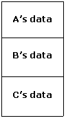
The object c begins with it’s A subobject, then the B portion, and finally the data from the complete type C itself. Since a C is-an A and is-a B, it is possible to upcast to either base type. When upcasting to an A, the resulting pointer points to the A portion, which happens to be at the beginning of the C object, so the address ap is the same as the expression &c. When upcasting to a B, however, the resulting pointer must point to where the B subobject actually resides because class B knows nothing about class C (or class A, for that matter). In other words, the object pointed to by bp must be able to behave as a standalone B object (except for any required polymorphic behavior).
When casting bp back to a C*, since the original object was a C in the first place, the location where the B subobject resides is known, so the pointer is adjusted back to the original address of the complete object. If bp had been pointing to a standalone B object instead of a C object in the first place, the cast would be illegal.[124] Furthermore, in the comparison bp == cp, cp is implicitly converted to a B*, since that is the only way to make the comparison meaningful (that is, upcasting is always allowed), hence the true result. So when converting back and forth between subobjects and complete types, the appropriate offset is applied.
The null pointer requires special handling, obviously, since blindly subtracting an offset when converting to or from a B subobject will result in an invalid address if the pointer was zero to start with. For this reason, when casting to or from a B*, the compiler generates logic to check first to see if the pointer is zero. If it isn’t, it applies the offset; otherwise, it leaves it as zero.
With the syntax we’ve seen so far, if you have multiple base classes, and if those base classes in turn have a common base class, you will have two copies of the top-level base, as you can see in the following example:
Since the size of b is 20 bytes,[125] there are five integers altogether in a complete Bottom object. A typical class diagram for this scenario usually appears as:
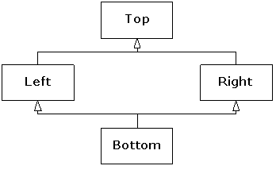
This is the so-called “diamond inheritance”, but in this case it would be better rendered as:
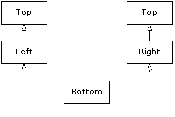
The awkwardness of this design surfaces in the constructor for the Bottom class in the previous code. The user thinks that only four integers are required, but which arguments should be passed to the two parameters that Left and Right require? Although this design is not inherently “wrong,” it is usually not what an application needs. It also presents a problem when trying to convert a pointer to a Bottom object to a pointer to Top. As we showed earlier, the address may need to be adjusted, depending on where the subobject resides within the complete object, but here there are two Top subobjects to choose from. The compiler doesn’t know which to choose, so such an upcast is ambiguous and is not allowed. The same reasoning explains why a Bottom object would not be able to call a function that is only defined in Top. If such a function Top::f( ) existed, calling b.f( ) above would need to refer to a Top subobject as an execution context, and there are two to choose from.
What we usually want in such cases is true diamond inheritance, where a single Top object is shared by both Left and Right subobjects within a complete Bottom object, which is what the first class diagram depicts. This is achieved by making Top a virtual base class of Left and Right:
Each virtual base of a given type refers to the same object, no matter where it appears in the hierarchy.[126] This means that when a Bottom object is instantiated, the object layout may look something like this:
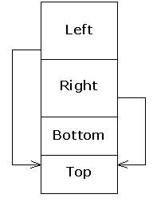
The Left and Right subobjects each have a pointer (or some conceptual equivalent) to the shared Top subobject, and all references to that subobject in Left and Right member functions will go through those these pointers.[127] Here, there is no ambiguity when upcasting from a Bottom to a Top object, since there is only one Top object to convert to.
The output of the previous program is as follows:
The addresses printed suggest that this particular implementation does indeed store the Top subobject at the end of the complete object (although it’s not really important where it goes). The result of a dynamic_cast to void* always resolves to the address of the complete object.
Although it is technically illegal to do so[128], if you remove the virtual destructor (and the dynamic_cast statement, so the program will compile), the size of Bottom decreases to 24 bytes. That seems to be a decrease equivalent to the size of three pointers. Why?
It’s important not to take these numbers too literally. Other compilers we use manage only to increase the size by four bytes when the virtual constructor is added. Not being compiler writers, we can’t tell you their secrets. We can tell you, however, that with multiple inheritance, a derived object must behave as if it has multiple VPTRs, one for each of its direct base classes that also have virtual functions. It’s as simple as that. Compilers make whatever optimizations their authors invent, but the behavior must be the same.
The strangest thing in the previous code is the initializer for Top in the Bottom constructor. Normally one doesn’t worry about initializing subobjects beyond direct base classes, since all classes take care of initializing their own bases. There are, however, multiple paths from Bottom to Top, so relying on the intermediate classes Left and Right to pass along the necessary initialization data results in an ambiguity—who is responsible for performing the initialization? For this reason, the most derived class must initialize a virtual base. But what about the expressions in the Left and Right constructors that also initialize Top? They are certainly necessary when creating standalone Left or Right objects, but must be ignored when a Bottom object is created (hence the zeros in their initializers in the Bottom constructor—any values in those slots are ignored when the Left and Right constructors execute in the context of a Bottom object). The compiler takes care of all this for you, but it’s important to understand where the responsibility lies. Always make sure that all concrete (nonabstract) classes in a multiple inheritance hierarchy are aware of any virtual bases and initialize them appropriately.
These rules of responsibility apply not only to initialization, but to all operations that span the class hierarchy. Consider the stream inserter in the previous code. We made the data protected so we could “cheat” and access inherited data in operator<<(ostream&, const Bottom&). It usually makes more sense to assign the work of printing each subobject to its corresponding class and have the derived class call its base class functions as needed. What would happen if we tried that with operator<<( ), as the following code illustrates?
You can’t just blindly share the responsibility upward in the usual fashion, because the Left and Right stream inserters each call the Top inserter, and again there will be duplication of data. Instead you need to mimic what the compiler does with initialization. One solution is to provide special functions in the classes that know about the virtual base class, which ignore the virtual base when printing (leaving the job to the most derived class):
The specialPrint( ) functions are protected since they will be called only by Bottom. They print only their own data and ignore their Top subobject because the Bottom inserter is in control when these functions are called. The Bottom inserter must know about the virtual base, just as a Bottom constructor needs to. This same reasoning applies to assignment operators in a hierarchy with a virtual base, as well as to any function, member or not, that wants to share the work throughout all classes in the hierarchy.
Having discussed virtual base classes, we can now illustrate the “full story” of object initialization. Since virtual bases give rise to shared subobjects, it makes sense that they should be available before the sharing takes place. So the order of initialization of subobjects follows these rules, recursively:
1. All virtual base class subobjects are initialized, in top-down, left-to-right order according to where they appear in class definitions.
2. Non-virtual base classes are then initialized in the usual order.
3. All member objects are initialized in declaration order.
4. The complete object’s constructor executes.
The following program illustrates this behavior:
The classes in this code can be represented by the following diagram:
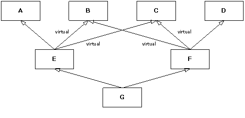Each class has an embedded member of type M. Note that only four derivations are virtual: E from B and C, and F from B and C. The output of this program is:
The initialization of g requires its E and F part to first be initialized, but the B and C subobjects are initialized first because they are virtual bases and are initialized from G’s initializer, G being the most-derived class. The class B has no base classes, so according to rule 3, its member object m is initialized, then its constructor prints “B from G”, and similarly for the C subject of E. The E subobject requires A, B, and C subobjects. Since B and C have already been initialized, the A subobject of the E subobject is initialized next, and then the E subobject itself. The same scenario repeats for g’s F subobject, but without duplicating the initialization of the virtual bases.
The ambiguities we have illustrated with subobjects apply to any names, including function names. If a class has multiple direct base classes that share member functions of the same name, and you call one of those member functions, the compiler doesn’t know which one to choose. The following sample program would report such an error:
The class Bottom has inherited two functions of the same name (the signature is irrelevant, since name lookup occurs before overload resolution), and there is no way to choose between them. The usual technique to disambiguate the call is to qualify the function call with the base class name:
The name Left::f is now found in the scope of Bottom, so the name Right::f is not even considered. To introduce extra functionality beyond what Left::f( ) provides, you implement a Bottom::f( ) function that calls Left::f( ).
Functions with the same name occurring in different branches of a hierarchy often conflict. The following hierarchy has no such problem:
Here, there is no explicit Right::f( ). Since Left::f( ) is the most derived, it is chosen. Why? Well, pretend that Right did not exist, giving the single-inheritance hierarchy Top <= Left <= Bottom. You would certainly expect Left::f( ) to be the function called by the expression b.f( ) because of normal scope rules: a derived class is considered a nested scope of a base class. In general, a name A::f dominates the name B::f if A derives from B, directly or indirectly, or in other words, if A is “more derived” in the hierarchy than B.[129] Therefore, in choosing between two functions with the same name, the compiler chooses the one that dominates. If there is no dominant name, there is an ambiguity.
The following program further illustrates the dominance principle:
The class diagram for this hierarchy is
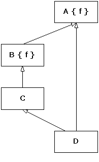
The class A is a (direct, in this case) base class for B, and so the name B::f dominates A::f.
When the question of whether to use multiple inheritance comes up, ask at least two questions:
1. Do you need to show the public interfaces of both these classes through your new type? (See instead if one class can be contained within the other, with only some of its interface exposed in the new class.)
2. Do you need to upcast to both of the base classes? (This also applies when you have more than two base classes.)
If you can answer “no” to either question, you can avoid using MI and should probably do so.
Watch for the situation where one class needs to be upcast only as a function argument. In that case, the class can be embedded and an automatic type conversion function provided in your new class to produce a reference to the embedded object. Any time you use an object of your new class as an argument to a function that expects the embedded object, the type conversion function is used.[130] However, type conversion can’t be used for normal polymorphic member function selection; that requires inheritance. Preferring composition over inheritance is a good overall design guideline.
One of the best uses for multiple inheritance involves code that’s out of your control. Suppose you’ve acquired a library that consists of a header file and compiled member functions, but no source code for member functions. This library is a class hierarchy with virtual functions, and it contains some global functions that take pointers to the base class of the library; that is, it uses the library objects polymorphically. Now suppose you build an application around this library and write your own code that uses the base class polymorphically.
Later in the development of the project or sometime during its maintenance, you discover that the base-class interface provided by the vendor doesn’t provide what you need: a function may be non-virtual and you need it to be virtual, or a virtual function is completely missing in the interface, but essential to the solution of your problem. Multiple inheritance can be the solution.
For example, here’s the header file for a library you acquire:
Assume the library is much bigger, with more derived classes and a larger interface. Notice that it also includes the functions A( ) and B( ), which take a base reference and treat it polymorphically. Here’s the implementation file for the library:
In your project, this source code is unavailable to you. Instead, you get a compiled file as Vendor.obj or Vendor.lib (or with the equivalent file suffixes for your system).
The problem occurs in the use of this library. First, the destructor isn’t virtual.[131] In addition, f( ) was not made virtual; we assume the library creator decided it wouldn’t need to be. You also discover that the interface to the base class is missing a function essential to the solution of your problem. Also suppose you’ve already written a fair amount of code using the existing interface (not to mention the functions A( ) and B( ), which are out of your control), and you don’t want to change it.
To repair the problem, create your own class interface and multiply inherit a new set of derived classes from your interface and from the existing classes:
In MyBase (which does not use MI), both f( ) and the destructor are now virtual, and a new virtual function g( ) is added to the interface. Now each of the derived classes in the original library must be re-created, mixing in the new interface with MI. The functions Paste1::v( ) and Paste1::f( ) need to call only the original base-class versions of their functions. But now, if you upcast to MyBase as in main( ):
any function calls made through mp will be polymorphic, including delete. Also, the new interface function g( ) can be called through mp. Here’s the output of the program:
The original library functions A( ) and B( ) still work the same (assuming the new v( ) calls its base-class version). The destructor is now virtual and exhibits the correct behavior.
Although this is a messy example, it does occur in practice, and it’s a good demonstration of where multiple inheritance is clearly necessary: You must be able to upcast to both base classes.
One reason MI exists in C++ is that it is a hybrid language and couldn’t enforce a single monolithic class hierarchy the way Smalltalk and Java do. Instead, C++ allows many inheritance trees to be formed, so sometimes you may need to combine the interfaces from two or more trees into a new class.
If no “diamonds” appear in your class hierarchy, MI is fairly simple (although identical function signatures in base classes must still be resolved). If a diamond appears, you may want to eliminate duplicate subobjects by introducing virtual base classes. This not only adds confusion, but the underlying representation becomes more complex and less efficient.
Multiple inheritance has been called the “goto of the ’90s.”[132] This seems appropriate because, like a goto, MI is best avoided in normal programming, but can occasionally be very useful. It’s a “minor” but more advanced feature of C++, designed to solve problems that arise in special situations. If you find yourself using it often, you might want to take a look at your reasoning. Ask yourself, “Must I upcast to all the base classes?” If not, your life will be easier if you embed instances of all the classes you don’t need to upcast to.
Solutions to selected exercises can be found in the electronic document The Thinking in C++ Volume 2 Annotated Solution Guide, available for a small fee from www.MindView.net.
1. Create a base class X with a single constructor that takes an int argument and a member function f( ), which takes no arguments and returns void. Now derive Y and Z from X, creating constructors for each of them that take a single int argument. Next, derive A from Y and Z. Create an object of class A, and call f( ) for that object. Fix the problem with explicit disambiguation.
2. Starting with the results of Exercise 1, create a pointer to an X called px and assign to it the address of the object of type A you created before. Fix the problem using a virtual base class. Now fix X so you no longer have to call the constructor for X inside A.
3. Starting with the results of Exercise 2, remove the explicit disambiguation for f( ) and see if you can call f( ) through px. Trace it to see which function gets called. Fix the problem so the correct function will be called in a class hierarchy.
4. Make an Animal interface class with a makeNoise( ) function declaration. Make a SuperHero interface class with a savePersonFromFire( ) function declaration. Place a move( ) function declaration in both interface classes. (Remember to make your interface methods pure virtual.) Now define three separate classes: SuperlativeMan, Amoeba (a superhero of uncertain gender), and TarantulaWoman; SuperlativeMan implements the SuperHero interface while Amoeba and TarantulaWoman implement both Animal and SuperHero. Define two global functions animalSound(Animal*) and saveFromFire(SuperHero*). Invoke all the methods that are callable from each interface in both of these functions.
5. Repeat the previous exercise, but use templates instead of inheritance to implement the interfaces, as we did in Interfaces2.cpp.
6. Define some concrete mixin classes that represent superhero capabilities (such as StopTrain, BendSteel, ClimbBuilding, etc.). Redo exercise 4 so that your derived SuperHero classes derive from these mixins and call their member functions.
7. Repeat the previous exercise using templates by making your superhero powers mixin template parameters. Use these powers to do some good in the community.
8. Dropping the Animal interface from exercise 4, redefine Amoeba to only implement SuperHero. Now define a SuperlativeAmoeba class that inherits from both SuperlativeMan and Amoeba. Try to pass a SuperlativeAmoeba object to saveFromFire( ). What do you have to do to make this legal? How does using virtual inheritance change the size of your objects?
9. Continuing with the previous exercise, add an integer strengthFactor data member to SuperHero from exercise 4, along with a constructor to initialize it. Add constructors in the three derived classes to initialize strengthFactor as well. What must you do differently in SuperlativeAmoeba?
10. Continuing with the previous exercise, add an eatFood( ) member function to both SuperlativeMan and Amoeba (but not SuperlativeAmoeba), such that the two versions of eatFood( ) take different types of food objects (so the signatures of the two functions differ). What must you do in SuperlativeAmoeba to call either eatFood( ) function? Why?
11. Define a well-behaved output stream inserter and assignment operator for SuperlativeAmoeba.
12. Remove SuperlativeAmoeba from your hierarchy and modify Amoeba to derive from both SuperlativeMan (which still derives from SuperHero) and SuperHero. Implement a virtual workout( ) function in both SuperHero and SuperlativeMan (with identical signatures), and call it with a Amoeba object. Which function gets called?
13. Redefine SuperlativeAmoeba to use composition instead of inheritance to act as a SuperlativeMan or Amoeba. Use conversion operators to provide implicit upcasting. Compare this approach to the inheritance approach.
14. Suppose you are given a pre-compiled Person class (you only have the header and compiled object file). Suppose also that Person has a non-virtual work( ) function. Have SuperHero be able to act as a mild-mannered ordinary Person by deriving from Person and using the implementation of Person::work( ), but make SuperHero::work( ) virtual.
15. Define a reference-counted error logging mixin class, ErrorLog, that holds a static file stream to which you can send messages. The class opens the stream when its reference count exceeds 0 and closes the stream when the count returns to 0 (and always appends to the file). Have objects of multiple classes send messages to the static log stream. Watch the stream open and close via trace statements in ErrorLog.
16. Modify BreakTie.cpp by adding a class named VeryBottom that derives (non-virtually) from Bottom. VeryBottom should look just like Bottom except change “Left” to “Right” in the using declaration for f. Change main( ) to instantiate a VeryBottom instead of a Bottom object. Which f( ) gets called?
“… describe a problem which occurs over and over again in our environment, and then describe the core of the solution to that problem, in such a way that you can use this solution a million times over, without ever doing it the same way twice”—Christopher Alexander
This chapter introduces the important and yet nontraditional “patterns” approach to program design.
The most important recent step forward in object-oriented design is probably the “design patterns” movement, initially chronicled in Design Patterns, by Gamma, Helm, Johnson & Vlissides (Addison Wesley, 1995),[133] which is commonly called the “Gang of Four” book (GoF). GoF shows 23 solutions to particular classes of problems. In this chapter, we discuss the basic concepts of design patterns and provide code examples that illustrate selected patterns. This should whet your appetite for reading more about design patterns, a source of what has now become an essential, almost mandatory vocabulary for object-oriented programming.[134]
Initially, you can think of a pattern as an especially clever and insightful way to solve a particular class of problem. It appears that a team of people have worked out all the angles of a problem and have come up with the most general, flexible solution for that type of problem. This problem could be one that you have seen and solved before, but your solution probably didn’t have the kind of completeness you’ll see embodied in a pattern. Furthermore, the pattern exists independently of any particular implementation and it can be implemented in a number of ways.
Although they’re called “design patterns,” they really aren’t tied to the realm of design. A pattern seems to stand apart from the traditional way of thinking about analysis, design, and implementation. Instead, a pattern embodies a complete idea within a program, and thus it might also span the analysis phase and high-level design phase. However, because a pattern often has a direct implementation in code, it might not show up until low-level design or implementation (and you might not realize that you need a particular pattern until you get to those phases).
The basic concept of a pattern can also be seen as the basic concept of program design in general: adding layers of abstraction. Whenever you abstract something, you’re isolating particular details, and one of the most compelling motivations for this is to separate things that change from things that stay the same. Another way to put this is that once you find some part of your program that’s likely to change, you’ll want to keep those changes from propagating side effects throughout your code. If you achieve this, your code will not only be easier to read and understand, but also easier to maintain—which invariably results in lowered costs over time.
The most difficult part of developing an elegant and maintainable design is often discovering what we call “the vector of change.” (Here, “vector” refers to the maximum gradient as understood in the sciences, and not a container class.) This means finding the most important thing that changes in your system or, put another way, discovering where your greatest cost is. Once you discover the vector of change, you have the focal point around which to structure your design.
So the goal of design patterns is to encapsulate change. If you look at it this way, you’ve been seeing some design patterns already in this book. For example, inheritance could be thought of as a design pattern (albeit one implemented by the compiler). It expresses differences in behavior (that’s the thing that changes) in objects that all have the same interface (that’s what stays the same). Composition could also be considered a pattern, since you can change—dynamically or statically—the objects that implement your class, and thus the way that class works. Normally, however, features that are directly supported by a programming language have not been classified as design patterns.
You’ve also already seen another pattern that appears in GoF: the iterator. This is the fundamental tool used in the design of the STL, described earlier in this book. The iterator hides the particular implementation of the container as you’re stepping through and selecting the elements one by one. Iterators allow you to write generic code that performs an operation on all the elements in a range without regard to the container that holds the range. Thus, your generic code can be used with any container that can produce iterators.
The most important contribution of GoF may not be a pattern, but rather a maxim that they introduce in Chapter 1: “Favor object composition over class inheritance.” Understanding inheritance and polymorphism is such a challenge that you may begin to assign undue importance to these techniques. We see many over-complicated designs (our own included) that result from “inheritance indulgence”— for example, many multiple inheritance designs evolve by insisting that inheritance be used everywhere.
One of the guidelines in Extreme Programming is “Do the simplest thing that could possibly work.” A design that seems to want inheritance can often be dramatically simplified by using composition instead, and you will also discover that the result is more flexible, as you will understand by studying some of the design patterns in this chapter. So when pondering a design, ask yourself: “Could this be simpler using composition? Do I really need inheritance here, and what is it buying me?”
GoF discusses 23 patterns, classified under three purposes (all of which revolve around the particular aspect that can vary):
1. Creational: How an object can be created. This often involves isolating the details of object creation so your code isn’t dependent on what types of objects there are and thus doesn’t have to be changed when you add a new type of object. This chapter introduces Singleton, Factories, and Builder.
2. Structural: These affect the way objects are connected with other objects to ensure that changes in the system don’t require changes to those connections. Structural patterns are often dictated by project constraints. In this chapter you’ll see Proxy and Adapter.
3. Behavioral: Objects that handle particular types of actions within a program. These encapsulate processes that you want to perform, such as interpreting a language, fulfilling a request, moving through a sequence (as in an iterator), or implementing an algorithm. This chapter contains examples of Command, Template Method, State, Strategy, Chain of Responsibility, Observer, Multiple Dispatching, and Visitor.
GoF includes a section on each of its 23 patterns along with one or more examples of each, typically in C++ but sometimes in Smalltalk. This book will not repeat the details of the patterns shown in GoF since that book stands on its own and should be studied separately. The description and examples provided here are intended to give you a grasp of the patterns, so you can get a feel for what patterns are about and why they are important.
Work continues beyond what is in the GoF book. Since its publication, there are more patterns and a more refined process for defining design patterns.[135] This is important because it is not easy to identify new patterns or to properly describe them. There is some confusion in the popular literature on what a design pattern is, for example. Patterns are not trivial, nor are they typically represented by features that are built into a programming language. Constructors and destructors, for example, could be called the “guaranteed initialization and cleanup design pattern.” These are important and essential constructs, but they’re routine language features and are not rich enough to be considered design patterns.
Another non-example comes from various forms of aggregation. Aggregation is a completely fundamental principle in object-oriented programming: you make objects out of other objects. Yet sometimes this idea is erroneously classified as a pattern. This is unfortunate because it pollutes the idea of the design pattern and suggests that anything that surprises you the first time you see it should be made into a design pattern.
The Java language provides another misguided example: The designers of the JavaBeans specification decided to refer to the simple “get/set” naming convention as a design pattern (for example, getInfo( ) returns an Info property and setInfo( ) changes it). This is just a commonplace naming convention and in no way constitutes a design pattern.
Before getting into more complex techniques, it’s helpful to look at some basic ways to keep code simple and straightforward.
The most trivial of these is the messenger,[136] which packages information into an object which is passed around, instead of passing all the pieces around separately. Note that without the messenger, the code for translate( ) would be much more confusing to read:
The code here is trivialized to prevent distractions.
Since the goal of a messenger is only to carry data, that data is made public for easy access. However, you may also have reasons to make the fields private.
Messenger’s big brother is the collecting parameter, whose job is to capture information from the function to which it is passed. Generally, this is used when the collecting parameter is passed to multiple functions, so it’s like a bee collecting pollen.
A container makes an especially useful collecting parameter, since it is already set up to dynamically add objects:
The collecting parameter must have some way to set or insert values. Note that by this definition, a messenger could be used as a collecting parameter. The key is that a collecting parameter is passed about and modified by the functions that receive it.
Possibly the simplest GoF design pattern is the Singleton, which is a way to allow one and only one instance of a class. The following program shows how to implement a Singleton in C++:
The key to creating a Singleton is to prevent the client programmer from having any control over the lifetime of the object. To do this, declare all constructors private, and prevent the compiler from implicitly generating any constructors. Note that the copy constructor and assignment operator (which intentionally have no implementations, since they will never be called) are declared private to prevent any sort of copies being made.
You must also decide how you’re going to create the object. Here, it’s created statically, but you can also wait until the client programmer asks for one and create it on demand. This is called lazy initialization, and it only makes sense if it is expensive to create your object, and if you don’t always need it.
If you return a pointer instead of a reference, the user could inadvertently delete the pointer, so the implementation above is considered safest (the destructor can also be declared private or protected to alleviate that problem). In any case, the object should be stored privately.
You provide access through public member functions. Here, instance( ) produces a reference to the Singleton object. The rest of the interface (getValue( ) and setValue( )) is the regular class interface.
Note that you aren’t restricted to creating only one object. This technique also supports the creation of a limited pool of objects. In that case, however, you can be confronted with the problem of sharing objects in the pool. If this is an issue, you can create a solution involving a check-out and check-in of the shared objects.
Any static member object inside a class is an expression of Singleton: one and only one will be made. So in a sense, the language has direct support for the idea; we certainly use it on a regular basis. However, there’s a problem with static objects (member or not): the order of initialization, as described in Volume 1 of this book. If one static object depends on another, it’s important that the objects are initialized in the correct order.
In Volume 1, you were shown how to control initialization order by defining a static object inside a function. This delays the initialization of the object until the first time the function is called. If the function returns a reference to the static object, it gives you the effect of a Singleton while removing much of the worry of static initialization. For example, suppose you want to create a log file upon the first call to a function that returns a reference to that log file. This header file will do the trick:
The implementation must not be inlined because that would mean that the whole function, including the static object definition within, could be duplicated in any translation unit where it’s included, which violates C++’s one-definition rule.[137] This would most certainly foil the attempts to control the order of initialization (but potentially in a subtle and hard-to-detect fashion). So the implementation must be separate:
Now the log object will not be initialized until the first time logfile( ) is called. So if you create a function:
that uses logfile( ) in its implementation:
And you use logfile( ) again in another file:
the log object doesn’t get created until the first call to f( ).
You can easily combine the creation of the static object inside a member function with the Singleton class. SingletonPattern.cpp can be modified to use this approach:[138]
An especially interesting case occurs if two Singletons depend on each other, like this:
When Singleton2::ref( ) is called, it causes its sole Singleton2 object to be created. In the process of this creation, Singleton1::ref( ) is called, and that causes the sole Singleton1 object to be created. Because this technique doesn’t rely on the order of linking or loading, the programmer has much better control over initialization, leading to fewer problems.
Yet another variation on Singleton separates the “Singleton-ness” of an object from its implementation. This is achieved using the Curiously Recurring Template Pattern mentioned in Chapter 5:
MyClass is made a Singleton by:
1. Making its constructor private or protected.
2. Making Singleton<MyClass> a friend.
3. Deriving MyClass from Singleton<MyClass>.
The self-referencing in step 3 may sound implausible, but as we explained in Chapter 5, it works because there is only a static dependency on the template argument in the Singleton template. In other words, the code for the class Singleton<MyClass> can be instantiated by the compiler because it is not dependent on the size of MyClass. It’s only later, when Singleton<MyClass>::instance( ) is first called, that the size of MyClass is needed, and by then MyClass has been compiled and its size is known.[139]
It’s interesting how intricate such a simple pattern as Singleton can be, and we haven’t even addressed issues of thread safety. Finally, Singleton should be used sparingly. True Singleton objects arise rarely, and the last thing a Singleton should be used for is to replace a global variable.[140]
The Command pattern is structurally very simple, but can have an important impact on decoupling—and thus cleaning up—your code.
In Advanced C++: Programming Styles And Idioms (Addison Wesley, 1992), Jim Coplien coins the term functor which is an object whose sole purpose is to encapsulate a function (since “functor” has a meaning in mathematics, we shall use the more explicit term function object). The point is to decouple the choice of function to be called from the site where that function is called.
This term is mentioned but not used in GoF. However, the theme of the function object is repeated in a number of patterns in that book.
A Command is a function object in its purest sense: a function that’s an object. By wrapping a function in an object, you can pass it to other functions or objects as a parameter, to tell them to perform this particular operation in the process of fulfilling your request. You could say that a Command is a Messenger that carries behavior.
The primary point of Command is to allow you to hand a desired action to a function or object. In the above example, this provides a way to queue a set of actions to be performed collectively. Here, you can dynamically create new behavior, something you can normally only do by writing new code but in the above example could be done by interpreting a script (see the Interpreter pattern if what you need to do gets very complex).
GoF says that “Commands are an object-oriented replacement for callbacks.”[141] However, we think that the word “back” is an essential part of the concept of callbacks—a callback reaches back to the creator of the callback. On the other hand, with a Command object you typically just create it and hand it to some function or object, and you are not otherwise connected over time to the Command object.
A common example of Command is the implementation of “undo” functionality in an application. Each time the user performs an operation, the corresponding “undo” Command object is placed into a queue. Each Command object that is executed backs up the state of the program by one step.
As you shall see in the next chapter, one of the reasons for employing concurrency techniques is to more easily manage event-driven programming, where the events can appear unpredictably in your program. For example, a user pressing a “quit” button while you’re performing an operation expects the program to respond quickly.
An argument for using concurrency is that it prevents coupling across the pieces of your code. That is, if you’re running a separate thread to watch the quit button, your program’s “normal” operations don’t need to know about the quit button or any of the other operations that need to be watched.
However, once you understand that coupling is the issue, you can avoid it using the Command pattern. Each “normal” operation must periodically call a function to check the state of the events, but with the Command pattern these normal operations don’t need to know anything about what they are checking, and thus are decoupled from the event-handling code:
Here, the Command object is represented by Tasks executed by the Singleton TaskRunner. EventSimulator creates a random delay time, so if you periodically call fired( ) the result will change from false to true at some random time. EventSimulator objects are used inside Buttons to simulate the act of a user event occurring at some unpredictable time. CheckButton is the implementation of the Task that is periodically checked by all the “normal” code in the program—you can see this happening at the end of procedure1( ), procedure2( ) and procedure3( ).
Although this requires a little bit of extra thought to set up, you’ll see in Chapter 11 that threading requires a lot of thought and care to prevent the various difficulties inherent to concurrent programming, so the simpler solution may be preferable. You can also create a very simple threading scheme by moving the TaskRunner::run( ) calls into a multithreaded “timer” object. By doing this, you eliminate all coupling between the “normal operations” (procedures, in the above example) and the event code.
Both Proxy and State provide a surrogate class. Your code talks to this surrogate class, and the real class that does the work is hidden behind this surrogate class. When you call a function in the surrogate, it simply turns around and calls the function in the implementing class. These two patterns are so similar that, structurally, Proxy is simply a special case of State. One is tempted to just lump the two together into a pattern called Surrogate, but the intent of the two patterns is different. It can be easy to fall into the trap of thinking that if the structure is the same, the patterns are the same. You must always look to the intent of the pattern in order to be clear about what it does.
The basic idea is simple: from a base class, the surrogate is derived along with the class or classes that provide the actual implementation:
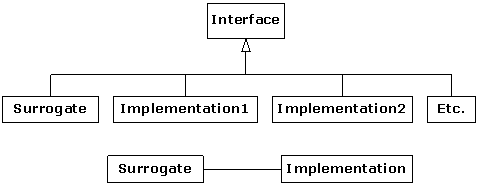
When a surrogate object is created, it is given an implementation to which it sends the function calls.
Structurally, the difference between Proxy and State is simple: a Proxy has only one implementation, while State has more than one. The application of the patterns is considered (in GoF) to be distinct: Proxy controls access to its implementation, while State changes the implementation dynamically. However, if you expand your notion of “controlling access to implementation” then the two seem to be part of a continuum.
If we implement Proxy using the above diagram, it looks like this:
In some cases, Implementation doesn’t need the same interface as Proxy—as long as Proxy is somehow “speaking for” the Implementation class and referring function calls to it, then the basic idea is satisfied (note that this statement is at odds with the definition for Proxy in GoF). However, with a common interface you are able to do a drop-in replacement of the proxy into the client code—the client code is written to talk to the original object, and it doesn’t need to be changed in order to accept the proxy (This is probably the key issue with Proxy). In addition, Implementation is forced, through the common interface, to fulfill all the functions that Proxy needs to call.
The difference between Proxy and State is in the problems that are solved. The common uses for Proxy as described in GoF are:
1. Remote proxy. This proxies for an object in a different address space. This is implemented by some remote object technologies.
2. Virtual proxy. This provides “lazy initialization” to create expensive objects on demand.
3. Protection proxy. Used when you don’t want the client programmer to have full access to the proxied object.
4. Smart reference. To add additional actions when the proxied object is accessed. Reference counting is an example: this keeps track of the number of references that are held for a particular object, in order to implement the copy-on-write idiom and prevent object aliasing.[142] A simpler example is counting the calls to a particular function.
The State pattern produces an object that appears to change its class, and is useful when you discover that you have conditional code in most or all functions. Like Proxy, State is created by having a front-end object that uses a back-end implementation object to fulfill its duties. However, the State pattern switches from one implementation to another during the lifetime of the front-end object, in order to produce different behavior for the same function call(s). It’s a way to improve the implementation of your code when you seem to be doing a lot of testing inside each of your functions before deciding what to do for that function. For example, the fairy tale of the frog-prince contains an object (the creature) that behaves differently depending on what state it’s in. You could implement this by testing a bool:
However, the greet( ) function, and any other functions that must test isFrog before they perform their operations, end up with awkward code, especially if you find yourself adding additional states to the system. By delegating the operations to a State object that can be changed, this code is simplified.
It is not necessary to make the implementing classes nested or private, but if you can it creates cleaner code.
Note that changes to the State classes are automatically propagated throughout your code, rather than requiring an edit across the classes in order to effect changes.
Adapter takes one type and produces an interface to some other type. This is useful when you’re given a library or piece of code that has a particular interface, and you’ve got a second library or piece of code that uses the same basic ideas as the first piece, but expresses itself differently. If you adapt the forms of expression to each other, you can rapidly produce a solution.
Suppose you have a generator class that produces Fibonacci numbers:
Since it’s a generator, you use it by calling the operator( ), like this:
Perhaps you would like to take this generator and perform STL numeric algorithm operations with it. Unfortunately, the STL algorithms only work with iterators, so you have an interface mismatch. The solution is to create an adapter that will take the FibonacciGenerator and produce an iterator for the STL algorithms to use. Since the numeric algorithms only require an input iterator, the Adapter is fairly straightforward (for something that produces an STL iterator, that is):
You initialize a FibonacciAdapter by telling it how long the Fibonacci sequence can be. When an iterator is created, it simply captures a reference to the containing FibonacciAdapter so that it can access the FibonacciGenerator and length. Note that the equivalence comparison ignores the right-hand value because the only important issue is whether the generator has reached its length. In addition, the operator++( ) doesn’t modify the iterator; the only operation that changes the state of the FibonacciAdapter is calling the generator function operator( ) on the FibonacciGenerator. We can get away with this extremely simple version of the iterator because the constraints on an Input Iterator are so strong; in particular, you can only read each value in the sequence once.
In main( ), you can see that all four different types of numeric algorithms are successfully tested with the FibonacciAdapter.
An application framework allows you to inherit from a class or set of classes and create a new application, reusing most of the code in the existing classes and overriding one or more functions in order to customize the application to your needs. A fundamental concept in the application framework is the Template Method, which is typically hidden beneath the covers and drives the application by calling the various functions in the base class (some of which you have overridden in order to create the application).
An important characteristic of the Template Method is that it is defined in the base class (sometimes as a private member function) and cannot be changed—the Template Method is the “thing that stays the same.” It calls other base-class functions (the ones you override) in order to do its job, but the client programmer isn’t necessarily able to call it directly, as you can see here:
The “engine” that runs the application is the Template Method. In a GUI application, this “engine” would be the main event loop. The client programmer simply provides definitions for customize1( ) and customize2( ) and the “application” is ready to run.
Note that the Template Method is the “code that stays the same,” and the functions that you override are the “code that changes.” However, this change is fixed at compile time via inheritance. Following the maxim of “prefer composition to inheritance,” we can use composition to approach the problem of separating code that changes from code that stays the same, and produce the Strategy pattern. This approach has a distinct benefit: at runtime, you can plug in the code that changes. Strategy also adds a “Context” which can be a surrogate class that controls the selection and use of the particular strategy object—just like State!
“Strategy” means just that: you can solve a problem in a number of ways. Consider the situation where you’ve forgotten someone’s name. Here are the different ways you can cope:
Context::greet( ) would normally be more complex; it’s the analog of the Template Method because it contains the code that doesn’t change. But you can see in main( ) that the choice of strategy can be made at runtime. If you go one step further you can combine this with the State pattern and change the Strategy during the lifetime of the Context object.
Chain of Responsibility might be thought of as a “dynamic generalization of recursion” using Strategy objects. You make a call, and each Strategy in a linked sequence tries to satisfy the call. The process ends when one of the strategies is successful or the chain ends. In recursion, one function calls itself over and over until a termination condition is reached; with Chain of Responsibility, a function calls itself, which (by moving down the chain of Strategies) calls a different implementation of the function, etc., until a termination condition is reached. The termination condition is either that the bottom of the chain is reached (this returns a default object; you may or may not be able to provide a default result so you must be able to determine the success or failure of the chain) or one of the Strategies is successful.
Instead of calling a single function to satisfy a request, multiple functions in the chain have a chance to satisfy the request, so it has the flavor of an expert system. Since the chain is effectively a list, it can be dynamically created, so you could also think of it as a more general, dynamically-built switch statement.
In GoF, there’s a fair amount of discussion of how to create the chain of responsibility as a linked list. However, when you look at the pattern it really shouldn’t matter how the chain is created; that’s an implementation detail. Since GoF was written before the STL containers were available in most C++ compilers, the reason for this is most likely (1) there was no built-in list and thus they had to create one and (2) data structures are often taught as a fundamental skill in academia, and the idea that data structures should be standard tools available with the programming language may not have occurred to the GoF authors. We maintain that the details of the container used to implement Chain of Responsibility as a chain (in GoF, a linked list) adds nothing to the solution and can just as easily be implemented using an STL container, as shown below.
Here you can see Chain of Responsibility automatically finding a solution using a mechanism to automatically recurse through each Strategy in the chain:
Notice that the “Context” class Gimme and all the Strategy classes are all derived from the same base class, GimmeStrategy.
If you study the section on Chain of Responsibility in GoF, you’ll find that the structure differs significantly from the one above because they focus on creating their own linked list. However, if you keep in mind that the essence of Chain of Responsibility is to try a number of solutions until you find one that works, you’ll realize that the implementation of the sequencing mechanism is not an essential part of the pattern.
When you discover that you need to add new types to a system, the most sensible first step is to use polymorphism to create a common interface to those new types. This separates the rest of the code in your system from the knowledge of the specific types that you are adding. New types can be added without disturbing existing code … or so it seems. At first it would appear that you need to change the code only in the place where you inherit a new type, but this is not quite true. You must still create an object of your new type, and at the point of creation you must specify the exact constructor to use. Thus, if the code that creates objects is distributed throughout your application, you have the same problem when adding new types—you must still chase down all the points of your code where type matters. It is the creation of the type that matters here, rather than the use of the type (which is taken care of by polymorphism), but the effect is the same: adding a new type can cause problems.
The solution is to force the creation of objects to occur through a common factory rather than to allow the creational code to be spread throughout your system. If all the code in your program must go to this factory whenever it needs to create one of your objects, all you must do when you add a new object is modify the factory. This design is a variation of the pattern commonly known as Factory Method. Since every object-oriented program creates objects, and since it’s likely you will extend your program by adding new types, factories may be the most useful of all design patterns.
As an example, consider the commonly-used Shape example. One approach to implementing a factory is to define a static member function in the base class:
The factory( ) function takes an argument that allows it to determine what type of Shape to create. Here, the argument is a string, but it could be any set of data. The factory( ) is now the only other code in the system that needs to be changed when a new type of Shape is added. (The initialization data for the objects will presumably come from somewhere outside the system and will not be a hard-coded array as in this example.)
To ensure that the creation can only happen in the factory( ), the constructors for the specific types of Shape are made private, and Shape is declared a friend so that factory( ) has access to the constructors. (You could also declare only Shape::factory( ) to be a friend, but it seems reasonably harmless to declare the entire base class as a friend.) There is another important implication of this design—the base class, Shape, must now know the details about every derived class—a property that object-oriented designs try to avoid. For frameworks or any class library that should support extension, this can quickly become unwieldy, as the base class must be updated as soon as a new type is added to the hierarchy. Polymorphic factories, described in the next subsection, can be used to avoid this unfortunate circular dependency.
The static factory( ) member function in the previous example forces all the creation operations to be focused in one spot, so that’s the only place you need to change the code. This is certainly a reasonable solution, as it nicely encapsulates the process of creating objects. However, GoF emphasizes that the reason for the Factory Method pattern is so that different types of factories can be derived from the basic factory. Factory Method is in fact a special type of polymorphic factory. Here is ShapeFactory1.cpp modified so the Factory Methods are in a separate class as virtual functions:
Now the Factory Method appears in its own class, ShapeFactory, as virtual create( ). This is a private member function, which means it cannot be called directly but can be overridden. The subclasses of Shape must each create their own subclasses of ShapeFactory and override the create( ) member function to create an object of their own type. These factories are private, so that they are only accessible from the main Factory Method. This way, all client code must go through the Factory Method in order to create objects.
The actual creation of shapes is performed by calling ShapeFactory::createShape( ), which is a static member function that uses the map in ShapeFactory to find the appropriate factory object based on an identifier that you pass it. The factory creates the shape object directly, but you could imagine a more complex problem where the appropriate factory object is returned and then used by the caller to create an object in a more sophisticated way. However, it seems that much of the time you don’t need the intricacies of the polymorphic Factory Method, and a single static member function in the base class (as shown in ShapeFactory1.cpp) will work fine.
Notice that the ShapeFactory must be initialized by loading its map with factory objects, which takes place in the Singleton ShapeFactoryInitializer. So to add a new type to this design you must define the type, create a factory, and modify ShapeFactoryInitializer so that an instance of your factory is inserted in the map. This extra complexity again suggests the use of a static Factory Method if you don’t need to create individual factory objects.
The Abstract Factory pattern looks like the factories we’ve seen previously, but with several Factory Methods. Each of the Factory Methods creates a different kind of object. When you create the factory object, you decide how all the objects created by that factory will be used. The example in GoF implements portability across various graphical user interfaces (GUIs): you create a factory object appropriate to the GUI that you’re working with, and from then on when you ask it for a menu, a button, a slider, and so on, it will automatically create the appropriate version of that item for the GUI. Thus, you’re able to isolate, in one place, the effect of changing from one GUI to another.
As another example, suppose you are creating a general-purpose gaming environment and you want to be able to support different types of games. Here’s how it might look using an Abstract Factory:
In this environment, Player objects interact with Obstacle objects, but the types of players and obstacles depend on the game. You determine the kind of game by choosing a particular GameElementFactory, and then the GameEnvironment controls the setup and play of the game. In this example, the setup and play are simple, but those activities (the initial conditions and the state change) can determine much of the game’s outcome. Here, GameEnvironment is not designed to be inherited, although it could possibly make sense to do that.
This example also illustrates double dispatching, which will be explained later.
One of the primary goals of using a factory is to organize your code so you don’t need to select the exact constructor type when creating an object. That is, you can tell a factory: “I don’t know precisely what kind of object I need, but here’s the information. Create the appropriate type.”
In addition, during a constructor call the virtual mechanism does not operate (early binding occurs). Sometimes this is awkward. For example, in the Shape program it seems logical that inside the constructor for a Shape object, you would want to set everything up and then draw( ) the Shape. The draw( ) function should be a virtual function, a message to the Shape that it should draw itself appropriately, depending on whether it is a Circle, a Square, a Line, and so on. However, this doesn’t work inside the constructor because virtual functions resolve to the “local” function bodies when called in constructors.
If you want to be able to call a virtual function inside the constructor and have it do the right thing, you must use a technique to simulate a virtual constructor. This is a conundrum. Remember, the idea of a virtual function is that you send a message to an object and let the object figure out the right thing to do. But a constructor builds an object. So a virtual constructor would be like saying, “I don’t know exactly what kind of object you are, but build the right type anyway.” In an ordinary constructor, the compiler must know which VTABLE address to bind to the VPTR, and even if it existed, a virtual constructor couldn’t do this because it doesn’t know all the type information at compile time. It makes sense that a constructor can’t be virtual because it is the one function that absolutely must know everything about the type of the object.
And yet there are times when you want something approximating the behavior of a virtual constructor.
In the Shape example, it would be nice to hand the Shape constructor some specific information in the argument list and let the constructor create a specific type of Shape (a Circle or a Square) with no further intervention. Ordinarily, you’d have to make an explicit call to the Circle or Square constructor yourself.
Coplien[143] calls his solution to this problem “envelope and letter classes.” The “envelope” class is the base class, a shell that contains a pointer to an object, also of the base class type. The constructor for the “envelope” determines (at runtime, when the constructor is called, not at compile time, when the type checking is normally done) what specific type to make, creates an object of that specific type (on the heap), and then assigns the object to its pointer. All the function calls are then handled by the base class through its pointer. It’s really just a slight variation of the State pattern, where the base class is acting as a surrogate for the derived class, and the derived class provides the variation in behavior:
The base class Shape contains a pointer to an object of type Shape as its only data member. (When you create a “virtual constructor” scheme, exercise special care to ensure this pointer is always initialized to a live object.) This base class is effectively a proxy because it is the only thing the client code sees and interacts with.
Each time you derive a new subtype from Shape, you must go back and add the creation for that type in one place, inside the “virtual constructor” in the Shape base class. This is not too onerous a task, but the disadvantage is you now have a dependency between the Shape class and all classes derived from it.
In this example, the information you must hand the virtual constructor about what type to create is explicit: it’s a string that names the type. However, your scheme can use other information—for example, in a parser the output of the scanner can be handed to the virtual constructor, which then uses that information to determine which token to create.
The virtual constructor Shape(type) cannot be defined until after all the derived classes have been declared. However, the default constructor can be defined inside class Shape, but it should be made protected so temporary Shape objects cannot be created. This default constructor is only called by the constructors of derived-class objects. You are forced to explicitly create a default constructor because the compiler will create one for you automatically only if there are no constructors defined. Because you must define Shape(type), you must also define Shape( ).
The default constructor in this scheme has at least one important chore—it must set the value of the s pointer to zero. This may sound strange at first, but remember that the default constructor will be called as part of the construction of the actual object—in Coplien’s terms, the “letter,” not the “envelope.” However, the “letter” is derived from the “envelope,” so it also inherits the data member s. In the “envelope,” s is important because it points to the actual object, but in the “letter,” s is simply excess baggage. Even excess baggage should be initialized, however, and if s is not set to zero by the default constructor called for the “letter,” bad things happen (as you’ll see later).
The virtual constructor takes as its argument information that completely determines the type of the object. Notice, though, that this type information isn’t read and acted upon until runtime, whereas normally the compiler must know the exact type at compile time (one other reason this system effectively imitates virtual constructors).
The virtual constructor uses its argument to select the actual (“letter”) object to construct, which is then assigned to the pointer inside the “envelope.” At that point, the construction of the “letter” has been completed, so any virtual calls will be properly redirected.
As an example, consider the call to draw( ) inside the virtual constructor. If you trace this call (either by hand or with a debugger), you can see that it starts in the draw( ) function in the base class, Shape. This function calls draw( ) for the “envelope” s pointer to its “letter.” All types derived from Shape share the same interface, so this virtual call is properly executed, even though it seems to be in the constructor. (Actually, the constructor for the “letter” has already completed.) As long as all virtual calls in the base class simply make calls to identical virtual functions through the pointer to the “letter,” the system operates properly.
To understand how it works, consider the code in main( ). To fill the vector shapes, “virtual constructor” calls are made to Shape. Ordinarily in a situation like this, you would call the constructor for the actual type, and the VPTR for that type would be installed in the object. Here, however, the VPTR used in each case is the one for Shape, not the one for the specific Circle, Square, or Triangle.
In the for loop where the draw( ) and erase( ) functions are called for each Shape, the virtual function call resolves, through the VPTR, to the corresponding type. However, this is Shape in each case. In fact, you might wonder why draw( ) and erase( ) were made virtual. The reason shows up in the next step: the base-class version of draw( ) makes a call, through the “letter” pointer s, to the virtual function draw( ) for the “letter.” This time the call resolves to the actual type of the object, not just the base class Shape. Thus, the runtime cost of using virtual constructors is one extra virtual indirection every time you make a virtual function call.
To create any function that is overridden, such as draw( ), erase( ), or test( ), you must forward all calls to the s pointer in the base class implementation, as shown earlier. This is because, when the call is made, the call to the envelope’s member function will resolve as being to Shape, and not to a derived type of Shape. Only when you forward the call to s will the virtual behavior take place. In main( ), you can see that everything works correctly, even when calls are made inside constructors and destructors.
The activities of destruction in this scheme are also tricky. To understand, let’s verbally walk through what happens when you call delete for a pointer to a Shape object—specifically, a Square—created on the heap. (This is more complicated than an object created on the stack.) This will be a delete through the polymorphic interface, and will happen via the call to purge( ).
The type of any pointer in shapes is of the base class Shape, so the compiler makes the call through Shape. Normally, you might say that it’s a virtual call, so Square’s destructor will be called. But with the virtual constructor scheme, the compiler is creating actual Shape objects, even though the constructor initializes the letter pointer to a specific type of Shape. The virtual mechanism is used, but the VPTR inside the Shape object is Shape’s VPTR, not Square’s. This resolves to Shape’s destructor, which calls delete for the letter pointer s, which actually points to a Square object. This is again a virtual call, but this time it resolves to Square’s destructor.
C++ guarantees, via the compiler, that all destructors in the hierarchy are called. Square’s destructor is called first, followed by any intermediate destructors, in order, until finally the base-class destructor is called. This base-class destructor contains code that says delete s. When this destructor was called originally, it was for the “envelope” s, but now it’s for the “letter” s, which is there because the “letter” was inherited from the “envelope,” and not because it contains anything. So this call to delete should do nothing.
The solution to the problem is to make the “letter” s pointer zero. Then when the “letter” base-class destructor is called, you get delete 0, which by definition does nothing. Because the default constructor is protected, it will be called only during the construction of a “letter,” so that’s the only situation where s is set to zero.
Although it’s interesting, you can see this is a complex approach, and the most common tool for hiding construction will generally be ordinary Factory Methods rather than something like this “virtual constructor” scheme.
The goal of Builder (which is a Creational pattern, like the Factories we’ve just looked at) is to separate the construction of an object from its “representation.” This means that the construction process stays the same, but the resulting object has different possible representations. GoF points out that the main difference between Builder and Abstract Factory is that a Builder creates the object step-by-step, so the fact that the creation process is spread out in time seems to be important. In addition, the “director” gets a stream of pieces that it passes to the Builder, and each piece is used to perform one of the steps in the build process.
The following example models a bicycle that can have a choice of parts, according to its type (mountain bike, touring bike, or racing bike). A Builder class is associated with each type of bicycle, and each Builder implements the interface specified in the abstract class BicycleBuilder. A separate class, BicycleTechnician, represents the “director” object described in GoF, and uses a concrete BicycleBuilder object to construct a Bicycle object.
A Bicycle holds a vector of pointers to BicyclePart, representing the parts used to construct the bicycle. To initiate the construction of a bicycle, a BicycleTechnician (the “director” in this example) calls BicycleBuilder::createproduct( ) on a derived BicycleBuilder object. The BicycleTechnician::construct( ) function calls all the functions in the BicycleBuilder interface (since it doesn’t know what type of concrete builder it has). The concrete builder classes omit (via empty function bodies) those actions that do not apply to the type of bicycle they build, as you can see in the following implementation file:
The Bicycle stream inserter calls the corresponding inserter for each BicyclePart, and that prints its type name so that you can see what a Bicycle contains. Here is a sample program:
The power of this pattern is that it separates the algorithm for assembling parts into a complete product from the parts themselves and allows different algorithms for different products via different implementations of a common interface.
The Observer pattern solves a fairly common problem: what if a group of objects needs to update themselves when some other object changes state? This can be seen in the “model-view” aspect of Smalltalk’s MVC (model-view-controller) or the almost-equivalent “Document-View Architecture.” Suppose that you have some data (the “document”) and two views: a plot view and a textual view. When you change the data, the views must be told to update themselves, and that’s what the observer facilitates.
Two types of objects are used to implement the observer pattern in the following code. The Observable class keeps track of the objects that want to be informed when a change happens. The Observable class calls the notifyObservers( ) member function for each observer on the list. The notifyObservers( ) member function is part of the base class Observable.
There are two “things that change” in the observer pattern: the quantity of observing objects and the way an update occurs. That is, the observer pattern allows you to modify both of these without affecting the surrounding code.
You can implement the observer pattern in a number of ways, but the code shown here will create a framework from which you can build your own observer code, by following the example. First, this interface describes what an observer looks like:
Since Observer interacts with Observable in this approach, Observable must be declared first. In addition, the Argument class is empty and only acts as a base class for any type of argument you want to pass during an update. If you want, you can simply pass the extra argument as a void*. You’ll have to downcast in either case.
The Observer type is an “interface” class that only has one member function, update( ). This function is called by the object that’s being observed, when that object decides it’s time to update all its observers. The arguments are optional; you could have an update( ) with no arguments, and that would still fit the observer pattern. However this is more general—it allows the observed object to pass the object that caused the update (since an Observer may be registered with more than one observed object) and any extra information if that’s helpful, rather than forcing the Observer object to hunt around to see who is updating and to fetch any other information it needs.
The “observed object” will be of type Observable:
Again, the design here is more elaborate than is necessary. As long as there’s a way to register an Observer with an Observable and a way for the Observable to update its Observers, the set of member functions doesn’t matter. However, this design is intended to be reusable. (It was lifted from the design used in the Java standard library.)[144]
The Observable object has a flag to indicate whether it’s been changed. In a simpler design, there would be no flag; if something happened, everyone would be notified. Notice, however, that the control of the flag’s state is protected so that only an inheritor can decide what constitutes a change, and not the end user of the resulting derived Observer class.
The collection of Observer objects is kept in a set<Observer*> to prevent duplicates; the set insert( ), erase( ), clear( ), and size( ) functions are exposed to allow Observers to be added and removed at any time, thus providing runtime flexibility.
Most of the work is done in notifyObservers( ). If the changed flag has not been set, this does nothing. Otherwise, it first clears the changed flag so that repeated calls to notifyObservers( ) won’t waste time. This is done before notifying the observers in case the calls to update( ) do anything that causes a change back to this Observable object. It then moves through the set and calls back to the update( ) member function of each Observer.
At first it may appear that you can use an ordinary Observable object to manage the updates. But this doesn’t work; to get any effect, you must derive from Observable and somewhere in your derived-class code call setChanged( ). This is the member function that sets the “changed” flag, which means that when you call notifyObservers( ) all the observers will, in fact, get notified. Where you call setChanged( ) depends on the logic of your program.
Now we encounter a dilemma. Objects that are being observed may have more than one such item of interest. For example, if you’re dealing with a GUI item—a button, say—the items of interest might be the mouse clicked the button, the mouse moved over the button, and (for some reason) the button changed its color. So we’d like to be able to report all these events to different observers, each of which is interested in a different type of event.
The problem is that we would normally reach for multiple inheritance in such a situation: “I’ll inherit from Observable to deal with mouse clicks, and I’ll … er … inherit from Observable to deal with mouse-overs, and, well, … hmm, that doesn’t work.”
Here’s a situation where we must (in effect) upcast to more than one type, but in this case we need to provide several different implementations of the same base type. The solution is something we’ve lifted from Java, which takes C++’s nested class one step further. Java has a built-in feature called an inner class, which is like a nested class in C++, but it has access to the nonstatic data of its containing class by implicitly using the “this” pointer of the class object it was created within.[145]
To implement the inner class idiom in C++, we must obtain and use a pointer to the containing object explicitly. Here’s an example:
The example (intended to show the simplest syntax for the idiom; you’ll see a real use shortly) begins with the Poingable and Bingable interfaces, each containing a single member function. The services provided by callPoing( ) and callBing( ) require that the object they receive implements the Poingable and Bingable interfaces, respectively, but they put no other requirements on that object so as to maximize the flexibility of using callPoing( ) and callBing( ). Note the lack of virtual destructors in either interface—the intent is that you never perform object destruction via the interface.
The Outer constructor contains some private data (name), and it wants to provide both a Poingable interface and a Bingable interface so it can be used with callPoing( ) and callBing( ). (In this situation we could simply use multiple inheritance, but it is kept simple for clarity.) To provide a Poingable object without deriving Outer from Poingable, the inner class idiom is used. First, the declaration class Inner says that, somewhere, there is a nested class of this name. This allows the friend declaration for the class, which follows. Finally, now that the nested class has been granted access to all the private elements of Outer, the class can be defined. Notice that it keeps a pointer to the Outer which created it, and this pointer must be initialized in the constructor. Finally, the poing( ) function from Poingable is implemented. The same process occurs for the second inner class which implements Bingable. Each inner class has a single private instance created, which is initialized in the Outer constructor. By creating the member objects and returning references to them, issues of object lifetime are eliminated.
Notice that both inner class definitions are private, and in fact the client code doesn’t have any access to details of the implementation, since the two access functions operator Poingable&( ) and operator Bingable&( ) only return a reference to the upcast interface, not to the object that implements it. In fact, since the two inner classes are private, the client code cannot even downcast to the implementation classes, thus providing complete isolation between interface and implementation.
We’ve taken the extra liberty here of defining the automatic type conversion functions operator Poingable&( ) and operator Bingable&( ). In main( ), you can see that these allow a syntax that looks as if Outer multiply inherits from Poingable and Bingable. The difference is that the “casts” in this case are one-way. You can get the effect of an upcast to Poingable or Bingable, but you cannot downcast back to an Outer. In the following example of observer, you’ll see the more typical approach: you provide access to the inner class objects using ordinary member functions, not automatic type conversion functions.
Armed with the Observer and Observable header files and the inner class idiom, we can look at an example of the Observer pattern:
The events of interest are that a Flower can open or close. Because of the use of the inner class idiom, both these events can be separately observable phenomena. The OpenNotifier and CloseNotifier classes both derive from Observable, so they have access to setChanged( ) and can be handed to anything that needs an Observable. You’ll notice that, contrary to InnerClassIdiom.cpp, the Observable descendants are public. This is because some of their member functions must be available to the client programmer. There’s nothing that says that an inner class must be private; in InnerClassIdiom.cpp we were simply following the design guideline “make things as private as possible.” You could make the classes private and expose the appropriate member functions by proxy in Flower, but it wouldn’t gain much.
The inner class idiom also comes in handy to define more than one kind of Observer in Bee and Hummingbird, since both those classes may want to independently observe Flower openings and closings. Notice how the inner class idiom provides something that has most of the benefits of inheritance (the ability to access the private data in the outer class, for example).
In main( ), you can see one of the primary benefits of the Observer pattern: the ability to change behavior at runtime by dynamically registering and unregistering Observers with Observables. This flexibility is achieved at the cost of significant additional code—you will often see this kind of tradeoff in design patterns: more complexity in one place in exchange for increased flexibility and/or lowered complexity in another place.
If you study the previous example, you’ll see that OpenNotifier and CloseNotifier use the basic Observable interface. This means that you could derive from other completely different Observer classes; the only connection the Observers have with Flowers is the Observer interface.
Another way to accomplish this fine granularity of observable phenomena is to use some form of tags for the phenomena, for example empty classes, strings, or enumerations that denote different types of observable behavior. This approach can be implemented using aggregation rather than inheritance, and the differences are mainly tradeoffs between time and space efficiency. For the client, the differences are negligible.
When dealing with multiple interacting types, a program can get particularly messy. For example, consider a system that parses and executes mathematical expressions. You want to be able to say Number + Number, Number * Number, and so on, where Number is the base class for a family of numerical objects. But when you say a + b, and you don’t know the exact type of either a or b, how can you get them to interact properly?
The answer starts with something you probably don’t think about: C++ performs only single dispatching. That is, if you are performing an operation on more than one object whose type is unknown, C++ can invoke the dynamic binding mechanism on only one of those types. This doesn’t solve the problem described here, so you end up detecting some types manually and effectively producing your own dynamic binding behavior.
The solution is called multiple dispatching (described in GoF in the context of the Visitor pattern, shown in the next section). Here, there will be only two dispatches, which is referred to as double dispatching. Remember that polymorphism can occur only via virtual function calls, so if you want multiple dispatching to occur, there must be a virtual function call to determine each unknown type. Thus, if you are working with two different type hierarchies that are interacting, you’ll need a virtual call in each hierarchy. Generally, you’ll set up a configuration such that a single member function call generates more than one virtual member function call and thus determines more than one type in the process: you’ll need a virtual function call for each dispatch. The virtual functions in the following example are called compete( ) and eval( ) and are both members of the same type (this is not a requirement for multiple dispatching):[146]
Outcome categorizes the different possible results of a compete( ), and the operator<< simplifies the process of displaying a particular Outcome.
Item is the base class for the types that will be multiply-dispatched. Compete::operator( ) takes two Item* (the exact type of both are unknown) and begins the double-dispatching process by calling the virtual Item::compete( ) function. The virtual mechanism determines the type a, so it wakes up inside the compete( ) function of a’s concrete type. The compete( ) function performs the second dispatch by calling eval( ) on the remaining type. Passing itself (this) as an argument to eval( ) produces a call to the overloaded eval( ) function, thus preserving the type information of the first dispatch. When the second dispatch is completed, you know the exact types of both Item objects.
In main( ), the STL algorithm generate( ) populates the vector v, then transform( ) applies Compete::operator( ) to the two ranges. This version of transform( ) takes the start and end point of the first range (containing the left-hand Items used in the double dispatch); the starting point of the second range, which holds the right-hand Items; the destination iterator, which in this case is standard output; and the function object (a temporary of type Compete) to call for each object.
It requires a lot of ceremony to set up multiple dispatching, but keep in mind that the benefit is the syntactic elegance achieved when making the call—instead of writing awkward code to determine the type of one or more objects during a call, you simply say: “You two! I don’t care what types you are, interact properly with each other!” Make sure this kind of elegance is important to you before embarking on multiple dispatching, however.
Note that multiple dispatching is, in effect, performing a table lookup. Here, the lookup is performed using virtual functions, but you could instead perform a literal table lookup. With more than a few dispatches (and if you are prone to making additions and changes), a table lookup may be a better solution to the problem.
The goal of Visitor (the final, and arguably most complex, pattern in GoF) is to separate the operations on a class hierarchy from the hierarchy itself. This is quite an odd motivation because most of what we do in object-oriented programming is to combine data and operations into objects, and to use polymorphism to automatically select the correct variation of an operation, depending on the exact type of an object.
With Visitor you extract the operations from inside your class hierarchy into a separate, external hierarchy. The “main” hierarchy then contains a visit( ) function that accepts any object from your hierarchy of operations. As a result, you get two class hierarchies instead of one. In addition, you’ll see that your “main” hierarchy becomes very brittle—if you add a new class, you will force changes throughout the second hierarchy. GoF says that the main hierarchy should thus “rarely change.” This constraint is very limiting, and it further reduces the applicability of this pattern.
For the sake of argument, then, assume that you have a primary class hierarchy that is fixed; perhaps it’s from another vendor and you can’t make changes to that hierarchy. If you had the source code for the library, you could add new virtual functions in the base class, but this is, for some reason, not feasible. A more likely scenario is that adding new virtual functions is somehow awkward, ugly or otherwise difficult to maintain. GoF argues that “distributing all these operations across the various node classes leads to a system that’s hard to understand, maintain, and change.” (As you’ll see, Visitor can be much harder to understand, maintain and change.) Another GoF argument is that you want to avoid “polluting” the interface of the main hierarchy with too many operations (but if your interface is too “fat,” you might ask whether the object is trying to do too many things).
The library creator must have foreseen, however, that you will want to add new operations to that hierarchy, so that they can know to include the visit( ) function.
So (assuming you really need to do this) the dilemma is that you need to add member functions to the base class, but for some reason you can’t touch the base class. How do you get around this?
Visitor builds on the double-dispatching scheme shown in the previous section. The Visitor pattern allows you to effectively extend the interface of the primary type by creating a separate class hierarchy of type Visitor to “virtualize” the operations performed on the primary type. The objects of the primary type simply “accept” the visitor and then call the visitor’s dynamically bound member function. Thus, you create a visitor, pass it into the primary hierarchy, and you get the effect of a virtual function. Here’s a simple example:
Flower is the primary hierarchy, and each subtype of Flower can accept( ) a Visitor. The Flower hierarchy has no operations other than accept( ), so all the functionality of the Flower hierarchy is contained in the Visitor hierarchy. Note that the Visitor classes must know about all the specific types of Flower, and if you add a new type of Flower the entire Visitor hierarchy must be reworked.
The accept( ) function in each Flower begins a double dispatch as described in the previous section. The first dispatch determines the exact type of Flower and the second determines the exact type of Visitor. Once you know the exact types you can perform an operation appropriate to both.
It’s very unlikely that you’ll use Visitor because its motivation is unusual and its constraints are stultifying. The GoF examples are not convincing—the first is a compiler (not many people write compilers, and it seems quite rare that Visitor is used within these compilers), and they apologize for the other examples, saying you wouldn’t actually use Visitor for anything like this. You would need a stronger compulsion than that presented in GoF to abandon an ordinary OO structure for Visitor—what benefit does it really buy you in exchange for much greater complexity and constraint? Why can’t you simply add more virtual functions in the base class when you discover you need them? Or, if you really need to paste new functions into an existing hierarchy and you are unable to modify that hierarchy, why not try multiple inheritance first? (Even then, the likelihood of “saving” the existing hierarchy this way is slim). Consider also that, to use Visitor, the existing hierarchy must incorporate a visit( ) function from the beginning, because to add it later would mean that you had permission to modify the hierarchy, so you could just add ordinary virtual functions as you need them. No, Visitor must be part of the architecture from the beginning, and to use it requires a motivation greater than that in GoF.[147]
We present Visitor here because we have seen it used when it shouldn’t be, just as multiple inheritance and any number of other approaches have been used inappropriately. If you find yourself using Visitor, ask why. Are you really unable to add new virtual functions in the base class? Do you really want to be restricted from adding new types in your primary hierarchy?
The point of design patterns, like the point of any abstraction, is to make your life easier. Usually something in your system is changing—this could be code during the lifetime of the project, or objects during the lifetime of one program execution. Discover what is changing, and a design pattern may help you encapsulate that change, and thus bring it under control.
It’s easy to get infatuated with a particular design, and to create trouble for yourself by applying it just because you know how. What’s hard, ironically, is to follow the XP maxim of “do the simplest thing that could possibly work.” But by doing the simplest thing, you not only get a design that’s faster to implement, but also easier to maintain. And if the simplest thing doesn’t do the job, you’ll find out a lot sooner than if you spend the time implementing something complex, and then find out that doesn’t work.
Solutions to selected exercises can be found in the electronic document The Thinking in C++ Volume 2 Annotated Solution Guide, available for a small fee from www.MindView.net.
1. Create a variation of SingletonPattern.cpp where all functions are static. Is the instance( ) function still necessary in this case?
2. Starting with SingletonPattern.cpp, create a class that provides a connection to a service that stores and retrieves data from a configuration file.
3. Using SingletonPattern.cpp as a starting point, create a class that manages a fixed number of its own objects. Assume the objects are database connections and you only have a license to use a fixed quantity of these at any one time.
4. Modify KissingPrincess2.cpp by adding another state to the system, so that each kiss cycles the creature to the next state.
5. Find C16:TStack.h from Thinking in C++, Volume 1, 2nd Edition (downloadable from www. BruceEckel.com). Create an Adapter for this class such that you can apply the STL algorithm for_each( ) to the elements of the TStack, using your adapter. Create a TStack of string, fill it with strings and use for_each( ) to count all the letters in all the strings in the TStack.
6. Create a framework (that is, use the Template Method pattern)
that takes a list of file names on the command line. It opens each file except
the last for reading, and the last file it opens for writing. The framework
will process each input file using an undetermined policy and write the output
to the last file. Inherit to customize this framework to create two separate
applications:
1) Converts all the letters in each file to uppercase.
2) Searches the files for words given in the first file.
7. Modify Exercise 6 to use Strategy instead of Template Method.
8. Modify Strategy.cpp to include State behavior, so that the Strategy can be changed during the lifetime of the Context object.
9. Modify Strategy.cpp to use a Chain of Responsibility approach, where you keep trying different ways to get someone to say their name without admitting you’ve forgotten it.
10. Add a class Triangle to ShapeFactory1.cpp.
11. Add a class Triangle to ShapeFactory2.cpp.
12. Add a new type of GameEnvironment called GnomesAndFairies to AbstractFactory.cpp.
13. Modify ShapeFactory2.cpp so that it uses an Abstract Factory to create different sets of shapes (for example, one particular type of factory object creates “thick shapes,” another creates “thin shapes,” but each factory object can create all the shapes: circles, squares, triangles, and so on).
14. Modify VirtualConstructor.cpp to use a map instead of if-else statements inside Shape::Shape(string type).
15. Break a text file up into an input stream of words (keep it simple: just break the input stream on white space). Create one Builder that puts the words into a set, and another that produces a map containing words and occurrences of those words (that is, it does a word count).
16. Create a minimal Observer-Observable design in two classes, without base classes and without the extra arguments in Observer.h and the member functions in Observable.h. Just create the bare minimum in the two classes, and then demonstrate your design by creating one Observable and many Observers and cause the Observable to update the Observers.
17. Change InnerClassIdiom.cpp so that Outer uses multiple inheritance instead of the inner class idiom.
18. Modify PaperScissorsRock.java to replace the double
dispatch with a table lookup. The easiest way to do this is to create a map of
maps, with the key of each map the typeid(obj).name( )
information of each object. Then you can do the lookup by saying: map[typeid(obj1).name( )][typeid(obj2).name( )].
Notice how much easier it is to reconfigure the system. When is it more
appropriate to use this approach vs. hard-coding the dynamic dispatches? Can
you create a system that has the syntactic simplicity of use of the dynamic
dispatch but uses a table lookup?
19. Create a business-modeling environment with three types of Inhabitant: Dwarf (for engineers), Elf (for marketers), and Troll (for managers). Now create a class called Project that instantiates the different inhabitants and causes them to interact( ) with each other using multiple dispatching.
20. Modify the previous exercise to make the interactions more detailed. Each Inhabitant can randomly produce a Weapon using getWeapon( ): a Dwarf uses Jargon or Play, an Elf uses InventFeature or SellImaginaryProduct, and a Troll uses Edict and Schedule. You decide which weapons “win” and “lose” in each interaction (as in PaperScissorsRock.cpp). Add a battle( ) member function to Project that takes two Inhabitants and matches them against each other. Now create a meeting( ) member function for Project that creates groups of Dwarf, Elf, and Manager and battles the groups against each other until only members of one group are left standing. These are the “winners.”
21. Add a Hummingbird Visitor to BeeAndFlowers.cpp.
22. Add a Sunflower type to BeeAndFlowers.cpp and notice what you need to change to accommodate this new type.
23. Modify BeeAndFlowers.cpp so that it does not use Visitor, but “reverts” to a regular class hierarchy instead. Turn Bee into a collecting parameter.
Objects provide a way to divide a program into independent sections. Often, you also need to partition a program into separate, independently running subtasks.
Using multithreading, each of these independent subtasks is driven by a thread of execution, and you program as if each thread has the CPU to itself. An underlying mechanism is dividing up the CPU time for you, but in general, you don’t need to think about it, which helps to simplify programming with multiple threads.
A process is a self-contained program running within its own address space. A multitasking operating system can run more than one process (program) at a time, while making it look as if each one is chugging along on its own, by periodically switching the CPU from one task to another. A thread is a single sequential flow of control within a process. A single process can thus have multiple concurrently executing threads. Since the threads run within a single process, they share memory and other resources. The fundamental difficulty in writing multithreaded programs is coordinating the use of those resources between different threads.
There are many possible uses for multithreading, but you’ll most often want to use it when you have some part of your program tied to a particular event or resource. To keep from holding up the rest of your program, you create a thread associated with that event or resource and let it run independently of the main program.
Concurrent programming is like stepping into an entirely new world and learning a new programming language, or at least a new set of language concepts. With the appearance of thread support in most microcomputer operating systems, extensions for threads have also been appearing in programming languages or libraries. In all cases, thread programming:
1. Seems mysterious and requires a shift in the way you think about programming.
2. Looks similar to thread support in other languages. When you understand threads, you understand a common tongue.
Understanding concurrent programming is on the same order of difficulty as understanding polymorphism. If you apply some effort, you can fathom the basic mechanism, but it generally takes deep study and understanding to develop a true grasp of the subject. The goal of this chapter is to give you a solid foundation in the basics of concurrency so that you can understand the concepts and write reasonable multithreaded programs. Be aware that you can easily become overconfident. If you are writing anything complex, you will need to study dedicated books on the topic.
One of the most compelling reasons for using concurrency is to produce a responsive user interface. Consider a program that performs some CPU-intensive operation and thus ends up ignoring user input and being unresponsive. The program needs to continue performing its operations, and at the same time it needs to return control to the user interface so that the program can respond to the user. If you have a “quit” button, you don’t want to be forced to poll it in every piece of code you write in your program. (This would couple your quit button across the program and be a maintenance headache.) Yet you want the quit button to be responsive, as if you were checking it regularly.
A conventional function cannot continue performing its operations and at the same time return control to the rest of the program. In fact, this sounds like an impossibility, as if the CPU must be in two places at once, but this is precisely the illusion that concurrency provides (in the case of multiprocessor systems, this may be more than an illusion).
You can also use concurrency to optimize throughput. For example, you might be able to do important work while you’re stuck waiting for input to arrive on an I/O port. Without threading, the only reasonable solution is to poll the I/O port, which is awkward and can be difficult.
If you have a multiprocessor machine, multiple threads can be distributed across multiple processors, which can dramatically improve throughput. This is often the case with powerful multiprocessor web servers, which can distribute large numbers of user requests across CPUs in a program that allocates one thread per request.
A program that uses threads on a single-CPU machine is still just doing one thing at a time, so it must be theoretically possible to write the same program without using any threads. However, multithreading provides an important organizational benefit: The design of your program can be greatly simplified. Some types of problems, such as simulation—a video game, for example—are difficult to solve without support for concurrency.
The threading model is a programming convenience to simplify juggling several operations at the same time within a single program: The CPU will pop around and give each thread some of its time.[148] Each thread has the consciousness of constantly having the CPU to itself, but the CPU’s time is actually sliced among all the threads. The exception is a program that is running on multiple CPU. But one of the great things about threading is that you are abstracted away from this layer, so your code does not need to know whether it is running on a single CPU or many.[149] Thus, using threads is a way to create transparently scalable programs—if a program is running too slowly, you can easily speed it up by adding CPUs to your computer. Multitasking and multithreading tend to be the most reasonable ways to utilize multiprocessor systems.
Threading can reduce computing efficiency somewhat, but the net improvement in program design, resource balancing, and user convenience is often quite valuable. In general, threads enable you to create a more loosely coupled design; otherwise, parts of your code would be forced to pay explicit attention to tasks that would normally be handled by threads.
When the C++ Standards Committee was creating the initial C++ Standard, a concurrency mechanism was explicitly excluded because C didn’t have one and also because there were a number of competing approaches to implementing concurrency. It seemed too much of a constraint to force programmers to use only one of these.
The alternative turned out to be worse, however. To use concurrency, you had to find and learn a library and deal with its idiosyncrasies and the uncertainties of working with a particular vendor. In addition, there was no guarantee that such a library would work on different compilers or across different platforms. Also, since concurrency was not part of the standard language, it was more difficult to find C++ programmers who also understood concurrent programming.
Another influence may have been the Java language, which included concurrency in the core language. Although multithreading is still complicated, Java programmers tend to start learning and using it from the beginning.
The C++ Standards Committee is considering the addition of concurrency support to the next iteration of C++, but at the time of this writing it is unclear what the library will look like. We decided to use the ZThread library as the basis for this chapter. We preferred the design, and it is open-source and freely available at http://zthread.sourceforge.net. Eric Crahen of IBM, the author of the ZThread library, was instrumental in creating this chapter.[150]
This chapter uses only a subset of the ZThread library, in order to convey the fundamental ideas of threading. The ZThread library contains significantly more sophisticated thread support than is shown here, and you should study that library further in order to fully understand its capabilities.
Please note that the ZThread library is an independent project and is not supported by the authors of this book; we are simply using the library in this chapter and cannot provide technical support for installation issues. See the ZThread web site for installation support and error reports.
The ZThread library is distributed as source code. After downloading it (version 2.3 or greater) from the ZThread web site, you must first compile the library, and then configure your project to use the library.
The preferred method for compiling ZThreads for most flavors of UNIX (Linux, SunOS, Cygwin, etc.) is to use the configure script. After unpacking the files (using tar), simply execute:
from the main directory of the ZThreads archive to compile and install a copy of the library in the /usr/local directory. You can customize a number of options when using this script, including the locations of files. For details, use this command:
The ZThreads code is structured to simplify compilation for other platforms and compilers (such as Borland, Microsoft, and Metrowerks). To do this, create a new project and add all the .cxx files in the src directory of the ZThreads archive to the list of files to be compiled. Also, be sure to include the include directory of the archive in the header search path for your project. The exact details will vary from compiler to compiler so you’ll need to be somewhat familiar with your toolset to be able to use this option.
Once the compilation has succeeded, the next step is to create a project that uses the newly compiled library. First, let the compiler know where the headers are located so that your #include statements will work properly. Typically, you will add an option such as the following to your project:
If you used the configure script, the installation path will be whatever you selected for the prefix (which defaults to /usr/local). If you used one of the project files in the build directory, the installation path would simply be the path to the main directory of the ZThreads archive.
Next, you’ll need to add an option to your project that will let the linker know where to find the library. If you used the configure script, this will look like:
If you used one of the project files provided, this will look like:
Again, if you used the configure script, the installation path will be whatever you selected for the prefix. If you used a provided project file, the path will be the path to the main directory of the ZThreads archive.
Note that if you’re using Linux, or if you are using Cygwin (www.cygwin.com) under Windows, you may not need to modify your include or library path; the installation process and defaults will often take care of everything for you.
Under Linux, you will probably need to add the following to your .bashrc so that the runtime system can find the shared library file LibZThread-x.x.so.O when it executes the programs in this chapter:
export LD_LIBRARY_PATH=/usr/local/lib:${LD_LIBRARY_PATH}
(Assuming you used the default installation process and the shared library ended up in /user/local/lib; otherwise, change the path to your location).
A thread carries out a task, so you need a way to describe that task. The Runnable class provides a common interface to execute any arbitrary task. Here is the core of the ZThread Runnable class, which you will find in Runnable.h in the include directory, after installing the ZThread library:
By making this an abstract base class, Runnable is easily combinable with a base class and other classes.
To define a task, simply inherit from the Runnable class and override run( ) to make the task do your bidding.
For example, the following LiftOff task displays the countdown before liftoff:
The identifier id distinguishes between multiple instances of the task. If you only make a single instance, you can use the default value for ident. The destructor will allow you to see that a task is properly destroyed.
In the following example, the task’s run( ) is not driven by a separate thread; it is simply called directly in main( ):
When a class is derived from Runnable, it must have a run( ) function, but that’s nothing special—it doesn’t produce any innate threading abilities.
To achieve threading behavior, you must use the Thread class.
To drive a Runnable object with a thread, you create a separate Thread object and hand a Runnable pointer to the Thread’s constructor. This performs the thread initialization and then calls the Runnable’s run( ) as an interruptible thread. By driving LiftOff with a Thread, the example below shows how any task can be run in the context of another thread:
Synchronization_Exception is part of the ZThread library and is the base class for all ZThread exceptions. It will be thrown if there is an error starting or using a thread.
A Thread constructor only needs a pointer to a Runnable object. Creating a Thread object will perform the necessary initialization for the thread and then call that Runnable’s run( ) member function to start the task. Even though the Thread constructor is, in effect, making a call to a long-running function, that constructor quickly returns. In effect, you have made a member function call to LiftOff::run( ), and that function has not yet finished, but because LiftOff::run( ) is being executed by a different thread, you can still perform other operations in the main( ) thread. (This ability is not restricted to the main( ) thread—any thread can start another thread.) You can see this by running the program. Even though LiftOff::run( ) has been called, the “Waiting for LiftOff” message will appear before the countdown has completed. Thus, the program is running two functions at once—LiftOff::run( ) and main( ).
You can easily add more threads to drive more tasks. Here, you can see how all the threads run in concert with one another:
The second argument for the LiftOff constructor identifies each task. When you run the program, you’ll see that the execution of the different tasks is mixed together as the threads are swapped in and out. This swapping is automatically controlled by the thread scheduler. If you have multiple processors on your machine, the thread scheduler will quietly distribute the threads among the processors.
The for loop can seem a little strange at first because t is being created locally inside the for loop and then immediately goes out of scope and is destroyed. This makes it appear that the thread itself might be immediately lost, but you can see from the output that the threads are indeed running to conclusion. When you create a Thread object, the associated thread is registered with the threading system, which keeps it alive. Even though the stack-based Thread object is lost, the thread itself lives on until its associated task completes. Although this may be counterintuitive from a C++ standpoint, the concept of threads is a departure from the norm: a thread creates a separate thread of execution that persists after the function call ends. This departure is reflected in the persistence of the underlying thread after the object vanishes.
As stated earlier, one of the motivations for using threading is to create a responsive user interface. Although we don’t cover graphical user interfaces in this book, you can still see a simple example of a console-based user interface.
The following example reads lines from a file and prints them to the console, sleeping (suspending the current thread) for a second after each line is displayed. (You’ll learn more about sleeping later in the chapter.) During this process, the program doesn’t look for user input, so the UI is unresponsive:
To make the program responsive, you can execute a task that displays the file in a separate thread. The main thread can then watch for user input so the program becomes responsive:
Now the main( ) thread can respond immediately when you press <Return> and call quit( ) on the DisplayTask.
This example also shows the need for communication between tasks—the task in the main( ) thread needs to tell the DisplayTask to shut down. Since we have a pointer to the DisplayTask, you might think of just calling delete on that pointer to kill the task, but this produces unreliable programs. The problem is that the task could be in the middle of something important when you destroy it, and so you are likely to put the program in an unstable state. Here, the task itself decides when it’s safe to shut down. The easiest way to do this is by simply notifying the task that you’d like it to stop by setting a Boolean flag. When the task gets to a stable point it can check that flag and do whatever is necessary to clean up before returning from run( ). When the task returns from run( ), the Thread knows that the task has completed.
Although this program is simple enough that it should not have any problems, there are some small flaws regarding inter-task communication. This is an important topic that will be covered later in this chapter.
You can simplify your coding overhead by using ZThread Executors. Executors provide a layer of indirection between a client and the execution of a task; instead of a client executing a task directly, an intermediate object executes the task.
We can show this by using an Executor instead of explicitly creating Thread objects in MoreBasicThreads.cpp. A LiftOff object knows how to run a specific task; like the Command Pattern, it exposes a single function to be executed. An Executor object knows how build the appropriate context to execute Runnable objects. In the following example, the ThreadedExecutor creates one thread per task:
Note that in some cases a single Executor can be used to create and manage all the threads in your system. You must still place the threading code inside a try block because an Executor’s execute( ) function may throw a Synchronization_Exception if something goes wrong. This is true for any function that involves changing the state of a synchronization object (starting threads, acquiring mutexes, waiting on conditions, etc.), as you will learn later in this chapter.
The program will exit as soon as all the tasks in the Executor complete.
In the previous example, the ThreadedExecutor creates a thread for each task that you want to run, but you can easily change the way these tasks are executed by replacing the ThreadedExecutor with a different type of Executor. In this chapter, using a ThreadedExecutor is fine, but in production code it might result in excessive costs from the creation of too many threads. In that case, you can replace it with a PoolExecutor, which will use a limited set of threads to execute the submitted tasks in parallel:
With the PoolExecutor, you do expensive thread allocation once, up front, and the threads are reused when possible. This saves time because you aren’t constantly paying for thread creation overhead for every single task. Also, in an event-driven system, events that require threads to handle them can be generated as quickly as you want by simply fetching them from the pool. You don’t overrun the available resources because the PoolExecutor uses a bounded number of Thread objects. Thus, although this book will use ThreadedExecutors, consider using PoolExecutors in production code.
A ConcurrentExecutor is like a PoolExecutor with a fixed size of one thread. This is useful for anything you want to run in another thread continually (a long-lived task), such as a task that listens to incoming socket connections. It is also handy for short tasks that you want to run in a thread, for example, small tasks that update a local or remote log, or for an event-dispatching thread.
If more than one task is submitted to a ConcurrentExecutor, each task will run to completion before the next task is begun, all using the same thread. In the following example, you’ll see each task completed, in the order that it was submitted, before the next one is begun. Thus, a ConcurrentExecutor serializes the tasks that are submitted to it.
Like a ConcurrentExecutor, a SynchronousExecutor is used when you want only one task at a time to run, serially instead of concurrently. Unlike ConcurrentExecutor, a SynchronousExecutor doesn’t create or manage threads on it own. It uses the thread that submits the task and thus only acts as a focal point for synchronization. If you have n threads submitting tasks to a SynchronousExecutor, no two tasks are ever run at once. Instead, each one is run to completion, then the next one in the queue is begun.
For example, suppose you have a number of threads running tasks that use the file system, but you are writing portable code so you don’t want to use flock( ) or another OS-specific call to lock a file. You can run these tasks with a SynchronousExecutor to ensure that only one task at a time is running from any thread. This way, you don’t need to deal with synchronizing on the shared resource (and you won’t clobber the file system in the meantime). A better solution is to synchronize on the resource (which you’ll learn about later in this chapter), but a SynchronousExecutor lets you skip the trouble of getting coordinated properly just to prototype something.
When you run the program, you’ll see that the tasks are executed in the order they are submitted, and each task runs to completion before the next one starts. What you don’t see is that no new threads are created—the main( ) thread is used for each task, since in this example, that’s the thread that submits all the tasks. Because SynchronousExecutor is primarily for prototyping, you may not use it much in production code.
If you know that you’ve accomplished what you need to during one pass through a loop in your run( ) function (most run( ) functions involve a long-running loop), you can give a hint to the thread scheduling mechanism that you’ve done enough and that some other thread might as well have the CPU. This hint (and it is a hint—there’s no guarantee your implementation will listen to it) takes the form of the yield( ) function.
We can make a modified version of the LiftOff examples by yielding after each loop:
You can see that the task’s run( ) member function consists entirely of an infinite loop. By using yield( ), the output is evened up quite a bit over that without yielding. Try commenting out the call to Thread::yield( ) to see the difference. In general, however, yield( ) is useful only in rare situations, and you can’t rely on it to do any serious tuning of your application.
Another way you can control the behavior of your threads is by calling sleep( ) to cease execution of a thread for a given number of milliseconds. In the preceding example, if you replace the call to yield( ) with a call to sleep( ), you get the following:
Thread::sleep( ) can throw an Interrupted_Exception (you’ll learn about interrupts later), and you can see that this is caught in run( ). But the task is created and executed inside a try block in main( ) that catches Synchronization_Exception (the base class for all ZThread exceptions), so wouldn’t it be possible to just ignore the exception in run( ) and assume that it will propagate to the handler in main( )? This won’t work because exceptions won’t propagate across threads back to main( ). Thus, you must handle any exceptions locally that may arise within a task.
You’ll notice that the threads tend to run in any order, which means that sleep( ) is also not a way for you to control the order of thread execution. It just stops the execution of the thread for awhile. The only guarantee that you have is that the thread will sleep at least 100 milliseconds (in this example), but it may take longer before the thread resumes execution because the thread scheduler still has to get back to it after the sleep interval expires.
If you must control the order of execution of threads, your best bet is to use synchronization controls (described later) or, in some cases, not to use threads at all, but instead to write your own cooperative routines that hand control to each other in a specified order.
The priority of a thread conveys the importance of a thread to the scheduler. Although the order that the CPU runs a set of threads is indeterminate, the scheduler will lean toward running the waiting thread with the highest priority first. However, this doesn’t mean that threads with lower priority aren’t run (that is, you can’t get deadlocked because of priorities). Lower priority threads just tend to run less often.
Here’s MoreBasicThreads.cpp modified so that the priority levels are demonstrated. The priorities are adjusting by using Thread’s setPriority( ) function.
Here, operator<<( ) is overridden to display the identifier, priority, and countDown value of the task.
You can see that the priority level of thread high is at the highest level, and all the rest of the threads are at the lowest level. We are not using an Executor in this example because we need direct access to the threads in order to set their priorities.
Inside SimplePriorities::run( ), 100,000 repetitions of a rather expensive floating-point calculation are performed, involving double addition and division. The variable d is volatile to try to ensure that no compilers optimizations are performed. Without this calculation, you don’t see the effect of setting the priority levels. (Try it: comment out the for loop containing the double calculations.) With the calculation, you see that thread high is given a higher preference by the thread scheduler. (At least, this was the behavior on a Windows machine.) The calculation takes long enough that the thread scheduling mechanism jumps in, changes threads, and pays attention to the priorities so that thread high gets preference.
You can also read the priority of an existing thread with getPriority( ) and change it at any time (not just before the thread is run, as in SimplePriorities.cpp) with setPriority( ).
Mapping priorities to operating systems is problematic. For example, Windows 2000 has seven priority levels, while Sun’s Solaris has 231 levels. The only portable approach is to stick to very large priority granulations, such as the Low, Medium, and High used in the ZThread library.
You can think of a single-threaded program as one lonely entity moving around through your problem space and doing one thing at a time. Because there’s only one entity, you never have to think about the problem of two entities trying to use the same resource at the same time: problems such as two people trying to park in the same space, walk through a door at the same time, or even talk at the same time.
With multithreading things aren’t lonely anymore, but you now have the possibility of two or more threads trying to use the same resource at once. This can cause two different kinds of problems. The first is that the necessary resources may not exist. In C++, the programmer has complete control over the lifetime of objects, and it’s easy to create threads that try to use objects that get destroyed before those threads complete.
The second problem is that two or more threads may collide when they try to access the same resource at the same time. If you don’t prevent such a collision, you’ll have two threads trying to access the same bank account at the same time, print to the same printer, adjust the same valve, and so on.
This section introduces the problem of objects that vanish while tasks are still using them and the problem of tasks colliding over shared resources. You’ll learn about the tools that are used to solve these problems.
Memory and resource management are major concerns in C++. When you create any C++ program, you have the option of creating objects on the stack or on the heap (using new). In a single-threaded program, it’s usually easy to keep track of object lifetimes so that you don’t try to use objects that are already destroyed.
The examples shown in this chapter create Runnable objects on the heap using new, but you’ll notice that these objects are never explicitly deleted. However, you can see from the output when you run the programs that the thread library keeps track of each task and eventually deletes it, because the destructors for the tasks are called. This happens when the Runnable::run( ) member function completes—returning from run( ) indicates that the task is finished.
Burdening the thread with deleting a task is a problem. That thread doesn’t necessarily know if another thread still needs to make a reference to that Runnable, and so the Runnable may be prematurely destroyed. To deal with this problem, tasks in ZThreads are automatically reference-counted by the ZThread library mechanism. A task is maintained until the reference count for that task goes to zero, at which point the task is deleted. This means that tasks must always be deleted dynamically, and so they cannot be created on the stack. Instead, tasks must always be created using new, as you see in all the examples in this chapter.
Often you must also ensure that non-task objects stay alive as long as tasks need them. Otherwise, it’s easy for objects that are used by tasks to go out of scope before those tasks are completed. If this happens, the tasks will try to access illegal storage and will cause program faults. Here’s a simple example:
The Count class may seem like overkill at first, but if n is only a single int (rather than an array), the compiler can put it into a register and that storage will still be available (albeit technically illegal) after the Count object goes out of scope. It’s difficult to detect the memory violation in that case. Your results may vary depending on your compiler and operating system, but try making it n a single int and see what happens. In any event, if Count contains an array of ints as above, the compiler is forced to put it on the stack and not in a register.
Incrementer is a simple task that uses a Count object. In main( ), you can see that the Incrementer tasks are running for long enough that the Count object will go out of scope, and so the tasks try to access an object that no longer exists. This produces a program fault.
To fix the problem, we must guarantee that any objects shared between tasks will be around as long as those tasks need them. (If the objects were not shared, they could be composed directly into the task’s class and thus tie their lifetime to that task.) Since we don’t want the static program scope to control the lifetime of the object, we put the object on the heap. And to make sure that the object is not destroyed until there are no other objects (tasks, in this case) using it, we use reference counting.
Reference counting was explained thoroughly in volume one of this book and further revisited in this volume. The ZThread library includes a template called CountedPtr that automatically performs reference counting and deletes an object when the reference count goes to zero. Here’s the above program modified to use CountedPtr to prevent the fault:
Incrementer now contains a CountedPtr object, which manages a Count. In main( ), the CountedPtr objects are passed into the two Incrementer objects by value, so the copy-constructor is called, increasing the reference count. As long as the tasks are still running, the reference count will be nonzero, and so the Count object managed by the CountedPtr will not be destroyed. Only when all the tasks using the Count are completed will delete be called (automatically) on the Count object by the CountedPtr.
Whenever you have objects that are used by more than one task, you’ll almost always need to manage those objects using the CountedPtr template in order to prevent problems arising from object lifetime issues.
Consider the following example where one task generates even numbers and other tasks consume those numbers. Here, the only job of the consumer threads is to check the validity of the even numbers.
We’ll first define EvenChecker, the consumer thread, since it will be reused in all the subsequent examples. To decouple EvenChecker from the various types of generators that we will experiment with, we’ll create an interface called Generator, which contains the minimum necessary functions that EvenChecker must know about: that it has a nextValue( ) function and that it can be canceled.
The Generator class introduces the abstract Cancelable class, which is part of the ZThread library. The goal of Cancelable is to provide a consistent interface to change the state of an object via the cancel( ) function and to see whether the object has been canceled with the isCanceled( ) function. Here, we use the simple approach of a bool canceled flag, similar to the quitFlag previously seen in ResponsiveUI.cpp. Note that in this example the class that is Cancelable is not Runnable. Instead, all the EvenChecker tasks that depend on the Cancelable object (the Generator) test it to see if it’s been canceled, as you can see in run( ). This way, the tasks that share the common resource (the Cancelable Generator) watch that resource for the signal to terminate. This eliminates the so-called race condition, where two or more tasks race to respond to a condition and thus collide or otherwise produce inconsistent results. You must be careful to think about and protect against all the possible ways a concurrent system can fail. For example, a task cannot depend on another task because task shutdown order is not guaranteed. Here, by making tasks depend on non-task objects (which are reference counted using CountedPtr) we eliminate the potential race condition.
In later sections, you’ll see that the ZThread library contains more general mechanisms for termination of threads.
Since multiple EvenChecker objects may end up sharing a Generator, the CountedPtr template is used to reference count the Generator objects.
The last member function in EvenChecker is a static member template that sets up and performs a test of any type of Generator by creating one inside a CountedPtr and then starting a number of EvenCheckers that use that Generator. If the Generator causes a failure, test( ) will report it and return; otherwise, you must press Control-C to terminate it.
EvenChecker tasks constantly read and test the values from their associated Generator. Note that if generator->isCanceled( ) is true, run( ) returns, which tells the Executor in EvenChecker::test( ) that the task is complete. Any EvenChecker task can call cancel( ) on its associated Generator, which will cause all other EvenCheckers using that Generator to gracefully shut down.
The EvenGenerator is simple—nextValue( ) produces the next even value:
It’s possible for one thread to call nextValue( ) after the first increment of currentEvenValue and before the second (at the place in the code commented “Danger point here!”), which puts the value into an “incorrect” state. To prove that this can happen, EvenChecker::test( ) creates a group of EvenChecker objects to continually read the output of an EvenGenerator and test to see if each one is even. If not, the error is reported and the program is shut down.
This program may not detect the problem until the EvenGenerator has completed many cycles, depending on the particulars of your operating system and other implementation details. If you want to see it fail much faster, try putting a call to yield( ) between the first and second increments. In any event, it will eventually fail because the EvenChecker threads are able to access the information in EvenGenerator while it’s in an “incorrect” state.
The previous example shows a fundamental problem when using threads: You never know when a thread might be run. Imagine sitting at a table with a fork, about to spear the last piece of food on a platter, and as your fork reaches for it, the food suddenly vanishes (because your thread was suspended and another diner came in and ate the food). That’s the problem you’re dealing with when writing concurrent programs.
Occasionally you don’t care if a resource is being accessed at the same time you’re trying to use it. But in most cases you do care, and for multithreading to work, you need some way to prevent two threads from accessing the same resource, at least during critical periods.
Preventing this kind of collision is simply a matter of putting a lock on a resource when one thread is using it. The first thread that accesses a resource locks it, and then the other threads cannot access that resource until it is unlocked, at which time another thread locks and uses it, and so on. If the front seat of the car is the limited resource, the child who shouts “Dibs!” acquires the lock.
Thus, we need to be able to prevent any other tasks from accessing the storage when that storage is not in a proper state. That is, we need to have a mechanism that excludes a second task from accessing the storage when a first task is already using it. This idea is fundamental to all multithreading systems and is called mutual exclusion; the mechanism used abbreviates this to mutex. The ZThread library contains a mutex mechanism declared in the header Mutex.h.
To solve the problem in the above program, we identify the critical sections where mutual exclusion must apply; then we acquire the mutex before entering the critical section and release it at the end of the critical section. Only one thread can acquire the mutex at any time, so mutual exclusion is achieved:
MutexEvenGenerator adds a Mutex called lock and uses acquire( ) and release( ) to create a critical section within nextValue( ). In addition, a call to Thread::yield( ) is inserted between the two increments, to raise the likelihood of a context switch while currentEvenValue is in an odd state. Because the mutex prevents more than one thread at a time in the critical section, this will not produce a failure, but calling yield( ) is a helpful way to promote a failure if it’s going to happen.
Note that nextValue( ) must capture the return value inside the critical section because if you return from inside the critical section, you won’t release the lock and will thus prevent it from being acquired again. (This usually leads to deadlock, which you’ll learn about at the end of this chapter.)
The first thread that enters nextValue( ) acquires the lock, and any further threads that try to acquire the lock are blocked from doing so until the first thread releases the lock. At that point, the scheduling mechanism selects another thread that is waiting on the lock. This way, only one thread at a time can pass through the code that is guarded by the mutex.
The use of mutexes rapidly becomes complicated when exceptions are introduced. To make sure that the mutex is always released, you must ensure that each possible exception path includes a call to release( ). In addition, any function that has multiple return paths must carefully ensure that it calls release( ) at the appropriate points.
These problems can be easily solved by using the fact that a stack-based (auto) object has a destructor that is always called regardless of how you exit from a function scope. In the ZThread library, this is implemented as the Guard template. The Guard template creates objects that acquire( ) a Lockable object when constructed and release( ) that lock when destroyed. Guard objects created on the local stack will automatically be destroyed regardless of how the function exits and will always unlock the Lockable object. Here’s the above example reimplemented using Guards:
Note that the temporary return value is no longer necessary in nextValue( ). In general, there is less code to write, and the opportunity for user error is greatly reduced.
An interesting feature of the Guard template is that it can be used to manipulate other guards safely. For example, a second Guard can be used to temporarily unlock a guard:
A Guard can also be used to try to acquire a lock for a certain amount of time and then give up:
In this example, a Timeout_Exception will be thrown if the lock cannot be acquired within 500 milliseconds.
The ZThread library also provides a GuardedClass template to automatically create a synchronized wrapper for an entire class. This means that every member function in the class will automatically be guarded:
Object a is a not synchronized, so func1( ) and func2( ) can be called at any time by any number of threads. Object b is protected by the GuardedClass wrapper, so each member function is automatically synchronized and only one function per object can be called any time.
The wrapper locks at a class level of granularity, which may affect performance.[151] If a class contains some unrelated functions, it may be better to synchronize those functions internally with two different locks. However, if you find yourself doing this, it means that one class contains groups of data that may not be strongly associated. Consider breaking the class into two classes.
Guarding all member functions of a class with a mutex does not automatically make that class thread-safe. You must carefully consider all threading issues in order to guarantee thread safety.
A second way to eliminate the problem of tasks colliding over shared resources is to eliminate the sharing of variables, which can be done by creating different storage for the same variable, for each different thread that uses an object. Thus, if you have five threads using an object with a variable x, thread local storage automatically generates five different pieces of storage for x. Fortunately, the creation and management of thread local storage is taken care of automatically by ZThread’s ThreadLocal template, as seen here:
When you create a ThreadLocal object by instantiating the template, you are only able to access the contents of the object using the get( ) and set( ) member functions. The get( ) function returns a copy of the object that is associated with that thread, and set( ) inserts its argument into the object stored for that thread, returning the old object that was in storage. You can see this is use in increment( ) and get( ) in ThreadLocalVariables.
Since tlv is shared by multiple Accessor objects, it is written as Cancelable so that the Accessors can be signaled when we want to shut the system down.
When you run this program, you’ll see evidence that the individual threads are each allocated their own storage.
In previous examples, we have seen the use of a “quit flag” or the Cancelable interface in order to terminate a task. This is a reasonable approach to the problem. However, in some situations the task must be terminated more abruptly. In this section, you’ll learn about the issues and problems of such termination.
First, let’s look at an example that not only demonstrates the termination problem but is also an additional example of resource sharing. To present this example, we’ll first need to solve the problem of iostream collision
You may have noticed in previous examples that the output is sometimes garbled. C++ iostreams were not created with threading in mind, so there’s nothing to keep one thread’s output from interfering with another thread’s output. Thus, you must write your applications so that they synchronize the use of iostreams.
To solve the problem, we need to create the entire output packet first and then explicitly decide when to try to send it to the console. One simple solution is to write the information to an ostringstream and then use a single object with a mutex as the point of output among all threads, to prevent more than one thread from writing at the same time:
This way, the standard operator<<( ) functions are predefined for us and the object can be built in memory using familiar ostream operators. When a task wants to display output, it creates a temporary ostringstream object that it uses to build up the desired output message. When it calls output( ), the mutex prevents multiple threads from writing to this Display object. (You must use only one Display object in your program, as you’ll see in the following examples.)
This just shows the basic idea, but if necessary, you can build a more elaborate framework. For example, you could enforce the requirement that there be only one Display object in a program by making it a Singleton. (The ZThread library has a Singleton template to support Singletons.)
In this simulation, the garden committee would like to know how many people enter the garden each day through its multiple gates. Each gate has a turnstile or some other kind of counter, and after the turnstile count is incremented, a shared count is incremented that represents the total number of people in the garden.
Count is the class that keeps the master count of garden visitors. The single Count object defined in main( ) as count is held as a CountedPtr in Entrance and thus is shared by all Entrance objects. A FastMutex called lock is used in this example instead of an ordinary Mutex because a FastMutex uses the native operating system mutex and will thus yield more interesting results.
A Guard is used with lock in increment( ) to synchronize access to count. This function uses rand( ) to cause a yield( ) roughly half the time, in between fetching count into temp and incrementing and storing temp back into count. Because of this, if you comment out the Guard object definition, you will rapidly see the program break because multiple threads will be accessing and modifying count simultaneously.
The Entrance class also keeps a local number with the number of visitors that have passed through this particular entrance. This provides a double-check against the count object to make sure that the proper number of visitors is being recorded. Entrance::run( ) simply increments number and the count object and sleeps for 100 milliseconds.
In main, a vector<Entrance*> is loaded with each Entrance that is created. After the user presses <Enter>, this vector is used to iterate over all the individual Entrance values and total them.
This program goes to quite a bit of extra trouble to shut everything down in a stable fashion. Part of the reason for this is to show just how careful you must be when terminating a multithreaded program, and part of the reason is to demonstrate the value of interrupt( ), which you will learn about shortly.
All the communication between the Entrance objects takes place through the single Count object. When the user presses <Enter>, main( ) sends the pause( ) message to count. Since each Entrance::run( ) is watching the count object to see whether it is paused, this causes each Entrance to move into the waitingForCancel state, where it is no longer counting, but it is still alive. This is essential because main( ) must still be able to safely iterate over the objects in the vector<Entrance*>. Note that because there is a slight possibility that the iteration might occur before an Entrance has finished counting and moved into the waitingForCancel state, the getValue( ) function cycles through calls to sleep( ) until the object moves into waitingForCancel. (This is one form of what is called a busy wait, which is undesirable. You’ll see the preferred approach of using wait( ) later in the chapter.) Once main( ) completes its iteration through the vector<Entrance*>, the cancel( ) message is sent to the count object, and once again all the Entrance objects are watching for this state change. At this point, they print a termination message and exit from run( ), which causes each task to be destroyed by the threading mechanism.
As this program runs, you will see the total count and the count at each entrance displayed as people walk through a turnstile. If you comment out the Guard object in Count::increment( ), you’ll notice that the total number of people is not what you expect it to be. The number of people counted by each turnstile will be different from the value in count. As long as the Mutex is there to synchronize access to the Counter, things work correctly. Keep in mind that Count::increment( ) exaggerates the potential for failure by using temp and yield( ). In real threading problems, the possibility for failure may be statistically small, so you can easily fall into the trap of believing that things are working correctly. Just as in the example above, there are likely to be hidden problems that haven’t occurred to you, so be exceptionally diligent when reviewing concurrent code.
Note that Count::value( ) returns the value of count using a Guard object for synchronization. This brings up an interesting point because this code will probably work fine with most compilers and systems without synchronization. The reason is that, in general, a simple operation such as returning an int will be an atomic operation, which means that it will probably happen in a single microprocessor instruction that will not get interrupted. (The multithreading mechanism is unable to stop a thread in the middle of a microprocessor instruction.) That is, atomic operations are not interruptible by the threading mechanism and thus do not need to be guarded.[152] In fact, if we removed the fetch of count into temp and removed the yield( ), and instead simply incremented count directly, we probably wouldn’t need a lock because the increment operation is usually atomic, as well.[153]
The problem is that the C++ Standard doesn’t guarantee atomicity for any of these operations. Although operations such as returning an int and incrementing an int are almost certainly atomic on most machines, there’s no guarantee. And because there’s no guarantee, you have to assume the worst. Sometimes you might investigate the atomicity behavior on a particular machine (usually by looking at assembly language) and write code based on those assumptions. That’s always dangerous and ill-advised. It’s too easy for that information to be lost or hidden, and the next person that comes along may assume that this code can be ported to another machine and then go mad tracking down the occasional glitch caused by thread collisions.
So, while removing the guard on Count::value( ) seems to work, it’s not airtight, and thus on some machines you may see aberrant behavior.
Entrance::run( ) in the previous example includes a call to sleep( ) in the main loop. We know that sleep( ) will eventually wake up and the task will reach the top of the loop where it has an opportunity to break out of that loop by checking the isPaused( ) status. However, sleep( ) is just one situation where a thread is blocked from executing, and sometimes you must terminate a task that’s blocked.
A thread can be in any one of four states:
1. New: A thread remains in this state only momentarily, as it is being created. It allocates any necessary system resources and performs initialization. At this point it becomes eligible to receive CPU time. The scheduler will then transition this thread to the runnable or blocked state.
2. Runnable: This means that a thread can be run when the time-slicing mechanism has CPU cycles available for the thread. Thus, the thread might or might not be running at any moment, but there’s nothing to prevent it from being run if the scheduler can arrange it; it’s not dead or blocked.
3. Blocked: The thread could be run, but something prevents it. (It might be waiting for I/O to complete, for example.) While a thread is in the blocked state, the scheduler will simply skip it and not give it any CPU time. Until a thread reenters the runnable state, it won’t perform any operations.
4. Dead: A thread in the dead state is no longer schedulable and will not receive any CPU time. Its task is completed, and it is no longer runnable. The normal way for a thread to die is by returning from its run( ) function.
A thread is blocked when it cannot continue running. A thread can become blocked for the following reasons:
· You’ve put the thread to sleep by calling sleep(milliseconds), in which case it will not be run for the specified time.
· You’ve suspended the execution of the thread with wait( ). It will not become runnable again until the thread gets the signal( ) or broadcast( ) message. We’ll examine these in a later section.
· The thread is waiting for some I/O to complete.
· The thread is trying to enter a block of code that is guarded by a mutex, and that mutex has already been acquired by another thread.
The problem we need to look at now is this: sometimes you want to terminate a thread that is in a blocked state. If you can’t wait for it to get to a point in the code where it can check a state value and decide to terminate on its own, you have to force the thread out of its blocked state.
As you might imagine, it’s much messier to break out of the middle of a Runnable::run( ) function than it is to wait for that function to get to a test of isCanceled( ) (or some other place where the programmer is ready to leave the function). When you break out of a blocked task, you might need to destroy objects and clean up resources. Because of this, breaking out of the middle of a task’s run( ) is more like throwing an exception than anything else, so in ZThreads, exceptions are used for this kind of abort. (This walks the fine edge of being an inappropriate use of exceptions, because it means you are often using them for control flow.)[154] To return to a known good state when terminating a task this way, carefully consider the execution paths of your code and properly clean up everything inside the catch clause. We’ll look at these issues in this section.
To terminate a blocked thread, the ZThread library provides the Thread::interrupt( ) function. This sets the interrupted status for that thread. A thread with its interrupted status set will throw an Interrupted_Exception if it is already blocked or it attempts a blocking operation. The interrupted status will be reset when the exception is thrown or if the task calls Thread::interrupted( ). As you’ll see, Thread::interrupted( ) provides a second way to leave your run( ) loop, without throwing an exception.
Here’s an example that shows the basics of interrupt( ):
You can see that, in addition to the insertion into cout, run( ) contains two other points where blocking can occur: the call to Thread::sleep(1000) and the call to cin.get( ). By giving the program any command-line argument, you tell main( ) to sleep long enough that the task will finish its sleep( ) and call cin.get( ).[155] If you don’t give the program an argument, the sleep( ) in main( ) is skipped. Here, the call to interrupt( ) will occur while the task is sleeping, and you’ll see that this will cause Interrupted_Exception to be thrown. If you give the program a command-line argument, you’ll discover that a task cannot be interrupted if it is blocked on IO. That is, you can interrupt out of any blocking operation except IO.[156]
This is a little disconcerting if you’re creating a thread that performs IO because it means that I/O has the potential of locking your multithreaded program. The problem is that, again, C++ was not designed with threading in mind; quite the opposite, it effectively pretends that threading doesn’t exist. Thus, the iostream library is not thread-friendly. If the new C++ Standard decides to add thread support, the iostream library may need to be reconsidered in the process.
If you try to call a function whose mutex has already been acquired, the calling task will be suspended until the mutex becomes available. The following example tests whether this kind of blocking is interruptible:
The class BlockedMutex has a constructor that acquires the object’s own Mutex and never releases it. For that reason, if you try to call f( ), you will always be blocked because the Mutex cannot be acquired. In Blocked2, the run( ) function will be stopped at the call to blocked.f( ). When you run the program you’ll see that, unlike the iostream call, interrupt( ) can break out of a call that’s blocked by a mutex.[157]
Note that when you call interrupt( ) on a thread, the only time that the interrupt occurs is when the task enters, or is already inside, a blocking operation (except, as you’ve seen, in the case of IO, where you’re just stuck). But what if you’ve written code that may or may not make such a blocking call, depending on the conditions in which it is run? If you can only exit by throwing an exception on a blocking call, you won’t always be able to leave the run( ) loop. Thus, if you call interrupt( ) to stop a task, your task needs a second opportunity to exit in the event that your run( ) loop doesn’t happen to be making any blocking calls.
This opportunity is presented by the interrupted status, which is set by the call to interrupt( ). You check for the interrupted status by calling interrupted( ). This not only tells you whether interrupt( ) has been called, it also clears the interrupted status. Clearing the interrupted status ensures that the framework will not notify you twice about a task being interrupted. You will be notified via either a single Interrupted_Exception, or a single successful Thread::interrupted( ) test. If you want to check again to see whether you were interrupted, you can store the result when you call Thread::interrupted( ).
The following example shows the typical idiom that you should use in your run( ) function to handle both blocked and non-blocked possibilities when the interrupted status is set:
The NeedsCleanup class emphasizes the necessity of proper resource cleanup if you leave the loop via an exception. Note that no pointers are defined in Blocked3::run( ) because, for exception safety, all resources must be enclosed in stack-based objects so that the exception handler can automatically clean them up by calling the destructor.
You must give the program a command-line argument which is the delay time in milliseconds before it calls interrupt( ). By using different delays, you can exit Blocked3::run( ) at different points in the loop: in the blocking sleep( ) call, and in the non-blocking mathematical calculation. You’ll see that if interrupt( ) is called after the label point2 (during the non-blocking operation), first the loop is completed, then all the local objects are destructed, and finally the loop is exited at the top via the while statement. However, if interrupt( ) is called between point1 and point2 (after the while statement but before or during the blocking operation sleep( )), the task exits via the Interrupted_Exception. In that case, only the stack objects that have been created up to the point where the exception is thrown are cleaned up, and you have the opportunity to perform any other cleanup in the catch clause.
A class designed to respond to an interrupt( ) must establish a policy that ensures it will remain in a consistent state. This generally means that all resource acquisition should be wrapped inside stack-based objects so that the destructors will be called regardless of how the run( ) loop exits. Correctly done, code like this can be elegant. Components can be created that completely encapsulate their synchronization mechanisms but are still responsive to an external stimulus (via interrupt( )) without adding any special functions to an object’s interface.
As you’ve seen, when you use threads to run more than one task at a time, you can keep one task from interfering with another task’s resources by using a mutex to synchronize the behavior of the two tasks. That is, if two tasks are stepping on each other over a shared resource (usually memory), you use a mutex to allow only one task at a time to access that resource.
With that problem solved, you can move on to the issue of getting threads to cooperate, so that multiple threads can work together to solve a problem. Now the issue is not about interfering with one another, but rather about working in unison, since portions of such problems must be solved before other portions can be solved. It’s much like project planning: the footings for the house must be dug first, but the steel can be laid and the concrete forms can be built in parallel, and both of those tasks must be finished before the concrete foundation can be poured. The plumbing must be in place before the concrete slab can be poured, the concrete slab must be in place before you start framing, and so on. Some of these tasks can be done in parallel, but certain steps require all tasks to be completed before you can move ahead.
The key issue when tasks are cooperating is handshaking between those tasks. To accomplish this handshaking, we use the same foundation: the mutex, which in this case guarantees that only one task can respond to a signal. This eliminates any possible race conditions. On top of the mutex, we add a way for a task to suspend itself until some external state changes (“the plumbing is now in place”), indicating that it’s time for that task to move forward. In this section, we’ll look at the issues of handshaking between tasks, the problems that can arise, and their solutions.
In ZThreads, the basic class that uses a mutex and allows task suspension is the Condition, and you can suspend a task by calling wait( ) on a Condition. When external state changes take place that might mean that a task should continue processing, you notify the task by calling signal( ), to wake up one task, or broadcast( ), to wake up all tasks that have suspended themselves on that Condition object.
There are two forms of wait( ). The first form takes an argument in milliseconds that has the same meaning as in sleep( ): “pause for this period of time.” The second form takes no arguments; this version is more commonly used. Both forms of wait( ) release the Mutex that is controlled by the Condition object and suspends the thread until that Condition object receives a signal( ) or broadcast( ). The first form may also terminate if it times out before a signal( ) or broadcast( ) is received.
Because wait( ) releases the Mutex, it means that the Mutex can be acquired by another thread. Thus, when you call wait( ) you’re saying “I’ve done all I can right now so I’m going to wait right here, but I want to allow other synchronized operations to take place if they can.”
Typically, you use wait( ) when you’re waiting for some condition to change that is under the control of forces outside the current function. (Often, this condition will be changed by another thread.) You don’t want to idly loop while testing the condition inside your thread; this is called a “busy wait,” and it’s usually a bad use of CPU cycles. Thus, wait( ) suspends the thread while waiting for the world to change, and only when a signal( ) or broadcast( ) occurs (suggesting that something of interest may have happened), does the thread wake up and check for changes. So wait( ) provides a way to synchronize activities between threads.
Let’s look at a simple example. WaxOMatic.cpp has two processes: one to apply wax to a Car and one to polish it. The polishing process cannot do its job until the application process is finished, and the application process must wait until the polishing process is finished before it can put on another coat of wax. Both WaxOn and WaxOff use the Car object, which contains a Condition that it uses to suspend a thread inside waitForWaxing( ) or waitForBuffing( ):
In Car’s constructor, a single Mutex is wrapped in a Condition object so that it can be used to manage inter-task communication. However, the Condition object contains no information about the state of your process, so you need to manage additional information to indicate process state. Here, Car has a single bool waxOn, which indicates the state of the waxing-polishing process.
In waitForWaxing( ), the waxOn flag is checked, and if it is false, the calling thread is suspended by calling wait( ) on the Condition object. It’s important that this occur inside a guarded clause, where the thread has acquired the lock (here, by creating a Guard object). When you call wait( ), the thread is suspended and the lock is released. It is essential that the lock be released because, to safely change the state of the object (for example, to change waxOn to true, which must happen if the suspended thread is to ever continue), that lock must be available to be acquired by some other task. In this example, when another thread calls waxed( ) to tell it that it’s time to do something, the mutex must be acquired in order to change waxOn to true. Afterward, waxed( ) sends a signal( ) to the Condition object, which wakes up the thread suspended in the call to wait( ). Although signal( ) may be called inside a guarded clause—as it is here—you are not required to do this.[158]
In order for a thread to wake up from a wait( ), it must first reacquire the mutex that it released when it entered the wait( ). The thread will not wake up until that mutex becomes available.
The call to wait( ) is placed inside a while loop that checks the condition of interest. This is important for two reasons:[159]
· It is possible that when the thread gets a signal( ), some other condition has changed that is not associated with the reason that we called wait( ) here. If that is the case, this thread should be suspended again until its condition of interest changes.
· By the time this thread awakens from its wait( ), it’s possible that some other task has changed things such that this thread is unable or uninterested in performing its operation at this time. Again, it should be re-suspended by calling wait( ) again.
Because these two reasons are always present when you are calling wait( ), always write your call to wait( ) inside a while loop that tests for your condition(s) of interest.
WaxOn::run( ) represents the first step in the process of waxing the car, so it performs its operation (a call to sleep( ) to simulate the time necessary for waxing). It then tells the car that waxing is complete, and calls waitForBuffing( ), which suspends this thread with a wait( ) until the WaxOff process calls buffed( ) for the car, changing the state and calling notify( ). WaxOff::run( ), on the other hand, immediately moves into waitForWaxing( ) and is thus suspended until the wax has been applied by WaxOn and waxed( ) is called. When you run this program, you can watch this two-step process repeat itself as control is handed back and forth between the two threads. When you press the <Enter> key, interrupt( ) halts both threads—when you call interrupt( ) for an Executor, it calls interrupt( ) for all the threads it is controlling.
A common situation in threading problems is the producer-consumer relationship, where one task is creating objects and other tasks are consuming them. In such a situation, make sure that (among other things) the consuming tasks do not accidentally skip any of the produced objects.
To show this problem, consider a machine that has three tasks: one to make toast, one to butter the toast, and one to put jam on the buttered toast.
The classes are defined in the reverse order that they operate to simplify forward-referencing issues.
Jammer and Butterer both contain a Mutex, a Condition, and some kind of internal state information that changes to indicate that the process should suspend or resume. (Toaster doesn’t need these since it is the producer and doesn’t have to wait on anything.) The two run( ) functions perform an operation, set a state flag, and then call wait( ) to suspend the task. The moreToastReady( ) and moreButteredToastReady( ) functions change their respective state flags to indicate that something has changed and the process should consider resuming and then call signal( ) to wake up the thread.
The difference between this example and the previous one is that, at least conceptually, something is being produced here: toast. The rate of toast production is randomized a bit, to add some uncertainty. And you’ll see that when you run the program, things aren’t going right because many pieces of toast appear to be getting dropped on the floor—not buttered, not jammed.
Often, threading problems are based on the need for tasks to be serialized—that is, to take care of things in order. ToastOMatic.cpp must not only take care of things in order, it must be able to work on one piece of toast without worrying that toast is falling on the floor in the meantime. You can solve many threading problems by using a queue that synchronizes access to the elements within:
This builds on the Standard C++ Library deque by adding:
1. Synchronization to ensure that no two threads add objects at the same time.
2. wait( ) and signal( ) so that a consumer thread will automatically suspend if the queue is empty, and resume when more elements become available.
This relatively small amount of code can solve a remarkable number of problems.[160]
Here’s a simple test that serializes the execution of LiftOff objects. The consumer is LiftOffRunner, which pulls each LiftOff object off the TQueue and runs it directly. (That is, it uses its own thread by calling run( ) explicitly rather than starting up a new thread for each task.)
The tasks are placed on the TQueue by main( ) and are taken off the TQueue by the LiftOffRunner. Notice that LiftOffRunner can ignore the synchronization issues because they are solved by the TQueue.
To solve the ToastOMatic.cpp problem, we can run the toast through TQueues between processes. And to do this, we will need actual toast objects, which maintain and display their state:
Two things are immediately apparent in this solution: first, the amount and complexity of code within each Runnable class is dramatically reduced by the use of the TQueue because the guarding, communication, and wait( )/signal( ) operations are now taken care of by the TQueue. The Runnable classes don’t have Mutexes or Condition objects anymore. Second, the coupling between the classes is eliminated because each class communicates only with its TQueues. Notice that the definition order of the classes is now independent. Less code and less coupling are always good things, which suggests that the use of the TQueue has a positive effect here, as it does on most problems.
The signal( ) function wakes up one thread that is waiting on a Condition object. However, multiple threads may be waiting on the same condition object, and in that case you might want to wake them all up using broadcast( ) instead of signal( ).
As an example that brings together many of the concepts in this chapter, consider a hypothetical robotic assembly line for automobiles. Each Car will be built in several stages, and in this example we’ll look at a single stage: after the chassis has been created, at the time when the engine, drive train, and wheels are attached. The Cars are transported from one place to another via a CarQueue, which is a type of TQueue. A Director takes each Car (as a raw chassis) from the incoming CarQueue and places it in a Cradle, which is where all the work is done. At this point, the Director tells all the waiting robots (using broadcast( )) that the Car is in the Cradle ready for the robots to work on it. The three types of robots go to work, sending a message to the Cradle when they finish their tasks. The Director waits until all the tasks are complete and then puts the Car onto the outgoing CarQueue to be transported to the next operation. Here, the consumer of the outgoing CarQueue is a Reporter object, which just prints the Car to show that the tasks have been properly completed.
You’ll notice that Car takes a shortcut: it assumes that bool operations are atomic, which, as previously discussed, is sometimes a safe assumption but requires careful thought.[161] Each Car begins as an unadorned chassis, and different robots will attach different parts to it, calling the appropriate “add” function when they do.
A ChassisBuilder simply creates a new Car every second and places it into the chassisQueue. A Director manages the build process by taking the next Car off the chassisQueue, putting it into the Cradle, telling all the robots to startWork( ), and suspending itself by calling waitUntilWorkFinished( ). When the work is done, the Director takes the Car out of the Cradle and puts in into the finishingQueue.
The Cradle is the crux of the signaling operations. A Mutex and a Condition object control both the working of the robots and indicate whether all the operations are finished. A particular type of robot can offer its services to the Cradle by calling the “offer” function appropriate to its type. At this point, that robot thread is suspended until the Director calls startWork( ), which changes the hiring flags and calls broadcast( ) to tell all the robots to show up for work. Although this system allows any number of robots to offer their services, each one of those robots has its thread suspended by doing so. You could imagine a more sophisticated system where the robots register themselves with many different Cradles without being suspended by that registration process and then reside in a pool waiting for the first Cradle that needs a task completed.
After each robot finishes its task (changing the state of the Car in the process), it calls taskFinished( ), which sends a signal( ) to the readyCondition, which is what the Director is waiting on in waitUntilWorkFinished( ). Each time the director thread awakens, the state of the Car is checked, and if it still isn’t finished, that thread is suspended again.
When the Director inserts a Car into the Cradle, you can perform operations on that Car via the operator->( ). To prevent multiple extractions of the same car, a flag causes an error report to be generated. (Exceptions don’t propagate across threads in the ZThread library.)
In main( ), all the necessary objects are created and the tasks are initialized, with the ChassisBuilder begun last to start the process. (However, because of the behavior of the TQueue, it wouldn’t matter if it were started first.) Note that this program follows all the guidelines regarding object and task lifetime presented in this chapter, and so the shutdown process is safe.
Because threads can become blocked and because objects can have mutexes that prevent threads from accessing that object until the mutex is released, it’s possible for one thread to get stuck waiting for another thread, which in turn waits for another thread, and so on, until the chain leads back to a thread waiting on the first one. You get a continuous loop of threads waiting on each other, and no one can move. This is called deadlock.
If you try running a program and it deadlocks right away, you immediately know you have a problem, and you can track it down. The real problem is when your program seems to be working fine but has the hidden potential to deadlock. In this case, you may get no indication that deadlocking is a possibility, so it will be latent in your program until it unexpectedly happens to a customer. (And you probably won’t be able to easily reproduce it.) Thus, preventing deadlock through careful program design is a critical part of developing concurrent programs.
Let’s look at the classic demonstration of deadlock, invented by Edsger Dijkstra: the dining philosophers problem. The basic description specifies five philosophers (but the example shown here will allow any number). These philosophers spend part of their time thinking and part of their time eating. While they are thinking, they don’t need any shared resources, but they eat using a limited number of utensils. In the original problem description, the utensils are forks, and two forks are required to get spaghetti from a bowl in the middle of the table, but it seems to make more sense to say that the utensils are chopsticks. Clearly, each philosopher will require two chopsticks in order to eat.
A difficulty is introduced into the problem: as philosophers, they have very little money, so they can only afford five chopsticks. These are spaced around the table between them. When a philosopher wants to eat, they must pick up the chopstick to the left and the one to the right. If the philosopher on either side is using a desired chopstick, our philosopher must wait until the necessary chopsticks become available.
No two Philosophers can take( ) a Chopstick at the same time, since take( ) is synchronized with a Mutex. In addition, if the chopstick has already been taken by one Philosopher, another can wait( ) on the available Condition until the Chopstick becomes available when the current holder calls drop( ) (which must also be synchronized to prevent race conditions and ensure memory visibility in multiprocessor systems).
Each Philosopher holds references to their left and right Chopstick so they can attempt to pick those up. The goal of the Philosopher is to think part of the time and eat part of the time, and this is expressed in main( ). However, you will observe that if the Philosophers spend very little time thinking, they will all be competing for the Chopsticks while they try to eat, and deadlock will happen much more quickly. So you can experiment with this, the ponderFactor weights the length of time that a Philosopher tends to spend thinking and eating. A smaller ponderFactor will increase the probability of deadlock.
In Philosopher::run( ), each Philosopher just thinks and eats continuously. You see the Philosopher thinking for a randomized amount of time, then trying to take( ) the right and then the left Chopstick, eating for a randomized amount of time, and then doing it again. Output to the console is synchronized as seen earlier in this chapter.
This problem is interesting because it demonstrates that a program can appear to run correctly but actually be deadlock prone. To show this, the command-line argument adjusts a factor to affect the amount of time each philosopher spends thinking. If you have lots of philosophers or they spend a lot of time thinking, you may never see the deadlock even though it remains a possibility. A command-line argument of zero tends to make it deadlock fairly quickly:[162]
Note that the Chopstick objects do not need internal identifiers; they are identified by their position in the array c. Each Philosopher is given a reference to a left and right Chopstick object when constructed; these are the utensils that must be picked up before that Philosopher can eat. Every Philosopher except the last one is initialized by situating that Philosopher between the next pair of Chopstick objects. The last Philosopher is given the zeroth Chopstick for its right Chopstick, so the round table is completed. That’s because the last Philosopher is sitting right next to the first one, and they both share that zeroth chopstick. With this arrangement, it’s possible at some point for all the philosophers to be trying to eat and waiting on the philosopher next to them to put down their chopstick, and the program will deadlock.
If your threads (philosophers) are spending more time on other tasks (thinking) than eating, then they have a much lower probability of requiring the shared resources (chopsticks), and thus you can convince yourself that the program is deadlock free (using a nonzero ponder value), even though it isn’t.
To repair the problem, you must understand that deadlock can occur if four conditions are simultaneously met:
1. Mutual exclusion. At least one resource used by the threads must not be shareable. In this case, a chopstick can be used by only one philosopher at a time.
2. At least one process must be holding a resource and waiting to acquire a resource currently held by another process. That is, for deadlock to occur, a philosopher must be holding one chopstick and waiting for another one.
3. A resource cannot be preemptively taken away from a process. Processes only release resources as a normal event. Our philosophers are polite and they don’t grab chopsticks from other philosophers.
4. A circular wait can happen, whereby a process waits on a resource held by another process, which in turn is waiting on a resource held by another process, and so on, until one of the processes is waiting on a resource held by the first process, thus gridlocking everything. In DeadlockingDiningPhilosophers.cpp, the circular wait happens because each philosopher tries to get the right chopstick first and then the left.
Because all these conditions must be met to cause deadlock, you need to stop only one of them from occurring to prevent deadlock. In this program, the easiest way to prevent deadlock is to break condition four. This condition happens because each philosopher is trying to pick up their chopsticks in a particular sequence: first right, then left. Because of that, it’s possible to get into a situation where each of them is holding their right chopstick and waiting to get the left, causing the circular wait condition. However, if the last philosopher is initialized to try to get the left chopstick first and then the right, that philosopher will never prevent the philosopher on the immediate right from picking up their left chopstick. In this case, the circular wait is prevented. This is only one solution to the problem, but you could also solve it by preventing one of the other conditions (see advanced threading books for more details):
By ensuring that the last philosopher picks up and puts down their left chopstick before their right, the deadlock is removed, and the program will run smoothly.
There is no language support to help prevent deadlock; it’s up to you to avoid it by careful design. These are not comforting words to the person who’s trying to debug a deadlocking program.
The goal of this chapter was to give you the foundations of concurrent programming with threads:
1. You can run multiple independent tasks.
2. You must consider all the possible problems when these tasks shut down. Objects or other tasks may disappear before tasks are finished with them.
3. Tasks can collide with each other over shared resources. The mutex is the basic tool used to prevent these collisions.
4. Tasks can deadlock if they are not carefully designed.
However, there are multiple additional facets of threading and tools to help you solve threading problems. The ZThreads library contains a number of these tools, such as semaphores and special types of queues, similar to the one you saw in this chapter. Explore that library as well as other resources on threading to gain more in-depth knowledge.
It is vital to learn when to use concurrency and when to avoid it. The main reasons to use it are:
· To manage a number of tasks whose intermingling use the computer more efficiently (including the ability to transparently distribute the tasks across multiple CPUs).
· To allow better code organization.
· To be more convenient for the user.
The classic example of resource balancing is to use the CPU during I/O waits. The classic example of user convenience is to monitor a “stop” button during long downloads.
An additional advantage to threads is that they provide “light” execution context switches (on the order of 100 instructions) rather than “heavy” process context switches (thousands of instructions). Since all threads in a given process share the same memory space, a light context switch changes only program execution and local variables. A process change—the heavy context switch—must exchange the full memory space.
The main drawbacks to multithreading are:
· Slowdown occurs while waiting for shared resources.
· Additional CPU overhead is required to manage threads.
· Unrewarded complexity arises from poor design decisions.
· Opportunities are created for pathologies such as starving, racing, deadlock, and livelock.
· Inconsistencies occur across platforms. When developing the original material (in Java) for this chapter, we discovered race conditions that quickly appeared on some computers but wouldn’t appear on others. The C++ examples in this chapter behaved differently (but usually acceptably) under different operating systems. If you develop a program on a computer and things seem to work right, you might get an unwelcome surprise when you distribute it.
One of the biggest difficulties with threads occurs because more than one thread might be sharing a resource—such as the memory in an object—and you must make sure that multiple threads don’t try to read and change that resource at the same time. This requires judicious use of synchronization tools, which must be thoroughly understood because they can quietly introduce deadlock situations.
In addition, there’s a certain art to the application of threads. C++ is designed to allow you to create as many objects as you need to solve your problem—at least in theory. (Creating millions of objects for an engineering finite-element analysis, for example, might not be practical.) However, there is usually an upper bound to the number of threads you’ll want to create, because at some number, threads may become balky. This critical point can be difficult to detect and will often depend on the OS and thread library; it could be fewer than a hundred or in the thousands. As you often create only a handful of threads to solve a problem, this is typically not much of a limit; but in a more general design it becomes a constraint.
Regardless of how simple threading can seem using a particular language or library, consider it a black art. There’s always something you haven’t considered that can bite you when you least expect it. (For example, note that because the dining philosophers problem can be adjusted so that deadlock rarely happens, you can get the impression that everything is OK.) An appropriate quote comes from Guido van Rossum, creator of the Python programming language:
In any project that is multithreaded, most bugs will come from threading issues. This is regardless of programming language—it’s a deep, as yet un-understood property of threads.
For more advanced discussions of threading, see Parallel and Distributed Programming Using C++, by Cameron Hughes and Tracey Hughes, Addison Wesley 2004.
Solutions to selected exercises can be found in the electronic document The Thinking in C++ Volume 2 Annotated Solution Guide, available for a small fee from www.MindView.net.
1. Inherit a class from Runnable and override the run( ) function. Inside run( ), print a message, and then call sleep( ). Repeat this three times, and then return from run( ). Put a start-up message in the constructor and a shut-down message when the task terminates. Make several thread objects of this type, and run them to see what happens.
2. Modify BasicThreads.cpp to make LiftOff threads start other LiftOff threads.
3. Modify ResponsiveUI.cpp to eliminate any possible race conditions. (Assume bool operations are not atomic.)
4. In Incrementer.cpp, modify the Count class to use a single int instead of an array of int. Explain the resulting behavior.
5. In EvenChecker.h, correct the potential problem in the Generator class. (Assume bool operations are not atomic.)
6. Modify EvenGenerator.cpp to use interrupt( ) instead of quit flags.
7. In MutexEvenGenerator.cpp, change the code in MutexEvenGenerator::nextValue( ) so that the return expression precedes the release( ) statement and explain what happens.
8. Modify ResponsiveUI.cpp to use interrupt( ) instead of the quitFlag approach.
9. Look up the Singleton documentation in the ZThreads library. Modify OrnamentalGarden.cpp so that the Display object is controlled by a Singleton to prevent more than one Display from being accidentally created.
10. In OrnamentalGarden.cpp, change the Count::increment( ) function so that it does a direct increment of count (that is, it just does a count++). Now remove the guard and see if that causes a failure. Is this safe and reliable?
11. Modify OrnamentalGarden.cpp so that it uses interrupt( ) instead of the pause( ) mechanism. Make sure that your solution doesn’t prematurely destroy objects.
12. Modify WaxOMatic.cpp by adding more instances of the Process class so that it applies and polishes three coats of wax instead of just one.
13. Create two Runnable subclasses, one with a run( ) that starts and calls wait( ). The other class’s run( ) should capture the reference of the first Runnable object. Its run( ) should call signal( ) for the first thread after some number of seconds have passed so that first thread can print a message.
14. Create an example of a “busy wait.” One thread sleeps for awhile and then sets a flag to true. The second thread watches that flag inside a while loop (this is the “busy wait”) and, when the flag becomes true, sets it back to false and reports the change to the console. Note how much wasted time the program spends inside the “busy wait,” and create a second version of the program that uses wait( ) instead of the “busy wait.” Extra: run a profiler to show the time used by the CPU in each case.
15. Modify TQueue.h to add a maximum allowable element count. If the count is reached, further writes should be blocked until the count drops below the maximum. Write code to test this behavior.
16. Modify ToastOMaticMarkII.cpp to create peanut-butter and jelly on toast sandwiches using two separate assembly lines and an output TQueue for the finished sandwiches. Use a Reporter object as in CarBuilder.cpp to display the results.
17. Rewrite C07:BankTeller.cpp to use real threading instead of simulated threading.
18. Modify CarBuilder.cpp to give identifiers to the robots, and add more instances of the different kinds of robots. Note whether all robots get utilized.
19. Modify CarBuilder.cpp to add another stage to the car-building process, whereby you add the exhaust system, body, and fenders. As with the first stage, assume these processes can be performed simultaneously by robots.
20. Modify CarBuilder.cpp so that Car has synchronized access to all the bool variables. Because Mutexes cannot be copied, this will require significant changes throughout the program.
21. Using the approach in CarBuilder.cpp, model the house-building story that was given in this chapter.
22. Create a Timer class with two options: (1) a one-shot timer that only goes off once (2) a timer that goes off at regular intervals. Use this class with C10:MulticastCommand.cpp to move the calls to TaskRunner::run( ) from the procedures into the timer.
23. Change both of the dining philosophers examples so that the number of Philosophers is controlled on the command line, in addition to the ponder time. Try different values and explain the results.
24. Change DiningPhilosophers.cpp so that the Philosophers just pick the next available chopstick. (When a Philosopher is done with their chopsticks, they drop them into a bin. When a Philosopher wants to eat, they take the next two available chopsticks from the bin.) Does this eliminate the possibility of deadlock? Can you reintroduce deadlock by simply reducing the number of available chopsticks?
The C++ Programming Language, 3rd edition, by Bjarne Stroustrup (Addison Wesley 1997). To some degree, the goal of the book that you’re currently holding is to allow you to use Bjarne’s book as a reference. Since his book contains the description of the language by the author of that language, it’s typically the place where you’ll go to resolve any uncertainties about what C++ is or isn’t supposed to do. When you get the knack of the language and are ready to get serious, you’ll need it.
C++ Primer, 3rd Edition, by Stanley Lippman and Josee Lajoie (Addison Wesley 1998). Not that much of a primer anymore; it’s evolved into a thick book filled with lots of detail, and the one that I reach for along with Stroustrup’s when trying to resolve an issue. Thinking in C++ should provide a basis for understanding the C++ Primer as well as Stroustrup’s book.
Accelerated C++, by Andrew Koenig and Barbara Moo (Addison Wesley, 2000). Takes you through C++ by programming topic instead of language feature. Excellent introductory book.
The C++ Standard Library, by Nicolai Josuttis (Addison
Wesley, 1999).
Readable tutorial and reference for the entire C++ library, including STL.
Assumes familiarity with language concepts.
STL Tutorial and Reference Guide, 2nd Edition, by David R. Musser et al (Addison Wesley, 2001). Gentle but thorough introduction to the concepts underlying STL. Contains an STL reference manual.
The C++ ANSI/ISO Standard. This is not free, unfortunately (I certainly didn’t get paid for my time and effort on the Standards Committee—in fact, it cost me a lot of money). But at least you can buy the electronic form in PDF for only $18 at http://www.ncits.org/cplusplus.htm.
Listed in order of publication. Not all these are currently available.
Computer Interfacing with Pascal & C, (Self-published via the Eisys imprint, 1988. Only available via www.MindView.net). An introduction to electronics from back when CP/M was still king and DOS was an upstart. I used high-level languages and often the parallel port of the computer to drive various electronic projects. Adapted from my columns in the first and best magazine I wrote for, Micro Cornucopia. (To paraphrase Larry O’Brien, long-time editor of Software Development Magazine: The best computer magazine ever published—they even had plans for building a robot in a flower pot!) Alas, Micro C became lost long before the Internet appeared. Creating this book was an extremely satisfying publishing experience.
Using C++, (Osborne/McGraw-Hill, 1989). One of the first books out on C++. This is out of print and replaced by its second edition, the renamed C++ Inside & Out.
C++ Inside & Out, (Osborne/McGraw-Hill, 1993). As noted, this is actually the second edition of Using C++. The C++ in this book is reasonably accurate, but it’s circa 1992 and Thinking in C++ is intended to replace it. You can find out more about this book and download the source code at www.MindView.net.
Thinking in C++, 1st Edition, (Prentice Hall, 1995). Winner of the Software Development Magazine Jolt Award for best book of 1995.
Thinking in C++, 2nd Edition, Volume 1, (Prentice Hall, 2000). Downloadable from www.MindView.net.
Black Belt C++: the Master’s Collection, Bruce Eckel, editor (M&T Books, 1994). Out of print (often available through out-of-print services on the Web). A collection of chapters by various C++ luminaries based on their presentations in the C++ track at the Software Development Conference, which I chaired. The cover on this book stimulated me to gain control over all future cover designs.
Thinking in Java, 1st Edition, (Prentice Hall, 1998). The first edition of this book won the Software Development Magazine Productivity Award, the Java Developer’s Journal Editor’s Choice Award, and the JavaWorld Reader’s Choice Award for best book. On the CD ROM in the back of this book, and downloadable from www.MindView.net.
Thinking in Java, 2nd Edition, (Prentice Hall, 2000). This edition won the JavaWorld Editor’s Choice Award for best book. On the CD ROM in the back of this book, and downloadable from www.MindView.net.
Thinking in Java, 3rd Edition, (Prentice Hall, 2002). This edition won the Software Development Magazine Jolt Award for best book of 2002, and the Java Developer’s Journal Editor’s Choice Award. The new CD ROM in the back of this book now includes the first seven lectures from the 2nd edition of the Hands-On Java CD ROM.
The Hands-On Java CD ROM, 3rd edition (MindView, 2004). Over 15 hours of Bruce’s lectures and slides covering the basics of the Java language, based on Thinking in Java, 3rd Edition. Available only at www.MindView.net.
C & C++ Code Capsules, by Chuck Allison (Prentice-Hall, 1998). An in-the-trenches guide for practical C and C++ programming. Thoroughly covers the 1998 ISO C++ standard, especially library features, and serves as a bridge to more advanced topics. Based on Chuck’s well-known column in the C/C++ Users Journal.
Thinking in C: Foundations for Java & C++, by Chuck Allison (not a book, but a MindView, Inc. Seminar on CD ROM, 1999, bundled with Thinking in Java and Thinking in C++, Volume 1). A multimedia course including lectures and slides in the foundations of the C Language, to prepare you to learn Java or C++. This is not an exhaustive course in C; only the necessities for moving on to the other languages are included. An extra section covering features for the C++ programmer is included. Prerequisite: experience with a high-level programming language, such as Pascal, BASIC, FORTRAN, or LISP.
Books that go more deeply into topics of the language, and help you avoid the typical pitfalls inherent in developing C++ programs.
Large-Scale C++ Software Design, by John Lakos (Addison Wesley, 1996). Motivates and presents in-the-trenches techniques for large C++ projects.
Effective C++, 2nd Edition, by Scott Meyers (Addison Wesley,
1997).
Classic book of techniques to improve C++ designs. Codifies many of the things
that programmers have to learn the hard way.
More Effective C++, by Scott Meyers (Addison Wesley,
1995)
Continuation of Effective C++ (above). Another C++ classic.
Effective STL, by Scott Meyers (Addison Wesley, 2001). Extremely practical, in-depth coverage of how to use the STL. Contains expert advice found nowhere else.
Generic Programming and the STL, by Matt Austern (Addison Wesley, 1998). Explores the conceptual underpinnings of the design of the STL. Heavy on theory, but imparts a visionary look into the design of generic libraries.
Exceptional C++, by Herb Sutter (Addison Wesley, 2000). Leads the reader through a progression of problems and their solution. Gives easy-to-remember advice for solid design of modern C++ programs.
More Exceptional C++, by Herb Sutter (Addison Wesley,
2001).
Continuation of Exceptional C++ (above).
C++ FAQs, 2nd Edition, by Marshall Cline, Greg Lomow,
and Mike Girou
(Addison Wesley, 1998). Nicely-structured compendium of common C++ questions
and their answers. Covers a broad range of topics, from beginner to advanced.
C++ Gotchas, by Stephen Dewhurst (Addison Wesley, 2002). Contemporary catalog of easy-to-discover but hard-to-remedy C++ quirks by a widely-renowned recognized C++ expert.
C++ Templates, The Complete Guide, by Daveed Vandevoorde and Nicolai M. Josuttis (Addison Wesley, 2002). The first and only book devoted completely to templates. The definitive reference.
Standard C++ iostreams and Locales, by Angelika Langer and Klaus Kreft (Addison Wesley, 2000). The most in-depth coverage of iostreams available. Plumbs the depths of streams implementation and idiomatic use. A handy reference as well as tutorial.
Design & Evolution of C++, by Bjarne Stroustrup (Addison Wesley, 1994). Traces the complete history of C++, documenting the design decisions that were made along the way. If you want to know why C++ is the way it is, this is the book with the answers, written by the designer of the language.
Modern C++ Design, by Andrei Alexandrescu (Addison Wesley, 2001). The standard text on policy-based design in C++. Filled with practical, advanced uses of templates.
Parallel and Distributed Programming Using C++, Cameron Hughes and Tracey Hughes (Addison Wesley, 2004). Thorough and readable coverage of all aspects of concurrency, including basic concepts, threads, and multi-processing. For beginners and experts alike.
Generative Programming, by Krzysztof Czarnecki and Ulrich Eisencecker, (Addison Wesley, 2000). Ground-breaking book on highly-advanced C++ techniques. Takes software automation to the next level.
Multi-Paradigm Design for C++, by James O. Coplien (Addison Wesley, 1998). Advanced text showing how to harmonize the use of procedural, object-oriented, and generic programming for effective C++ designs.
Design Patterns, by Erich Gamma et. al. (Addison Wesley,
1995).
The revolutionary book that introduced design patterns to the industry.
Catalogs a selection of design patterns with motivation and examples (using C++
and a little SmallTalk).
Pattern-Oriented System Architecture, Volume 1: A System
of Patterns, by Frank Buschmann et al (John Wiley & Son, 1996).
Another look at design patterns in practice. Introduces new design patterns.
This appendix contains files that are required to build the examples in Volume 2.
The Date class files:
The file test.txt used in Chapter 6:
<
<cctype> · 252
<cstdlib> · 215
<ctime> · 212
<exception> · 38
<fstream> · 169
<functional> · 338
<iomanip> · 196
<iosfwd> · 163
<limits> · 181, 203, 285
<memory> · 35
<sstream> · 179
<stdexcept> · 38
<typeinfo> · 557
A
abort( ) · 27
Abstract Factory design pattern · 651
abstraction, in program design · 614
accumulate algorithm · 413
activation record instance · 58
adaptable function object · 341
Adapter design pattern · 636
adaptor: container · 433, 487; function object · 338; function pointer · 351; iterator · 487
adjacent_difference algorithm · 415
adjacent_find algorithm · 378
aggregation, design patterns · 616
Alexandrescu, Andrei · 294, 305
algorithm: accumulate · 413; adjacent_difference · 415; adjacent_find · 378; applicators · 405; binary_search · 395; complexity · 333; copy · 326, 365; copy_backward · 372; count · 370; count_if · 334, 371; counting · 370; creating your own · 419; equal · 327, 385; equal_range · 396; fill · 369; fill_n · 369; filling and generating · 368; find · 334, 377; find_end · 379; find_first_of · 378; find_if · 378; for_each · 355, 405; general utilities · 417; generate · 369; generate_n · 369; generic · 325; heap operations · 403; includes · 400; inner_product · 414; inplace_merge · 399; iter_swap · 419, 457; lexicographical_compare · 385; lower_bound · 395; make_heap · 404; manipulating sequences · 372; max · 419; max_element · 380; merge · 399; merging · 398; min · 418; min_element · 379; mismatch · 386; next_permutation · 373; nth_element · 394; numeric · 413; ordering · 393; partial_sort · 394; partial_sort_copy · 394; partial_sum · 414; partition · 374; pop_heap · 404; predicate · 329; prev_permutation · 373; push_heap · 404; random_shuffle · 374; range of sequence in · 326; remove · 389; remove_copy · 389; remove_copy_if · 329, 339, 350, 390; remove_if · 389; removing elements · 389; replace · 380; replace_copy · 380; replace_copy_if · 330, 380; replace_if · 330, 380; reverse · 372; reverse_copy · 372; rotate · 373; rotate_copy · 373; search · 379; search_n · 379; searching and replacing · 377; set operations · 400; set_difference · 401; set_intersection · 401; set_symmetric_difference · 402; set_union · 401; sort · 366, 393; sort_heap · 404; sorting · 393; stable_partition · 374; stable_sort · 366, 393; swap · 419; swap_ranges · 373; transform · 347, 349, 355, 405; unique · 390; unique_copy · 390; upper_bound · 395; utilities · 417
ANSI/ISO C++ Committee · 9
applicator algorithms · 405
applicator, iostreams manipulator · 200
applying a function to a container · 255
argument_type · 342
argument-dependent lookup · 274, 278; disabling · 275
assert macro · 66
assertion · 66; side effects in an · 67
Assignable · 337
associative container · 433, 513
atof( ) · 181
atoi( ) · 181
atomic operation · 732
auto_ptr · 35; not for containers · 437
automated testing · 71
automatic type conversion, and exception handling · 23
B
back_insert_iterator · 448, 482
back_inserter( ) · 328, 370, 372, 418, 448
bad_cast exception class · 40, 557
bad_exception class · 44
bad_typeid exception class · 40, 559
badbit · 165
basic_istream · 158, 216
basic_ostream · 158, 217
basic_string · 134, 217, 241
Becker, Pete · 11
before( ), RTTI function · 559
behavioral design patterns · 616
bidirectional iterator · 446
BidirectionalIterator · 364
binary files · 172, 214
binary function · 337
binary predicate · 337
binary search · 63
binary_function · 342, 353; first_argument_type · 342; result_type · 342; second_argument_type · 342
binary_negate function object · 341
binary_search algorithm · 395
bind1st function object adaptor · 339
bind2nd function object adaptor · 338, 350, 371
binder1st function object · 339
binder2nd function object · 339
bitset · 229, 506, 540; to_string( ) · 241
blocking, and threads · 734
book errors, reporting · 10
Bright, Walter · 8, 11
broadcast( ), threading · 734, 742, 757
buffering, stream · 173
Builder design pattern · 660
busy wait, threading · 732, 743
C
cancel( ), ZThread library function · 717
Cancelable, ZThread library class · 717
cast: downcast · 551; dynamic_cast · 555; runtime · 551; runtime type identification, casting to intermediate levels · 560
catch · 20; catching any exception · 25
cerr · 158
cfront · 574
Chain of Responsibility design pattern · 642
chaining, in iostreams · 159
change, vector of change · 614
char_traits · 217, 241, 287
character traits · 217; compare( ) · 217
cin · 158
class: hierarchies and exception handling · 24; invariant · 69; maintaining library source · 204; wrapping · 151
class template: partial ordering · 263; partial specialization · 263
cleaning up the stack during exception handling · 28
clear( ) · 166, 175
close( ) · 168
code bloat, of templates · 268
code invariant · 63
cohesion · 49
Collecting Parameter design pattern (idiom) · 618
command line, interface · 162
Command pattern · 626; decoupling · 628
Committee, ANSI/ISO C++ · 9
compilation, of templates · 315
compile time: assertions · 304; error checking · 155; looping · 299; selection · 303
complexity of algorithms · 333
compose non-standard function object adaptor · 360
composition, and design patterns · 614, 615
concurrency · 691; blocking · 734; Command pattern · 628; when to use it · 771
ConcurrentExecutor (Concurrency) · 704
Condition class, threading · 742
console I/O · 162
constructor: default constructor synthesized by the compiler · 620; design patterns · 616; exception handling · 29, 30, 57; failing · 57; order of constructor and destructor calls · 562; private constructor · 620; protected · 581; simulating virtual constructors · 654; virtual functions inside constructors · 654
container · 429; adaptor · 433, 487; associative · 433, 513; bitset · 506, 540; cleaning up · 437, 534; combining STL containers · 530; creating custom · 536; deque · 434, 465; duplicate keys · 523; extended STL containers · 440; list · 434, 471; map · 513, 521; multimap · 513, 523; multiple membership problem · 438; multiset · 513, 527; of pointers · 436; priority_queue · 496; queue · 491; reversible · 445; sequence · 433; sequence operations · 454; set · 479, 513; stack · 487; valarray · 540; value-based · 434; vector · 434, 457; vector<bool> · 506, 511
contract, design by · 68
conversion, automatic type conversions and exception handling · 23
cooperation between threads · 741
Coplien, James · 296, 655
copy algorithm · 326, 365
copy_backward algorithm · 372
copy-on-write · 634
count algorithm · 370
count_if algorithm · 334, 371
CountedPtr, reference-counting template in ZThread library (Concurrency) · 714
counting algorithms · 370
cout · 158
covariance, of exception specifications · 47
Crahen, Eric · 11, 694
creational design patterns · 615
critical section, in thread programming · 719
curiously recurring template pattern · 294, 624
Cygwin, and ZThreads · 696
Czarnecki, Krysztof · 300
D
datalogger · 211
dead thread · 734
deadlock · 720, 764; conditions for · 769
debugging · 87
dec · 187
declaration, forward · 163
default constructor: synthesized by the compiler · 620
dependent base class · 278
dependent name · 274
deque · 434, 465
design: abstraction in program design · 614; cohesion · 49; decisions · 66; exception-neutral · 52; exception-safe · 48
design by contract · 68
design patterns · 613; Abstract Factory · 651; Adapter · 636; aggregation · 616; behavioral · 616; Builder · 660; Chain of Responsibility · 642; Collecting Parameter idiom · 618; Command · 626; constructors · 616; creational · 615; destructors · 616; Double Dispatching · 679; Factory Method · 581, 645; Messenger idiom · 617; Multiple Dispatching · 679; Observer · 667; Proxy · 632; simulating virtual constructors · 654; Singleton · 460, 619; State · 634; Strategy · 640; structural · 615; Template Method · 639; vector of change · 614; Visitor · 683
destructor · 659; design patterns · 616; exception handling · 28, 57; explicit call · 453; order of constructor and destructor calls · 562; virtual · 581
diamond inheritance · 588
difference_type · 370
dining philosophers, threading · 764
dispatching: Double Dispatching design pattern · 679; Multiple Dispatching design pattern · 679
distance( ) · 417
divides function object · 341
documentation, library · 101
document-view architecture · 667
domain_error exception class · 40
dominance · 601
Double Dispatching design pattern · 653, 679
downcast · 551
dynamic type, of an object · 557
dynamic_cast · 555; casting to intermediate levels · 560; difference between dynamic_cast and typeid, runtime type identification · 561; for polymorphic types · 556
E
effectors · 201
efficiency: runtime type identification · 565; threads and · 693
Eisenecker, Ulrich · 300
ellipses, with exception handling · 25
endl · 195
envelope, and letter classes · 655
eofbit · 166
epsilon( ) · 181
equal algorithm · 327, 385
equal_range algorithm · 396
equal_to function object · 339, 341
EqualityComparable · 337
errno · 16
error: handling · 15; handling, in C · 16; recovery · 15; reporting errors in book · 10
event-driven programming, and the Command pattern · 628
exception class · 38; what( ) · 38
exception handling · 15; asynchronous events · 53; atomic allocations for safety · 32; automatic type conversions · 23; bad_cast exception class · 40, 557; bad_exception class · 44; bad_typeid exception class · 40, 559; catching an exception · 20; catching any exception · 25, 26; catching by reference · 23; catching via accessible base · 25; class hierarchies · 24; cleaning up the stack during a throw · 28; constructors · 29, 30, 57; destructors · 28, 36, 57; domain_error exception class · 40; ellipses · 25; exception class · 38; exception class, what( ) · 38; exception handler · 20; exception hierarchies · 56; exception matching · 23; exception neutral · 52; exception safety · 48; exception specifications · 40; exception type · 39; incomplete objects · 29; inheritance · 24; invalid_argument exception class · 40; length_error exception class · 40; logic_error class · 38; memory leaks · 29; multiple inheritance · 56; naked pointers · 30; object slicing and · 23; out_of_range exception class · 40; overhead of · 58; programming guidelines · 52; references · 34, 56; resource management · 30; rethrowing an exception · 26, 52; runtime_error class · 38; set_terminate( ) · 27; set_unexpected( ) · 41; specifications, and inheritance · 46; specifications, covariance of · 47; specifications, when not to use · 47; stack unwinding · 19; Standard C++ library exceptions · 38; terminate( ) · 44; termination vs. resumption · 22; testing · 79; throwing & catching pointers · 57; throwing an exception · 18, 19; typical uses of exceptions · 54; uncaught exceptions · 26, 28; unexpected( ) · 41; when to avoid · 52; zero-cost model · 60; ZThreads (Concurrency) · 708
exception specifications · 40; covariance of · 47; inheritance · 46; when not to use · 47
exclusion, mutual, in threads · 719
Executors, ZThread (Concurrency) · 702
explicit instantiation, of templates · 316
export keyword · 319
exported templates · 319
expression templates · 308
extractor, stream · 158
Extreme Programming (XP) · 71, 615
F
facet: locale · 220
Factory Method design pattern · 581, 645
fail( ) · 175
failbit · 160, 166
Fibonacci · 298, 636
file streams, close( ) · 168
file, iostreams · 156, 162
FILE, stdio · 152
fill algorithm · 369
fill_n algorithm · 369
filling and generating algorithms · 368
find algorithm · 334, 377
find_end algorithm · 379
find_first_of algorithm · 378
find_if algorithm · 378
first_argument_type · 342
flock( ), and SynchronousExecutor (Concurrency) · 705
flush, iostreams · 195
for_each algorithm · 355, 405
format fields · 188
format flags: dec · 187; hex · 187; ios; showbase · 187; showpoint · 187; showpos · 187; skipws · 187; unitbuf · 187; uppercase · 187; oct · 187
formatted I/O · 186
formatting: in-core · 179; manipulators, iostreams · 194; output stream · 186
forward declaration · 163
forward iterator · 446
forward_iterator_tag · 447
ForwardIterator · 363
framework, unit test · 75
friend template · 284
friends, of templates · 279
front_insert_iterator · 448
front_inserter( ) · 418, 448
fseek( ) · 176
fstream · 168; simultaneous input and output · 172
function: applying a function to a container · 255; binary · 337; unary · 337
function object · 335, 626; adaptable · 341; adaptor · 338; binary_negate · 341; bind1st adaptor · 339; bind2nd adaptor · 338, 350; binder1st · 339; binder2nd · 339; classification · 336; divides · 341; equal_to · 339, 341; greater · 338, 341, 371; greater_equal · 341; less · 341; less_equal · 341; logical_and · 341; logical_not · 341; logical_or · 341; minus · 340; modulus · 341; multiplies · 341; negate · 341; not_equal_to · 341; not1 adaptor · 339; plus · 340; unary_negate · 341
function object adaptor · 338; bind2nd · 371; not1 · 352; pointer_to_binary_function · 353; pointer_to_unary_function · 352
function pointer adaptor · 351; ptr_fun · 351
function template · 245; address of · 251; explicit qualification · 246; overloading · 249; partial ordering of · 259; specialization · 261; type deduction parameters in · 245
function-call operator · 335
function-level try blocks · 36
functor · 626; see function object · 335
G
Gang of Four (GoF) · 613
general utility algorithms · 417
generate algorithm · 369
generate_n algorithm · 369
generator · 337, 369
generic algorithms · 325
get pointer · 177
get( ) · 170; overloaded versions · 165
getline( ) · 164, 171
getline( ), for strings · 129
getPriority( ) · 711
GoF, Gang of Four · 613
goodbit · 166
greater function object · 338, 341, 371
greater_equal function object · 341
Guard template, ZThread (concurrency) · 721
H
handler, exception · 20
handshaking, between concurrent tasks · 742
hash_map non-standard container · 539
hash_multimap non-standard container · 539
hash_multiset non-standard container · 539
hash_set non-standard container · 539
heap operations · 403
hex · 187
hierarchy, object-based · 573
I
I/O: console · 162; interactive · 162; raw · 165; threads, blocking · 737
i18n, see internationalization · 216
ifstream · 156, 168, 174
ignore( ) · 170
imbue( ) · 220
implementation inheritance · 579
includes algorithm · 400
inclusion model, of template compilation · 315
incomplete type · 163
in-core formatting · 179
inheritance: design patterns · 614; diamond · 588; hierarchies · 573; implementation · 579; interface · 575
inheritance, multiple · 573, 673; avoiding · 603; dominance · 601; name lookup · 599; runtime type identification · 560, 563, 570
initialization: controlling initialization order · 621; lazy · 620; object · 596; Resource Acquisition Is Initialization (RAII) · 32, 36, 582; zero initialization · 522
inner class idiom, adapted from Java · 671
inner_product algorithm · 414
inplace_merge algorithm · 399
input iterator · 446
input_iterator_tag · 447
InputIterator · 363
insert( ) · 448
insert_iterator · 372, 448, 482
inserter( ) · 372, 418, 448
inserter, stream · 158
instantiation, template · 260
interactive I/O · 162
interface: class · 576; command-line · 162; extending an · 603; inheritance · 575; repairing an interface with multiple inheritance · 603; responsive user · 700
internationalization · 216
interrupt( ), threading · 735
interrupted status, threading · 739
Interrupted_Exception, threading · 739
invalid_argument exception class · 40
invalidation, iterator · 463
invariant: class · 69; code · 63; loop · 64
ios: app · 172; ate · 172; basefield · 188; beg · 176; binary · 172, 214; cur · 176; end · 176; failbit · 160; fill( ) · 190; in · 171; out · 172; precision( ) · 190; showbase · 187; showpoint · 187; showpos · 187; skipws · 187; trunc · 172; unitbuf · 187; uppercase · 187; width( ) · 190
ios_base · 157
iostate · 168
iostreams · 156; applicator · 200; automatic · 189; badbit · 165; binary mode · 172, 214; buffering · 173; clear function · 166, 175; dec manipulator · 195; endl manipulator · 195; eofbit · 166; errors · 165; exceptions · 167; exceptions function · 167; extractor · 158; fail function · 175; failbit · 166; failure exception type · 167; files · 162; fill( ) · 190; fixed · 196; flags( ) · 186; flush · 195; fmtflags type · 186; format fields · 188; format flags · 186; formatting · 186; fseek( ) · 176; get( ) · 170; getline( ) · 171; goodbit · 166; hex manipulator · 195; ignore( ) · 170; imbue( ) · 220; inserter · 158; internal · 196; ios::basefield · 188; ios::dec · 189; ios::fixed · 189; ios::hex · 189; ios::internal · 190; ios::left · 190; ios::oct · 189; ios::right · 190; ios::scientific · 189; iostate type · 168; left · 196; locales · 216; manipulators · 194; manipulators, creating · 199; narrow · 216; narrow function · 218; noshowbase · 195; noshowpoint · 196; noshowpos · 195; noskipws · 196; nouppercase · 195; oct manipulator · 195; open modes · 171; operator << · 158; operator >> · 158; positioning · 175; precision( ) · 190, 213; resetiosflags manipulator · 196; right · 196; scientific · 196; seeking in · 175; setbase manipulator · 197; setf( ) · 187, 188, 213; setfill manipulator · 197; setiosflags manipulator · 196; setprecision manipulator · 197; setstate function · 166; setw manipulator · 197, 213; showbase · 195; showpoint · 196; showpos · 195; skipws · 196; smanip type · 201; string I/O with · 179; text mode · 172; threads, colliding output · 727; unsetf( ) · 188; uppercase · 195; wide · 216; widen function · 218; width( ) · 190; write( ) · 213; ws manipulator · 195
istream · 156; get( ) · 164; getline( ) · 164; read( ) · 165; seekg( ) · 176; tellg( ) · 176
istream_iterator · 333, 446, 450
istreambuf_iterator · 446, 451, 481
istringstream · 156, 179
iter_swap algorithm · 419, 457
iterator · 429, 615; adapting a class to produce · 637; adaptor · 487; bidirectional · 446; categories · 446; forward · 446; input · 446; invalidation · 463; istream · 333; ostream · 332; output · 446; past-the-end · 443; random-access · 446; reverse · 445; stream · 331; stream iterator · 450; tag · 447; traits · 366
iterator_traits · 366
J
Josuttis, Nico · 101
K
King, Jamie · 10
Koenig, Andrew · 274
Kreft, Klaus · 314, 780
L
Lajoie, Josee · 60
Langer, Angelika · 314, 780
lazy initialization · 620, 634
length_error exception class · 40
less function object · 341
less_equal function object · 341
LessThanComparable · 337
letter, envelope and letter classes · 655
lexicographical_compare algorithm · 385
library: documentation · 101; maintaining class source · 204
line input · 162
linear search · 377
Linux, and ZThreads · 696
list · 434, 471; merge( ) · 474; remove( ) · 474; reverse( ) · 472; sort( ) · 472; unique( ) · 474; vs. set · 476
locale · 216, 218; collate category · 219; ctype category · 219; facet · 220; iostreams · 216; messages category · 219; monetary category · 219; money_get facet · 220; money_punct facet · 220; money_put facet · 220; numeric category · 219; time category · 219; time_get facet · 220; time_put facet · 220
localtime( ) · 213
logic_error class · 38
logical_and function object · 341
logical_not function object · 341
logical_or function object · 341
longjmp( ) · 16
loop: invariant · 64; unrolling · 301
lower_bound algorithm · 395
M
machine epsilon · 181
maintaining class library source · 204
make_heap algorithm · 404, 499
make_pair( ) · 417
manipulating sequences · 372
manipulators · 160; creating · 199; iostreams formatting · 194; with arguments · 196
map · 521; keys and values · 521
max algorithm · 419
max_element algorithm · 380
mem_fun member pointer adaptor · 355
mem_fun_ref member pointer adaptor · 355
member templates · 242; vs. virtual · 245
memory leaks · 90
memory management, and threads · 711
merge algorithm · 399
merging algorithms · 398
Messenger design pattern (idiom) · 617
metaprogramming · 297; compile-time assertions · 304; compile-time looping · 299; compile-time selection · 303; loop unrolling · 301; Turing completeness of · 298
Meyer, Bertrand · 68
Meyers, Scott · 60, 623
min algorithm · 418
min_element algorithm · 379
minus function object · 340
mismatch algorithm · 386
mixin: class · 579; parameterized · 583
model-view-controller (MVC) · 667
modulus function object · 341
money_get · 220
money_punct · 220
money_put · 220
multimap · 523
Multiple Dispatching design pattern · 679
multiple inheritance · 573, 673; avoiding · 603; dominance · 601; duplicate subobjects · 585; exception handling · 56; name lookup · 599; repairing an interface · 603; runtime type identification · 560, 563, 570
multiplies function object · 341
multiprocessor machine, and threading · 692
multiset · 527; equal_range( ) · 529
multitasking · 691
multithreading · 691; drawbacks · 771; ZThread library for C++ · 694
mutex: simplifying with the Guard template · 721; threading · 742; ZThread FastMutex · 731
mutual exclusion, in threads · 719
Myers, Nathan · 11, 251, 285, 452, 481, 482
N
naked pointers, and exception handling · 30
name lookup, and multiple inheritance · 599
name( ), RTTI function · 559
narrow streams · 216
narrow( ) · 218
negate function object · 341
new, placement · 91
newline, differences between DOS and Unix · 172
next_permutation algorithm · 373
not_equal_to function object · 341
not1 function object adaptor · 339, 352
nth_element algorithm · 394
numeric algorithms · 413
numeric_limits · 203, 285
O
object: initialization · 596; object-based hierarchy · 573; slicing, and exception handling · 23
Observable · 668
Observer design pattern · 667
oct · 187
ofstream · 156, 168
one-definition rule · 622
open modes, iostreams · 171
operator new( ) · 90
operator void*( ), for streams · 167
operator( ) · 229, 335, 339
operator++( ) · 234
optimization, throughput, with threading · 692
order: controlling initialization · 621; of constructor and destructor calls · 562
ordering: algorithms · 393; strict weak · 337
ostream · 156; fill( ) · 160; manipulators · 160; seekp( ) · 176; setfill( ) · 160; setw( ) · 160; tellp · 176; write( ) · 165
ostream_iterator · 332, 365, 446, 451
ostreambuf_iterator · 446, 451
ostringstream · 156, 179; str( ) · 182
out_of_range exception class · 40
output: iterator · 446; stream formatting · 186
output_iterator_tag · 447
OutputIterator · 363
overhead, exception handling · 58
overloading, function template · 249
P
parameter, template · 227
parameterized mixin · 583
Park, Nick · 257
partial ordering: class templates · 263; function templates · 259
partial specialization, template · 263
partial_sort algorithm · 394
partial_sort_copy algorithm · 394
partial_sum algorithm · 414
partition algorithm · 374
past-the-end iterator · 443
patterns, design patterns · 613
perror( ) · 16
philosophers, dining, and threading · 764
placement new · 91
Plauger, P. J. · 101
plus function object · 340
pointer to member adaptor: mem_fun · 355; mem_fun_ref · 355
pointer, smart · 437
pointer_to_binary_function function object adaptor · 353
pointer_to_unary_function function object adaptor · 352
policies · 291
policy class · 293
polymorphism · 564
PoolExecutor (Concurrency) · 703
pop_heap algorithm · 404, 499
POSIX standard · 145
postcondition · 68
precision( ) · 213
precondition · 68
predicate · 329; binary · 337; unary · 337
prev_permutation algorithm · 373
printf( ) · 154; error code · 15
priority, thread · 709
priority_queue · 496; as a heap · 499; pop( ) · 500
private constructor · 620
process, threading and · 691
producer-consumer, threading · 747
programming paradigms · 573
protected constructor · 581
Proxy design pattern · 632
ptr_fun function pointer adaptor · 351
pure virtual function · 576
push_back( ) · 434, 448, 482
push_front( ) · 434, 448
push_heap algorithm · 404, 499
put pointer · 176
Q
qualified name · 274, 278
queue · 491
queues, thread, for problem-solving · 750
quicksort · 366
R
race condition · 717
RAII · 32, 36, 582
raise( ) · 16
rand( ) · 215
RAND_MAX · 215
random_shuffle algorithm · 374
random-access iterator · 446
RandomAccessIterator · 364
range, of sequence · 326
raw byte I/O · 165
raw_storage_iterator · 446, 452
rbegin( ) · 445, 448
rdbuf( ) · 174
read( ) · 165
refactoring · 70
reference counting · 582, 634; ZThreads (Concurrency) · 712
references: bad_cast · 557; exception handling · 34, 56
remove algorithm · 389
remove_copy algorithm · 389
remove_copy_if algorithm · 329, 339, 350, 390
remove_if algorithm · 389
removing elements, algorithm · 389
rend( ) · 445, 448
reordering, stable and unstable · 366
replace algorithm · 380
replace_copy algorithm · 380
replace_copy_if algorithm · 330, 380
replace_if algorithm · 330, 380
reporting errors in book · 10
requirements · 70
reserve( ) · 458
resize( ) · 456
Resource Acquisition Is Initialization (RAII) · 32, 36, 582
responsive user interfaces · 700
result_type · 342
resumption, vs. termination, exception handling · 22
rethrow, exception · 26, 52
reverse algorithm · 372
reverse_copy algorithm · 372
reverse_iterator · 445, 448, 487
reversible container · 445
rope non-standard string class · 539
rotate algorithm · 373
rotate_copy algorithm · 373
Runnable · 696
runtime cast · 551
runtime stack · 228
runtime type identification · 551; casting to intermediate levels · 560; const and volatile and · 558; difference between dynamic_cast and typeid · 561; efficiency · 565; mechanism & overhead · 570; misuse · 564; multiple inheritance · 560, 563, 570; templates and · 562; type_info · 570; type_info class · 557; type_info::before( ) · 559; type_info::name( ) · 559; typeid operator · 557; void pointers · 561; VTABLE · 570; when to use it · 564
runtime_error class · 38
S
Saks, Dan · 282
Schwarz, Jerry · 201
search algorithm · 379
search_n algorithm · 379
searching and replacing algorithms · 377
second_argument_type · 342
seekg( ) · 176
seeking in iostreams · 175
seekp( ) · 176
separation model, of template compilation · 319
sequence: at( ) · 470; container · 433; converting between sequences · 467; deque · 465; erase( ) · 457; expanding with resize( ) · 456; insert( ) · 457; list · 471; operations · 454; operator[ ] · 471; random-access · 470; swap( ) · 457; swapping sequences · 477; vector · 457
serialization: object · 215; thread · 750
set · 479, 513; find( ) · 480; operations · 400; ordering of · 480; STL set class example · 432; vs. list · 476
set_difference algorithm · 401
set_intersection algorithm · 401
set_symmetric_difference algorithm · 402
set_terminate( ) · 27
set_unexpected( ) · 41
set_union algorithm · 401
setf( ) · 187, 213
setjmp( ) · 16
setPriority( ) · 711
setw( ) · 213
Sieve of Eratosthenes · 119
signal( ) · 16, 53; threading · 734, 742
Singleton · 460, 619; implemented with curiously recurring template pattern · 624; Meyers’ Singleton · 623; ZThreads library (concurrency) · 728
sleep( ), threading · 707, 734
slice, valarray · 542
slicing, object slicing and exception handling · 23
slist non-standard container · 539
Smalltalk · 573
smanip · 201
smart pointer · 437
software quality · 63
sort algorithm · 366, 393
sort_heap algorithm · 404
sorting algorithms · 393
specialization: function template · 261; template · 260
specification, exception · 40
srand( ) · 214
stable reordering · 366
stable_partition algorithm · 374
stable_sort algorithm · 366, 393
stack · 487; exception safety of · 489; pop( ) · 489; push( ) · 489; top( ) · 489
stack frame · 58
stack unwinding · 19
Standard C · 9
Standard C++ · 9; concurrency · 694; exception types · 38
State design pattern · 634
stdio · 151
STL extensions · 538
Strategy design pattern · 640
strcmp( ) · 217
stream · 156; errors · 165; iterator · 331, 450; output formatting · 186; state · 165
streambuf · 173; get( ) · 174; rdbuf( ) · 174
streampos · 176
strict weak ordering · 337
StrictWeakOrdering · 374, 403
string · 103; append( ) · 110; at( ) · 132; c_str( ) · 131; capacity( ) · 111; case-insensitive search · 120; character traits · 134; compare( ) · 131; concatenation · 117; empty( ) · 356; erase( ) · 126; find( ) · 115; find_first_not_of( ) · 118; find_first_of( ) · 118; find_last_not_of( ) · 118; find_last_of( ) · 118; getline( ) · 129; indexing operations · 133; insert( ) · 110; iterator · 108; length( ) · 111; memory management · 110, 114; npos member · 114; operator!= · 129; operator[ ] · 132; operator+ · 117; operator+= · 117; operator< · 129; operator<= · 129; operator== · 129; operator> · 129; operator>= · 129; reference-counted · 104; relational operators · 129; replace( ) · 112; reserve( ) · 111; resize( ) · 111; rfind( ) · 118; size( ) · 111; stream I/O · 156; substr( ) · 107; swap( ) · 132; transforming strings to typed values · 181
string streams · 179
stringbuf · 183
stringizing, preprocessor operator · 193
Stroustrup, Bjarne · 101
struct tm · 213
structural design patterns · 615
subobject, duplicate subobjects in multiple inheritance · 585
subtasks · 691
suite, test · 79
surrogate, in design patterns · 631
swap algorithm · 419
swap_ranges algorithm · 373
synchronization: (concurrency) example of problem from lack of synchronization · 732; blocking · 734; thread · 719
Synchronization_Exception, ZThread library · 698, 703
synchronized, threading, wrapper for an entire class · 723
SynchronousExecutor (Concurrency) · 705
T
tag, iterator tag classes · 447
task, defining for threading · 696
tellg( ) · 176
tellp( ) · 176
template: argument-dependent lookup in · 274; code bloat, preventing · 268; compilation · 274; compilation models · 315; compilation, two-phase · 274; curiously recurring template pattern · 294; default arguments · 230; dependent names in · 274; explicit instantiation · 316; export · 319; expression templates · 308; friend template · 284; friends · 279; function · 245; idioms · 285; inclusion compilation model · 315; instantiation · 260; keyword · 240; member · 242; member, and virtual keyword · 245; metaprogramming · 297; name lookup issues · 273; names in · 273; non-type parameters · 228; parameters · 227; partial ordering of class templates · 263; partial ordering of function templates · 259; partial specialization · 263; policy-based design · 291; qualified names in · 274, 278; runtime type identification and · 562; separation compilation model · 319; specialization · 260; template template parameters · 232; traits · 285
Template Method design pattern · 639
terminate( ) · 27, 44; uncaught exceptions · 26
terminating threads · 735
termination problem, concurrency · 727
termination, vs. resumption, exception handling · 22
test: automated unit testing · 71; Boolean expressions in testing · 72; framework · 75; suite · 79; test-first programming · 71; unit · 70
Test class · 76
TestSuite framework · 75
text processing · 103
thread · 691; atomic operation · 732; blocked · 734; broadcast( ) · 734, 742, 757; busy wait · 732, 743; Cancelable, ZThread library class · 717; colliding over resources, improperly accessing shared resources · 715; concurrency · 691; Condition class for wait( ) and signal( ) · 742; cooperation · 741; dead state · 734; deadlock · 720, 764; deadlock, and priorities · 709; dining philosophers · 764; drawbacks · 771; example of problem from lack of synchronization · 732; getPriority( ) · 711; handshaking between tasks · 742; I/O and threads, blocking · 737; interrupt( ) · 735; interrupted status · 739; Interrupted_Exception · 739; iostreams and colliding output · 727; memory management · 711; multiple, for problem-solving · 741; mutex, for handshaking · 742; mutex, simplifying with the Guard template · 721; new state · 734; order of task shutdown · 717; order of thread execution · 708; priority · 709; producer-consumer · 747; queues solve problems · 750; race condition · 717; reference counting · 712; reference counting with CountedPtr · 714; runnable state · 734; serialization · 750; setPriority( ) · 711; sharing resources · 711; signal( ) · 734, 742; sleep( ) · 707, 734; states · 734; synchronization · 719; synchronization and blocking · 734; synchronized wrapper for an entire class · 723; termination · 735; termination problem · 727; thread local storage · 724; threads and efficiency · 693; TQueue, solving threading problems with · 750; wait( ) · 734, 742; when to use threads · 771; yield( ) · 706; ZThread FastMutex · 731
ThreadedExecutor (Concurrency) · 702
throughput, optimize · 692
throw · 19
throwing an exception · 18
time( ) · 214
time_get · 220
time_put · 220
tolower · 252
toupper · 252
TQueue, solving threading problems with · 750
trace: file · 88; macro · 87
traits · 285; iterator · 366
transform algorithm · 252, 347, 349, 355, 405
transforming character strings to typed values · 181
try · 20
try block · 20; function-level · 36
type: automatic type conversions and exception handling · 23; deduction, of function template parameters · 245; incomplete · 163; runtime type identification (RTTI) · 551
type_info: name function · 244; structure · 570
type_info class · 557
type_info::before( ) · 559
type_info::name( ) · 559
typeid operator · 244, 557; difference between dynamic_cast and typeid, runtime type identification · 561
typename: keyword · 237; typedef · 240; versus class · 240
typing, weak · 579
U
unary function · 337
unary predicate · 337
unary_composer non-standard function object · 360
unary_function · 342, 352; argument_type · 342; result_type · 342
unary_negate function object · 341
uncaught exceptions · 26
uncaught_exception( ) · 52
unexpected( ) · 41
Unicode · 216
unique algorithm · 390
unique_copy algorithm · 390
unit buffering · 188
unit test · 70
unstable reordering · 366
upcast · 603
upper_bound algorithm · 395
Urlocker, Zack · 608
user interface, responsive, with threading · 692, 700
utility algorithms · 417
V
valarray · 540; slice · 542
value_type · 450
van Rossum, Guido · 773
Vandevoorde, Daveed · 308
vector · 457; reserve( ) · 458
vector of change · 614
vector<bool> · 263, 506, 511
Veldhuizen, Todd · 308
virtual: base class · 563, 589; base, initialization of · 592; destructor · 581; function table · 654; pure virtual functions · 576; simulating virtual constructors · 654; virtual functions inside constructors · 654
Visitor design pattern · 683
void · 561
VPTR · 654
VTABLE · 654; runtime type identification · 570
W
wait( ), threading · 734, 742
wchar_t · 216
wcscmp( ) · 217
weak typing · 579
web servers, multiprocessor · 692
wide: character · 216; stream · 216; stream function, wcscmp( ) · 217
widen( ) · 218
Will-Harris, Daniel · 11
wrapping, class · 151
write( ) · 165, 213
ws · 195
X
XP, Extreme Programming · 71, 615
Y
yield( ), threading · 706
Z
zero initialization · 522
Zolman, Leor · 320
ZThread: Cancelable class · 717; Executors · 702; installing the library · 695; multithreading library for C++ · 694
[1] You might be surprised when you run the example—some C++ compilers have extended longjmp( ) to clean up objects on the stack. This behavior is not portable.
[2] The BASIC language has long supported a limited form of resumptive exception handling with its ON ERROR facility.
[3] You might always want to specify exception objects by const reference in exception handlers. (It’s rare to modify and rethrow an exception.) However, we are not dogmatic about this practice.
[4] Only unambiguous, accessible base classes can catch derived exceptions. This rule minimizes the runtime overhead needed to validate exceptions. Remember that exceptions are checked at runtime, not at compile time, and therefore the extensive information available at compile time is not available during exception handling.
[5] Note that there’s an exception class called std::out_of_range in the C++ Standard Library, intended to be used in situations such as this.
[6] For more detail on auto_ptr, see Herb Sutter’s article entitled, “Using auto_ptr Effectively” in the October 1999 issue of the C/C++ Users Journal, pp. 63–67.
[7] If you’re interested in a more in–depth analysis of exception safety issues, the definitive reference is Herb Sutter’s Exceptional C++, Addison–Wesley, 2000.
[8] The library function uncaught_exception( ) returns true in the middle of stack unwinding, so technically you can test uncaught_exception( ) for false and let an exception escape from a destructor. We’ve never seen a situation in which this constituted good design, however, so we only mention it in this footnote.
[9] Some compilers do throw exceptions in these cases, but they usually provide a compiler option to disable this (unusual) behavior.
[10] Check out the Boost smart pointer types at http://www.boost.org/libs/smart_ptr/index.htm. Some of these are being considered for inclusion in the next revision of Standard C++.
[11] This depends on how much return code checking you would have to insert if you weren’t using exceptions.
[12] Borland
enables exceptions by default; to disable exceptions use the
–x– compiler option. Microsoft disables support by default; to turn it
on, use the –GX option. With both compilers use the –c option to
compile only.
[13] The GNU C++ compiler uses the zero–cost model by default. Metrowerks Code Warrior for C++ also has an option to use the zero–cost model.
[14] Thanks to Scott Meyers and Josee Lajoie for their insights on the zero–cost model. You can find more information on how exceptions work in Josee’s excellent article, “Exception Handling: Behind the Scenes,” C++ Gems, SIGS, 1996.
[15] He invented Quicksort, among other things.
[16] As quoted in Programming Language Pragmatics, by Michael L. Scott, Morgan–Kaufmann, 2000.
[17] See his book, Object–Oriented Software Construction, Prentice–Hall, 1994.
[18] This is still an assertion conceptually, but since we don’t want to halt execution, the assert( ) macro is not appropriate. Java 1.4, for example, throws an exception when an assertion fails.
[19] There is a nice phrase to help remember this phenomenon: “Require no more; promise no less,” first coined in C++ FAQs, by Marshall Cline and Greg Lomow (Addison–Wesley, 1994). Since pre–conditions can weaken in derived classes, we say that they are contravariant, and, conversely, post–conditions are covariant (which explains why we mentioned the covariance of exception specifications in Chapter 1).
[20] This section is based on Chuck’s article, “The Simplest Automated Unit Test Framework That Could Possibly Work,” C/C++ Users Journal, Sept. 2000.
[21] A good book on this subject is Martin Fowler’s Refactoring: Improving the Design of Existing Code (Addison–Wesley, 2000). See also http://www.refactoring.com. Refactoring is a crucial practice of Extreme Programming (XP).
[22] See Extreme Programming Explained: Embrace Change by Kent Beck, Addison Wesley 1999. Lightweight methodologies such as XP have “joined forces” in the Agile Alliance (see http://www.agilealliance.org/home).
[23] Our Date class is also “internationalized,” in that it supports wide character sets. This is introduced at the end of the next chapter.
[24] See http://sourceforge.net/projects/cppunit for more information.
[25] This is a key principle of Extreme Programming.
[26] “Runtime Type Identification,” discussed in chapter 9. Specifically, we use the name( ) member function of the typeinfo class. If you’re using Microsoft Visual C++, you need to specify the compile option /GR. If you don’t, you’ll get an access violation at runtime.
[27] In particular, we use stringizing (via the # preprocessing operator) and the predefined macros __FILE__ and __LINE__. See the code later in the chapter.
[28] Batch files and shell scripts work well for this. The Suite class is a C++–based way of organizing related tests.
[29] Our key technical reviewer, Pete Becker of Dinkumware. Ltd., brought to our attention that it is illegal to use macros to replace C++ keywords. His take on this technique was as follows: “This is a dirty trick. Dirty tricks are sometimes necessary to figure out why code isn’t working, so you may want to keep this in your toolbox, but don’t ship any code with it.” Caveat programmer.
[30] Thanks to Reg Charney of the C++ Standards Committee for suggesting this trick.
[31] Some of the material in this chapter was originally created by Nancy Nicolaisen.
[32] It’s difficult to make reference–counting implementations thread safe. (See Herb Sutter, More Exceptional C++, pp. 104–14). See Chapter 10 for more on programming with multiple threads.
[33] It is an abbreviation for “no position,” and is the largest value that can be represented by the string allocator’s size_type (std::size_t by default).
[34] Discussed in depth in Chapter 6.
[35] To keep the exposition simple, this version does not handle nested tags, such as comments.
[36] It is tempting to use mathematics here to factor out some of these calls to erase( ), but since in some cases one of the operands is string::npos (the largest unsigned integer available), integer overflow occurs and wrecks the algorithm.
[37] For the safety reasons mentioned, the C++ Standards Committee is considering a proposal to redefine string::operator[] to behave identically to string::at( ) for C++0x.
[38] Your implementation can define all three template arguments here. Because the last two template parameters have default arguments, such a declaration is equivalent to what we show here.
[39] Beware that some versions of Microsoft Word erroneously replace single quote characters with an extended ASCII character when you save a document as text, which causes a compile error. We have no idea why this happens. Just replace the character manually with an apostrophe.
[40] POSIX, an IEEE standard, stands for “Portable Operating System Interface” and is a generalization of many of the low–level system calls found in UNIX systems.
[41] Explained in depth in Chapter 5.
[42] For this reason, you can write ios::failbit instead of ios_base::failbit to save typing.
[43] It is customary to use operator void*( ) in preference to operator bool( ) because the implicit conversions from bool to int may cause surprises, should you incorrectly place a stream in a context where an integer conversion can be applied. The operator void*( ) function will only be called implicitly in the body of a Boolean expression.
[44] An integral type used to hold single–bit flags.
[45] A more in–depth treatment of stream buffers and streams in general can be found in Langer & Kreft’s, Standard C++ iostreams and Locales, Addison–Wesley, 1999.
[46] For more information on machine epsilon and floating–point computation in general, see Chuck’s article, “The Standard C Library, Part 3,” C/C++ Users Journal, March 1995, available at www.freshsources.com/1995006a.htm.
[47] Before putting nl into a header file, make it an inline function.
[48] Jerry Schwarz is the designer of iostreams.
[49] See the Langer & Kreft book mentioned earlier for more detailed information.
[50] See, for example, Dinkumware’s Abridged library at http://www.dinkumware.com. This library omits locale support. and exception support is optional.
[51] Vandevoorde and Josuttis, C++ Templates: The Complete Guide, Addison Wesley, 2003. Note that “Daveed” sometimes appears as “David.”
[52] The C++ Standards Committee is considering relaxing the only–within–a–template rule for these disambiguation hints, and some compilers allow them in non–template code already.
[53] See Stroustrup, The C++ Programming Language, 3rd Edition, Addison Wesley, pp. 335–336.
[54] Technically, comparing two pointers that are not inside the same array is undefined behavior, but today’s compilers don’t complain about this. All the more reason to do it right.
[55] We are indebted to Nathan Myers for this example.
[56] Such as type information encoded in a decorated name.
[57] C++ compilers can introduce names anywhere they want, however. Fortunately, most don’t declare names they don’t need.
[58] If you’re interested in seeing the proposal, it’s Core Issue 352.
[59] A reference to the British animated short films by Nick Park featuring Wallace and Gromit.
[60] We discuss vector<bool> in depth in Chapter 7.
[61] Instead of this–> you could use any valid qualification, such as Sortable::at( ) or vector<T>::at( ). The point is that it must be qualified.
[62] See also the explanation accompanying PriorityQueue6.cpp in Chapter 7.
[63] Since the forwarding functions are inline, no code for Stack<void*> is generated at all!
[64] Also called Koenig lookup, after Andrew Koenig, who first proposed the technique to the C++ Standards Committee. ADL applies universally, whether templates are involved or not.
[65] From a presentation by Herb Sutter.
[66] A number of compilers use this front end, including Comeau C++.
[67] Also based on an example by Herb Sutter.
[68] In a talk given at The C++ Seminar, Portland, OR, September, 2001.
[69] Another template idiom, mixin inheritance, is covered in Chapter 9.
[70] The fact that char_traits<>::compare( ) may call strcmp( ) in one instance vs. wcscmp( ) in another, for example, is immaterial to the point we make here: the “function” performed by compare( ) is the same.
[71] Modern C++ Design: Generic Programming and Design Patterns Applied, Addison Wesley, 2001.
[72] C++ Gems, edited by Stan Lippman, SIGS, 1996.
[73] These are technically compile–time constants, so you could argue that the identifiers should be all uppercase letters to follow the usual form. We left them lowercased because they are simulations of variables.
[74] In 1966 Böhm and Jacopini proved that any language supporting selection and repetition, along with the ability to use an arbitrary number of variables, is equivalent to a Turing machine, which is believed capable of expressing any algorithm.
[75] Czarnecki and Eisenecker, Generative Programming: Methods, Tools, and Applications, Addison Wesley, 2000, p. 417.
[76] There is a much better way to compute powers of integers: the Russian Peasant Algorithm.
[77] Modern C++ Design, pp. 23–26.
[78] You are not allowed to pass object types (other than built–ins) to an ellipsis parameter specification, but since we are only asking for its size (a compile–time operation), the expression is never actually evaluated at runtime.
[79] A reprint of Todd’s original article can be found in Lippman, C++ Gems, SIGS, 1996. It should also be noted that besides retaining mathematical notation and optimized code, expression templates also allow for C++ libraries to incorporate paradigms and mechanisms found in other programming languages, such as lambda expressions. Another example is the fantastic class library Spirit, which is a parser that makes heavy use of expression templates, allowing for (an approximate) EBNF notation directly in C++, resulting in extremely efficient parsers. Visit http://spirit.sourceforge.net/.
[80] See his and Nico’s book, C++ Templates, book cited earlier.
[81] Namely, Blitz++ (http://www.oonumerics.org/blitz/), the Matrix Template Library (http://www.osl.iu.edu/research/mtl/), and POOMA (http://www.acl.lanl.gov/pooma/).
[82] We mean “vector” in the mathematical sense, as a fixed–length, one–dimensional, numerical array.
[83] Langer and Kreft, “C++ Expression Templates,” C/C++ Users Journal, March 2003. See also the article on expression templates by Thomas Becker in the June 2003 issue of the same journal (that article was the inspiration for the material in this section).
[84] As explained earlier, you must explicitly instantiate a template only once per program.
[85] Visit http://www.bdsoft.com/tools/stlfilt.html.
[86] Or something that is callable as a function, as you’ll see shortly.
[87] This is simply an English rendition of O(n log n), which is the mathematical way of saying that for large n, the number of comparisons grows in direct proportion to the function f(n) = n log n.
[88] Unless you do something ungainly using global variables.
[89] Function objects are also called functors, after a mathematical concept with similar behavior.
[90] The spelling here is adaptor, following the use in the C++ Standard. Elsewhere you will see it spelled adapter when used in the context of design patterns, following the common spelling there. Both spellings are considered acceptable by dictionaries.
[91] There’s a complication with different library implementations. If pow( ) has C linkage, meaning its name is not “mangled” like C++ functions, then this example won’t compile. ptr_fun requires a pointer to a normal, overloadable C++ function.
[92] If a compiler were to define string::empty with default arguments (which is allowed), then the expression &string::empty would define a pointer to a member function taking the total number of arguments. Since there is no way for the compiler to provide the extra defaults, there would be a “missing argument” error when an algorithm applied string::empty via mem_fun_ref.
[93] STLPort, for instance, which comes with version 6 of Borland C++ Builder and the Digital Mars compiler, and is based on SGI STL.
[94] The stable_sort( ) algorithm uses mergesort, which is indeed stable, but tends to run slower than quicksort on average.
[95] Iterators are discussed in more depth in the next chapter.
[96] Algorithms can determine the type of an iterator by reading its tag, discussed in the next chapter.
[97] We’re ignoring the copy constructor and assignment operator in this example, since they don’t apply.
[98] Without violating any copyright laws, of course.
[99] This would be an example of the State pattern, described in Chapter 10.
[100] Visit http://www.dinkumware.com, http://www.sgi.com/tech/stl, or http://www.stlport.org.
[101] This is about to change, as more smart pointer types are about to be added to the next version of the Standard. For a preliminary look at them, see the smart pointers available at www.boost.org.
[102] The container adaptors, stack, queue, and priority_queue do not support iterators, since they do not behave as sequences from the user’s point of view.
[103] It will only work for implementations of vector that use a pointer (a T*) as the iterator type, like STLPort does.
[104] These were actually created to abstract the locale facets away from iostreams so that locale facets could operate on any sequence of characters, not just iostreams. Locales allow iostreams to easily handle culturally–different formatting (such as the representation of money).
[105] You will need to provide a char_traits specialization for any other argument type.
[106] We are indebted to Nathan Myers for explaining this.
[107] Singleton is a well–known design pattern and is discussed in depth in Chapter 10.
[108] This is another example coached by Nathan Myers.
[109] We revisit multithreading issues in Chapter 11.
[110] This means they depend in some way on a template parameter. See Chapter 5 in the section entitled “Name Lookup Issues.”
[111] As we explained in Chapter 5, any valid qualification, such as PQV::, will do.
[112] Chuck designed and provided the original reference implementations for bitset and also bitstring, the precursor to vector<bool>, while an active member of the C++ Standards Committee in the early 1990s.
[113] Technically, it is not legal for users to add to the standard namespace, but it is the easiest way to avoid this obscure name lookup problem, and is supported by all the compilers we use.
[114] They will likely appear in the next revision of Standard C++.
[115] Available at http://www.sgi.com/tech/stl.
[116] As we explained earlier, the vector<bool> specialization is also a non–STL container to some degree.
[117] With Microsoft’s compilers you will have to enable RTTI; it’s disabled by default. The command–line option to enable it is /GR.
[118] Compilers typically insert a pointer to a class’s RTTI table inside its virtual function table.
[119] A dynamic_cast<void*> always gives the address of the full object—not a subobject. This will be explained more fully in the next chapter.
[120] This is also true of Java, and other object–oriented languages.
[121] These version numbers are internal AT&T numberings.
[122] Even more importantly, we don’t want undefined behavior. It is an error for a base class not to have a virtual destructor.
[123] The actual layout is implementation specific.
[124] But not detected as an error. dynamic_cast, however, can solve this problem. See the previous chapter for details.
[125] That is, 5*sizeof(int). Compilers can add arbitrary padding, so the size of an object must be at least as large as the sum of its parts, but can be larger.
[126] We use the term hierarchy because everyone else does, but the graph representing multiple inheritance relationships is in general a directed acyclic graph (DAG), also called a lattice, for obvious reasons.
[127] The presence of these pointers explains why the size of b is much larger than the size of four integers. This is (part of) the cost of virtual base classes. There is also VPTR overhead due to the virtual destructor.
[128] Once again, base classes must have virtual destructors, but most compilers will let this experiment compile.
[129] Note that virtual inheritance is crucial to this example. If Top were not a virtual base class, there would be multiple Top subobjects, and the ambiguity would remain. Dominance with multiple inheritance only comes into play with virtual base classes.
[130] Jerry Schwarz, the author of iostreams, has remarked to both of us on separate occasions that if he had it to do over again, he would probably remove MI from the design of iostreams and use multiple stream buffers and conversion operators instead.
[131] We’ve seen this in commercial C++ libraries, at least in some of the early ones.
[132] A phrase coined by Zack Urlocker.
[133] Conveniently, the examples are in C++; unfortunately, the dialect is pre–Standard C++ which suffers from the lack of more modern language features like STL containers.
[134] Much of this material was derived from Thinking in Patterns: Problem–Solving Techniques using Java, available at www.MindView.net.
[135] For up–to–date information, visit http://hillside.net/patterns.
[136] Bill Venners’ name for it; you may see it named differently elsewhere.
[137] The C++ Standard states: “No translation unit shall contain more than one definition of any variable, function, class type, enumeration type or template… Every program shall contain exactly one definition of every non–inline function or object that is used in that program.”
[138] This is known as Meyers’ Singleton, after its creator, Scott Meyers.
[139] Andrei Alexandrescu develops a superior, policy–based solution to implementing the Singleton pattern in Modern C++ Design.
[140] For more information, see the article “Once is Not Enough” by Hyslop and Sutter in the March 2003 issue of CUJ.
[141] Page 235.
[142] See Thinking in C++, Volume 1 for more details about reference counting.
[143]James O. Coplien, Advanced C++ Programming Styles and Idioms, Addison Wesley, 1992.
[144] It differs from Java in that java.util.Observable.notifyObservers( ) doesn’t call clearChanged( ) until after notifying all the observers
[145] There is some similarity between inner classes and subroutine closures, which save the reference environment of a function call so it can be reproduced later.
[146] This example existed for a number of years in both C++ and Java on www.MindView.net before it appeared, without attribution, in a recent book by other authors.
[147] The motivation for including Visitor in GoF was probably excessive cleverness. At a workshop, one of the GoF authors told one of us that “Visitor was his favorite pattern.”
[148] This is true when the system uses time slicing (Windows, for example). Solaris uses a FIFO concurrency model: unless a higher priority thread is awakened the current thread runs until it blocks or terminates. That means that other threads with the same priority don’t run until the current one gives up the processor.
[149] Assuming you’ve designed it for multiple CPUs. Otherwise, code that seems to work fine on a time–sliced single processor system can fail when moved to multiple–CPU system, since the additional CPUs can reveal problems that a one–CPU system does not.
[150] Much of this chapter began as a translation from the Concurrency chapter in Thinking in Java, 3rd edition, Prentice Hall 2003, although it has changed very significantly in the process.
[151] This can be significant. Usually only a small part of a function needs to be guarded. Putting the guard at the function entry point can often make the critical section longer than it needs to be.
[152] This is an oversimplification. Sometimes even when it seems like an atomic operation should be safe, it may not be, so you must be very careful when deciding that you can get away without synchronization. Removing synchronization is often a sign of premature optimization—things that can cause you a lot of trouble without gaining much. Or anything.
[153] Atomicity isn’t the only issue. On multiprocessor systems visibility is much more of an issue than on single processor systems. Changes made by one thread, even if they’re atomic in the sense of not being interruptible, might not be visible to other threads (the changes might be temporarily stored in a local processor cache, for example), so different threads will have a different view of the application’s state. The synchronization mechanism forces changes by one thread on a multiprocessor system to be visible across the application, whereas without synchronization it’s indeterminate when changes become visible.
[154] However, exceptions are never delivered asynchronously in ZThreads. Thus, there is no danger of something aborting mid–instruction/function call. And as long as you use the Guard template to acquire mutexes, the mutexes will be automatically released if an exception is thrown.
[155] Actually, sleep( ) only provides a minimum delay, not a guaranteed delay, so it’s possible (although improbable) that the sleep(1100) will wake up before the sleep(1000).
[156] There is nothing in the C++ Standard that says that interruptions can’t occur during IO operations. However, most implementations don’t support it.
[157] Note that, although it’s unlikely, the call to t.interrupt( ) could actually happen before the call to blocked.f( ).
[158] This is in contrast to Java, where you must hold the lock in order to call notify( ) (Java’s version of signal( )). Although Posix threads, on which the ZThread library is loosely based, do not require that you hold the lock in order to call signal( ) or broadcast( ), it is often recommended.
[159] On some platforms there’s a third way to come out of a wait( ), the so–called spurious wakeup. A spurious wakeup essentially means that a thread may prematurely stop blocking (while waiting on a condition variable or semaphore) without being prompted by a signal( ) or broadcast( ). The thread just wakes up, seemingly by itself. Spurious wakeups exist because implementing POSIX threads, or the equivalent, isn’t always as straightforward as it should be on some platforms. By allowing spurious wakeups the job of building a library like pthreads is easier for those platforms. Spurious wakeups do not occur in ZThreads, because the library compensates for and hides these issues from the user.
[160] Note that if the readers stop for some reason, the writers will keep on writing until the system runs out of memory. If this is an issue with your program you can add a maximum allowable element count, and writers should then block if the queue is full.
[161] In particular, refer to the earlier footnote in this chapter on multiprocessors and visibility.
[162] At the time of this writing, Cygwin (www.cygwin.com) was undergoing changes and improvements to its threading support, but we were still unable to observe deadlocking behavior with this program under the available version of Cygwin. The program deadlocked quickly under, for example, Linux.